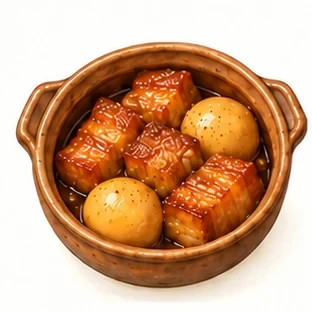

715 hình phù hợp trực quan; 25 dressing có giới hạn xác nhận thành phần sau xay. Xem verification.json để biết hash ảnh và giới hạn.
Thịt kho trứng
r4
Trước

Sau sửa
Đã vẽ lại và kiểm tra trực quan.
Công thức và hình lớn
Thịt heo, Trứng, Nước dừa, Nước mắm, Đường, Tỏi
Luộc chín trứng và bóc vỏ. Cắt thịt, băm tỏi. / Ướp thịt với nước mắm, đường và tỏi trong ngăn mát. / Cho thịt vào nồi đảo săn, thêm nước dừa và nước vừa đủ. Kho lửa nhỏ đến khi thịt chín mềm. / Cho trứng vào kho tiếp để thấm vị; nếm lại trước khi dùng.
Sơ chế tôm và để ráo, băm tỏi. / Phi tỏi với dầu rồi thêm tôm, đảo đều. / Thêm nước mắm, đường và một ít nước; rim đến khi tôm chín và sốt bám nhẹ. / Nếm lại và dùng nóng.
Đậu hũ, Cà chua, Hành lá, Dầu ăn, Nước tương, Đường
Cắt đậu và thấm khô, cắt cà chua và hành lá. / Áp chảo đậu với một phần dầu cho vàng nhẹ. / Nấu cà chua với phần dầu còn lại, nước tương, đường và ít nước thành sốt. / Cho đậu vào sốt, nấu thấm vị, rắc hành lá.
Băm thịt và hành tây, trộn với một phần nước tương và tiêu, vo viên nhỏ. / Áp chảo thịt viên với dầu cho săn mặt. / Thêm nấm, nước tương còn lại và ít nước. Đậy nắp nấu đến khi thịt chín hoàn toàn. / Nấu sốt sánh vừa và nếm lại.
Sơ chế gà, cắt khoai tây và cà rốt. / Cho gà vào nước, đun sôi rồi hớt bọt. / Thêm khoai và cà rốt, nấu đến khi gà chín hoàn toàn và rau củ mềm. / Nêm muối vừa ăn, thêm hành lá.
Hấp hoặc luộc chín tới khoai tây (10 phút) và bông cải xanh (3 phút) để giữ màu xanh giòn. / Làm nóng chảo chống dính với dầu, đặt mặt da cá hồi xuống áp chảo lửa vừa 4 phút cho da giòn vàng, lật mặt áp tiếp 2–3 phút cùng tỏi đập dập. / Đảo nhanh khoai tây và bông cải qua phần dầu tỏi thơm trong chảo 2 phút cho thấm vị. / Bày cá hồi cùng rau củ ra đĩa, vắt nhẹ nước cốt chanh tươi lên mặt cá trước khi thưởng thức.
Cắt thịt heo thành miếng mỏng vừa ăn, dùng dao thớt riêng cho thực phẩm sống. Rửa, cắt rau và băm hoặc thái gia vị trong công thức. / Làm nóng dầu, nấu thịt heo đến khi săn; nếu là đậu hũ, áp chảo nhẹ để giữ miếng. / Cho rau hoặc nguyên liệu làm sốt vào, thêm nước vừa đủ nếu cần, sốt đến khi nguyên liệu chín hoàn toàn và rau đạt độ mềm mong muốn. / Nếm và điều chỉnh gia vị, chia phần theo số người ăn. Món ăn kèm cơm và các món rau/canh được chọn riêng.
Cắt thịt heo thành miếng mỏng vừa ăn, dùng dao thớt riêng cho thực phẩm sống. Rửa, cắt rau và băm hoặc thái gia vị trong công thức. / Làm nóng dầu, nấu thịt heo đến khi săn; nếu là đậu hũ, áp chảo nhẹ để giữ miếng. / Cho rau hoặc nguyên liệu làm sốt vào, thêm nước vừa đủ nếu cần, xào đến khi nguyên liệu chín hoàn toàn và rau đạt độ mềm mong muốn. / Nếm và điều chỉnh gia vị, chia phần theo số người ăn. Món ăn kèm cơm và các món rau/canh được chọn riêng.
Cắt thịt bò thành miếng mỏng vừa ăn, dùng dao thớt riêng cho thực phẩm sống. Rửa, cắt rau và băm hoặc thái gia vị trong công thức. / Đặt thịt bò cùng gừng, hành hoặc sả vào đĩa chịu nhiệt, chuẩn bị xửng hấp. / Hấp đến khi nguyên liệu chín hoàn toàn; thời gian phụ thuộc độ dày và lượng thực phẩm. / Nếm và điều chỉnh gia vị, chia phần theo số người ăn. Món ăn kèm cơm và các món rau/canh được chọn riêng.
Cắt thịt bò thành miếng mỏng vừa ăn, dùng dao thớt riêng cho thực phẩm sống. Rửa, cắt rau và băm hoặc thái gia vị trong công thức. / Làm nóng dầu, nấu thịt bò đến khi săn; nếu là đậu hũ, áp chảo nhẹ để giữ miếng. / Cho rau hoặc nguyên liệu làm sốt vào, thêm nước vừa đủ nếu cần, sốt đến khi nguyên liệu chín hoàn toàn và rau đạt độ mềm mong muốn. / Nếm và điều chỉnh gia vị, chia phần theo số người ăn. Món ăn kèm cơm và các món rau/canh được chọn riêng.
Cắt thịt bò thành miếng mỏng vừa ăn, dùng dao thớt riêng cho thực phẩm sống. Rửa, cắt rau và băm hoặc thái gia vị trong công thức. / Làm nóng dầu, nấu thịt bò đến khi săn; nếu là đậu hũ, áp chảo nhẹ để giữ miếng. / Cho rau hoặc nguyên liệu làm sốt vào, thêm nước vừa đủ nếu cần, xào đến khi nguyên liệu chín hoàn toàn và rau đạt độ mềm mong muốn. / Nếm và điều chỉnh gia vị, chia phần theo số người ăn. Món ăn kèm cơm và các món rau/canh được chọn riêng.
Kiểm tra xương cá, chia miếng đều và thấm khô. Rửa, cắt rau và băm hoặc thái gia vị trong công thức. / Làm nóng dầu, nấu cá trắng đến khi săn; nếu là đậu hũ, áp chảo nhẹ để giữ miếng. / Cho rau hoặc nguyên liệu làm sốt vào, thêm nước vừa đủ nếu cần, sốt đến khi nguyên liệu chín hoàn toàn và rau đạt độ mềm mong muốn. / Nếm và điều chỉnh gia vị, chia phần theo số người ăn. Món ăn kèm cơm và các món rau/canh được chọn riêng.
Kiểm tra xương cá, chia miếng đều và thấm khô. Rửa, cắt rau và băm hoặc thái gia vị trong công thức. / Làm nóng dầu, nấu cá hồi đến khi săn; nếu là đậu hũ, áp chảo nhẹ để giữ miếng. / Cho rau hoặc nguyên liệu làm sốt vào, thêm nước vừa đủ nếu cần, xào đến khi nguyên liệu chín hoàn toàn và rau đạt độ mềm mong muốn. / Nếm và điều chỉnh gia vị, chia phần theo số người ăn. Món ăn kèm cơm và các món rau/canh được chọn riêng.
Kiểm tra xương cá, chia miếng đều và thấm khô. Rửa, cắt rau và băm hoặc thái gia vị trong công thức. / Làm nóng dầu, nấu cá hồi đến khi săn; nếu là đậu hũ, áp chảo nhẹ để giữ miếng. / Cho rau hoặc nguyên liệu làm sốt vào, thêm nước vừa đủ nếu cần, sốt đến khi nguyên liệu chín hoàn toàn và rau đạt độ mềm mong muốn. / Nếm và điều chỉnh gia vị, chia phần theo số người ăn. Món ăn kèm cơm và các món rau/canh được chọn riêng.
Kiểm tra xương cá, chia miếng đều và thấm khô. Rửa, cắt rau và băm hoặc thái gia vị trong công thức. / Làm nóng dầu, nấu cá hồi đến khi săn; nếu là đậu hũ, áp chảo nhẹ để giữ miếng. / Cho rau hoặc nguyên liệu làm sốt vào, thêm nước vừa đủ nếu cần, xào đến khi nguyên liệu chín hoàn toàn và rau đạt độ mềm mong muốn. / Nếm và điều chỉnh gia vị, chia phần theo số người ăn. Món ăn kèm cơm và các món rau/canh được chọn riêng.
Bóc vỏ, bỏ chỉ lưng tôm và để ráo. Rửa, cắt rau và băm hoặc thái gia vị trong công thức. / Làm nóng dầu, nấu tôm đến khi săn; nếu là đậu hũ, áp chảo nhẹ để giữ miếng. / Cho rau hoặc nguyên liệu làm sốt vào, thêm nước vừa đủ nếu cần, sốt đến khi nguyên liệu chín hoàn toàn và rau đạt độ mềm mong muốn. / Nếm và điều chỉnh gia vị, chia phần theo số người ăn. Món ăn kèm cơm và các món rau/canh được chọn riêng.
Bóc vỏ, bỏ chỉ lưng tôm và để ráo. Rửa, cắt rau và băm hoặc thái gia vị trong công thức. / Làm nóng dầu, nấu tôm đến khi săn; nếu là đậu hũ, áp chảo nhẹ để giữ miếng. / Cho rau hoặc nguyên liệu làm sốt vào, thêm nước vừa đủ nếu cần, xào đến khi nguyên liệu chín hoàn toàn và rau đạt độ mềm mong muốn. / Nếm và điều chỉnh gia vị, chia phần theo số người ăn. Món ăn kèm cơm và các món rau/canh được chọn riêng.
Cắt đậu hũ và thấm khô. Rửa, cắt rau và băm hoặc thái gia vị trong công thức. / Làm nóng dầu, nấu đậu hũ đến khi săn; nếu là đậu hũ, áp chảo nhẹ để giữ miếng. / Cho rau hoặc nguyên liệu làm sốt vào, thêm nước vừa đủ nếu cần, xào đến khi nguyên liệu chín hoàn toàn và rau đạt độ mềm mong muốn. / Nếm và điều chỉnh gia vị, chia phần theo số người ăn. Món ăn kèm cơm và các món rau/canh được chọn riêng.
Bí đỏ, Khoai tây, Hành tây, Nước dùng rau củ có sẵn, Tỏi, Dầu ăn, Muối, Tiêu
Làm nóng chút dầu trong nồi, xào thơm hành tây và tỏi băm 2 phút ở lửa vừa cho trong mà không cháy. / Cho bí đỏ, khoai tây và nước dùng rau củ vào nồi, đun sôi rồi hạ lửa nhỏ nấu 15 phút đến khi củ mềm nhừ. / Dùng máy xay hoặc muôi tán nhuyễn mịn hỗn hợp bí đỏ trên lửa nhỏ 2 phút cho sánh mịn. / Nêm muối và tiêu đen vừa vị, múc ra chén dùng ấm.
Rửa và cắt rau củ đều nhau; nấm làm sạch, đậu hũ cắt miếng nếu có. / Làm nóng dầu, phi tỏi hoặc gừng. Cho phần rau củ lâu chín vào trước, thêm chút nước nếu cần. / Cho phần rau còn lại vào, xào đến chín, thêm nước tương vừa ăn. / Chia phần và dùng cùng món chính. Khẩu phần món này có thể chia nhỏ khi bữa có nhiều món rau.
Rửa và cắt rau củ đều nhau; nấm làm sạch, đậu hũ cắt miếng nếu có. / Làm nóng dầu, phi tỏi hoặc gừng. Cho phần rau củ lâu chín vào trước, thêm chút nước nếu cần. / Cho phần rau còn lại vào, xào đến chín, thêm nước tương vừa ăn. / Chia phần và dùng cùng món chính. Khẩu phần món này có thể chia nhỏ khi bữa có nhiều món rau.
Rửa và cắt rau củ đều nhau; nấm làm sạch, đậu hũ cắt miếng nếu có. / Làm nóng dầu, phi tỏi hoặc gừng. Cho phần rau củ lâu chín vào trước, thêm chút nước nếu cần. / Cho phần rau còn lại vào, xào đến chín, thêm nước tương vừa ăn. / Chia phần và dùng cùng món chính. Khẩu phần món này có thể chia nhỏ khi bữa có nhiều món rau.
Rửa và cắt rau củ đều nhau; nấm làm sạch, đậu hũ cắt miếng nếu có. / Làm nóng dầu, phi tỏi hoặc gừng. Cho phần rau củ lâu chín vào trước, thêm chút nước nếu cần. / Cho phần rau còn lại vào, xào đến chín, thêm nước tương vừa ăn. / Chia phần và dùng cùng món chính. Khẩu phần món này có thể chia nhỏ khi bữa có nhiều món rau.
Rửa và cắt rau củ đều nhau; nấm làm sạch, đậu hũ cắt miếng nếu có. / Làm nóng dầu, phi tỏi hoặc gừng. Cho phần rau củ lâu chín vào trước, thêm chút nước nếu cần. / Cho phần rau còn lại vào, xào đến chín, thêm nước tương vừa ăn. / Chia phần và dùng cùng món chính. Khẩu phần món này có thể chia nhỏ khi bữa có nhiều món rau.
Rửa và cắt rau củ đều nhau; nấm làm sạch, đậu hũ cắt miếng nếu có. / Làm nóng dầu, phi tỏi hoặc gừng. Cho phần rau củ lâu chín vào trước, thêm chút nước nếu cần. / Cho phần rau còn lại vào, xào đến chín, thêm nước tương vừa ăn. / Chia phần và dùng cùng món chính. Khẩu phần món này có thể chia nhỏ khi bữa có nhiều món rau.
Rửa và cắt rau củ đều nhau; nấm làm sạch, đậu hũ cắt miếng nếu có. / Làm nóng dầu, phi tỏi hoặc gừng. Cho phần rau củ lâu chín vào trước, thêm chút nước nếu cần. / Cho phần rau còn lại vào, xào đến chín, thêm nước tương vừa ăn. / Chia phần và dùng cùng món chính. Khẩu phần món này có thể chia nhỏ khi bữa có nhiều món rau.
Rửa và cắt rau củ đều nhau; nấm làm sạch, đậu hũ cắt miếng nếu có. / Làm nóng dầu, phi tỏi hoặc gừng. Cho phần rau củ lâu chín vào trước, thêm chút nước nếu cần. / Cho phần rau còn lại vào, xào đến chín, thêm nước tương vừa ăn. / Chia phần và dùng cùng món chính. Khẩu phần món này có thể chia nhỏ khi bữa có nhiều món rau.
Rửa và cắt rau củ đều nhau; nấm làm sạch, đậu hũ cắt miếng nếu có. / Làm nóng dầu, phi tỏi hoặc gừng. Cho phần rau củ lâu chín vào trước, thêm chút nước nếu cần. / Cho phần rau còn lại vào, xào đến chín, thêm nước tương vừa ăn. / Chia phần và dùng cùng món chính. Khẩu phần món này có thể chia nhỏ khi bữa có nhiều món rau.
Rửa và cắt rau củ đều nhau; nấm làm sạch, đậu hũ cắt miếng nếu có. / Làm nóng dầu, phi tỏi hoặc gừng. Cho phần rau củ lâu chín vào trước, thêm chút nước nếu cần. / Cho phần rau còn lại vào, xào đến chín, thêm nước tương vừa ăn. / Chia phần và dùng cùng món chính. Khẩu phần món này có thể chia nhỏ khi bữa có nhiều món rau.
Rửa và cắt rau củ đều nhau; nấm làm sạch, đậu hũ cắt miếng nếu có. / Làm nóng dầu, phi tỏi hoặc gừng. Cho phần rau củ lâu chín vào trước, thêm chút nước nếu cần. / Cho phần rau còn lại vào, xào đến chín, thêm nước tương vừa ăn. / Chia phần và dùng cùng món chính. Khẩu phần món này có thể chia nhỏ khi bữa có nhiều món rau.
Rửa và cắt rau củ đều nhau; nấm làm sạch, đậu hũ cắt miếng nếu có. / Làm nóng dầu, phi tỏi hoặc gừng. Cho phần rau củ lâu chín vào trước, thêm chút nước nếu cần. / Cho phần rau còn lại vào, xào đến chín, thêm nước tương vừa ăn. / Chia phần và dùng cùng món chính. Khẩu phần món này có thể chia nhỏ khi bữa có nhiều món rau.
Rửa và cắt rau củ đều nhau; nấm làm sạch, đậu hũ cắt miếng nếu có. / Làm nóng dầu, phi tỏi hoặc gừng. Cho phần rau củ lâu chín vào trước, thêm chút nước nếu cần. / Cho phần rau còn lại vào, xào đến chín, thêm nước tương vừa ăn. / Chia phần và dùng cùng món chính. Khẩu phần món này có thể chia nhỏ khi bữa có nhiều món rau.
Rửa và cắt rau củ đều nhau; nấm làm sạch, đậu hũ cắt miếng nếu có. / Làm nóng dầu, phi tỏi hoặc gừng. Cho phần rau củ lâu chín vào trước, thêm chút nước nếu cần. / Cho phần rau còn lại vào, xào đến chín, thêm nước tương vừa ăn. / Chia phần và dùng cùng món chính. Khẩu phần món này có thể chia nhỏ khi bữa có nhiều món rau.
Bông cải xanh, Đậu Hà Lan, Gừng, Dầu ăn, Nước tương
Rửa và cắt rau củ đều nhau; nấm làm sạch, đậu hũ cắt miếng nếu có. / Làm nóng dầu, phi tỏi hoặc gừng. Cho phần rau củ lâu chín vào trước, thêm chút nước nếu cần. / Cho phần rau còn lại vào, xào đến chín, thêm nước tương vừa ăn. / Chia phần và dùng cùng món chính. Khẩu phần món này có thể chia nhỏ khi bữa có nhiều món rau.
Rửa và cắt rau củ đều nhau; nấm làm sạch, đậu hũ cắt miếng nếu có. / Làm nóng dầu, phi tỏi hoặc gừng. Cho phần rau củ lâu chín vào trước, thêm chút nước nếu cần. / Cho phần rau còn lại vào, xào đến chín, thêm nước tương vừa ăn. / Chia phần và dùng cùng món chính. Khẩu phần món này có thể chia nhỏ khi bữa có nhiều món rau.
Rửa và cắt rau củ đều nhau; nấm làm sạch, đậu hũ cắt miếng nếu có. / Làm nóng dầu, phi tỏi hoặc gừng. Cho phần rau củ lâu chín vào trước, thêm chút nước nếu cần. / Cho phần rau còn lại vào, xào đến chín, thêm nước tương vừa ăn. / Chia phần và dùng cùng món chính. Khẩu phần món này có thể chia nhỏ khi bữa có nhiều món rau.
Rửa và cắt rau củ đều nhau; nấm làm sạch, đậu hũ cắt miếng nếu có. / Làm nóng dầu, phi tỏi hoặc gừng. Cho phần rau củ lâu chín vào trước, thêm chút nước nếu cần. / Cho phần rau còn lại vào, xào đến chín, thêm nước tương vừa ăn. / Chia phần và dùng cùng món chính. Khẩu phần món này có thể chia nhỏ khi bữa có nhiều món rau.
Rửa và cắt rau củ đều nhau; nấm làm sạch, đậu hũ cắt miếng nếu có. / Làm nóng dầu, phi tỏi hoặc gừng. Cho phần rau củ lâu chín vào trước, thêm chút nước nếu cần. / Cho phần rau còn lại vào, xào đến chín, thêm nước tương vừa ăn. / Chia phần và dùng cùng món chính. Khẩu phần món này có thể chia nhỏ khi bữa có nhiều món rau.
Đun sôi nồi nước có pha 1 thìa cà phê muối, luộc mì Ý 8–10 phút đến độ chín vừa (al dente) rồi vớt ra trộn nhẹ 1 thìa dầu. / Làm nóng dầu trên chảo sâu lòng, phi thơm tỏi, hành tây và cà rốt băm 3 phút cho dậy mùi ngọt tự nhiên. / Cho thịt bò bằm vào đảo lửa lớn đến khi săn tơi, thêm cà chua băm và 120ml nước luộc mì, hạ lửa nhỏ ninh 12 phút cho sốt sánh đậm. / Nêm muối, tiêu đen vừa ăn, đảo đều mì với sốt bò bằm nóng hổi hoặc rưới sốt lên từng đĩa mì.
Đã vẽ lại và kiểm tra trực quan. Đã sửa tên/nguyên liệu/hướng dẫn cho nhất quán.
Công thức và hình lớn
Mì spaghetti khô, Cá hồi, Nước dùng ít muối có sẵn, Nấm, Tỏi, Hành tây, Dầu ăn, Muối, Tiêu
Luộc mì Ý trong nước sôi có muối khoảng 8–9 phút cho vừa chín tới, giữ lại 80ml nước luộc mì rồi để ráo. / Áp chảo cá hồi với chút dầu ở lửa vừa 2 phút mỗi mặt cho vàng thơm bên ngoài mà bên trong vẫn mềm ẩm, gắp ra đĩa. / Phi thơm tỏi và hành tây băm trên cùng chảo, cho nấm vào xào chín tới rồi rót nước dùng và nước luộc mì vào đun sôi lăn tăn. / Cho mì Ý và cá hồi vào đảo nhẹ tay 1–2 phút cho sốt áo đều sợi mì, rắc tiêu đen và dùng nóng.
Luộc mì Ý trong nước sôi có muối 8 phút; 2 phút cuối cho bông cải xanh vào chần chung rồi vớt ra để ráo, giữ lại 80ml nước luộc. / Áp chảo ức gà với 1 thìa dầu ở lửa vừa 3–4 phút mỗi mặt đến khi vàng chín, lấy ra để nghỉ. / Phi vàng tỏi lát ở lửa nhỏ cho thơm dịu, cho nấm vào xào săn với chút muối và nước luộc mì. / Trộn mì Ý, bông cải và ức gà vào chảo, đảo đều trên lửa vừa 1 phút, rắc tiêu đen xay.
Bánh phở, Thịt gà, Cà rốt, Bắp cải, Nước dùng ít muối có sẵn, Hành lá, Muối
Sơ chế nguyên liệu đạm, kiểm tra xương nếu có cá; rau củ rửa và cắt vừa ăn. / Đun nước dùng, cho phần rau củ lâu mềm và gà vào nấu chín hoàn toàn. Trứng có thể luộc chín riêng. / Trụng hoặc nấu phở theo hướng dẫn trên bao bì. Cho rau còn lại vào nước dùng, nấu vừa chín. / Nêm nhẹ, chia sợi và các nguyên liệu ra tô, chan nước dùng nóng, thêm hành lá. Đây là món nước làm bữa chính; cơm và món khác được chọn riêng.
Gạo arborio, Tôm, Hành tây, Nước dùng ít muối có sẵn, Chanh vàng, Phô mai Parmesan, Muối, Tiêu, Dầu ăn
Làm nóng nước dùng của công thức trong nồi riêng; thái nhỏ rau và băm hành, tỏi nếu có. / Áp chảo tôm đã sơ chế đến chín rồi để riêng. Xào hành, đảo gạo; sau khi gạo chín cùng nước dùng, trộn lại tôm, Parmesan và chanh. / Thêm nước dùng nóng từng vá vào gạo arborio, khuấy nhẹ; chờ gần cạn mới thêm tiếp. Nấu khoảng 18–22 phút đến khi hạt chín vừa và hỗn hợp sánh, thêm nước nóng nếu cần. / nêm theo khẩu vị từ lượng muối, tiêu và nguyên liệu sốt đã ghi. Chỉ thêm húng quế/oregano/phô mai nếu có trong danh sách; chia đúng bốn suất.
Nấm, Hành tây, Tỏi, Kem tươi dùng nấu ăn, Nước dùng rau củ có sẵn, Bột mì đa dụng, Bơ lạt, Muối, Tiêu, Dầu ăn
Cắt phần rau củ trong công thức thành miếng nhỏ đều nhau; đậu chín/cá hộp để ráo trước khi cân. / Xào hành, tỏi và nấm với bơ cho bay nước; rắc bột mì đảo 1 phút rồi thêm nước dùng, nấu 15 phút; thêm kem và xay một phần súp. / Thêm lượng nước dùng đã cân; nấu nhỏ lửa đến khi củ hoặc đậu lăng mềm. Với đậu chín, chỉ cần đun nóng kỹ; thêm nước nóng nếu súp quá đặc. / nêm theo khẩu vị từ lượng muối, tiêu và nguyên liệu sốt đã ghi. Chỉ thêm húng quế/oregano/phô mai nếu có trong danh sách; chia đúng bốn suất.
Khoai tây, Bắp hạt, Hành tây, Sữa tươi không đường, Nước dùng rau củ có sẵn, Bơ lạt, Muối, Tiêu, Dầu ăn
Cắt phần rau củ trong công thức thành miếng nhỏ đều nhau; đậu chín/cá hộp để ráo trước khi cân. / Xào hành với bơ, thêm khoai và nước dùng nấu mềm; nghiền một phần khoai, thêm bắp và sữa rồi đun lăn tăn 5 phút. / Thêm lượng nước dùng đã cân; nấu nhỏ lửa đến khi củ hoặc đậu lăng mềm. Với đậu chín, chỉ cần đun nóng kỹ; thêm nước nóng nếu súp quá đặc. / nêm theo khẩu vị từ lượng muối, tiêu và nguyên liệu sốt đã ghi. Chỉ thêm húng quế/oregano/phô mai nếu có trong danh sách; chia đúng bốn suất.
Làm sạch sườn và để ráo. Băm tỏi, cắt hành lá. / Ướp sườn với một phần nước mắm, đường và tỏi khoảng 20 phút trong ngăn mát. / Phi phần tỏi còn lại với dầu, cho sườn vào đảo săn. Thêm nước vừa đủ, đậy nắp và nấu đến khi sườn chín mềm. / Mở nắp, rim cho sốt sánh; nêm lại theo khẩu vị, thêm hành lá.
Làm sạch gà, để ráo. Thái gừng và băm tỏi. / Ướp gà với gừng, nước mắm và đường trong ngăn mát khoảng 15 phút. / Phi tỏi, đảo gà săn; thêm nước vừa đủ và kho đến khi thịt chín hoàn toàn. / Mở nắp cho sốt sánh nhẹ, nếm và điều chỉnh gia vị.
Kiểm tra và bỏ xương dăm, thấm khô cá. / Nêm nhẹ muối, tiêu. Làm nóng chảo với dầu. / Đặt cá vào chảo, áp chảo từng mặt đến khi cá chín hoàn toàn; điều chỉnh lửa để không cháy. / Thêm tỏi ở cuối, dùng cùng rau và cơm.
Thịt bò, Bông cải xanh, Tỏi, Nước tương, Dầu ăn, Hành tây
Thái bò, cắt hành tây và bông cải. / Ướp bò với một ít nước tương và tỏi trong ngăn mát. / Xào bò nhanh với dầu rồi lấy ra. Cho rau vào xào đến độ mềm mong muốn. / Cho bò trở lại chảo, thêm nước tương, đảo đến khi chín và dùng ngay.
Thịt gà, Sả, Tỏi, Nước mắm, Dầu ăn, Hành tây, Đường
Sơ chế gà, băm sả và tỏi, cắt hành tây. / Ướp gà với một phần sả, nước mắm và đường trong ngăn mát. / Phi tỏi và sả còn lại với dầu, cho gà vào đảo đều. / Thêm chút nước nếu cần, nấu gà chín hoàn toàn rồi thêm hành tây, nêm lại.
Cá trắng, Cà chua, Nước mắm, Đường, Dầu ăn, Hành lá
Làm sạch cá, kiểm tra xương; sơ chế cà chua và hành. / Nấu cà chua với dầu cho mềm, thêm nước mắm, đường và nước. / Cho cá vào, kho lửa nhỏ đến khi chín và thấm vị; hạn chế đảo làm nát cá. / Nêm lại và thêm hành lá trước khi dùng.
Đập trứng, thêm hành lá và nước mắm rồi đánh đều. / Làm nóng chảo, thêm dầu và đổ trứng vào. / Hạ lửa, chiên đến khi trứng chín đều cả hai mặt. / Cắt miếng vừa ăn và dùng nóng.
Thái bò mỏng, cắt đậu que và cà rốt. / Xào bò với dầu và tỏi đến khi săn rồi lấy ra. / Xào rau đến khi chín, thêm chút nước nếu cần. / Cho bò trở lại, nêm nước tương và đảo đến khi chín.
Gọt bí đỏ và cắt miếng, băm thịt và hành. / Đun nước, cho thịt vào khuấy tơi và hớt bọt. / Cho bí vào nấu đến mềm; nêm nước mắm và muối vừa ăn. / Thêm hành lá, tắt bếp và dùng nóng.
Rửa rau, cắt vừa ăn; sơ chế tôm. / Đun nước với gừng, thêm tôm và nấu chín. / Cho rau vào nấu đến độ mềm mong muốn. / Nêm nhẹ nước mắm và muối, dùng nóng.
Sơ chế cá, cắt cà chua, dứa và đậu bắp. / Đun nước với dứa và cà chua cho ra vị chua tự nhiên. / Cho cá vào nấu chín, thêm đậu bắp và gia vị. / Nếm lại độ chua ngọt; kiểm tra xương khi chia phần cho trẻ.
Sơ chế nấm, cắt đậu và cà rốt. / Đun nước, cho cà rốt và nấm vào nấu chín. / Thêm đậu, nấu nhẹ để không vỡ; nêm nước tương và muối. / Thêm hành lá và dùng nóng.
Cắt cà chua, thái hành và đánh trứng. / Xào cà chua với dầu cho mềm, thêm nước và đun sôi. / Rót trứng từ từ, khuấy nhẹ và nấu đến chín. / Nêm muối, thêm hành lá và dùng ngay.
Rửa và cắt bắp cải, thái cà rốt; băm thịt. / Đun nước, cho thịt và cà rốt vào nấu. / Thêm bắp cải, nấu đến độ mềm mong muốn. / Nêm nước mắm và muối, dùng nóng.
Nhặt và rửa rau, cắt đoạn; đập dập tỏi. / Làm nóng dầu, phi tỏi thơm nhẹ. / Cho rau vào đảo đều, thêm ít nước nếu cần và xào chín. / Nêm nhẹ muối, đảo đều và dùng ngay.
Rửa cải thìa và nấm, băm tỏi. / Phi tỏi với dầu rồi thêm nấm, xào chín. / Cho cải vào đảo đều, thêm chút nước nếu cần. / Nêm nước tương và xào đến khi rau chín.
Rửa sạch dưa leo và cà chua dưới nước sạch. / Dùng dao và thớt sạch, cắt miếng vừa ăn. / Trộn nhẹ với dầu và một chút muối ngay trước khi dùng. / Chia phần và dùng cùng món chính.
Sơ chế nấm, hành tây và tỏi. / Làm nóng dầu, phi tỏi rồi cho nấm vào xào. / Thêm hành tây, xào đến khi nấm chín và hành mềm. / Nêm nước tương, đảo đều và dùng nóng.
Bánh phở, Gà chín có sẵn, Nước dùng ít muối có sẵn, Gừng, Hành tây, Hành lá, Rau thơm, Nước mắm, Chanh
Nướng hoặc áp chảo gừng, hành tây cho thơm, cho vào nước dùng và đun nóng. / Trụng bánh phở theo hướng dẫn trên bao bì. Xé gà chín, rửa rau thơm. / Cho gà vào nước dùng, đun nóng kỹ; nêm nước mắm vừa ăn. / Chia bánh phở, gà và nước dùng ra tô; thêm hành, rau thơm, chanh theo ý thích.
Bánh phở, Thịt bò, Nước dùng ít muối có sẵn, Gừng, Hành tây, Hành lá, Rau thơm, Nước mắm
Đun nước dùng với gừng và hành tây áp chảo. / Trụng bánh phở, chuẩn bị rau thơm và hành lá. / Cho thịt bò thái mỏng vào nồi, nấu chín hoàn toàn. / Chia bánh phở, thịt và nước dùng ra tô, thêm rau thơm.
Bún tươi, Thịt heo, Nấm, Nước dùng ít muối có sẵn, Hành lá, Nước mắm, Tiêu
Trộn thịt xay với chút nước mắm, tiêu, vo thành viên nhỏ. / Đun nước dùng, thêm thịt viên và nấu chín hoàn toàn. / Thêm nấm đã sơ chế, nấu chín; trụng bún theo bao bì. / Chia bún và nước dùng ra tô, thêm hành lá.
Bún tươi, Cá trắng, Cà chua, Nước dùng ít muối có sẵn, Gừng, Nước mắm, Hành lá, Dầu ăn
Cắt cá miếng vừa ăn, kiểm tra xương; cắt cà chua, gừng và hành. / Xào mềm cà chua với dầu, thêm gừng và nước dùng. / Cho cá vào nấu chín, nêm nước mắm. / Trụng bún rồi chia ra tô, chan nước cá cà chua và thêm hành.
Bún tươi, Tôm, Rau cải, Nước dùng ít muối có sẵn, Gừng, Nước mắm, Hành lá
Sơ chế tôm, rau cải và hành. / Đun nước dùng với gừng, cho tôm vào nấu chín. / Thêm rau cải, nấu mềm vừa và nêm nước mắm. / Trụng bún, chia ra tô rồi chan nước dùng cùng tôm và rau.
Bún tươi, Đậu hũ, Nấm, Cà chua, Nước dùng rau củ có sẵn, Nước tương, Dầu ăn
Cắt đậu hũ, nấm và cà chua. / Xào cà chua với dầu cho mềm, thêm nước dùng rau củ. / Cho nấm và đậu vào nấu chín, nêm nước tương. / Trụng bún và chia tô, thêm nước dùng, nấm và đậu.
Sợi hủ tiếu, Thịt heo, Nước dùng ít muối có sẵn, Cải thìa, Tỏi, Hành lá, Nước mắm, Dầu ăn
Phi tỏi với dầu, cho thịt bằm vào đảo tơi. / Thêm nước dùng, đun đến khi thịt chín hoàn toàn. / Cho cải thìa vào nấu chín, nêm nước mắm. / Trụng hủ tiếu, chia tô và chan nước dùng, rắc hành lá.
Sợi hủ tiếu, Tôm, Thịt heo, Cải thìa, Nước dùng ít muối có sẵn, Hành lá, Nước mắm
Sơ chế tôm và thái thịt thành miếng mỏng. / Đun nước dùng, cho thịt vào nấu chín rồi thêm tôm. / Thêm cải thìa, nấu chín và nêm nước mắm. / Trụng hủ tiếu và chia tô, chan nước dùng cùng tôm thịt và rau.
Mì trứng, Hoành thánh đông lạnh, Cải thìa, Nước dùng ít muối có sẵn, Hành lá, Nước tương
Đun nước dùng; nấu hoành thánh theo hướng dẫn trên bao bì đến chín hoàn toàn. / Trụng mì trứng riêng để nước dùng trong. / Cho cải thìa vào nước dùng, nấu chín rồi nêm nhẹ nước tương. / Chia mì ra tô, thêm hoành thánh, rau, nước dùng và hành lá.
Mì trứng, Thịt bò, Bông cải xanh, Cà rốt, Nước dùng ít muối có sẵn, Nước tương, Gừng
Đun nước dùng với gừng và cà rốt. / Trụng mì riêng theo bao bì. / Thêm bông cải rồi thịt bò; nấu chín hoàn toàn, nêm nước tương. / Chia mì và các nguyên liệu ra tô, chan nước dùng nóng.
Mì udon, Trứng, Nấm, Cải thìa, Nước dùng ít muối có sẵn, Nước tương, Hành lá
Luộc trứng chín, bóc vỏ. Sơ chế nấm và cải. / Đun nước dùng, thêm nấm và rau, nấu chín. / Nêm nước tương, thêm mì udon và nấu theo hướng dẫn bao bì. / Chia tô, thêm trứng cắt đôi và hành lá.
Miến khô, Gà chín có sẵn, Nấm, Nước dùng ít muối có sẵn, Hành lá, Gừng, Nước mắm
Ngâm hoặc trụng miến theo bao bì, xé gà và thái nấm. / Đun nước dùng với gừng, thêm nấm và nấu chín. / Cho gà chín vào làm nóng kỹ, nêm nước mắm. / Thêm miến vừa đủ mềm rồi chia tô, rắc hành lá.
Miến khô, Tôm, Cà rốt, Bắp cải, Nước dùng ít muối có sẵn, Nước mắm, Hành lá
Ngâm miến theo bao bì; sơ chế tôm, thái cà rốt và bắp cải. / Đun nước dùng với cà rốt, thêm tôm và nấu chín. / Cho bắp cải và miến vào, nấu vừa mềm và nêm nước mắm. / Chia ra tô, thêm hành lá và dùng nóng.
Nui, Thịt gà, Cà rốt, Khoai tây, Nước dùng ít muối có sẵn, Hành lá, Muối
Cắt gà và rau củ thành miếng nhỏ. / Luộc nui theo bao bì trong nồi riêng. / Đun nước dùng, nấu gà và rau củ chín hoàn toàn, nêm nhẹ muối. / Chia nui ra tô và thêm gà, rau củ, nước dùng và hành lá.
Nui, Thịt heo, Cà chua, Cà rốt, Nước dùng ít muối có sẵn, Dầu ăn, Muối
Luộc nui theo hướng dẫn bao bì. / Xào thịt và cà chua với dầu cho săn, thêm nước dùng và cà rốt. / Nấu đến khi thịt chín hoàn toàn và cà rốt mềm, nêm nhẹ muối. / Chia nui ra tô, thêm thịt, rau và nước dùng.
Cơm chín có sẵn, Gà chín có sẵn, Nước dùng ít muối có sẵn, Gừng, Hành lá, Muối
Cho cơm chín bảo quản đúng cách vào nước dùng, đun sôi và khuấy tơi. / Nấu nhỏ lửa đến độ sánh mong muốn; thêm nước nếu cần. / Thêm gừng, gà chín xé nhỏ và làm nóng kỹ. / Nêm nhẹ muối, thêm hành lá và dùng ngay.
Cơm chín có sẵn, Thịt heo, Bí đỏ, Nước dùng ít muối có sẵn, Hành lá, Nước mắm
Cắt bí đỏ nhỏ; cho cơm chín bảo quản đúng cách vào nước dùng và đun sôi. / Thêm bí đỏ, khuấy tơi và nấu đến mềm. / Cho thịt bằm vào khuấy đều, nấu chín hoàn toàn. / Nêm nhẹ nước mắm, thêm hành lá, điều chỉnh độ đặc bằng nước.
Cơm chín có sẵn, Tôm, Cà rốt, Nước dùng ít muối có sẵn, Hành lá, Muối
Đun cơm chín bảo quản đúng cách với nước dùng, khuấy tơi. / Thêm cà rốt băm, nấu đến mềm và cháo sánh. / Cho tôm cắt nhỏ vào nấu chín hoàn toàn. / Nêm nhẹ muối, thêm hành lá và chia tô.
Gà chín có sẵn, Bắp hạt, Trứng, Nấm, Nước dùng ít muối có sẵn, Bột bắp, Hành lá, Muối
Xé gà, thái nấm; đun nước dùng với bắp và nấm đến chín. / Thêm gà chín và làm nóng kỹ. / Hòa bột bắp với nước nguội rồi rót từ từ vào nồi, khuấy đến độ sánh mong muốn. / Rót trứng đánh tan từ từ, khuấy nhẹ và nấu chín; nêm muối, thêm hành.
Đậu hũ, Rong biển khô, Nấm, Nước dùng rau củ có sẵn, Tương miso, Hành lá
Sơ chế nấm, cắt đậu hũ và ngâm rong biển theo bao bì. / Đun nước dùng rau củ, thêm nấm và nấu chín. / Cho đậu và rong biển vào, nấu nóng nhẹ. / Hòa miso với một ít nước dùng rồi cho lại nồi; chia tô và thêm hành.
Nui, Khoai tây, Cà rốt, Cà chua, Đậu Hà Lan, Nước dùng rau củ có sẵn, Dầu ăn, Muối
Xào mềm cà chua với dầu rồi thêm nước dùng rau củ. / Cho khoai tây và cà rốt vào nấu đến gần mềm. / Thêm nui và đậu Hà Lan, nấu theo thời gian trên bao bì đến chín. / Thêm nước nếu cần, nêm nhẹ muối và chia tô.
Sợi bánh canh, Cá viên, Cải thìa, Nước dùng ít muối có sẵn, Hành lá, Nước mắm
Đun nước dùng, cho cá viên vào nấu theo bao bì đến chín hoàn toàn. / Trụng sợi bánh canh theo thời gian ghi trên bao bì. / Thêm cải thìa vào nước dùng, nấu chín rồi nêm nước mắm. / Chia sợi, cá viên và rau ra tô, chan nước dùng và thêm hành.
Mì trứng, Trứng, Cà chua, Cải thìa, Nước dùng ít muối có sẵn, Dầu ăn, Muối
Cắt cà chua, sơ chế cải và đánh trứng. / Xào cà chua với dầu cho mềm, thêm nước dùng và đun sôi. / Cho rau và mì vào nấu theo bao bì; rót trứng vào và nấu chín hoàn toàn. / Nêm nhẹ muối, điều chỉnh nước và chia ra tô.
Thịt bò, Khoai tây, Đậu que, Tỏi, Hành tây, Dầu ăn, Muối, Tiêu
Khoai tây gọt vỏ cắt múi cau, luộc sơ 7 phút rồi áp chảo vàng giòn các mặt; đậu que tước xơ chần chín tới. / Làm nóng già chảo gang hoặc chảo đáy dày, cho dầu và áp chảo miếng thịt bò cùng tép tỏi đập dập 2.5–3 phút mỗi mặt tùy độ chín mong muốn. / Lấy thịt bò ra đĩa ấm để nghỉ 5 phút giúp giữ trọn nước ngọt bên trong rồi thái lát dày vừa ăn. / Xào nhanh hành tây và đậu que trên chảo vừa áp bò, bày kèm khoai tây và thịt bò.
Cà rốt và khoai tây cắt miếng vừa ăn, hấp hoặc luộc sơ 6 phút; bông cải xanh rửa sạch để ráo. / Làm nóng chảo với 1 thìa dầu, áp chảo ức gà lửa vừa 4 phút mỗi mặt đến khi vàng ruộm và chín mềm bên trong. / Cho khoai tây, cà rốt và bông cải vào chảo đảo đều 4–5 phút cho xém cạnh thơm nhẹ. / Thái ức gà thành lát vừa ăn, xếp cùng rau củ nóng hổi.
Cá hồi, Bông cải xanh, Nấm, Gừng, Hành lá, Nước tương, Dầu ăn
Xếp cá hồi cùng gừng thái sợi lên đĩa sứ sâu lòng, đặt bông cải xanh và nấm xung quanh. / Đun sôi nước trong xửng hấp, cho đĩa cá và rau vào hấp lửa vừa 8–10 phút đến khi cá vừa chín tới mềm ngọt. / Xếp hành lá thái sợi lên trên, rưới nước tương pha ấm và 1 thìa nhỏ dầu nóng cho dậy mùi thơm. / Dùng nóng ngay để giữ trọn vị ngọt tự nhiên và dinh dưỡng.
Áp chảo ức gà với 1 thìa nhỏ dầu ở lửa vừa 4 phút mỗi mặt đến khi chín vàng, để nguội bớt rồi thái lát. / Cắt dưa leo, cà chua vừa ăn, trộn nhẹ với rau xanh và bắp ngọt đã chần chín. / Pha sốt trộn thanh mát gồm nước cốt chanh, 1 thìa dầu, chút muối và tiêu đen. / Xếp ức gà lên đĩa rau trộn, rưới sốt ngay trước khi ăn để rau giữ độ giòn.
Đậu hũ, Nấm, Cải thìa, Tỏi, Gừng, Nước tương, Dầu ăn, Hành lá
Chần nhanh cải thìa trong nước sôi 1.5 phút rồi xếp gọn quanh đĩa; chần sơ đậu hũ 1 phút để miếng đậu săn chắc. / Làm nóng 1 thìa nhỏ dầu, phi thơm tỏi và gừng băm, cho nấm vào xào chín mềm với nước tương và 80ml nước lọc. / Cho đậu hũ vào đảo nhẹ tay 3 phút trên lửa nhỏ để thấm sốt nấm. / Trút đậu hũ và sốt nấm lên đĩa cải thìa, rắc hành lá thái nhỏ.
Lót sả đập dập và gừng thái lát dưới đáy xửng hấp, xếp tôm ở một bên và rau củ ở bên cạnh. / Hấp trên lửa vừa 7–8 phút tính từ khi nước sôi đến khi tôm chuyển màu đỏ hồng và rau củ chín giòn ngọt. / Pha muối tiêu chanh ớt nhẹ để chấm kèm tôm và rau củ hấp. / Bày ra đĩa dùng nóng, giữ nguyên vị ngọt tự nhiên không dầu mỡ.
Cắt thịt heo thành miếng mỏng vừa ăn, dùng dao thớt riêng cho thực phẩm sống. Rửa, cắt rau và băm hoặc thái gia vị trong công thức. / Làm nóng dầu, nấu thịt heo đến khi săn; nếu là đậu hũ, áp chảo nhẹ để giữ miếng. / Cho rau hoặc nguyên liệu làm sốt vào, thêm nước vừa đủ nếu cần, rim đến khi nguyên liệu chín hoàn toàn và rau đạt độ mềm mong muốn. / Nếm và điều chỉnh gia vị, chia phần theo số người ăn. Món ăn kèm cơm và các món rau/canh được chọn riêng.
Cắt thịt heo thành miếng mỏng vừa ăn, dùng dao thớt riêng cho thực phẩm sống. Rửa, cắt rau và băm hoặc thái gia vị trong công thức. / Làm nóng dầu, nấu thịt heo đến khi săn; nếu là đậu hũ, áp chảo nhẹ để giữ miếng. / Cho rau hoặc nguyên liệu làm sốt vào, thêm nước vừa đủ nếu cần, rim đến khi nguyên liệu chín hoàn toàn và rau đạt độ mềm mong muốn. / Nếm và điều chỉnh gia vị, chia phần theo số người ăn. Món ăn kèm cơm và các món rau/canh được chọn riêng.
Cắt thịt heo thành miếng mỏng vừa ăn, dùng dao thớt riêng cho thực phẩm sống. Rửa, cắt rau và băm hoặc thái gia vị trong công thức. / Làm nóng dầu, nấu thịt heo đến khi săn; nếu là đậu hũ, áp chảo nhẹ để giữ miếng. / Cho rau hoặc nguyên liệu làm sốt vào, thêm nước vừa đủ nếu cần, xào đến khi nguyên liệu chín hoàn toàn và rau đạt độ mềm mong muốn. / Nếm và điều chỉnh gia vị, chia phần theo số người ăn. Món ăn kèm cơm và các món rau/canh được chọn riêng.
Cắt thịt heo thành miếng mỏng vừa ăn, dùng dao thớt riêng cho thực phẩm sống. Rửa, cắt rau và băm hoặc thái gia vị trong công thức. / Làm nóng dầu, nấu thịt heo đến khi săn; nếu là đậu hũ, áp chảo nhẹ để giữ miếng. / Cho rau hoặc nguyên liệu làm sốt vào, thêm nước vừa đủ nếu cần, xào đến khi nguyên liệu chín hoàn toàn và rau đạt độ mềm mong muốn. / Nếm và điều chỉnh gia vị, chia phần theo số người ăn. Món ăn kèm cơm và các món rau/canh được chọn riêng.
Cắt thịt heo thành miếng mỏng vừa ăn, dùng dao thớt riêng cho thực phẩm sống. Rửa, cắt rau và băm hoặc thái gia vị trong công thức. / Làm nóng dầu, nấu thịt heo đến khi săn; nếu là đậu hũ, áp chảo nhẹ để giữ miếng. / Cho rau hoặc nguyên liệu làm sốt vào, thêm nước vừa đủ nếu cần, xào đến khi nguyên liệu chín hoàn toàn và rau đạt độ mềm mong muốn. / Nếm và điều chỉnh gia vị, chia phần theo số người ăn. Món ăn kèm cơm và các món rau/canh được chọn riêng.
Cắt thịt heo thành miếng mỏng vừa ăn, dùng dao thớt riêng cho thực phẩm sống. Rửa, cắt rau và băm hoặc thái gia vị trong công thức. / Làm nóng dầu, nấu thịt heo đến khi săn; nếu là đậu hũ, áp chảo nhẹ để giữ miếng. / Cho rau hoặc nguyên liệu làm sốt vào, thêm nước vừa đủ nếu cần, xào đến khi nguyên liệu chín hoàn toàn và rau đạt độ mềm mong muốn. / Nếm và điều chỉnh gia vị, chia phần theo số người ăn. Món ăn kèm cơm và các món rau/canh được chọn riêng.
Cắt thịt heo thành miếng mỏng vừa ăn, dùng dao thớt riêng cho thực phẩm sống. Rửa, cắt rau và băm hoặc thái gia vị trong công thức. / Làm nóng dầu, nấu thịt heo đến khi săn; nếu là đậu hũ, áp chảo nhẹ để giữ miếng. / Cho rau hoặc nguyên liệu làm sốt vào, thêm nước vừa đủ nếu cần, xào đến khi nguyên liệu chín hoàn toàn và rau đạt độ mềm mong muốn. / Nếm và điều chỉnh gia vị, chia phần theo số người ăn. Món ăn kèm cơm và các món rau/canh được chọn riêng.
Cắt thịt heo thành miếng mỏng vừa ăn, dùng dao thớt riêng cho thực phẩm sống. Rửa, cắt rau và băm hoặc thái gia vị trong công thức. / Làm nóng dầu, nấu thịt heo đến khi săn; nếu là đậu hũ, áp chảo nhẹ để giữ miếng. / Cho rau hoặc nguyên liệu làm sốt vào, thêm nước vừa đủ nếu cần, xào đến khi nguyên liệu chín hoàn toàn và rau đạt độ mềm mong muốn. / Nếm và điều chỉnh gia vị, chia phần theo số người ăn. Món ăn kèm cơm và các món rau/canh được chọn riêng.
Cắt thịt heo thành miếng mỏng vừa ăn, dùng dao thớt riêng cho thực phẩm sống. Rửa, cắt rau và băm hoặc thái gia vị trong công thức. / Làm nóng dầu, nấu thịt heo đến khi săn; nếu là đậu hũ, áp chảo nhẹ để giữ miếng. / Cho rau hoặc nguyên liệu làm sốt vào, thêm nước vừa đủ nếu cần, sốt đến khi nguyên liệu chín hoàn toàn và rau đạt độ mềm mong muốn. / Nếm và điều chỉnh gia vị, chia phần theo số người ăn. Món ăn kèm cơm và các món rau/canh được chọn riêng.
Cắt thịt heo thành miếng mỏng vừa ăn, dùng dao thớt riêng cho thực phẩm sống. Rửa, cắt rau và băm hoặc thái gia vị trong công thức. / Đảo săn thịt heo nếu phù hợp, thêm phần nước và gia vị của công thức. / Cho rau hoặc nguyên liệu làm sốt vào, thêm nước vừa đủ nếu cần, kho đến khi nguyên liệu chín hoàn toàn và rau đạt độ mềm mong muốn. / Nếm và điều chỉnh gia vị, chia phần theo số người ăn. Món ăn kèm cơm và các món rau/canh được chọn riêng.
Cắt thịt heo thành miếng mỏng vừa ăn, dùng dao thớt riêng cho thực phẩm sống. Rửa, cắt rau và băm hoặc thái gia vị trong công thức. / Đảo săn thịt heo nếu phù hợp, thêm phần nước và gia vị của công thức. / Cho rau hoặc nguyên liệu làm sốt vào, thêm nước vừa đủ nếu cần, kho đến khi nguyên liệu chín hoàn toàn và rau đạt độ mềm mong muốn. / Nếm và điều chỉnh gia vị, chia phần theo số người ăn. Món ăn kèm cơm và các món rau/canh được chọn riêng.
Cắt thịt heo thành miếng mỏng vừa ăn, dùng dao thớt riêng cho thực phẩm sống. Rửa, cắt rau và băm hoặc thái gia vị trong công thức. / Làm nóng dầu, nấu thịt heo đến khi săn; nếu là đậu hũ, áp chảo nhẹ để giữ miếng. / Cho rau hoặc nguyên liệu làm sốt vào, thêm nước vừa đủ nếu cần, áp chảo đến khi nguyên liệu chín hoàn toàn và rau đạt độ mềm mong muốn. / Nếm và điều chỉnh gia vị, chia phần theo số người ăn. Món ăn kèm cơm và các món rau/canh được chọn riêng.
Cắt thịt heo thành miếng mỏng vừa ăn, dùng dao thớt riêng cho thực phẩm sống. Rửa, cắt rau và băm hoặc thái gia vị trong công thức. / Làm nóng dầu, nấu thịt heo đến khi săn; nếu là đậu hũ, áp chảo nhẹ để giữ miếng. / Cho rau hoặc nguyên liệu làm sốt vào, thêm nước vừa đủ nếu cần, sốt đến khi nguyên liệu chín hoàn toàn và rau đạt độ mềm mong muốn. / Nếm và điều chỉnh gia vị, chia phần theo số người ăn. Món ăn kèm cơm và các món rau/canh được chọn riêng.
Cắt thịt heo thành miếng mỏng vừa ăn, dùng dao thớt riêng cho thực phẩm sống. Rửa, cắt rau và băm hoặc thái gia vị trong công thức. / Làm nóng dầu, nấu thịt heo đến khi săn; nếu là đậu hũ, áp chảo nhẹ để giữ miếng. / Cho rau hoặc nguyên liệu làm sốt vào, thêm nước vừa đủ nếu cần, rim đến khi nguyên liệu chín hoàn toàn và rau đạt độ mềm mong muốn. / Nếm và điều chỉnh gia vị, chia phần theo số người ăn. Món ăn kèm cơm và các món rau/canh được chọn riêng.
Cắt thịt heo thành miếng mỏng vừa ăn, dùng dao thớt riêng cho thực phẩm sống. Rửa, cắt rau và băm hoặc thái gia vị trong công thức. / Đặt thịt heo cùng gừng, hành hoặc sả vào đĩa chịu nhiệt, chuẩn bị xửng hấp. / Hấp đến khi nguyên liệu chín hoàn toàn; thời gian phụ thuộc độ dày và lượng thực phẩm. / Nếm và điều chỉnh gia vị, chia phần theo số người ăn. Món ăn kèm cơm và các món rau/canh được chọn riêng.
Cắt thịt heo thành miếng mỏng vừa ăn, dùng dao thớt riêng cho thực phẩm sống. Rửa, cắt rau và băm hoặc thái gia vị trong công thức. / Đặt thịt heo cùng gừng, hành hoặc sả vào đĩa chịu nhiệt, chuẩn bị xửng hấp. / Hấp đến khi nguyên liệu chín hoàn toàn; thời gian phụ thuộc độ dày và lượng thực phẩm. / Nếm và điều chỉnh gia vị, chia phần theo số người ăn. Món ăn kèm cơm và các món rau/canh được chọn riêng.
Thịt heo, Tiêu, Nước tương, Đường, Dầu ăn, Hành lá
Cắt thịt heo thành miếng mỏng vừa ăn, dùng dao thớt riêng cho thực phẩm sống. Rửa, cắt rau và băm hoặc thái gia vị trong công thức. / Làm nóng dầu, nấu thịt heo đến khi săn; nếu là đậu hũ, áp chảo nhẹ để giữ miếng. / Cho rau hoặc nguyên liệu làm sốt vào, thêm nước vừa đủ nếu cần, rim đến khi nguyên liệu chín hoàn toàn và rau đạt độ mềm mong muốn. / Nếm và điều chỉnh gia vị, chia phần theo số người ăn. Món ăn kèm cơm và các món rau/canh được chọn riêng.
Cắt thịt heo thành miếng mỏng vừa ăn, dùng dao thớt riêng cho thực phẩm sống. Rửa, cắt rau và băm hoặc thái gia vị trong công thức. / Làm nóng dầu, nấu thịt heo đến khi săn; nếu là đậu hũ, áp chảo nhẹ để giữ miếng. / Cho rau hoặc nguyên liệu làm sốt vào, thêm nước vừa đủ nếu cần, xào đến khi nguyên liệu chín hoàn toàn và rau đạt độ mềm mong muốn. / Nếm và điều chỉnh gia vị, chia phần theo số người ăn. Món ăn kèm cơm và các món rau/canh được chọn riêng.
Cắt thịt heo thành miếng mỏng vừa ăn, dùng dao thớt riêng cho thực phẩm sống. Rửa, cắt rau và băm hoặc thái gia vị trong công thức. / Làm nóng dầu, nấu thịt heo đến khi săn; nếu là đậu hũ, áp chảo nhẹ để giữ miếng. / Cho rau hoặc nguyên liệu làm sốt vào, thêm nước vừa đủ nếu cần, xào đến khi nguyên liệu chín hoàn toàn và rau đạt độ mềm mong muốn. / Nếm và điều chỉnh gia vị, chia phần theo số người ăn. Món ăn kèm cơm và các món rau/canh được chọn riêng.
Cắt thịt heo thành miếng mỏng vừa ăn, dùng dao thớt riêng cho thực phẩm sống. Rửa, cắt rau và băm hoặc thái gia vị trong công thức. / Làm nóng dầu, nấu thịt heo đến khi săn; nếu là đậu hũ, áp chảo nhẹ để giữ miếng. / Cho rau hoặc nguyên liệu làm sốt vào, thêm nước vừa đủ nếu cần, xào đến khi nguyên liệu chín hoàn toàn và rau đạt độ mềm mong muốn. / Nếm và điều chỉnh gia vị, chia phần theo số người ăn. Món ăn kèm cơm và các món rau/canh được chọn riêng.
Cắt thịt heo thành miếng mỏng vừa ăn, dùng dao thớt riêng cho thực phẩm sống. Rửa, cắt rau và băm hoặc thái gia vị trong công thức. / Làm nóng dầu, nấu thịt heo đến khi săn; nếu là đậu hũ, áp chảo nhẹ để giữ miếng. / Cho rau hoặc nguyên liệu làm sốt vào, thêm nước vừa đủ nếu cần, rim đến khi nguyên liệu chín hoàn toàn và rau đạt độ mềm mong muốn. / Nếm và điều chỉnh gia vị, chia phần theo số người ăn. Món ăn kèm cơm và các món rau/canh được chọn riêng.
Cắt thịt heo thành miếng mỏng vừa ăn, dùng dao thớt riêng cho thực phẩm sống. Rửa, cắt rau và băm hoặc thái gia vị trong công thức. / Đảo săn thịt heo nếu phù hợp, thêm phần nước và gia vị của công thức. / Cho rau hoặc nguyên liệu làm sốt vào, thêm nước vừa đủ nếu cần, kho đến khi nguyên liệu chín hoàn toàn và rau đạt độ mềm mong muốn. / Nếm và điều chỉnh gia vị, chia phần theo số người ăn. Món ăn kèm cơm và các món rau/canh được chọn riêng.
Cắt thịt gà thành miếng mỏng vừa ăn, dùng dao thớt riêng cho thực phẩm sống. Rửa, cắt rau và băm hoặc thái gia vị trong công thức. / Làm nóng dầu, nấu thịt gà đến khi săn; nếu là đậu hũ, áp chảo nhẹ để giữ miếng. / Cho rau hoặc nguyên liệu làm sốt vào, thêm nước vừa đủ nếu cần, rim đến khi nguyên liệu chín hoàn toàn và rau đạt độ mềm mong muốn. / Nếm và điều chỉnh gia vị, chia phần theo số người ăn. Món ăn kèm cơm và các món rau/canh được chọn riêng.
Cắt thịt gà thành miếng mỏng vừa ăn, dùng dao thớt riêng cho thực phẩm sống. Rửa, cắt rau và băm hoặc thái gia vị trong công thức. / Làm nóng dầu, nấu thịt gà đến khi săn; nếu là đậu hũ, áp chảo nhẹ để giữ miếng. / Cho rau hoặc nguyên liệu làm sốt vào, thêm nước vừa đủ nếu cần, rim đến khi nguyên liệu chín hoàn toàn và rau đạt độ mềm mong muốn. / Nếm và điều chỉnh gia vị, chia phần theo số người ăn. Món ăn kèm cơm và các món rau/canh được chọn riêng.
Cắt thịt gà thành miếng mỏng vừa ăn, dùng dao thớt riêng cho thực phẩm sống. Rửa, cắt rau và băm hoặc thái gia vị trong công thức. / Làm nóng dầu, nấu thịt gà đến khi săn; nếu là đậu hũ, áp chảo nhẹ để giữ miếng. / Cho rau hoặc nguyên liệu làm sốt vào, thêm nước vừa đủ nếu cần, xào đến khi nguyên liệu chín hoàn toàn và rau đạt độ mềm mong muốn. / Nếm và điều chỉnh gia vị, chia phần theo số người ăn. Món ăn kèm cơm và các món rau/canh được chọn riêng.
Cắt thịt gà thành miếng mỏng vừa ăn, dùng dao thớt riêng cho thực phẩm sống. Rửa, cắt rau và băm hoặc thái gia vị trong công thức. / Làm nóng dầu, nấu thịt gà đến khi săn; nếu là đậu hũ, áp chảo nhẹ để giữ miếng. / Cho rau hoặc nguyên liệu làm sốt vào, thêm nước vừa đủ nếu cần, xào đến khi nguyên liệu chín hoàn toàn và rau đạt độ mềm mong muốn. / Nếm và điều chỉnh gia vị, chia phần theo số người ăn. Món ăn kèm cơm và các món rau/canh được chọn riêng.
Cắt thịt gà thành miếng mỏng vừa ăn, dùng dao thớt riêng cho thực phẩm sống. Rửa, cắt rau và băm hoặc thái gia vị trong công thức. / Làm nóng dầu, nấu thịt gà đến khi săn; nếu là đậu hũ, áp chảo nhẹ để giữ miếng. / Cho rau hoặc nguyên liệu làm sốt vào, thêm nước vừa đủ nếu cần, xào đến khi nguyên liệu chín hoàn toàn và rau đạt độ mềm mong muốn. / Nếm và điều chỉnh gia vị, chia phần theo số người ăn. Món ăn kèm cơm và các món rau/canh được chọn riêng.
Cắt thịt gà thành miếng mỏng vừa ăn, dùng dao thớt riêng cho thực phẩm sống. Rửa, cắt rau và băm hoặc thái gia vị trong công thức. / Làm nóng dầu, nấu thịt gà đến khi săn; nếu là đậu hũ, áp chảo nhẹ để giữ miếng. / Cho rau hoặc nguyên liệu làm sốt vào, thêm nước vừa đủ nếu cần, xào đến khi nguyên liệu chín hoàn toàn và rau đạt độ mềm mong muốn. / Nếm và điều chỉnh gia vị, chia phần theo số người ăn. Món ăn kèm cơm và các món rau/canh được chọn riêng.
Cắt thịt gà thành miếng mỏng vừa ăn, dùng dao thớt riêng cho thực phẩm sống. Rửa, cắt rau và băm hoặc thái gia vị trong công thức. / Làm nóng dầu, nấu thịt gà đến khi săn; nếu là đậu hũ, áp chảo nhẹ để giữ miếng. / Cho rau hoặc nguyên liệu làm sốt vào, thêm nước vừa đủ nếu cần, xào đến khi nguyên liệu chín hoàn toàn và rau đạt độ mềm mong muốn. / Nếm và điều chỉnh gia vị, chia phần theo số người ăn. Món ăn kèm cơm và các món rau/canh được chọn riêng.
Cắt thịt gà thành miếng mỏng vừa ăn, dùng dao thớt riêng cho thực phẩm sống. Rửa, cắt rau và băm hoặc thái gia vị trong công thức. / Làm nóng dầu, nấu thịt gà đến khi săn; nếu là đậu hũ, áp chảo nhẹ để giữ miếng. / Cho rau hoặc nguyên liệu làm sốt vào, thêm nước vừa đủ nếu cần, xào đến khi nguyên liệu chín hoàn toàn và rau đạt độ mềm mong muốn. / Nếm và điều chỉnh gia vị, chia phần theo số người ăn. Món ăn kèm cơm và các món rau/canh được chọn riêng.
Cắt thịt gà thành miếng mỏng vừa ăn, dùng dao thớt riêng cho thực phẩm sống. Rửa, cắt rau và băm hoặc thái gia vị trong công thức. / Làm nóng dầu, nấu thịt gà đến khi săn; nếu là đậu hũ, áp chảo nhẹ để giữ miếng. / Cho rau hoặc nguyên liệu làm sốt vào, thêm nước vừa đủ nếu cần, sốt đến khi nguyên liệu chín hoàn toàn và rau đạt độ mềm mong muốn. / Nếm và điều chỉnh gia vị, chia phần theo số người ăn. Món ăn kèm cơm và các món rau/canh được chọn riêng.
Cắt thịt gà thành miếng mỏng vừa ăn, dùng dao thớt riêng cho thực phẩm sống. Rửa, cắt rau và băm hoặc thái gia vị trong công thức. / Đảo săn thịt gà nếu phù hợp, thêm phần nước và gia vị của công thức. / Cho rau hoặc nguyên liệu làm sốt vào, thêm nước vừa đủ nếu cần, kho đến khi nguyên liệu chín hoàn toàn và rau đạt độ mềm mong muốn. / Nếm và điều chỉnh gia vị, chia phần theo số người ăn. Món ăn kèm cơm và các món rau/canh được chọn riêng.
Cắt thịt gà thành miếng mỏng vừa ăn, dùng dao thớt riêng cho thực phẩm sống. Rửa, cắt rau và băm hoặc thái gia vị trong công thức. / Đảo săn thịt gà nếu phù hợp, thêm phần nước và gia vị của công thức. / Cho rau hoặc nguyên liệu làm sốt vào, thêm nước vừa đủ nếu cần, kho đến khi nguyên liệu chín hoàn toàn và rau đạt độ mềm mong muốn. / Nếm và điều chỉnh gia vị, chia phần theo số người ăn. Món ăn kèm cơm và các món rau/canh được chọn riêng.
Cắt thịt gà thành miếng mỏng vừa ăn, dùng dao thớt riêng cho thực phẩm sống. Rửa, cắt rau và băm hoặc thái gia vị trong công thức. / Làm nóng dầu, nấu thịt gà đến khi săn; nếu là đậu hũ, áp chảo nhẹ để giữ miếng. / Cho rau hoặc nguyên liệu làm sốt vào, thêm nước vừa đủ nếu cần, áp chảo đến khi nguyên liệu chín hoàn toàn và rau đạt độ mềm mong muốn. / Nếm và điều chỉnh gia vị, chia phần theo số người ăn. Món ăn kèm cơm và các món rau/canh được chọn riêng.
Cắt thịt gà thành miếng mỏng vừa ăn, dùng dao thớt riêng cho thực phẩm sống. Rửa, cắt rau và băm hoặc thái gia vị trong công thức. / Làm nóng dầu, nấu thịt gà đến khi săn; nếu là đậu hũ, áp chảo nhẹ để giữ miếng. / Cho rau hoặc nguyên liệu làm sốt vào, thêm nước vừa đủ nếu cần, sốt đến khi nguyên liệu chín hoàn toàn và rau đạt độ mềm mong muốn. / Nếm và điều chỉnh gia vị, chia phần theo số người ăn. Món ăn kèm cơm và các món rau/canh được chọn riêng.
Cắt thịt gà thành miếng mỏng vừa ăn, dùng dao thớt riêng cho thực phẩm sống. Rửa, cắt rau và băm hoặc thái gia vị trong công thức. / Làm nóng dầu, nấu thịt gà đến khi săn; nếu là đậu hũ, áp chảo nhẹ để giữ miếng. / Cho rau hoặc nguyên liệu làm sốt vào, thêm nước vừa đủ nếu cần, rim đến khi nguyên liệu chín hoàn toàn và rau đạt độ mềm mong muốn. / Nếm và điều chỉnh gia vị, chia phần theo số người ăn. Món ăn kèm cơm và các món rau/canh được chọn riêng.
Cắt thịt gà thành miếng mỏng vừa ăn, dùng dao thớt riêng cho thực phẩm sống. Rửa, cắt rau và băm hoặc thái gia vị trong công thức. / Đặt thịt gà cùng gừng, hành hoặc sả vào đĩa chịu nhiệt, chuẩn bị xửng hấp. / Hấp đến khi nguyên liệu chín hoàn toàn; thời gian phụ thuộc độ dày và lượng thực phẩm. / Nếm và điều chỉnh gia vị, chia phần theo số người ăn. Món ăn kèm cơm và các món rau/canh được chọn riêng.
Cắt thịt gà thành miếng mỏng vừa ăn, dùng dao thớt riêng cho thực phẩm sống. Rửa, cắt rau và băm hoặc thái gia vị trong công thức. / Đặt thịt gà cùng gừng, hành hoặc sả vào đĩa chịu nhiệt, chuẩn bị xửng hấp. / Hấp đến khi nguyên liệu chín hoàn toàn; thời gian phụ thuộc độ dày và lượng thực phẩm. / Nếm và điều chỉnh gia vị, chia phần theo số người ăn. Món ăn kèm cơm và các món rau/canh được chọn riêng.
Cắt thịt gà thành miếng mỏng vừa ăn, dùng dao thớt riêng cho thực phẩm sống. Rửa, cắt rau và băm hoặc thái gia vị trong công thức. / Làm nóng dầu, nấu thịt gà đến khi săn; nếu là đậu hũ, áp chảo nhẹ để giữ miếng. / Cho rau hoặc nguyên liệu làm sốt vào, thêm nước vừa đủ nếu cần, rim đến khi nguyên liệu chín hoàn toàn và rau đạt độ mềm mong muốn. / Nếm và điều chỉnh gia vị, chia phần theo số người ăn. Món ăn kèm cơm và các món rau/canh được chọn riêng.
Cắt thịt gà thành miếng mỏng vừa ăn, dùng dao thớt riêng cho thực phẩm sống. Rửa, cắt rau và băm hoặc thái gia vị trong công thức. / Làm nóng dầu, nấu thịt gà đến khi săn; nếu là đậu hũ, áp chảo nhẹ để giữ miếng. / Cho rau hoặc nguyên liệu làm sốt vào, thêm nước vừa đủ nếu cần, xào đến khi nguyên liệu chín hoàn toàn và rau đạt độ mềm mong muốn. / Nếm và điều chỉnh gia vị, chia phần theo số người ăn. Món ăn kèm cơm và các món rau/canh được chọn riêng.
Cắt thịt gà thành miếng mỏng vừa ăn, dùng dao thớt riêng cho thực phẩm sống. Rửa, cắt rau và băm hoặc thái gia vị trong công thức. / Làm nóng dầu, nấu thịt gà đến khi săn; nếu là đậu hũ, áp chảo nhẹ để giữ miếng. / Cho rau hoặc nguyên liệu làm sốt vào, thêm nước vừa đủ nếu cần, xào đến khi nguyên liệu chín hoàn toàn và rau đạt độ mềm mong muốn. / Nếm và điều chỉnh gia vị, chia phần theo số người ăn. Món ăn kèm cơm và các món rau/canh được chọn riêng.
Cắt thịt gà thành miếng mỏng vừa ăn, dùng dao thớt riêng cho thực phẩm sống. Rửa, cắt rau và băm hoặc thái gia vị trong công thức. / Làm nóng dầu, nấu thịt gà đến khi săn; nếu là đậu hũ, áp chảo nhẹ để giữ miếng. / Cho rau hoặc nguyên liệu làm sốt vào, thêm nước vừa đủ nếu cần, xào đến khi nguyên liệu chín hoàn toàn và rau đạt độ mềm mong muốn. / Nếm và điều chỉnh gia vị, chia phần theo số người ăn. Món ăn kèm cơm và các món rau/canh được chọn riêng.
Cắt thịt gà thành miếng mỏng vừa ăn, dùng dao thớt riêng cho thực phẩm sống. Rửa, cắt rau và băm hoặc thái gia vị trong công thức. / Làm nóng dầu, nấu thịt gà đến khi săn; nếu là đậu hũ, áp chảo nhẹ để giữ miếng. / Cho rau hoặc nguyên liệu làm sốt vào, thêm nước vừa đủ nếu cần, sốt đến khi nguyên liệu chín hoàn toàn và rau đạt độ mềm mong muốn. / Nếm và điều chỉnh gia vị, chia phần theo số người ăn. Món ăn kèm cơm và các món rau/canh được chọn riêng.
Cắt thịt gà thành miếng mỏng vừa ăn, dùng dao thớt riêng cho thực phẩm sống. Rửa, cắt rau và băm hoặc thái gia vị trong công thức. / Làm nóng dầu, nấu thịt gà đến khi săn; nếu là đậu hũ, áp chảo nhẹ để giữ miếng. / Cho rau hoặc nguyên liệu làm sốt vào, thêm nước vừa đủ nếu cần, rim đến khi nguyên liệu chín hoàn toàn và rau đạt độ mềm mong muốn. / Nếm và điều chỉnh gia vị, chia phần theo số người ăn. Món ăn kèm cơm và các món rau/canh được chọn riêng.
Cắt thịt gà thành miếng mỏng vừa ăn, dùng dao thớt riêng cho thực phẩm sống. Rửa, cắt rau và băm hoặc thái gia vị trong công thức. / Làm nóng dầu, nấu thịt gà đến khi săn; nếu là đậu hũ, áp chảo nhẹ để giữ miếng. / Cho rau hoặc nguyên liệu làm sốt vào, thêm nước vừa đủ nếu cần, xào đến khi nguyên liệu chín hoàn toàn và rau đạt độ mềm mong muốn. / Nếm và điều chỉnh gia vị, chia phần theo số người ăn. Món ăn kèm cơm và các món rau/canh được chọn riêng.
Cắt thịt gà thành miếng mỏng vừa ăn, dùng dao thớt riêng cho thực phẩm sống. Rửa, cắt rau và băm hoặc thái gia vị trong công thức. / Đảo săn thịt gà nếu phù hợp, thêm phần nước và gia vị của công thức. / Cho rau hoặc nguyên liệu làm sốt vào, thêm nước vừa đủ nếu cần, kho đến khi nguyên liệu chín hoàn toàn và rau đạt độ mềm mong muốn. / Nếm và điều chỉnh gia vị, chia phần theo số người ăn. Món ăn kèm cơm và các món rau/canh được chọn riêng.
Cắt thịt bò thành miếng mỏng vừa ăn, dùng dao thớt riêng cho thực phẩm sống. Rửa, cắt rau và băm hoặc thái gia vị trong công thức. / Làm nóng dầu, nấu thịt bò đến khi săn; nếu là đậu hũ, áp chảo nhẹ để giữ miếng. / Cho rau hoặc nguyên liệu làm sốt vào, thêm nước vừa đủ nếu cần, rim đến khi nguyên liệu chín hoàn toàn và rau đạt độ mềm mong muốn. / Nếm và điều chỉnh gia vị, chia phần theo số người ăn. Món ăn kèm cơm và các món rau/canh được chọn riêng.
Cắt thịt bò thành miếng mỏng vừa ăn, dùng dao thớt riêng cho thực phẩm sống. Rửa, cắt rau và băm hoặc thái gia vị trong công thức. / Làm nóng dầu, nấu thịt bò đến khi săn; nếu là đậu hũ, áp chảo nhẹ để giữ miếng. / Cho rau hoặc nguyên liệu làm sốt vào, thêm nước vừa đủ nếu cần, rim đến khi nguyên liệu chín hoàn toàn và rau đạt độ mềm mong muốn. / Nếm và điều chỉnh gia vị, chia phần theo số người ăn. Món ăn kèm cơm và các món rau/canh được chọn riêng.
Cắt thịt bò thành miếng mỏng vừa ăn, dùng dao thớt riêng cho thực phẩm sống. Rửa, cắt rau và băm hoặc thái gia vị trong công thức. / Làm nóng dầu, nấu thịt bò đến khi săn; nếu là đậu hũ, áp chảo nhẹ để giữ miếng. / Cho rau hoặc nguyên liệu làm sốt vào, thêm nước vừa đủ nếu cần, xào đến khi nguyên liệu chín hoàn toàn và rau đạt độ mềm mong muốn. / Nếm và điều chỉnh gia vị, chia phần theo số người ăn. Món ăn kèm cơm và các món rau/canh được chọn riêng.
Cắt thịt bò thành miếng mỏng vừa ăn, dùng dao thớt riêng cho thực phẩm sống. Rửa, cắt rau và băm hoặc thái gia vị trong công thức. / Làm nóng dầu, nấu thịt bò đến khi săn; nếu là đậu hũ, áp chảo nhẹ để giữ miếng. / Cho rau hoặc nguyên liệu làm sốt vào, thêm nước vừa đủ nếu cần, xào đến khi nguyên liệu chín hoàn toàn và rau đạt độ mềm mong muốn. / Nếm và điều chỉnh gia vị, chia phần theo số người ăn. Món ăn kèm cơm và các món rau/canh được chọn riêng.
Cắt thịt bò thành miếng mỏng vừa ăn, dùng dao thớt riêng cho thực phẩm sống. Rửa, cắt rau và băm hoặc thái gia vị trong công thức. / Làm nóng dầu, nấu thịt bò đến khi săn; nếu là đậu hũ, áp chảo nhẹ để giữ miếng. / Cho rau hoặc nguyên liệu làm sốt vào, thêm nước vừa đủ nếu cần, xào đến khi nguyên liệu chín hoàn toàn và rau đạt độ mềm mong muốn. / Nếm và điều chỉnh gia vị, chia phần theo số người ăn. Món ăn kèm cơm và các món rau/canh được chọn riêng.
Cắt thịt bò thành miếng mỏng vừa ăn, dùng dao thớt riêng cho thực phẩm sống. Rửa, cắt rau và băm hoặc thái gia vị trong công thức. / Làm nóng dầu, nấu thịt bò đến khi săn; nếu là đậu hũ, áp chảo nhẹ để giữ miếng. / Cho rau hoặc nguyên liệu làm sốt vào, thêm nước vừa đủ nếu cần, xào đến khi nguyên liệu chín hoàn toàn và rau đạt độ mềm mong muốn. / Nếm và điều chỉnh gia vị, chia phần theo số người ăn. Món ăn kèm cơm và các món rau/canh được chọn riêng.
Cắt thịt bò thành miếng mỏng vừa ăn, dùng dao thớt riêng cho thực phẩm sống. Rửa, cắt rau và băm hoặc thái gia vị trong công thức. / Làm nóng dầu, nấu thịt bò đến khi săn; nếu là đậu hũ, áp chảo nhẹ để giữ miếng. / Cho rau hoặc nguyên liệu làm sốt vào, thêm nước vừa đủ nếu cần, xào đến khi nguyên liệu chín hoàn toàn và rau đạt độ mềm mong muốn. / Nếm và điều chỉnh gia vị, chia phần theo số người ăn. Món ăn kèm cơm và các món rau/canh được chọn riêng.
Cắt thịt bò thành miếng mỏng vừa ăn, dùng dao thớt riêng cho thực phẩm sống. Rửa, cắt rau và băm hoặc thái gia vị trong công thức. / Làm nóng dầu, nấu thịt bò đến khi săn; nếu là đậu hũ, áp chảo nhẹ để giữ miếng. / Cho rau hoặc nguyên liệu làm sốt vào, thêm nước vừa đủ nếu cần, xào đến khi nguyên liệu chín hoàn toàn và rau đạt độ mềm mong muốn. / Nếm và điều chỉnh gia vị, chia phần theo số người ăn. Món ăn kèm cơm và các món rau/canh được chọn riêng.
Cắt thịt bò thành miếng mỏng vừa ăn, dùng dao thớt riêng cho thực phẩm sống. Rửa, cắt rau và băm hoặc thái gia vị trong công thức. / Làm nóng dầu, nấu thịt bò đến khi săn; nếu là đậu hũ, áp chảo nhẹ để giữ miếng. / Cho rau hoặc nguyên liệu làm sốt vào, thêm nước vừa đủ nếu cần, sốt đến khi nguyên liệu chín hoàn toàn và rau đạt độ mềm mong muốn. / Nếm và điều chỉnh gia vị, chia phần theo số người ăn. Món ăn kèm cơm và các món rau/canh được chọn riêng.
Cắt thịt bò thành miếng mỏng vừa ăn, dùng dao thớt riêng cho thực phẩm sống. Rửa, cắt rau và băm hoặc thái gia vị trong công thức. / Đảo săn thịt bò nếu phù hợp, thêm phần nước và gia vị của công thức. / Cho rau hoặc nguyên liệu làm sốt vào, thêm nước vừa đủ nếu cần, kho đến khi nguyên liệu chín hoàn toàn và rau đạt độ mềm mong muốn. / Nếm và điều chỉnh gia vị, chia phần theo số người ăn. Món ăn kèm cơm và các món rau/canh được chọn riêng.
Cắt thịt bò thành miếng mỏng vừa ăn, dùng dao thớt riêng cho thực phẩm sống. Rửa, cắt rau và băm hoặc thái gia vị trong công thức. / Đảo săn thịt bò nếu phù hợp, thêm phần nước và gia vị của công thức. / Cho rau hoặc nguyên liệu làm sốt vào, thêm nước vừa đủ nếu cần, kho đến khi nguyên liệu chín hoàn toàn và rau đạt độ mềm mong muốn. / Nếm và điều chỉnh gia vị, chia phần theo số người ăn. Món ăn kèm cơm và các món rau/canh được chọn riêng.
Cắt thịt bò thành miếng mỏng vừa ăn, dùng dao thớt riêng cho thực phẩm sống. Rửa, cắt rau và băm hoặc thái gia vị trong công thức. / Làm nóng dầu, nấu thịt bò đến khi săn; nếu là đậu hũ, áp chảo nhẹ để giữ miếng. / Cho rau hoặc nguyên liệu làm sốt vào, thêm nước vừa đủ nếu cần, áp chảo đến khi nguyên liệu chín hoàn toàn và rau đạt độ mềm mong muốn. / Nếm và điều chỉnh gia vị, chia phần theo số người ăn. Món ăn kèm cơm và các món rau/canh được chọn riêng.
Cắt thịt bò thành miếng mỏng vừa ăn, dùng dao thớt riêng cho thực phẩm sống. Rửa, cắt rau và băm hoặc thái gia vị trong công thức. / Làm nóng dầu, nấu thịt bò đến khi săn; nếu là đậu hũ, áp chảo nhẹ để giữ miếng. / Cho rau hoặc nguyên liệu làm sốt vào, thêm nước vừa đủ nếu cần, sốt đến khi nguyên liệu chín hoàn toàn và rau đạt độ mềm mong muốn. / Nếm và điều chỉnh gia vị, chia phần theo số người ăn. Món ăn kèm cơm và các món rau/canh được chọn riêng.
Cắt thịt bò thành miếng mỏng vừa ăn, dùng dao thớt riêng cho thực phẩm sống. Rửa, cắt rau và băm hoặc thái gia vị trong công thức. / Làm nóng dầu, nấu thịt bò đến khi săn; nếu là đậu hũ, áp chảo nhẹ để giữ miếng. / Cho rau hoặc nguyên liệu làm sốt vào, thêm nước vừa đủ nếu cần, rim đến khi nguyên liệu chín hoàn toàn và rau đạt độ mềm mong muốn. / Nếm và điều chỉnh gia vị, chia phần theo số người ăn. Món ăn kèm cơm và các món rau/canh được chọn riêng.
Cắt thịt bò thành miếng mỏng vừa ăn, dùng dao thớt riêng cho thực phẩm sống. Rửa, cắt rau và băm hoặc thái gia vị trong công thức. / Đặt thịt bò cùng gừng, hành hoặc sả vào đĩa chịu nhiệt, chuẩn bị xửng hấp. / Hấp đến khi nguyên liệu chín hoàn toàn; thời gian phụ thuộc độ dày và lượng thực phẩm. / Nếm và điều chỉnh gia vị, chia phần theo số người ăn. Món ăn kèm cơm và các món rau/canh được chọn riêng.
Cắt thịt bò thành miếng mỏng vừa ăn, dùng dao thớt riêng cho thực phẩm sống. Rửa, cắt rau và băm hoặc thái gia vị trong công thức. / Làm nóng dầu, nấu thịt bò đến khi săn; nếu là đậu hũ, áp chảo nhẹ để giữ miếng. / Cho rau hoặc nguyên liệu làm sốt vào, thêm nước vừa đủ nếu cần, rim đến khi nguyên liệu chín hoàn toàn và rau đạt độ mềm mong muốn. / Nếm và điều chỉnh gia vị, chia phần theo số người ăn. Món ăn kèm cơm và các món rau/canh được chọn riêng.
Cắt thịt bò thành miếng mỏng vừa ăn, dùng dao thớt riêng cho thực phẩm sống. Rửa, cắt rau và băm hoặc thái gia vị trong công thức. / Làm nóng dầu, nấu thịt bò đến khi săn; nếu là đậu hũ, áp chảo nhẹ để giữ miếng. / Cho rau hoặc nguyên liệu làm sốt vào, thêm nước vừa đủ nếu cần, xào đến khi nguyên liệu chín hoàn toàn và rau đạt độ mềm mong muốn. / Nếm và điều chỉnh gia vị, chia phần theo số người ăn. Món ăn kèm cơm và các món rau/canh được chọn riêng.
Cắt thịt bò thành miếng mỏng vừa ăn, dùng dao thớt riêng cho thực phẩm sống. Rửa, cắt rau và băm hoặc thái gia vị trong công thức. / Làm nóng dầu, nấu thịt bò đến khi săn; nếu là đậu hũ, áp chảo nhẹ để giữ miếng. / Cho rau hoặc nguyên liệu làm sốt vào, thêm nước vừa đủ nếu cần, xào đến khi nguyên liệu chín hoàn toàn và rau đạt độ mềm mong muốn. / Nếm và điều chỉnh gia vị, chia phần theo số người ăn. Món ăn kèm cơm và các món rau/canh được chọn riêng.
Cắt thịt bò thành miếng mỏng vừa ăn, dùng dao thớt riêng cho thực phẩm sống. Rửa, cắt rau và băm hoặc thái gia vị trong công thức. / Làm nóng dầu, nấu thịt bò đến khi săn; nếu là đậu hũ, áp chảo nhẹ để giữ miếng. / Cho rau hoặc nguyên liệu làm sốt vào, thêm nước vừa đủ nếu cần, xào đến khi nguyên liệu chín hoàn toàn và rau đạt độ mềm mong muốn. / Nếm và điều chỉnh gia vị, chia phần theo số người ăn. Món ăn kèm cơm và các món rau/canh được chọn riêng.
Cắt thịt bò thành miếng mỏng vừa ăn, dùng dao thớt riêng cho thực phẩm sống. Rửa, cắt rau và băm hoặc thái gia vị trong công thức. / Làm nóng dầu, nấu thịt bò đến khi săn; nếu là đậu hũ, áp chảo nhẹ để giữ miếng. / Cho rau hoặc nguyên liệu làm sốt vào, thêm nước vừa đủ nếu cần, rim đến khi nguyên liệu chín hoàn toàn và rau đạt độ mềm mong muốn. / Nếm và điều chỉnh gia vị, chia phần theo số người ăn. Món ăn kèm cơm và các món rau/canh được chọn riêng.
Cắt thịt bò thành miếng mỏng vừa ăn, dùng dao thớt riêng cho thực phẩm sống. Rửa, cắt rau và băm hoặc thái gia vị trong công thức. / Đảo săn thịt bò nếu phù hợp, thêm phần nước và gia vị của công thức. / Cho rau hoặc nguyên liệu làm sốt vào, thêm nước vừa đủ nếu cần, kho đến khi nguyên liệu chín hoàn toàn và rau đạt độ mềm mong muốn. / Nếm và điều chỉnh gia vị, chia phần theo số người ăn. Món ăn kèm cơm và các món rau/canh được chọn riêng.
Kiểm tra xương cá, chia miếng đều và thấm khô. Rửa, cắt rau và băm hoặc thái gia vị trong công thức. / Làm nóng dầu, nấu cá trắng đến khi săn; nếu là đậu hũ, áp chảo nhẹ để giữ miếng. / Cho rau hoặc nguyên liệu làm sốt vào, thêm nước vừa đủ nếu cần, rim đến khi nguyên liệu chín hoàn toàn và rau đạt độ mềm mong muốn. / Nếm và điều chỉnh gia vị, chia phần theo số người ăn. Món ăn kèm cơm và các món rau/canh được chọn riêng.
Kiểm tra xương cá, chia miếng đều và thấm khô. Rửa, cắt rau và băm hoặc thái gia vị trong công thức. / Làm nóng dầu, nấu cá trắng đến khi săn; nếu là đậu hũ, áp chảo nhẹ để giữ miếng. / Cho rau hoặc nguyên liệu làm sốt vào, thêm nước vừa đủ nếu cần, rim đến khi nguyên liệu chín hoàn toàn và rau đạt độ mềm mong muốn. / Nếm và điều chỉnh gia vị, chia phần theo số người ăn. Món ăn kèm cơm và các món rau/canh được chọn riêng.
Kiểm tra xương cá, chia miếng đều và thấm khô. Rửa, cắt rau và băm hoặc thái gia vị trong công thức. / Làm nóng dầu, nấu cá trắng đến khi săn; nếu là đậu hũ, áp chảo nhẹ để giữ miếng. / Cho rau hoặc nguyên liệu làm sốt vào, thêm nước vừa đủ nếu cần, xào đến khi nguyên liệu chín hoàn toàn và rau đạt độ mềm mong muốn. / Nếm và điều chỉnh gia vị, chia phần theo số người ăn. Món ăn kèm cơm và các món rau/canh được chọn riêng.
Kiểm tra xương cá, chia miếng đều và thấm khô. Rửa, cắt rau và băm hoặc thái gia vị trong công thức. / Làm nóng dầu, nấu cá trắng đến khi săn; nếu là đậu hũ, áp chảo nhẹ để giữ miếng. / Cho rau hoặc nguyên liệu làm sốt vào, thêm nước vừa đủ nếu cần, xào đến khi nguyên liệu chín hoàn toàn và rau đạt độ mềm mong muốn. / Nếm và điều chỉnh gia vị, chia phần theo số người ăn. Món ăn kèm cơm và các món rau/canh được chọn riêng.
Kiểm tra xương cá, chia miếng đều và thấm khô. Rửa, cắt rau và băm hoặc thái gia vị trong công thức. / Làm nóng dầu, nấu cá trắng đến khi săn; nếu là đậu hũ, áp chảo nhẹ để giữ miếng. / Cho rau hoặc nguyên liệu làm sốt vào, thêm nước vừa đủ nếu cần, xào đến khi nguyên liệu chín hoàn toàn và rau đạt độ mềm mong muốn. / Nếm và điều chỉnh gia vị, chia phần theo số người ăn. Món ăn kèm cơm và các món rau/canh được chọn riêng.
Kiểm tra xương cá, chia miếng đều và thấm khô. Rửa, cắt rau và băm hoặc thái gia vị trong công thức. / Làm nóng dầu, nấu cá trắng đến khi săn; nếu là đậu hũ, áp chảo nhẹ để giữ miếng. / Cho rau hoặc nguyên liệu làm sốt vào, thêm nước vừa đủ nếu cần, xào đến khi nguyên liệu chín hoàn toàn và rau đạt độ mềm mong muốn. / Nếm và điều chỉnh gia vị, chia phần theo số người ăn. Món ăn kèm cơm và các món rau/canh được chọn riêng.
Kiểm tra xương cá, chia miếng đều và thấm khô. Rửa, cắt rau và băm hoặc thái gia vị trong công thức. / Làm nóng dầu, nấu cá trắng đến khi săn; nếu là đậu hũ, áp chảo nhẹ để giữ miếng. / Cho rau hoặc nguyên liệu làm sốt vào, thêm nước vừa đủ nếu cần, xào đến khi nguyên liệu chín hoàn toàn và rau đạt độ mềm mong muốn. / Nếm và điều chỉnh gia vị, chia phần theo số người ăn. Món ăn kèm cơm và các món rau/canh được chọn riêng.
Kiểm tra xương cá, chia miếng đều và thấm khô. Rửa, cắt rau và băm hoặc thái gia vị trong công thức. / Làm nóng dầu, nấu cá trắng đến khi săn; nếu là đậu hũ, áp chảo nhẹ để giữ miếng. / Cho rau hoặc nguyên liệu làm sốt vào, thêm nước vừa đủ nếu cần, xào đến khi nguyên liệu chín hoàn toàn và rau đạt độ mềm mong muốn. / Nếm và điều chỉnh gia vị, chia phần theo số người ăn. Món ăn kèm cơm và các món rau/canh được chọn riêng.
Kiểm tra xương cá, chia miếng đều và thấm khô. Rửa, cắt rau và băm hoặc thái gia vị trong công thức. / Làm nóng dầu, nấu cá trắng đến khi săn; nếu là đậu hũ, áp chảo nhẹ để giữ miếng. / Cho rau hoặc nguyên liệu làm sốt vào, thêm nước vừa đủ nếu cần, sốt đến khi nguyên liệu chín hoàn toàn và rau đạt độ mềm mong muốn. / Nếm và điều chỉnh gia vị, chia phần theo số người ăn. Món ăn kèm cơm và các món rau/canh được chọn riêng.
Kiểm tra xương cá, chia miếng đều và thấm khô. Rửa, cắt rau và băm hoặc thái gia vị trong công thức. / Đảo săn cá trắng nếu phù hợp, thêm phần nước và gia vị của công thức. / Cho rau hoặc nguyên liệu làm sốt vào, thêm nước vừa đủ nếu cần, kho đến khi nguyên liệu chín hoàn toàn và rau đạt độ mềm mong muốn. / Nếm và điều chỉnh gia vị, chia phần theo số người ăn. Món ăn kèm cơm và các món rau/canh được chọn riêng.
Kiểm tra xương cá, chia miếng đều và thấm khô. Rửa, cắt rau và băm hoặc thái gia vị trong công thức. / Đảo săn cá trắng nếu phù hợp, thêm phần nước và gia vị của công thức. / Cho rau hoặc nguyên liệu làm sốt vào, thêm nước vừa đủ nếu cần, kho đến khi nguyên liệu chín hoàn toàn và rau đạt độ mềm mong muốn. / Nếm và điều chỉnh gia vị, chia phần theo số người ăn. Món ăn kèm cơm và các món rau/canh được chọn riêng.
Kiểm tra xương cá, chia miếng đều và thấm khô. Rửa, cắt rau và băm hoặc thái gia vị trong công thức. / Làm nóng dầu, nấu cá trắng đến khi săn; nếu là đậu hũ, áp chảo nhẹ để giữ miếng. / Cho rau hoặc nguyên liệu làm sốt vào, thêm nước vừa đủ nếu cần, áp chảo đến khi nguyên liệu chín hoàn toàn và rau đạt độ mềm mong muốn. / Nếm và điều chỉnh gia vị, chia phần theo số người ăn. Món ăn kèm cơm và các món rau/canh được chọn riêng.
Kiểm tra xương cá, chia miếng đều và thấm khô. Rửa, cắt rau và băm hoặc thái gia vị trong công thức. / Làm nóng dầu, nấu cá trắng đến khi săn; nếu là đậu hũ, áp chảo nhẹ để giữ miếng. / Cho rau hoặc nguyên liệu làm sốt vào, thêm nước vừa đủ nếu cần, sốt đến khi nguyên liệu chín hoàn toàn và rau đạt độ mềm mong muốn. / Nếm và điều chỉnh gia vị, chia phần theo số người ăn. Món ăn kèm cơm và các món rau/canh được chọn riêng.
Kiểm tra xương cá, chia miếng đều và thấm khô. Rửa, cắt rau và băm hoặc thái gia vị trong công thức. / Làm nóng dầu, nấu cá trắng đến khi săn; nếu là đậu hũ, áp chảo nhẹ để giữ miếng. / Cho rau hoặc nguyên liệu làm sốt vào, thêm nước vừa đủ nếu cần, rim đến khi nguyên liệu chín hoàn toàn và rau đạt độ mềm mong muốn. / Nếm và điều chỉnh gia vị, chia phần theo số người ăn. Món ăn kèm cơm và các món rau/canh được chọn riêng.
Kiểm tra xương cá, chia miếng đều và thấm khô. Rửa, cắt rau và băm hoặc thái gia vị trong công thức. / Đặt cá trắng cùng gừng, hành hoặc sả vào đĩa chịu nhiệt, chuẩn bị xửng hấp. / Hấp đến khi nguyên liệu chín hoàn toàn; thời gian phụ thuộc độ dày và lượng thực phẩm. / Nếm và điều chỉnh gia vị, chia phần theo số người ăn. Món ăn kèm cơm và các món rau/canh được chọn riêng.
Kiểm tra xương cá, chia miếng đều và thấm khô. Rửa, cắt rau và băm hoặc thái gia vị trong công thức. / Đặt cá trắng cùng gừng, hành hoặc sả vào đĩa chịu nhiệt, chuẩn bị xửng hấp. / Hấp đến khi nguyên liệu chín hoàn toàn; thời gian phụ thuộc độ dày và lượng thực phẩm. / Nếm và điều chỉnh gia vị, chia phần theo số người ăn. Món ăn kèm cơm và các món rau/canh được chọn riêng.
Cá trắng, Tiêu, Nước tương, Đường, Dầu ăn, Hành lá
Kiểm tra xương cá, chia miếng đều và thấm khô. Rửa, cắt rau và băm hoặc thái gia vị trong công thức. / Làm nóng dầu, nấu cá trắng đến khi săn; nếu là đậu hũ, áp chảo nhẹ để giữ miếng. / Cho rau hoặc nguyên liệu làm sốt vào, thêm nước vừa đủ nếu cần, rim đến khi nguyên liệu chín hoàn toàn và rau đạt độ mềm mong muốn. / Nếm và điều chỉnh gia vị, chia phần theo số người ăn. Món ăn kèm cơm và các món rau/canh được chọn riêng.
Kiểm tra xương cá, chia miếng đều và thấm khô. Rửa, cắt rau và băm hoặc thái gia vị trong công thức. / Làm nóng dầu, nấu cá trắng đến khi săn; nếu là đậu hũ, áp chảo nhẹ để giữ miếng. / Cho rau hoặc nguyên liệu làm sốt vào, thêm nước vừa đủ nếu cần, xào đến khi nguyên liệu chín hoàn toàn và rau đạt độ mềm mong muốn. / Nếm và điều chỉnh gia vị, chia phần theo số người ăn. Món ăn kèm cơm và các món rau/canh được chọn riêng.
Kiểm tra xương cá, chia miếng đều và thấm khô. Rửa, cắt rau và băm hoặc thái gia vị trong công thức. / Làm nóng dầu, nấu cá trắng đến khi săn; nếu là đậu hũ, áp chảo nhẹ để giữ miếng. / Cho rau hoặc nguyên liệu làm sốt vào, thêm nước vừa đủ nếu cần, xào đến khi nguyên liệu chín hoàn toàn và rau đạt độ mềm mong muốn. / Nếm và điều chỉnh gia vị, chia phần theo số người ăn. Món ăn kèm cơm và các món rau/canh được chọn riêng.
Kiểm tra xương cá, chia miếng đều và thấm khô. Rửa, cắt rau và băm hoặc thái gia vị trong công thức. / Làm nóng dầu, nấu cá trắng đến khi săn; nếu là đậu hũ, áp chảo nhẹ để giữ miếng. / Cho rau hoặc nguyên liệu làm sốt vào, thêm nước vừa đủ nếu cần, xào đến khi nguyên liệu chín hoàn toàn và rau đạt độ mềm mong muốn. / Nếm và điều chỉnh gia vị, chia phần theo số người ăn. Món ăn kèm cơm và các món rau/canh được chọn riêng.
Kiểm tra xương cá, chia miếng đều và thấm khô. Rửa, cắt rau và băm hoặc thái gia vị trong công thức. / Làm nóng dầu, nấu cá trắng đến khi săn; nếu là đậu hũ, áp chảo nhẹ để giữ miếng. / Cho rau hoặc nguyên liệu làm sốt vào, thêm nước vừa đủ nếu cần, rim đến khi nguyên liệu chín hoàn toàn và rau đạt độ mềm mong muốn. / Nếm và điều chỉnh gia vị, chia phần theo số người ăn. Món ăn kèm cơm và các món rau/canh được chọn riêng.
Kiểm tra xương cá, chia miếng đều và thấm khô. Rửa, cắt rau và băm hoặc thái gia vị trong công thức. / Làm nóng dầu, nấu cá trắng đến khi săn; nếu là đậu hũ, áp chảo nhẹ để giữ miếng. / Cho rau hoặc nguyên liệu làm sốt vào, thêm nước vừa đủ nếu cần, xào đến khi nguyên liệu chín hoàn toàn và rau đạt độ mềm mong muốn. / Nếm và điều chỉnh gia vị, chia phần theo số người ăn. Món ăn kèm cơm và các món rau/canh được chọn riêng.
Kiểm tra xương cá, chia miếng đều và thấm khô. Rửa, cắt rau và băm hoặc thái gia vị trong công thức. / Đảo săn cá trắng nếu phù hợp, thêm phần nước và gia vị của công thức. / Cho rau hoặc nguyên liệu làm sốt vào, thêm nước vừa đủ nếu cần, kho đến khi nguyên liệu chín hoàn toàn và rau đạt độ mềm mong muốn. / Nếm và điều chỉnh gia vị, chia phần theo số người ăn. Món ăn kèm cơm và các món rau/canh được chọn riêng.
Kiểm tra xương cá, chia miếng đều và thấm khô. Rửa, cắt rau và băm hoặc thái gia vị trong công thức. / Làm nóng dầu, nấu cá hồi đến khi săn; nếu là đậu hũ, áp chảo nhẹ để giữ miếng. / Cho rau hoặc nguyên liệu làm sốt vào, thêm nước vừa đủ nếu cần, rim đến khi nguyên liệu chín hoàn toàn và rau đạt độ mềm mong muốn. / Nếm và điều chỉnh gia vị, chia phần theo số người ăn. Món ăn kèm cơm và các món rau/canh được chọn riêng.
Kiểm tra xương cá, chia miếng đều và thấm khô. Rửa, cắt rau và băm hoặc thái gia vị trong công thức. / Làm nóng dầu, nấu cá hồi đến khi săn; nếu là đậu hũ, áp chảo nhẹ để giữ miếng. / Cho rau hoặc nguyên liệu làm sốt vào, thêm nước vừa đủ nếu cần, rim đến khi nguyên liệu chín hoàn toàn và rau đạt độ mềm mong muốn. / Nếm và điều chỉnh gia vị, chia phần theo số người ăn. Món ăn kèm cơm và các món rau/canh được chọn riêng.
Kiểm tra xương cá, chia miếng đều và thấm khô. Rửa, cắt rau và băm hoặc thái gia vị trong công thức. / Làm nóng dầu, nấu cá hồi đến khi săn; nếu là đậu hũ, áp chảo nhẹ để giữ miếng. / Cho rau hoặc nguyên liệu làm sốt vào, thêm nước vừa đủ nếu cần, xào đến khi nguyên liệu chín hoàn toàn và rau đạt độ mềm mong muốn. / Nếm và điều chỉnh gia vị, chia phần theo số người ăn. Món ăn kèm cơm và các món rau/canh được chọn riêng.
Kiểm tra xương cá, chia miếng đều và thấm khô. Rửa, cắt rau và băm hoặc thái gia vị trong công thức. / Làm nóng dầu, nấu cá hồi đến khi săn; nếu là đậu hũ, áp chảo nhẹ để giữ miếng. / Cho rau hoặc nguyên liệu làm sốt vào, thêm nước vừa đủ nếu cần, xào đến khi nguyên liệu chín hoàn toàn và rau đạt độ mềm mong muốn. / Nếm và điều chỉnh gia vị, chia phần theo số người ăn. Món ăn kèm cơm và các món rau/canh được chọn riêng.
Kiểm tra xương cá, chia miếng đều và thấm khô. Rửa, cắt rau và băm hoặc thái gia vị trong công thức. / Làm nóng dầu, nấu cá hồi đến khi săn; nếu là đậu hũ, áp chảo nhẹ để giữ miếng. / Cho rau hoặc nguyên liệu làm sốt vào, thêm nước vừa đủ nếu cần, xào đến khi nguyên liệu chín hoàn toàn và rau đạt độ mềm mong muốn. / Nếm và điều chỉnh gia vị, chia phần theo số người ăn. Món ăn kèm cơm và các món rau/canh được chọn riêng.
Kiểm tra xương cá, chia miếng đều và thấm khô. Rửa, cắt rau và băm hoặc thái gia vị trong công thức. / Làm nóng dầu, nấu cá hồi đến khi săn; nếu là đậu hũ, áp chảo nhẹ để giữ miếng. / Cho rau hoặc nguyên liệu làm sốt vào, thêm nước vừa đủ nếu cần, xào đến khi nguyên liệu chín hoàn toàn và rau đạt độ mềm mong muốn. / Nếm và điều chỉnh gia vị, chia phần theo số người ăn. Món ăn kèm cơm và các món rau/canh được chọn riêng.
Kiểm tra xương cá, chia miếng đều và thấm khô. Rửa, cắt rau và băm hoặc thái gia vị trong công thức. / Làm nóng dầu, nấu cá hồi đến khi săn; nếu là đậu hũ, áp chảo nhẹ để giữ miếng. / Cho rau hoặc nguyên liệu làm sốt vào, thêm nước vừa đủ nếu cần, xào đến khi nguyên liệu chín hoàn toàn và rau đạt độ mềm mong muốn. / Nếm và điều chỉnh gia vị, chia phần theo số người ăn. Món ăn kèm cơm và các món rau/canh được chọn riêng.
Kiểm tra xương cá, chia miếng đều và thấm khô. Rửa, cắt rau và băm hoặc thái gia vị trong công thức. / Làm nóng dầu, nấu cá hồi đến khi săn; nếu là đậu hũ, áp chảo nhẹ để giữ miếng. / Cho rau hoặc nguyên liệu làm sốt vào, thêm nước vừa đủ nếu cần, sốt đến khi nguyên liệu chín hoàn toàn và rau đạt độ mềm mong muốn. / Nếm và điều chỉnh gia vị, chia phần theo số người ăn. Món ăn kèm cơm và các món rau/canh được chọn riêng.
Kiểm tra xương cá, chia miếng đều và thấm khô. Rửa, cắt rau và băm hoặc thái gia vị trong công thức. / Đảo săn cá hồi nếu phù hợp, thêm phần nước và gia vị của công thức. / Cho rau hoặc nguyên liệu làm sốt vào, thêm nước vừa đủ nếu cần, kho đến khi nguyên liệu chín hoàn toàn và rau đạt độ mềm mong muốn. / Nếm và điều chỉnh gia vị, chia phần theo số người ăn. Món ăn kèm cơm và các món rau/canh được chọn riêng.
Kiểm tra xương cá, chia miếng đều và thấm khô. Rửa, cắt rau và băm hoặc thái gia vị trong công thức. / Đảo săn cá hồi nếu phù hợp, thêm phần nước và gia vị của công thức. / Cho rau hoặc nguyên liệu làm sốt vào, thêm nước vừa đủ nếu cần, kho đến khi nguyên liệu chín hoàn toàn và rau đạt độ mềm mong muốn. / Nếm và điều chỉnh gia vị, chia phần theo số người ăn. Món ăn kèm cơm và các món rau/canh được chọn riêng.
Kiểm tra xương cá, chia miếng đều và thấm khô. Rửa, cắt rau và băm hoặc thái gia vị trong công thức. / Làm nóng dầu, nấu cá hồi đến khi săn; nếu là đậu hũ, áp chảo nhẹ để giữ miếng. / Cho rau hoặc nguyên liệu làm sốt vào, thêm nước vừa đủ nếu cần, áp chảo đến khi nguyên liệu chín hoàn toàn và rau đạt độ mềm mong muốn. / Nếm và điều chỉnh gia vị, chia phần theo số người ăn. Món ăn kèm cơm và các món rau/canh được chọn riêng.
Kiểm tra xương cá, chia miếng đều và thấm khô. Rửa, cắt rau và băm hoặc thái gia vị trong công thức. / Làm nóng dầu, nấu cá hồi đến khi săn; nếu là đậu hũ, áp chảo nhẹ để giữ miếng. / Cho rau hoặc nguyên liệu làm sốt vào, thêm nước vừa đủ nếu cần, sốt đến khi nguyên liệu chín hoàn toàn và rau đạt độ mềm mong muốn. / Nếm và điều chỉnh gia vị, chia phần theo số người ăn. Món ăn kèm cơm và các món rau/canh được chọn riêng.
Kiểm tra xương cá, chia miếng đều và thấm khô. Rửa, cắt rau và băm hoặc thái gia vị trong công thức. / Làm nóng dầu, nấu cá hồi đến khi săn; nếu là đậu hũ, áp chảo nhẹ để giữ miếng. / Cho rau hoặc nguyên liệu làm sốt vào, thêm nước vừa đủ nếu cần, rim đến khi nguyên liệu chín hoàn toàn và rau đạt độ mềm mong muốn. / Nếm và điều chỉnh gia vị, chia phần theo số người ăn. Món ăn kèm cơm và các món rau/canh được chọn riêng.
Kiểm tra xương cá, chia miếng đều và thấm khô. Rửa, cắt rau và băm hoặc thái gia vị trong công thức. / Đặt cá hồi cùng gừng, hành hoặc sả vào đĩa chịu nhiệt, chuẩn bị xửng hấp. / Hấp đến khi nguyên liệu chín hoàn toàn; thời gian phụ thuộc độ dày và lượng thực phẩm. / Nếm và điều chỉnh gia vị, chia phần theo số người ăn. Món ăn kèm cơm và các món rau/canh được chọn riêng.
Kiểm tra xương cá, chia miếng đều và thấm khô. Rửa, cắt rau và băm hoặc thái gia vị trong công thức. / Đặt cá hồi cùng gừng, hành hoặc sả vào đĩa chịu nhiệt, chuẩn bị xửng hấp. / Hấp đến khi nguyên liệu chín hoàn toàn; thời gian phụ thuộc độ dày và lượng thực phẩm. / Nếm và điều chỉnh gia vị, chia phần theo số người ăn. Món ăn kèm cơm và các món rau/canh được chọn riêng.
Kiểm tra xương cá, chia miếng đều và thấm khô. Rửa, cắt rau và băm hoặc thái gia vị trong công thức. / Làm nóng dầu, nấu cá hồi đến khi săn; nếu là đậu hũ, áp chảo nhẹ để giữ miếng. / Cho rau hoặc nguyên liệu làm sốt vào, thêm nước vừa đủ nếu cần, rim đến khi nguyên liệu chín hoàn toàn và rau đạt độ mềm mong muốn. / Nếm và điều chỉnh gia vị, chia phần theo số người ăn. Món ăn kèm cơm và các món rau/canh được chọn riêng.
Kiểm tra xương cá, chia miếng đều và thấm khô. Rửa, cắt rau và băm hoặc thái gia vị trong công thức. / Làm nóng dầu, nấu cá hồi đến khi săn; nếu là đậu hũ, áp chảo nhẹ để giữ miếng. / Cho rau hoặc nguyên liệu làm sốt vào, thêm nước vừa đủ nếu cần, xào đến khi nguyên liệu chín hoàn toàn và rau đạt độ mềm mong muốn. / Nếm và điều chỉnh gia vị, chia phần theo số người ăn. Món ăn kèm cơm và các món rau/canh được chọn riêng.
Kiểm tra xương cá, chia miếng đều và thấm khô. Rửa, cắt rau và băm hoặc thái gia vị trong công thức. / Làm nóng dầu, nấu cá hồi đến khi săn; nếu là đậu hũ, áp chảo nhẹ để giữ miếng. / Cho rau hoặc nguyên liệu làm sốt vào, thêm nước vừa đủ nếu cần, xào đến khi nguyên liệu chín hoàn toàn và rau đạt độ mềm mong muốn. / Nếm và điều chỉnh gia vị, chia phần theo số người ăn. Món ăn kèm cơm và các món rau/canh được chọn riêng.
Kiểm tra xương cá, chia miếng đều và thấm khô. Rửa, cắt rau và băm hoặc thái gia vị trong công thức. / Làm nóng dầu, nấu cá hồi đến khi săn; nếu là đậu hũ, áp chảo nhẹ để giữ miếng. / Cho rau hoặc nguyên liệu làm sốt vào, thêm nước vừa đủ nếu cần, xào đến khi nguyên liệu chín hoàn toàn và rau đạt độ mềm mong muốn. / Nếm và điều chỉnh gia vị, chia phần theo số người ăn. Món ăn kèm cơm và các món rau/canh được chọn riêng.
Kiểm tra xương cá, chia miếng đều và thấm khô. Rửa, cắt rau và băm hoặc thái gia vị trong công thức. / Làm nóng dầu, nấu cá hồi đến khi săn; nếu là đậu hũ, áp chảo nhẹ để giữ miếng. / Cho rau hoặc nguyên liệu làm sốt vào, thêm nước vừa đủ nếu cần, rim đến khi nguyên liệu chín hoàn toàn và rau đạt độ mềm mong muốn. / Nếm và điều chỉnh gia vị, chia phần theo số người ăn. Món ăn kèm cơm và các món rau/canh được chọn riêng.
Kiểm tra xương cá, chia miếng đều và thấm khô. Rửa, cắt rau và băm hoặc thái gia vị trong công thức. / Đảo săn cá hồi nếu phù hợp, thêm phần nước và gia vị của công thức. / Cho rau hoặc nguyên liệu làm sốt vào, thêm nước vừa đủ nếu cần, kho đến khi nguyên liệu chín hoàn toàn và rau đạt độ mềm mong muốn. / Nếm và điều chỉnh gia vị, chia phần theo số người ăn. Món ăn kèm cơm và các món rau/canh được chọn riêng.
Bóc vỏ, bỏ chỉ lưng tôm và để ráo. Rửa, cắt rau và băm hoặc thái gia vị trong công thức. / Làm nóng dầu, nấu tôm đến khi săn; nếu là đậu hũ, áp chảo nhẹ để giữ miếng. / Cho rau hoặc nguyên liệu làm sốt vào, thêm nước vừa đủ nếu cần, rim đến khi nguyên liệu chín hoàn toàn và rau đạt độ mềm mong muốn. / Nếm và điều chỉnh gia vị, chia phần theo số người ăn. Món ăn kèm cơm và các món rau/canh được chọn riêng.
Bóc vỏ, bỏ chỉ lưng tôm và để ráo. Rửa, cắt rau và băm hoặc thái gia vị trong công thức. / Làm nóng dầu, nấu tôm đến khi săn; nếu là đậu hũ, áp chảo nhẹ để giữ miếng. / Cho rau hoặc nguyên liệu làm sốt vào, thêm nước vừa đủ nếu cần, xào đến khi nguyên liệu chín hoàn toàn và rau đạt độ mềm mong muốn. / Nếm và điều chỉnh gia vị, chia phần theo số người ăn. Món ăn kèm cơm và các món rau/canh được chọn riêng.
Bóc vỏ, bỏ chỉ lưng tôm và để ráo. Rửa, cắt rau và băm hoặc thái gia vị trong công thức. / Làm nóng dầu, nấu tôm đến khi săn; nếu là đậu hũ, áp chảo nhẹ để giữ miếng. / Cho rau hoặc nguyên liệu làm sốt vào, thêm nước vừa đủ nếu cần, xào đến khi nguyên liệu chín hoàn toàn và rau đạt độ mềm mong muốn. / Nếm và điều chỉnh gia vị, chia phần theo số người ăn. Món ăn kèm cơm và các món rau/canh được chọn riêng.
Bóc vỏ, bỏ chỉ lưng tôm và để ráo. Rửa, cắt rau và băm hoặc thái gia vị trong công thức. / Làm nóng dầu, nấu tôm đến khi săn; nếu là đậu hũ, áp chảo nhẹ để giữ miếng. / Cho rau hoặc nguyên liệu làm sốt vào, thêm nước vừa đủ nếu cần, xào đến khi nguyên liệu chín hoàn toàn và rau đạt độ mềm mong muốn. / Nếm và điều chỉnh gia vị, chia phần theo số người ăn. Món ăn kèm cơm và các món rau/canh được chọn riêng.
Bóc vỏ, bỏ chỉ lưng tôm và để ráo. Rửa, cắt rau và băm hoặc thái gia vị trong công thức. / Làm nóng dầu, nấu tôm đến khi săn; nếu là đậu hũ, áp chảo nhẹ để giữ miếng. / Cho rau hoặc nguyên liệu làm sốt vào, thêm nước vừa đủ nếu cần, xào đến khi nguyên liệu chín hoàn toàn và rau đạt độ mềm mong muốn. / Nếm và điều chỉnh gia vị, chia phần theo số người ăn. Món ăn kèm cơm và các món rau/canh được chọn riêng.
Bóc vỏ, bỏ chỉ lưng tôm và để ráo. Rửa, cắt rau và băm hoặc thái gia vị trong công thức. / Làm nóng dầu, nấu tôm đến khi săn; nếu là đậu hũ, áp chảo nhẹ để giữ miếng. / Cho rau hoặc nguyên liệu làm sốt vào, thêm nước vừa đủ nếu cần, xào đến khi nguyên liệu chín hoàn toàn và rau đạt độ mềm mong muốn. / Nếm và điều chỉnh gia vị, chia phần theo số người ăn. Món ăn kèm cơm và các món rau/canh được chọn riêng.
Bóc vỏ, bỏ chỉ lưng tôm và để ráo. Rửa, cắt rau và băm hoặc thái gia vị trong công thức. / Làm nóng dầu, nấu tôm đến khi săn; nếu là đậu hũ, áp chảo nhẹ để giữ miếng. / Cho rau hoặc nguyên liệu làm sốt vào, thêm nước vừa đủ nếu cần, xào đến khi nguyên liệu chín hoàn toàn và rau đạt độ mềm mong muốn. / Nếm và điều chỉnh gia vị, chia phần theo số người ăn. Món ăn kèm cơm và các món rau/canh được chọn riêng.
Bóc vỏ, bỏ chỉ lưng tôm và để ráo. Rửa, cắt rau và băm hoặc thái gia vị trong công thức. / Làm nóng dầu, nấu tôm đến khi săn; nếu là đậu hũ, áp chảo nhẹ để giữ miếng. / Cho rau hoặc nguyên liệu làm sốt vào, thêm nước vừa đủ nếu cần, sốt đến khi nguyên liệu chín hoàn toàn và rau đạt độ mềm mong muốn. / Nếm và điều chỉnh gia vị, chia phần theo số người ăn. Món ăn kèm cơm và các món rau/canh được chọn riêng.
Bóc vỏ, bỏ chỉ lưng tôm và để ráo. Rửa, cắt rau và băm hoặc thái gia vị trong công thức. / Đảo săn tôm nếu phù hợp, thêm phần nước và gia vị của công thức. / Cho rau hoặc nguyên liệu làm sốt vào, thêm nước vừa đủ nếu cần, kho đến khi nguyên liệu chín hoàn toàn và rau đạt độ mềm mong muốn. / Nếm và điều chỉnh gia vị, chia phần theo số người ăn. Món ăn kèm cơm và các món rau/canh được chọn riêng.
Bóc vỏ, bỏ chỉ lưng tôm và để ráo. Rửa, cắt rau và băm hoặc thái gia vị trong công thức. / Đảo săn tôm nếu phù hợp, thêm phần nước và gia vị của công thức. / Cho rau hoặc nguyên liệu làm sốt vào, thêm nước vừa đủ nếu cần, kho đến khi nguyên liệu chín hoàn toàn và rau đạt độ mềm mong muốn. / Nếm và điều chỉnh gia vị, chia phần theo số người ăn. Món ăn kèm cơm và các món rau/canh được chọn riêng.
Bóc vỏ, bỏ chỉ lưng tôm và để ráo. Rửa, cắt rau và băm hoặc thái gia vị trong công thức. / Làm nóng dầu, nấu tôm đến khi săn; nếu là đậu hũ, áp chảo nhẹ để giữ miếng. / Cho rau hoặc nguyên liệu làm sốt vào, thêm nước vừa đủ nếu cần, áp chảo đến khi nguyên liệu chín hoàn toàn và rau đạt độ mềm mong muốn. / Nếm và điều chỉnh gia vị, chia phần theo số người ăn. Món ăn kèm cơm và các món rau/canh được chọn riêng.
Bóc vỏ, bỏ chỉ lưng tôm và để ráo. Rửa, cắt rau và băm hoặc thái gia vị trong công thức. / Làm nóng dầu, nấu tôm đến khi săn; nếu là đậu hũ, áp chảo nhẹ để giữ miếng. / Cho rau hoặc nguyên liệu làm sốt vào, thêm nước vừa đủ nếu cần, sốt đến khi nguyên liệu chín hoàn toàn và rau đạt độ mềm mong muốn. / Nếm và điều chỉnh gia vị, chia phần theo số người ăn. Món ăn kèm cơm và các món rau/canh được chọn riêng.
Bóc vỏ, bỏ chỉ lưng tôm và để ráo. Rửa, cắt rau và băm hoặc thái gia vị trong công thức. / Làm nóng dầu, nấu tôm đến khi săn; nếu là đậu hũ, áp chảo nhẹ để giữ miếng. / Cho rau hoặc nguyên liệu làm sốt vào, thêm nước vừa đủ nếu cần, rim đến khi nguyên liệu chín hoàn toàn và rau đạt độ mềm mong muốn. / Nếm và điều chỉnh gia vị, chia phần theo số người ăn. Món ăn kèm cơm và các món rau/canh được chọn riêng.
Bóc vỏ, bỏ chỉ lưng tôm và để ráo. Rửa, cắt rau và băm hoặc thái gia vị trong công thức. / Đặt tôm cùng gừng, hành hoặc sả vào đĩa chịu nhiệt, chuẩn bị xửng hấp. / Hấp đến khi nguyên liệu chín hoàn toàn; thời gian phụ thuộc độ dày và lượng thực phẩm. / Nếm và điều chỉnh gia vị, chia phần theo số người ăn. Món ăn kèm cơm và các món rau/canh được chọn riêng.
Bóc vỏ, bỏ chỉ lưng tôm và để ráo. Rửa, cắt rau và băm hoặc thái gia vị trong công thức. / Đặt tôm cùng gừng, hành hoặc sả vào đĩa chịu nhiệt, chuẩn bị xửng hấp. / Hấp đến khi nguyên liệu chín hoàn toàn; thời gian phụ thuộc độ dày và lượng thực phẩm. / Nếm và điều chỉnh gia vị, chia phần theo số người ăn. Món ăn kèm cơm và các món rau/canh được chọn riêng.
Bóc vỏ, bỏ chỉ lưng tôm và để ráo. Rửa, cắt rau và băm hoặc thái gia vị trong công thức. / Làm nóng dầu, nấu tôm đến khi săn; nếu là đậu hũ, áp chảo nhẹ để giữ miếng. / Cho rau hoặc nguyên liệu làm sốt vào, thêm nước vừa đủ nếu cần, rim đến khi nguyên liệu chín hoàn toàn và rau đạt độ mềm mong muốn. / Nếm và điều chỉnh gia vị, chia phần theo số người ăn. Món ăn kèm cơm và các món rau/canh được chọn riêng.
Bóc vỏ, bỏ chỉ lưng tôm và để ráo. Rửa, cắt rau và băm hoặc thái gia vị trong công thức. / Làm nóng dầu, nấu tôm đến khi săn; nếu là đậu hũ, áp chảo nhẹ để giữ miếng. / Cho rau hoặc nguyên liệu làm sốt vào, thêm nước vừa đủ nếu cần, xào đến khi nguyên liệu chín hoàn toàn và rau đạt độ mềm mong muốn. / Nếm và điều chỉnh gia vị, chia phần theo số người ăn. Món ăn kèm cơm và các món rau/canh được chọn riêng.
Bóc vỏ, bỏ chỉ lưng tôm và để ráo. Rửa, cắt rau và băm hoặc thái gia vị trong công thức. / Làm nóng dầu, nấu tôm đến khi săn; nếu là đậu hũ, áp chảo nhẹ để giữ miếng. / Cho rau hoặc nguyên liệu làm sốt vào, thêm nước vừa đủ nếu cần, xào đến khi nguyên liệu chín hoàn toàn và rau đạt độ mềm mong muốn. / Nếm và điều chỉnh gia vị, chia phần theo số người ăn. Món ăn kèm cơm và các món rau/canh được chọn riêng.
Bóc vỏ, bỏ chỉ lưng tôm và để ráo. Rửa, cắt rau và băm hoặc thái gia vị trong công thức. / Làm nóng dầu, nấu tôm đến khi săn; nếu là đậu hũ, áp chảo nhẹ để giữ miếng. / Cho rau hoặc nguyên liệu làm sốt vào, thêm nước vừa đủ nếu cần, xào đến khi nguyên liệu chín hoàn toàn và rau đạt độ mềm mong muốn. / Nếm và điều chỉnh gia vị, chia phần theo số người ăn. Món ăn kèm cơm và các món rau/canh được chọn riêng.
Bóc vỏ, bỏ chỉ lưng tôm và để ráo. Rửa, cắt rau và băm hoặc thái gia vị trong công thức. / Làm nóng dầu, nấu tôm đến khi săn; nếu là đậu hũ, áp chảo nhẹ để giữ miếng. / Cho rau hoặc nguyên liệu làm sốt vào, thêm nước vừa đủ nếu cần, rim đến khi nguyên liệu chín hoàn toàn và rau đạt độ mềm mong muốn. / Nếm và điều chỉnh gia vị, chia phần theo số người ăn. Món ăn kèm cơm và các món rau/canh được chọn riêng.
Bóc vỏ, bỏ chỉ lưng tôm và để ráo. Rửa, cắt rau và băm hoặc thái gia vị trong công thức. / Đảo săn tôm nếu phù hợp, thêm phần nước và gia vị của công thức. / Cho rau hoặc nguyên liệu làm sốt vào, thêm nước vừa đủ nếu cần, kho đến khi nguyên liệu chín hoàn toàn và rau đạt độ mềm mong muốn. / Nếm và điều chỉnh gia vị, chia phần theo số người ăn. Món ăn kèm cơm và các món rau/canh được chọn riêng.
Cắt đậu hũ và thấm khô. Rửa, cắt rau và băm hoặc thái gia vị trong công thức. / Làm nóng dầu, nấu đậu hũ đến khi săn; nếu là đậu hũ, áp chảo nhẹ để giữ miếng. / Cho rau hoặc nguyên liệu làm sốt vào, thêm nước vừa đủ nếu cần, rim đến khi nguyên liệu chín hoàn toàn và rau đạt độ mềm mong muốn. / Nếm và điều chỉnh gia vị, chia phần theo số người ăn. Món ăn kèm cơm và các món rau/canh được chọn riêng.
Cắt đậu hũ và thấm khô. Rửa, cắt rau và băm hoặc thái gia vị trong công thức. / Làm nóng dầu, nấu đậu hũ đến khi săn; nếu là đậu hũ, áp chảo nhẹ để giữ miếng. / Cho rau hoặc nguyên liệu làm sốt vào, thêm nước vừa đủ nếu cần, rim đến khi nguyên liệu chín hoàn toàn và rau đạt độ mềm mong muốn. / Nếm và điều chỉnh gia vị, chia phần theo số người ăn. Món ăn kèm cơm và các món rau/canh được chọn riêng.
Cắt đậu hũ và thấm khô. Rửa, cắt rau và băm hoặc thái gia vị trong công thức. / Làm nóng dầu, nấu đậu hũ đến khi săn; nếu là đậu hũ, áp chảo nhẹ để giữ miếng. / Cho rau hoặc nguyên liệu làm sốt vào, thêm nước vừa đủ nếu cần, xào đến khi nguyên liệu chín hoàn toàn và rau đạt độ mềm mong muốn. / Nếm và điều chỉnh gia vị, chia phần theo số người ăn. Món ăn kèm cơm và các món rau/canh được chọn riêng.
Cắt đậu hũ và thấm khô. Rửa, cắt rau và băm hoặc thái gia vị trong công thức. / Làm nóng dầu, nấu đậu hũ đến khi săn; nếu là đậu hũ, áp chảo nhẹ để giữ miếng. / Cho rau hoặc nguyên liệu làm sốt vào, thêm nước vừa đủ nếu cần, xào đến khi nguyên liệu chín hoàn toàn và rau đạt độ mềm mong muốn. / Nếm và điều chỉnh gia vị, chia phần theo số người ăn. Món ăn kèm cơm và các món rau/canh được chọn riêng.
Cắt đậu hũ và thấm khô. Rửa, cắt rau và băm hoặc thái gia vị trong công thức. / Làm nóng dầu, nấu đậu hũ đến khi săn; nếu là đậu hũ, áp chảo nhẹ để giữ miếng. / Cho rau hoặc nguyên liệu làm sốt vào, thêm nước vừa đủ nếu cần, xào đến khi nguyên liệu chín hoàn toàn và rau đạt độ mềm mong muốn. / Nếm và điều chỉnh gia vị, chia phần theo số người ăn. Món ăn kèm cơm và các món rau/canh được chọn riêng.
Cắt đậu hũ và thấm khô. Rửa, cắt rau và băm hoặc thái gia vị trong công thức. / Làm nóng dầu, nấu đậu hũ đến khi săn; nếu là đậu hũ, áp chảo nhẹ để giữ miếng. / Cho rau hoặc nguyên liệu làm sốt vào, thêm nước vừa đủ nếu cần, xào đến khi nguyên liệu chín hoàn toàn và rau đạt độ mềm mong muốn. / Nếm và điều chỉnh gia vị, chia phần theo số người ăn. Món ăn kèm cơm và các món rau/canh được chọn riêng.
Cắt đậu hũ và thấm khô. Rửa, cắt rau và băm hoặc thái gia vị trong công thức. / Làm nóng dầu, nấu đậu hũ đến khi săn; nếu là đậu hũ, áp chảo nhẹ để giữ miếng. / Cho rau hoặc nguyên liệu làm sốt vào, thêm nước vừa đủ nếu cần, xào đến khi nguyên liệu chín hoàn toàn và rau đạt độ mềm mong muốn. / Nếm và điều chỉnh gia vị, chia phần theo số người ăn. Món ăn kèm cơm và các món rau/canh được chọn riêng.
Cắt đậu hũ và thấm khô. Rửa, cắt rau và băm hoặc thái gia vị trong công thức. / Đảo săn đậu hũ nếu phù hợp, thêm phần nước và gia vị của công thức. / Cho rau hoặc nguyên liệu làm sốt vào, thêm nước vừa đủ nếu cần, kho đến khi nguyên liệu chín hoàn toàn và rau đạt độ mềm mong muốn. / Nếm và điều chỉnh gia vị, chia phần theo số người ăn. Món ăn kèm cơm và các món rau/canh được chọn riêng.
Cắt đậu hũ và thấm khô. Rửa, cắt rau và băm hoặc thái gia vị trong công thức. / Đảo săn đậu hũ nếu phù hợp, thêm phần nước và gia vị của công thức. / Cho rau hoặc nguyên liệu làm sốt vào, thêm nước vừa đủ nếu cần, kho đến khi nguyên liệu chín hoàn toàn và rau đạt độ mềm mong muốn. / Nếm và điều chỉnh gia vị, chia phần theo số người ăn. Món ăn kèm cơm và các món rau/canh được chọn riêng.
Thịt bò, Khoai tây, Cà rốt, Cà chua, Hành tây, Đậu Hà Lan, Nước dùng ít muối có sẵn, Tỏi, Dầu ăn, Muối, Tiêu
Làm nóng dầu trong nồi đáy dày, áp sơ thịt bò cho săn vàng các mặt rồi cho hành tây, tỏi và cà chua vào đảo 3 phút. / Rót nước dùng vào nồi, đun sôi và hớt bọt, hạ lửa nhỏ hầm thịt bò 20 phút cho mềm. / Thêm khoai tây và cà rốt vào nấu tiếp 12 phút, sau đó cho đậu Hà Lan vào nấu thêm 3 phút. / Nêm muối và tiêu đen vừa ăn, dùng nóng cùng cơm hoặc bánh mì.
Rong biển khô, Đậu hũ, Nấm, Cà rốt, Gừng, Hành lá, Muối, Nước tương
Đun sôi 1.2 lít nước với vài lát gừng và cà rốt thái mỏng trong 4 phút. / Cho nấm vào nấu sôi 3 phút, sau đó thả đậu hũ và rong biển vào nấu lửa vừa thêm 2 phút. / Nêm muối và 1 thìa nhỏ nước tương cho thanh vị, tránh đun rong biển quá lâu. / Rắc hành lá thái nhỏ và tắt bếp, múc ra tô dùng nóng.
Rửa và cắt phần rau củ. Sơ chế thịt bằm; cá cần kiểm tra xương, thịt cần cắt nhỏ hoặc băm. / Đun nước vừa đủ cho 4 người. Cho nguyên liệu lâu mềm vào trước, sau đó thêm thịt bằm; nấu chín hoàn toàn. / Thêm phần rau hoặc nấm còn lại, nấu tới độ mềm phù hợp; đậu hũ cần đảo nhẹ. / Nêm muối vừa ăn, thêm hành lá. Chia canh theo khẩu phần, dùng cùng những món đã chọn.
Rửa và cắt phần rau củ. Sơ chế gà; cá cần kiểm tra xương, thịt cần cắt nhỏ hoặc băm. / Đun nước vừa đủ cho 4 người. Cho nguyên liệu lâu mềm vào trước, sau đó thêm gà; nấu chín hoàn toàn. / Thêm phần rau hoặc nấm còn lại, nấu tới độ mềm phù hợp; đậu hũ cần đảo nhẹ. / Nêm muối vừa ăn, thêm hành lá. Chia canh theo khẩu phần, dùng cùng những món đã chọn.
Rửa và cắt phần rau củ. Sơ chế tôm; cá cần kiểm tra xương, thịt cần cắt nhỏ hoặc băm. / Đun nước vừa đủ cho 4 người. Cho nguyên liệu lâu mềm vào trước, sau đó thêm tôm; nấu chín hoàn toàn. / Thêm phần rau hoặc nấm còn lại, nấu tới độ mềm phù hợp; đậu hũ cần đảo nhẹ. / Nêm muối vừa ăn, thêm hành lá. Chia canh theo khẩu phần, dùng cùng những món đã chọn.
Rửa và cắt phần rau củ. Sơ chế cá; cá cần kiểm tra xương, thịt cần cắt nhỏ hoặc băm. / Đun nước vừa đủ cho 4 người. Cho nguyên liệu lâu mềm vào trước, sau đó thêm cá; nấu chín hoàn toàn. / Thêm phần rau hoặc nấm còn lại, nấu tới độ mềm phù hợp; đậu hũ cần đảo nhẹ. / Nêm muối vừa ăn, thêm hành lá. Chia canh theo khẩu phần, dùng cùng những món đã chọn.
Rửa và cắt phần rau củ. Sơ chế đậu hũ; cá cần kiểm tra xương, thịt cần cắt nhỏ hoặc băm. / Đun nước vừa đủ cho 4 người. Cho nguyên liệu lâu mềm vào trước, sau đó thêm đậu hũ; nấu chín hoàn toàn. / Thêm phần rau hoặc nấm còn lại, nấu tới độ mềm phù hợp; đậu hũ cần đảo nhẹ. / Nêm muối vừa ăn, thêm hành lá. Chia canh theo khẩu phần, dùng cùng những món đã chọn.
Rửa và cắt phần rau củ. Sơ chế trứng; cá cần kiểm tra xương, thịt cần cắt nhỏ hoặc băm. / Đun nước vừa đủ cho 4 người. Cho nguyên liệu lâu mềm vào trước, sau đó thêm trứng; nấu chín hoàn toàn. / Đánh trứng riêng, rót vào nồi và nấu đến khi trứng chín. Nếu đã cho trứng ở bước trước, kiểm tra lại độ chín. / Nêm muối vừa ăn, thêm hành lá. Chia canh theo khẩu phần, dùng cùng những món đã chọn.
Rửa và cắt phần rau củ. Sơ chế bò; cá cần kiểm tra xương, thịt cần cắt nhỏ hoặc băm. / Đun nước vừa đủ cho 4 người. Cho nguyên liệu lâu mềm vào trước, sau đó thêm bò; nấu chín hoàn toàn. / Thêm phần rau hoặc nấm còn lại, nấu tới độ mềm phù hợp; đậu hũ cần đảo nhẹ. / Nêm muối vừa ăn, thêm hành lá. Chia canh theo khẩu phần, dùng cùng những món đã chọn.
Rửa và cắt phần rau củ. Sơ chế cá viên; cá cần kiểm tra xương, thịt cần cắt nhỏ hoặc băm. / Đun nước vừa đủ cho 4 người. Cho nguyên liệu lâu mềm vào trước, sau đó thêm cá viên; nấu chín hoàn toàn. / Thêm phần rau hoặc nấm còn lại, nấu tới độ mềm phù hợp; đậu hũ cần đảo nhẹ. / Nêm muối vừa ăn, thêm hành lá. Chia canh theo khẩu phần, dùng cùng những món đã chọn.
Rửa và cắt phần rau củ. Sơ chế thịt bằm; cá cần kiểm tra xương, thịt cần cắt nhỏ hoặc băm. / Đun nước vừa đủ cho 4 người. Cho nguyên liệu lâu mềm vào trước, sau đó thêm thịt bằm; nấu chín hoàn toàn. / Thêm phần rau hoặc nấm còn lại, nấu tới độ mềm phù hợp; đậu hũ cần đảo nhẹ. / Nêm muối vừa ăn, thêm hành lá. Chia canh theo khẩu phần, dùng cùng những món đã chọn.
Rửa và cắt phần rau củ. Sơ chế gà; cá cần kiểm tra xương, thịt cần cắt nhỏ hoặc băm. / Đun nước vừa đủ cho 4 người. Cho nguyên liệu lâu mềm vào trước, sau đó thêm gà; nấu chín hoàn toàn. / Thêm phần rau hoặc nấm còn lại, nấu tới độ mềm phù hợp; đậu hũ cần đảo nhẹ. / Nêm muối vừa ăn, thêm hành lá. Chia canh theo khẩu phần, dùng cùng những món đã chọn.
Rửa và cắt phần rau củ. Sơ chế tôm; cá cần kiểm tra xương, thịt cần cắt nhỏ hoặc băm. / Đun nước vừa đủ cho 4 người. Cho nguyên liệu lâu mềm vào trước, sau đó thêm tôm; nấu chín hoàn toàn. / Thêm phần rau hoặc nấm còn lại, nấu tới độ mềm phù hợp; đậu hũ cần đảo nhẹ. / Nêm muối vừa ăn, thêm hành lá. Chia canh theo khẩu phần, dùng cùng những món đã chọn.
Rửa và cắt phần rau củ. Sơ chế cá; cá cần kiểm tra xương, thịt cần cắt nhỏ hoặc băm. / Đun nước vừa đủ cho 4 người. Cho nguyên liệu lâu mềm vào trước, sau đó thêm cá; nấu chín hoàn toàn. / Thêm phần rau hoặc nấm còn lại, nấu tới độ mềm phù hợp; đậu hũ cần đảo nhẹ. / Nêm muối vừa ăn, thêm hành lá. Chia canh theo khẩu phần, dùng cùng những món đã chọn.
Rửa và cắt phần rau củ. Sơ chế đậu hũ; cá cần kiểm tra xương, thịt cần cắt nhỏ hoặc băm. / Đun nước vừa đủ cho 4 người. Cho nguyên liệu lâu mềm vào trước, sau đó thêm đậu hũ; nấu chín hoàn toàn. / Thêm phần rau hoặc nấm còn lại, nấu tới độ mềm phù hợp; đậu hũ cần đảo nhẹ. / Nêm muối vừa ăn, thêm hành lá. Chia canh theo khẩu phần, dùng cùng những món đã chọn.
Rửa và cắt phần rau củ. Sơ chế trứng; cá cần kiểm tra xương, thịt cần cắt nhỏ hoặc băm. / Đun nước vừa đủ cho 4 người. Cho nguyên liệu lâu mềm vào trước, sau đó thêm trứng; nấu chín hoàn toàn. / Đánh trứng riêng, rót vào nồi và nấu đến khi trứng chín. Nếu đã cho trứng ở bước trước, kiểm tra lại độ chín. / Nêm muối vừa ăn, thêm hành lá. Chia canh theo khẩu phần, dùng cùng những món đã chọn.
Rửa và cắt phần rau củ. Sơ chế bò; cá cần kiểm tra xương, thịt cần cắt nhỏ hoặc băm. / Đun nước vừa đủ cho 4 người. Cho nguyên liệu lâu mềm vào trước, sau đó thêm bò; nấu chín hoàn toàn. / Thêm phần rau hoặc nấm còn lại, nấu tới độ mềm phù hợp; đậu hũ cần đảo nhẹ. / Nêm muối vừa ăn, thêm hành lá. Chia canh theo khẩu phần, dùng cùng những món đã chọn.
Rửa và cắt phần rau củ. Sơ chế cá viên; cá cần kiểm tra xương, thịt cần cắt nhỏ hoặc băm. / Đun nước vừa đủ cho 4 người. Cho nguyên liệu lâu mềm vào trước, sau đó thêm cá viên; nấu chín hoàn toàn. / Thêm phần rau hoặc nấm còn lại, nấu tới độ mềm phù hợp; đậu hũ cần đảo nhẹ. / Nêm muối vừa ăn, thêm hành lá. Chia canh theo khẩu phần, dùng cùng những món đã chọn.
Rửa và cắt phần rau củ. Sơ chế thịt bằm; cá cần kiểm tra xương, thịt cần cắt nhỏ hoặc băm. / Đun nước vừa đủ cho 4 người. Cho nguyên liệu lâu mềm vào trước, sau đó thêm thịt bằm; nấu chín hoàn toàn. / Thêm phần rau hoặc nấm còn lại, nấu tới độ mềm phù hợp; đậu hũ cần đảo nhẹ. / Nêm muối vừa ăn, thêm hành lá. Chia canh theo khẩu phần, dùng cùng những món đã chọn.
Rửa và cắt phần rau củ. Sơ chế gà; cá cần kiểm tra xương, thịt cần cắt nhỏ hoặc băm. / Đun nước vừa đủ cho 4 người. Cho nguyên liệu lâu mềm vào trước, sau đó thêm gà; nấu chín hoàn toàn. / Thêm phần rau hoặc nấm còn lại, nấu tới độ mềm phù hợp; đậu hũ cần đảo nhẹ. / Nêm muối vừa ăn, thêm hành lá. Chia canh theo khẩu phần, dùng cùng những món đã chọn.
Rửa và cắt phần rau củ. Sơ chế tôm; cá cần kiểm tra xương, thịt cần cắt nhỏ hoặc băm. / Đun nước vừa đủ cho 4 người. Cho nguyên liệu lâu mềm vào trước, sau đó thêm tôm; nấu chín hoàn toàn. / Thêm phần rau hoặc nấm còn lại, nấu tới độ mềm phù hợp; đậu hũ cần đảo nhẹ. / Nêm muối vừa ăn, thêm hành lá. Chia canh theo khẩu phần, dùng cùng những món đã chọn.
Rửa và cắt phần rau củ. Sơ chế cá; cá cần kiểm tra xương, thịt cần cắt nhỏ hoặc băm. / Đun nước vừa đủ cho 4 người. Cho nguyên liệu lâu mềm vào trước, sau đó thêm cá; nấu chín hoàn toàn. / Thêm phần rau hoặc nấm còn lại, nấu tới độ mềm phù hợp; đậu hũ cần đảo nhẹ. / Nêm muối vừa ăn, thêm hành lá. Chia canh theo khẩu phần, dùng cùng những món đã chọn.
Rửa và cắt phần rau củ. Sơ chế đậu hũ; cá cần kiểm tra xương, thịt cần cắt nhỏ hoặc băm. / Đun nước vừa đủ cho 4 người. Cho nguyên liệu lâu mềm vào trước, sau đó thêm đậu hũ; nấu chín hoàn toàn. / Thêm phần rau hoặc nấm còn lại, nấu tới độ mềm phù hợp; đậu hũ cần đảo nhẹ. / Nêm muối vừa ăn, thêm hành lá. Chia canh theo khẩu phần, dùng cùng những món đã chọn.
Rửa và cắt phần rau củ. Sơ chế trứng; cá cần kiểm tra xương, thịt cần cắt nhỏ hoặc băm. / Đun nước vừa đủ cho 4 người. Cho nguyên liệu lâu mềm vào trước, sau đó thêm trứng; nấu chín hoàn toàn. / Đánh trứng riêng, rót vào nồi và nấu đến khi trứng chín. Nếu đã cho trứng ở bước trước, kiểm tra lại độ chín. / Nêm muối vừa ăn, thêm hành lá. Chia canh theo khẩu phần, dùng cùng những món đã chọn.
Rửa và cắt phần rau củ. Sơ chế bò; cá cần kiểm tra xương, thịt cần cắt nhỏ hoặc băm. / Đun nước vừa đủ cho 4 người. Cho nguyên liệu lâu mềm vào trước, sau đó thêm bò; nấu chín hoàn toàn. / Thêm phần rau hoặc nấm còn lại, nấu tới độ mềm phù hợp; đậu hũ cần đảo nhẹ. / Nêm muối vừa ăn, thêm hành lá. Chia canh theo khẩu phần, dùng cùng những món đã chọn.
Rửa và cắt phần rau củ. Sơ chế cá viên; cá cần kiểm tra xương, thịt cần cắt nhỏ hoặc băm. / Đun nước vừa đủ cho 4 người. Cho nguyên liệu lâu mềm vào trước, sau đó thêm cá viên; nấu chín hoàn toàn. / Thêm phần rau hoặc nấm còn lại, nấu tới độ mềm phù hợp; đậu hũ cần đảo nhẹ. / Nêm muối vừa ăn, thêm hành lá. Chia canh theo khẩu phần, dùng cùng những món đã chọn.
Rửa và cắt phần rau củ. Sơ chế thịt bằm; cá cần kiểm tra xương, thịt cần cắt nhỏ hoặc băm. / Đun nước vừa đủ cho 4 người. Cho nguyên liệu lâu mềm vào trước, sau đó thêm thịt bằm; nấu chín hoàn toàn. / Thêm phần rau hoặc nấm còn lại, nấu tới độ mềm phù hợp; đậu hũ cần đảo nhẹ. / Nêm muối vừa ăn, thêm hành lá. Chia canh theo khẩu phần, dùng cùng những món đã chọn.
Rửa và cắt phần rau củ. Sơ chế gà; cá cần kiểm tra xương, thịt cần cắt nhỏ hoặc băm. / Đun nước vừa đủ cho 4 người. Cho nguyên liệu lâu mềm vào trước, sau đó thêm gà; nấu chín hoàn toàn. / Thêm phần rau hoặc nấm còn lại, nấu tới độ mềm phù hợp; đậu hũ cần đảo nhẹ. / Nêm muối vừa ăn, thêm hành lá. Chia canh theo khẩu phần, dùng cùng những món đã chọn.
Rửa và cắt phần rau củ. Sơ chế tôm; cá cần kiểm tra xương, thịt cần cắt nhỏ hoặc băm. / Đun nước vừa đủ cho 4 người. Cho nguyên liệu lâu mềm vào trước, sau đó thêm tôm; nấu chín hoàn toàn. / Thêm phần rau hoặc nấm còn lại, nấu tới độ mềm phù hợp; đậu hũ cần đảo nhẹ. / Nêm muối vừa ăn, thêm hành lá. Chia canh theo khẩu phần, dùng cùng những món đã chọn.
Rửa và cắt phần rau củ. Sơ chế cá; cá cần kiểm tra xương, thịt cần cắt nhỏ hoặc băm. / Đun nước vừa đủ cho 4 người. Cho nguyên liệu lâu mềm vào trước, sau đó thêm cá; nấu chín hoàn toàn. / Thêm phần rau hoặc nấm còn lại, nấu tới độ mềm phù hợp; đậu hũ cần đảo nhẹ. / Nêm muối vừa ăn, thêm hành lá. Chia canh theo khẩu phần, dùng cùng những món đã chọn.
Rửa và cắt phần rau củ. Sơ chế đậu hũ; cá cần kiểm tra xương, thịt cần cắt nhỏ hoặc băm. / Đun nước vừa đủ cho 4 người. Cho nguyên liệu lâu mềm vào trước, sau đó thêm đậu hũ; nấu chín hoàn toàn. / Thêm phần rau hoặc nấm còn lại, nấu tới độ mềm phù hợp; đậu hũ cần đảo nhẹ. / Nêm muối vừa ăn, thêm hành lá. Chia canh theo khẩu phần, dùng cùng những món đã chọn.
Rửa và cắt phần rau củ. Sơ chế trứng; cá cần kiểm tra xương, thịt cần cắt nhỏ hoặc băm. / Đun nước vừa đủ cho 4 người. Cho nguyên liệu lâu mềm vào trước, sau đó thêm trứng; nấu chín hoàn toàn. / Đánh trứng riêng, rót vào nồi và nấu đến khi trứng chín. Nếu đã cho trứng ở bước trước, kiểm tra lại độ chín. / Nêm muối vừa ăn, thêm hành lá. Chia canh theo khẩu phần, dùng cùng những món đã chọn.
Rửa và cắt phần rau củ. Sơ chế bò; cá cần kiểm tra xương, thịt cần cắt nhỏ hoặc băm. / Đun nước vừa đủ cho 4 người. Cho nguyên liệu lâu mềm vào trước, sau đó thêm bò; nấu chín hoàn toàn. / Thêm phần rau hoặc nấm còn lại, nấu tới độ mềm phù hợp; đậu hũ cần đảo nhẹ. / Nêm muối vừa ăn, thêm hành lá. Chia canh theo khẩu phần, dùng cùng những món đã chọn.
Rửa và cắt phần rau củ. Sơ chế cá viên; cá cần kiểm tra xương, thịt cần cắt nhỏ hoặc băm. / Đun nước vừa đủ cho 4 người. Cho nguyên liệu lâu mềm vào trước, sau đó thêm cá viên; nấu chín hoàn toàn. / Thêm phần rau hoặc nấm còn lại, nấu tới độ mềm phù hợp; đậu hũ cần đảo nhẹ. / Nêm muối vừa ăn, thêm hành lá. Chia canh theo khẩu phần, dùng cùng những món đã chọn.
Rửa và cắt phần rau củ. Sơ chế thịt bằm; cá cần kiểm tra xương, thịt cần cắt nhỏ hoặc băm. / Đun nước vừa đủ cho 4 người. Cho nguyên liệu lâu mềm vào trước, sau đó thêm thịt bằm; nấu chín hoàn toàn. / Thêm phần rau hoặc nấm còn lại, nấu tới độ mềm phù hợp; đậu hũ cần đảo nhẹ. / Nêm muối vừa ăn, thêm hành lá. Chia canh theo khẩu phần, dùng cùng những món đã chọn.
Rửa và cắt phần rau củ. Sơ chế gà; cá cần kiểm tra xương, thịt cần cắt nhỏ hoặc băm. / Đun nước vừa đủ cho 4 người. Cho nguyên liệu lâu mềm vào trước, sau đó thêm gà; nấu chín hoàn toàn. / Thêm phần rau hoặc nấm còn lại, nấu tới độ mềm phù hợp; đậu hũ cần đảo nhẹ. / Nêm muối vừa ăn, thêm hành lá. Chia canh theo khẩu phần, dùng cùng những món đã chọn.
Rửa và cắt phần rau củ. Sơ chế tôm; cá cần kiểm tra xương, thịt cần cắt nhỏ hoặc băm. / Đun nước vừa đủ cho 4 người. Cho nguyên liệu lâu mềm vào trước, sau đó thêm tôm; nấu chín hoàn toàn. / Thêm phần rau hoặc nấm còn lại, nấu tới độ mềm phù hợp; đậu hũ cần đảo nhẹ. / Nêm muối vừa ăn, thêm hành lá. Chia canh theo khẩu phần, dùng cùng những món đã chọn.
Rửa và cắt phần rau củ. Sơ chế cá; cá cần kiểm tra xương, thịt cần cắt nhỏ hoặc băm. / Đun nước vừa đủ cho 4 người. Cho nguyên liệu lâu mềm vào trước, sau đó thêm cá; nấu chín hoàn toàn. / Thêm phần rau hoặc nấm còn lại, nấu tới độ mềm phù hợp; đậu hũ cần đảo nhẹ. / Nêm muối vừa ăn, thêm hành lá. Chia canh theo khẩu phần, dùng cùng những món đã chọn.
Rửa và cắt phần rau củ. Sơ chế đậu hũ; cá cần kiểm tra xương, thịt cần cắt nhỏ hoặc băm. / Đun nước vừa đủ cho 4 người. Cho nguyên liệu lâu mềm vào trước, sau đó thêm đậu hũ; nấu chín hoàn toàn. / Thêm phần rau hoặc nấm còn lại, nấu tới độ mềm phù hợp; đậu hũ cần đảo nhẹ. / Nêm muối vừa ăn, thêm hành lá. Chia canh theo khẩu phần, dùng cùng những món đã chọn.
Rửa và cắt phần rau củ. Sơ chế trứng; cá cần kiểm tra xương, thịt cần cắt nhỏ hoặc băm. / Đun nước vừa đủ cho 4 người. Cho nguyên liệu lâu mềm vào trước, sau đó thêm trứng; nấu chín hoàn toàn. / Đánh trứng riêng, rót vào nồi và nấu đến khi trứng chín. Nếu đã cho trứng ở bước trước, kiểm tra lại độ chín. / Nêm muối vừa ăn, thêm hành lá. Chia canh theo khẩu phần, dùng cùng những món đã chọn.
Rửa và cắt phần rau củ. Sơ chế bò; cá cần kiểm tra xương, thịt cần cắt nhỏ hoặc băm. / Đun nước vừa đủ cho 4 người. Cho nguyên liệu lâu mềm vào trước, sau đó thêm bò; nấu chín hoàn toàn. / Thêm phần rau hoặc nấm còn lại, nấu tới độ mềm phù hợp; đậu hũ cần đảo nhẹ. / Nêm muối vừa ăn, thêm hành lá. Chia canh theo khẩu phần, dùng cùng những món đã chọn.
Rửa và cắt phần rau củ. Sơ chế cá viên; cá cần kiểm tra xương, thịt cần cắt nhỏ hoặc băm. / Đun nước vừa đủ cho 4 người. Cho nguyên liệu lâu mềm vào trước, sau đó thêm cá viên; nấu chín hoàn toàn. / Thêm phần rau hoặc nấm còn lại, nấu tới độ mềm phù hợp; đậu hũ cần đảo nhẹ. / Nêm muối vừa ăn, thêm hành lá. Chia canh theo khẩu phần, dùng cùng những món đã chọn.
Rửa và cắt phần rau củ. Sơ chế thịt bằm; cá cần kiểm tra xương, thịt cần cắt nhỏ hoặc băm. / Đun nước vừa đủ cho 4 người. Cho nguyên liệu lâu mềm vào trước, sau đó thêm thịt bằm; nấu chín hoàn toàn. / Thêm phần rau hoặc nấm còn lại, nấu tới độ mềm phù hợp; đậu hũ cần đảo nhẹ. / Nêm muối vừa ăn, thêm hành lá. Chia canh theo khẩu phần, dùng cùng những món đã chọn.
Rửa và cắt phần rau củ. Sơ chế gà; cá cần kiểm tra xương, thịt cần cắt nhỏ hoặc băm. / Đun nước vừa đủ cho 4 người. Cho nguyên liệu lâu mềm vào trước, sau đó thêm gà; nấu chín hoàn toàn. / Thêm phần rau hoặc nấm còn lại, nấu tới độ mềm phù hợp; đậu hũ cần đảo nhẹ. / Nêm muối vừa ăn, thêm hành lá. Chia canh theo khẩu phần, dùng cùng những món đã chọn.
Rửa và cắt phần rau củ. Sơ chế tôm; cá cần kiểm tra xương, thịt cần cắt nhỏ hoặc băm. / Đun nước vừa đủ cho 4 người. Cho nguyên liệu lâu mềm vào trước, sau đó thêm tôm; nấu chín hoàn toàn. / Thêm phần rau hoặc nấm còn lại, nấu tới độ mềm phù hợp; đậu hũ cần đảo nhẹ. / Nêm muối vừa ăn, thêm hành lá. Chia canh theo khẩu phần, dùng cùng những món đã chọn.
Rửa và cắt phần rau củ. Sơ chế cá; cá cần kiểm tra xương, thịt cần cắt nhỏ hoặc băm. / Đun nước vừa đủ cho 4 người. Cho nguyên liệu lâu mềm vào trước, sau đó thêm cá; nấu chín hoàn toàn. / Thêm phần rau hoặc nấm còn lại, nấu tới độ mềm phù hợp; đậu hũ cần đảo nhẹ. / Nêm muối vừa ăn, thêm hành lá. Chia canh theo khẩu phần, dùng cùng những món đã chọn.
Rửa và cắt phần rau củ. Sơ chế đậu hũ; cá cần kiểm tra xương, thịt cần cắt nhỏ hoặc băm. / Đun nước vừa đủ cho 4 người. Cho nguyên liệu lâu mềm vào trước, sau đó thêm đậu hũ; nấu chín hoàn toàn. / Thêm phần rau hoặc nấm còn lại, nấu tới độ mềm phù hợp; đậu hũ cần đảo nhẹ. / Nêm muối vừa ăn, thêm hành lá. Chia canh theo khẩu phần, dùng cùng những món đã chọn.
Rửa và cắt phần rau củ. Sơ chế trứng; cá cần kiểm tra xương, thịt cần cắt nhỏ hoặc băm. / Đun nước vừa đủ cho 4 người. Cho nguyên liệu lâu mềm vào trước, sau đó thêm trứng; nấu chín hoàn toàn. / Đánh trứng riêng, rót vào nồi và nấu đến khi trứng chín. Nếu đã cho trứng ở bước trước, kiểm tra lại độ chín. / Nêm muối vừa ăn, thêm hành lá. Chia canh theo khẩu phần, dùng cùng những món đã chọn.
Rửa và cắt phần rau củ. Sơ chế bò; cá cần kiểm tra xương, thịt cần cắt nhỏ hoặc băm. / Đun nước vừa đủ cho 4 người. Cho nguyên liệu lâu mềm vào trước, sau đó thêm bò; nấu chín hoàn toàn. / Thêm phần rau hoặc nấm còn lại, nấu tới độ mềm phù hợp; đậu hũ cần đảo nhẹ. / Nêm muối vừa ăn, thêm hành lá. Chia canh theo khẩu phần, dùng cùng những món đã chọn.
Rửa và cắt phần rau củ. Sơ chế cá viên; cá cần kiểm tra xương, thịt cần cắt nhỏ hoặc băm. / Đun nước vừa đủ cho 4 người. Cho nguyên liệu lâu mềm vào trước, sau đó thêm cá viên; nấu chín hoàn toàn. / Thêm phần rau hoặc nấm còn lại, nấu tới độ mềm phù hợp; đậu hũ cần đảo nhẹ. / Nêm muối vừa ăn, thêm hành lá. Chia canh theo khẩu phần, dùng cùng những món đã chọn.
Rửa và cắt phần rau củ. Sơ chế thịt bằm; cá cần kiểm tra xương, thịt cần cắt nhỏ hoặc băm. / Đun nước vừa đủ cho 4 người. Cho nguyên liệu lâu mềm vào trước, sau đó thêm thịt bằm; nấu chín hoàn toàn. / Thêm phần rau hoặc nấm còn lại, nấu tới độ mềm phù hợp; đậu hũ cần đảo nhẹ. / Nêm muối vừa ăn, thêm hành lá. Chia canh theo khẩu phần, dùng cùng những món đã chọn.
Rửa và cắt phần rau củ. Sơ chế gà; cá cần kiểm tra xương, thịt cần cắt nhỏ hoặc băm. / Đun nước vừa đủ cho 4 người. Cho nguyên liệu lâu mềm vào trước, sau đó thêm gà; nấu chín hoàn toàn. / Thêm phần rau hoặc nấm còn lại, nấu tới độ mềm phù hợp; đậu hũ cần đảo nhẹ. / Nêm muối vừa ăn, thêm hành lá. Chia canh theo khẩu phần, dùng cùng những món đã chọn.
Rửa và cắt phần rau củ. Sơ chế tôm; cá cần kiểm tra xương, thịt cần cắt nhỏ hoặc băm. / Đun nước vừa đủ cho 4 người. Cho nguyên liệu lâu mềm vào trước, sau đó thêm tôm; nấu chín hoàn toàn. / Thêm phần rau hoặc nấm còn lại, nấu tới độ mềm phù hợp; đậu hũ cần đảo nhẹ. / Nêm muối vừa ăn, thêm hành lá. Chia canh theo khẩu phần, dùng cùng những món đã chọn.
Rửa và cắt phần rau củ. Sơ chế cá; cá cần kiểm tra xương, thịt cần cắt nhỏ hoặc băm. / Đun nước vừa đủ cho 4 người. Cho nguyên liệu lâu mềm vào trước, sau đó thêm cá; nấu chín hoàn toàn. / Thêm phần rau hoặc nấm còn lại, nấu tới độ mềm phù hợp; đậu hũ cần đảo nhẹ. / Nêm muối vừa ăn, thêm hành lá. Chia canh theo khẩu phần, dùng cùng những món đã chọn.
Rửa và cắt phần rau củ. Sơ chế đậu hũ; cá cần kiểm tra xương, thịt cần cắt nhỏ hoặc băm. / Đun nước vừa đủ cho 4 người. Cho nguyên liệu lâu mềm vào trước, sau đó thêm đậu hũ; nấu chín hoàn toàn. / Thêm phần rau hoặc nấm còn lại, nấu tới độ mềm phù hợp; đậu hũ cần đảo nhẹ. / Nêm muối vừa ăn, thêm hành lá. Chia canh theo khẩu phần, dùng cùng những món đã chọn.
Rửa và cắt phần rau củ. Sơ chế trứng; cá cần kiểm tra xương, thịt cần cắt nhỏ hoặc băm. / Đun nước vừa đủ cho 4 người. Cho nguyên liệu lâu mềm vào trước, sau đó thêm trứng; nấu chín hoàn toàn. / Đánh trứng riêng, rót vào nồi và nấu đến khi trứng chín. Nếu đã cho trứng ở bước trước, kiểm tra lại độ chín. / Nêm muối vừa ăn, thêm hành lá. Chia canh theo khẩu phần, dùng cùng những món đã chọn.
Rửa và cắt phần rau củ. Sơ chế bò; cá cần kiểm tra xương, thịt cần cắt nhỏ hoặc băm. / Đun nước vừa đủ cho 4 người. Cho nguyên liệu lâu mềm vào trước, sau đó thêm bò; nấu chín hoàn toàn. / Thêm phần rau hoặc nấm còn lại, nấu tới độ mềm phù hợp; đậu hũ cần đảo nhẹ. / Nêm muối vừa ăn, thêm hành lá. Chia canh theo khẩu phần, dùng cùng những món đã chọn.
Rửa và cắt phần rau củ. Sơ chế cá viên; cá cần kiểm tra xương, thịt cần cắt nhỏ hoặc băm. / Đun nước vừa đủ cho 4 người. Cho nguyên liệu lâu mềm vào trước, sau đó thêm cá viên; nấu chín hoàn toàn. / Thêm phần rau hoặc nấm còn lại, nấu tới độ mềm phù hợp; đậu hũ cần đảo nhẹ. / Nêm muối vừa ăn, thêm hành lá. Chia canh theo khẩu phần, dùng cùng những món đã chọn.
Rửa và cắt phần rau củ. Sơ chế thịt bằm; cá cần kiểm tra xương, thịt cần cắt nhỏ hoặc băm. / Đun nước vừa đủ cho 4 người. Cho nguyên liệu lâu mềm vào trước, sau đó thêm thịt bằm; nấu chín hoàn toàn. / Thêm phần rau hoặc nấm còn lại, nấu tới độ mềm phù hợp; đậu hũ cần đảo nhẹ. / Nêm muối vừa ăn, thêm hành lá. Chia canh theo khẩu phần, dùng cùng những món đã chọn.
Rửa và cắt phần rau củ. Sơ chế gà; cá cần kiểm tra xương, thịt cần cắt nhỏ hoặc băm. / Đun nước vừa đủ cho 4 người. Cho nguyên liệu lâu mềm vào trước, sau đó thêm gà; nấu chín hoàn toàn. / Thêm phần rau hoặc nấm còn lại, nấu tới độ mềm phù hợp; đậu hũ cần đảo nhẹ. / Nêm muối vừa ăn, thêm hành lá. Chia canh theo khẩu phần, dùng cùng những món đã chọn.
Rửa và cắt phần rau củ. Sơ chế tôm; cá cần kiểm tra xương, thịt cần cắt nhỏ hoặc băm. / Đun nước vừa đủ cho 4 người. Cho nguyên liệu lâu mềm vào trước, sau đó thêm tôm; nấu chín hoàn toàn. / Thêm phần rau hoặc nấm còn lại, nấu tới độ mềm phù hợp; đậu hũ cần đảo nhẹ. / Nêm muối vừa ăn, thêm hành lá. Chia canh theo khẩu phần, dùng cùng những món đã chọn.
Rửa và cắt phần rau củ. Sơ chế cá; cá cần kiểm tra xương, thịt cần cắt nhỏ hoặc băm. / Đun nước vừa đủ cho 4 người. Cho nguyên liệu lâu mềm vào trước, sau đó thêm cá; nấu chín hoàn toàn. / Thêm phần rau hoặc nấm còn lại, nấu tới độ mềm phù hợp; đậu hũ cần đảo nhẹ. / Nêm muối vừa ăn, thêm hành lá. Chia canh theo khẩu phần, dùng cùng những món đã chọn.
Rửa và cắt phần rau củ. Sơ chế đậu hũ; cá cần kiểm tra xương, thịt cần cắt nhỏ hoặc băm. / Đun nước vừa đủ cho 4 người. Cho nguyên liệu lâu mềm vào trước, sau đó thêm đậu hũ; nấu chín hoàn toàn. / Thêm phần rau hoặc nấm còn lại, nấu tới độ mềm phù hợp; đậu hũ cần đảo nhẹ. / Nêm muối vừa ăn, thêm hành lá. Chia canh theo khẩu phần, dùng cùng những món đã chọn.
Rửa và cắt phần rau củ. Sơ chế trứng; cá cần kiểm tra xương, thịt cần cắt nhỏ hoặc băm. / Đun nước vừa đủ cho 4 người. Cho nguyên liệu lâu mềm vào trước, sau đó thêm trứng; nấu chín hoàn toàn. / Đánh trứng riêng, rót vào nồi và nấu đến khi trứng chín. Nếu đã cho trứng ở bước trước, kiểm tra lại độ chín. / Nêm muối vừa ăn, thêm hành lá. Chia canh theo khẩu phần, dùng cùng những món đã chọn.
Rửa và cắt phần rau củ. Sơ chế bò; cá cần kiểm tra xương, thịt cần cắt nhỏ hoặc băm. / Đun nước vừa đủ cho 4 người. Cho nguyên liệu lâu mềm vào trước, sau đó thêm bò; nấu chín hoàn toàn. / Thêm phần rau hoặc nấm còn lại, nấu tới độ mềm phù hợp; đậu hũ cần đảo nhẹ. / Nêm muối vừa ăn, thêm hành lá. Chia canh theo khẩu phần, dùng cùng những món đã chọn.
Rửa và cắt phần rau củ. Sơ chế cá viên; cá cần kiểm tra xương, thịt cần cắt nhỏ hoặc băm. / Đun nước vừa đủ cho 4 người. Cho nguyên liệu lâu mềm vào trước, sau đó thêm cá viên; nấu chín hoàn toàn. / Thêm phần rau hoặc nấm còn lại, nấu tới độ mềm phù hợp; đậu hũ cần đảo nhẹ. / Nêm muối vừa ăn, thêm hành lá. Chia canh theo khẩu phần, dùng cùng những món đã chọn.
Rửa và cắt phần rau củ. Sơ chế thịt bằm; cá cần kiểm tra xương, thịt cần cắt nhỏ hoặc băm. / Đun nước vừa đủ cho 4 người. Cho nguyên liệu lâu mềm vào trước, sau đó thêm thịt bằm; nấu chín hoàn toàn. / Thêm phần rau hoặc nấm còn lại, nấu tới độ mềm phù hợp; đậu hũ cần đảo nhẹ. / Nêm muối vừa ăn, thêm hành lá. Chia canh theo khẩu phần, dùng cùng những món đã chọn.
Rửa và cắt phần rau củ. Sơ chế gà; cá cần kiểm tra xương, thịt cần cắt nhỏ hoặc băm. / Đun nước vừa đủ cho 4 người. Cho nguyên liệu lâu mềm vào trước, sau đó thêm gà; nấu chín hoàn toàn. / Thêm phần rau hoặc nấm còn lại, nấu tới độ mềm phù hợp; đậu hũ cần đảo nhẹ. / Nêm muối vừa ăn, thêm hành lá. Chia canh theo khẩu phần, dùng cùng những món đã chọn.
Rửa và cắt phần rau củ. Sơ chế tôm; cá cần kiểm tra xương, thịt cần cắt nhỏ hoặc băm. / Đun nước vừa đủ cho 4 người. Cho nguyên liệu lâu mềm vào trước, sau đó thêm tôm; nấu chín hoàn toàn. / Thêm phần rau hoặc nấm còn lại, nấu tới độ mềm phù hợp; đậu hũ cần đảo nhẹ. / Nêm muối vừa ăn, thêm hành lá. Chia canh theo khẩu phần, dùng cùng những món đã chọn.
Rửa và cắt phần rau củ. Sơ chế cá; cá cần kiểm tra xương, thịt cần cắt nhỏ hoặc băm. / Đun nước vừa đủ cho 4 người. Cho nguyên liệu lâu mềm vào trước, sau đó thêm cá; nấu chín hoàn toàn. / Thêm phần rau hoặc nấm còn lại, nấu tới độ mềm phù hợp; đậu hũ cần đảo nhẹ. / Nêm muối vừa ăn, thêm hành lá. Chia canh theo khẩu phần, dùng cùng những món đã chọn.
Rửa và cắt phần rau củ. Sơ chế đậu hũ; cá cần kiểm tra xương, thịt cần cắt nhỏ hoặc băm. / Đun nước vừa đủ cho 4 người. Cho nguyên liệu lâu mềm vào trước, sau đó thêm đậu hũ; nấu chín hoàn toàn. / Thêm phần rau hoặc nấm còn lại, nấu tới độ mềm phù hợp; đậu hũ cần đảo nhẹ. / Nêm muối vừa ăn, thêm hành lá. Chia canh theo khẩu phần, dùng cùng những món đã chọn.
Rửa và cắt phần rau củ. Sơ chế trứng; cá cần kiểm tra xương, thịt cần cắt nhỏ hoặc băm. / Đun nước vừa đủ cho 4 người. Cho nguyên liệu lâu mềm vào trước, sau đó thêm trứng; nấu chín hoàn toàn. / Đánh trứng riêng, rót vào nồi và nấu đến khi trứng chín. Nếu đã cho trứng ở bước trước, kiểm tra lại độ chín. / Nêm muối vừa ăn, thêm hành lá. Chia canh theo khẩu phần, dùng cùng những món đã chọn.
Rửa và cắt phần rau củ. Sơ chế bò; cá cần kiểm tra xương, thịt cần cắt nhỏ hoặc băm. / Đun nước vừa đủ cho 4 người. Cho nguyên liệu lâu mềm vào trước, sau đó thêm bò; nấu chín hoàn toàn. / Thêm phần rau hoặc nấm còn lại, nấu tới độ mềm phù hợp; đậu hũ cần đảo nhẹ. / Nêm muối vừa ăn, thêm hành lá. Chia canh theo khẩu phần, dùng cùng những món đã chọn.
Rửa và cắt phần rau củ. Sơ chế cá viên; cá cần kiểm tra xương, thịt cần cắt nhỏ hoặc băm. / Đun nước vừa đủ cho 4 người. Cho nguyên liệu lâu mềm vào trước, sau đó thêm cá viên; nấu chín hoàn toàn. / Thêm phần rau hoặc nấm còn lại, nấu tới độ mềm phù hợp; đậu hũ cần đảo nhẹ. / Nêm muối vừa ăn, thêm hành lá. Chia canh theo khẩu phần, dùng cùng những món đã chọn.
Rửa và cắt phần rau củ. Sơ chế thịt bằm; cá cần kiểm tra xương, thịt cần cắt nhỏ hoặc băm. / Đun nước vừa đủ cho 4 người. Cho nguyên liệu lâu mềm vào trước, sau đó thêm thịt bằm; nấu chín hoàn toàn. / Thêm phần rau hoặc nấm còn lại, nấu tới độ mềm phù hợp; đậu hũ cần đảo nhẹ. / Nêm muối vừa ăn, thêm hành lá. Chia canh theo khẩu phần, dùng cùng những món đã chọn.
Rửa và cắt phần rau củ. Sơ chế gà; cá cần kiểm tra xương, thịt cần cắt nhỏ hoặc băm. / Đun nước vừa đủ cho 4 người. Cho nguyên liệu lâu mềm vào trước, sau đó thêm gà; nấu chín hoàn toàn. / Thêm phần rau hoặc nấm còn lại, nấu tới độ mềm phù hợp; đậu hũ cần đảo nhẹ. / Nêm muối vừa ăn, thêm hành lá. Chia canh theo khẩu phần, dùng cùng những món đã chọn.
Rửa và cắt phần rau củ. Sơ chế tôm; cá cần kiểm tra xương, thịt cần cắt nhỏ hoặc băm. / Đun nước vừa đủ cho 4 người. Cho nguyên liệu lâu mềm vào trước, sau đó thêm tôm; nấu chín hoàn toàn. / Thêm phần rau hoặc nấm còn lại, nấu tới độ mềm phù hợp; đậu hũ cần đảo nhẹ. / Nêm muối vừa ăn, thêm hành lá. Chia canh theo khẩu phần, dùng cùng những món đã chọn.
Rửa và cắt phần rau củ. Sơ chế cá; cá cần kiểm tra xương, thịt cần cắt nhỏ hoặc băm. / Đun nước vừa đủ cho 4 người. Cho nguyên liệu lâu mềm vào trước, sau đó thêm cá; nấu chín hoàn toàn. / Thêm phần rau hoặc nấm còn lại, nấu tới độ mềm phù hợp; đậu hũ cần đảo nhẹ. / Nêm muối vừa ăn, thêm hành lá. Chia canh theo khẩu phần, dùng cùng những món đã chọn.
Rửa và cắt phần rau củ. Sơ chế đậu hũ; cá cần kiểm tra xương, thịt cần cắt nhỏ hoặc băm. / Đun nước vừa đủ cho 4 người. Cho nguyên liệu lâu mềm vào trước, sau đó thêm đậu hũ; nấu chín hoàn toàn. / Thêm phần rau hoặc nấm còn lại, nấu tới độ mềm phù hợp; đậu hũ cần đảo nhẹ. / Nêm muối vừa ăn, thêm hành lá. Chia canh theo khẩu phần, dùng cùng những món đã chọn.
Rửa và cắt phần rau củ. Sơ chế trứng; cá cần kiểm tra xương, thịt cần cắt nhỏ hoặc băm. / Đun nước vừa đủ cho 4 người. Cho nguyên liệu lâu mềm vào trước, sau đó thêm trứng; nấu chín hoàn toàn. / Đánh trứng riêng, rót vào nồi và nấu đến khi trứng chín. Nếu đã cho trứng ở bước trước, kiểm tra lại độ chín. / Nêm muối vừa ăn, thêm hành lá. Chia canh theo khẩu phần, dùng cùng những món đã chọn.
Rửa và cắt phần rau củ. Sơ chế bò; cá cần kiểm tra xương, thịt cần cắt nhỏ hoặc băm. / Đun nước vừa đủ cho 4 người. Cho nguyên liệu lâu mềm vào trước, sau đó thêm bò; nấu chín hoàn toàn. / Thêm phần rau hoặc nấm còn lại, nấu tới độ mềm phù hợp; đậu hũ cần đảo nhẹ. / Nêm muối vừa ăn, thêm hành lá. Chia canh theo khẩu phần, dùng cùng những món đã chọn.
Rửa và cắt phần rau củ. Sơ chế cá viên; cá cần kiểm tra xương, thịt cần cắt nhỏ hoặc băm. / Đun nước vừa đủ cho 4 người. Cho nguyên liệu lâu mềm vào trước, sau đó thêm cá viên; nấu chín hoàn toàn. / Thêm phần rau hoặc nấm còn lại, nấu tới độ mềm phù hợp; đậu hũ cần đảo nhẹ. / Nêm muối vừa ăn, thêm hành lá. Chia canh theo khẩu phần, dùng cùng những món đã chọn.
Rửa và cắt phần rau củ. Sơ chế thịt bằm; cá cần kiểm tra xương, thịt cần cắt nhỏ hoặc băm. / Đun nước vừa đủ cho 4 người. Cho nguyên liệu lâu mềm vào trước, sau đó thêm thịt bằm; nấu chín hoàn toàn. / Thêm phần rau hoặc nấm còn lại, nấu tới độ mềm phù hợp; đậu hũ cần đảo nhẹ. / Nêm muối vừa ăn, thêm hành lá. Chia canh theo khẩu phần, dùng cùng những món đã chọn.
Rửa và cắt phần rau củ. Sơ chế gà; cá cần kiểm tra xương, thịt cần cắt nhỏ hoặc băm. / Đun nước vừa đủ cho 4 người. Cho nguyên liệu lâu mềm vào trước, sau đó thêm gà; nấu chín hoàn toàn. / Thêm phần rau hoặc nấm còn lại, nấu tới độ mềm phù hợp; đậu hũ cần đảo nhẹ. / Nêm muối vừa ăn, thêm hành lá. Chia canh theo khẩu phần, dùng cùng những món đã chọn.
Rửa và cắt phần rau củ. Sơ chế tôm; cá cần kiểm tra xương, thịt cần cắt nhỏ hoặc băm. / Đun nước vừa đủ cho 4 người. Cho nguyên liệu lâu mềm vào trước, sau đó thêm tôm; nấu chín hoàn toàn. / Thêm phần rau hoặc nấm còn lại, nấu tới độ mềm phù hợp; đậu hũ cần đảo nhẹ. / Nêm muối vừa ăn, thêm hành lá. Chia canh theo khẩu phần, dùng cùng những món đã chọn.
Rửa và cắt phần rau củ. Sơ chế cá; cá cần kiểm tra xương, thịt cần cắt nhỏ hoặc băm. / Đun nước vừa đủ cho 4 người. Cho nguyên liệu lâu mềm vào trước, sau đó thêm cá; nấu chín hoàn toàn. / Thêm phần rau hoặc nấm còn lại, nấu tới độ mềm phù hợp; đậu hũ cần đảo nhẹ. / Nêm muối vừa ăn, thêm hành lá. Chia canh theo khẩu phần, dùng cùng những món đã chọn.
Rửa và cắt phần rau củ. Sơ chế đậu hũ; cá cần kiểm tra xương, thịt cần cắt nhỏ hoặc băm. / Đun nước vừa đủ cho 4 người. Cho nguyên liệu lâu mềm vào trước, sau đó thêm đậu hũ; nấu chín hoàn toàn. / Thêm phần rau hoặc nấm còn lại, nấu tới độ mềm phù hợp; đậu hũ cần đảo nhẹ. / Nêm muối vừa ăn, thêm hành lá. Chia canh theo khẩu phần, dùng cùng những món đã chọn.
Rửa và cắt phần rau củ. Sơ chế trứng; cá cần kiểm tra xương, thịt cần cắt nhỏ hoặc băm. / Đun nước vừa đủ cho 4 người. Cho nguyên liệu lâu mềm vào trước, sau đó thêm trứng; nấu chín hoàn toàn. / Đánh trứng riêng, rót vào nồi và nấu đến khi trứng chín. Nếu đã cho trứng ở bước trước, kiểm tra lại độ chín. / Nêm muối vừa ăn, thêm hành lá. Chia canh theo khẩu phần, dùng cùng những món đã chọn.
Rửa và cắt phần rau củ. Sơ chế bò; cá cần kiểm tra xương, thịt cần cắt nhỏ hoặc băm. / Đun nước vừa đủ cho 4 người. Cho nguyên liệu lâu mềm vào trước, sau đó thêm bò; nấu chín hoàn toàn. / Thêm phần rau hoặc nấm còn lại, nấu tới độ mềm phù hợp; đậu hũ cần đảo nhẹ. / Nêm muối vừa ăn, thêm hành lá. Chia canh theo khẩu phần, dùng cùng những món đã chọn.
Rửa và cắt phần rau củ. Sơ chế cá viên; cá cần kiểm tra xương, thịt cần cắt nhỏ hoặc băm. / Đun nước vừa đủ cho 4 người. Cho nguyên liệu lâu mềm vào trước, sau đó thêm cá viên; nấu chín hoàn toàn. / Thêm phần rau hoặc nấm còn lại, nấu tới độ mềm phù hợp; đậu hũ cần đảo nhẹ. / Nêm muối vừa ăn, thêm hành lá. Chia canh theo khẩu phần, dùng cùng những món đã chọn.
Rửa và cắt phần rau củ. Sơ chế thịt bằm; cá cần kiểm tra xương, thịt cần cắt nhỏ hoặc băm. / Đun nước vừa đủ cho 4 người. Cho nguyên liệu lâu mềm vào trước, sau đó thêm thịt bằm; nấu chín hoàn toàn. / Thêm phần rau hoặc nấm còn lại, nấu tới độ mềm phù hợp; đậu hũ cần đảo nhẹ. / Nêm muối vừa ăn, thêm hành lá. Chia canh theo khẩu phần, dùng cùng những món đã chọn.
Rửa và cắt phần rau củ. Sơ chế gà; cá cần kiểm tra xương, thịt cần cắt nhỏ hoặc băm. / Đun nước vừa đủ cho 4 người. Cho nguyên liệu lâu mềm vào trước, sau đó thêm gà; nấu chín hoàn toàn. / Thêm phần rau hoặc nấm còn lại, nấu tới độ mềm phù hợp; đậu hũ cần đảo nhẹ. / Nêm muối vừa ăn, thêm hành lá. Chia canh theo khẩu phần, dùng cùng những món đã chọn.
Rửa và cắt phần rau củ. Sơ chế tôm; cá cần kiểm tra xương, thịt cần cắt nhỏ hoặc băm. / Đun nước vừa đủ cho 4 người. Cho nguyên liệu lâu mềm vào trước, sau đó thêm tôm; nấu chín hoàn toàn. / Thêm phần rau hoặc nấm còn lại, nấu tới độ mềm phù hợp; đậu hũ cần đảo nhẹ. / Nêm muối vừa ăn, thêm hành lá. Chia canh theo khẩu phần, dùng cùng những món đã chọn.
Rửa và cắt phần rau củ. Sơ chế cá; cá cần kiểm tra xương, thịt cần cắt nhỏ hoặc băm. / Đun nước vừa đủ cho 4 người. Cho nguyên liệu lâu mềm vào trước, sau đó thêm cá; nấu chín hoàn toàn. / Thêm phần rau hoặc nấm còn lại, nấu tới độ mềm phù hợp; đậu hũ cần đảo nhẹ. / Nêm muối vừa ăn, thêm hành lá. Chia canh theo khẩu phần, dùng cùng những món đã chọn.
Rửa và cắt phần rau củ. Sơ chế đậu hũ; cá cần kiểm tra xương, thịt cần cắt nhỏ hoặc băm. / Đun nước vừa đủ cho 4 người. Cho nguyên liệu lâu mềm vào trước, sau đó thêm đậu hũ; nấu chín hoàn toàn. / Thêm phần rau hoặc nấm còn lại, nấu tới độ mềm phù hợp; đậu hũ cần đảo nhẹ. / Nêm muối vừa ăn, thêm hành lá. Chia canh theo khẩu phần, dùng cùng những món đã chọn.
Rửa và cắt phần rau củ. Sơ chế trứng; cá cần kiểm tra xương, thịt cần cắt nhỏ hoặc băm. / Đun nước vừa đủ cho 4 người. Cho nguyên liệu lâu mềm vào trước, sau đó thêm trứng; nấu chín hoàn toàn. / Đánh trứng riêng, rót vào nồi và nấu đến khi trứng chín. Nếu đã cho trứng ở bước trước, kiểm tra lại độ chín. / Nêm muối vừa ăn, thêm hành lá. Chia canh theo khẩu phần, dùng cùng những món đã chọn.
Rửa và cắt phần rau củ. Sơ chế bò; cá cần kiểm tra xương, thịt cần cắt nhỏ hoặc băm. / Đun nước vừa đủ cho 4 người. Cho nguyên liệu lâu mềm vào trước, sau đó thêm bò; nấu chín hoàn toàn. / Thêm phần rau hoặc nấm còn lại, nấu tới độ mềm phù hợp; đậu hũ cần đảo nhẹ. / Nêm muối vừa ăn, thêm hành lá. Chia canh theo khẩu phần, dùng cùng những món đã chọn.
Rửa và cắt phần rau củ. Sơ chế cá viên; cá cần kiểm tra xương, thịt cần cắt nhỏ hoặc băm. / Đun nước vừa đủ cho 4 người. Cho nguyên liệu lâu mềm vào trước, sau đó thêm cá viên; nấu chín hoàn toàn. / Thêm phần rau hoặc nấm còn lại, nấu tới độ mềm phù hợp; đậu hũ cần đảo nhẹ. / Nêm muối vừa ăn, thêm hành lá. Chia canh theo khẩu phần, dùng cùng những món đã chọn.
Rửa và cắt phần rau củ. Sơ chế thịt bằm; cá cần kiểm tra xương, thịt cần cắt nhỏ hoặc băm. / Đun nước vừa đủ cho 4 người. Cho nguyên liệu lâu mềm vào trước, sau đó thêm thịt bằm; nấu chín hoàn toàn. / Thêm phần rau hoặc nấm còn lại, nấu tới độ mềm phù hợp; đậu hũ cần đảo nhẹ. / Nêm muối vừa ăn, thêm hành lá. Chia canh theo khẩu phần, dùng cùng những món đã chọn.
Chần bông cải xanh và cà rốt trong nước sôi 1.5 phút rồi vớt ngay ra để ráo giúp rau xanh giòn và không cần dùng nhiều dầu. / Làm nóng 1 thìa nhỏ dầu trên chảo, phi thơm tỏi băm rồi cho nấm vào xào 2 phút với 2 thìa nước lọc. / Cho bông cải xanh và cà rốt vào đảo nhanh lửa lớn 1.5 phút cùng nước tương. / Tắt bếp và bày ra đĩa khi rau củ vừa chín tới giòn ngọt.
Rửa và cắt rau củ đều nhau; nấm làm sạch, đậu hũ cắt miếng nếu có. / Làm nóng dầu, phi tỏi hoặc gừng. Cho phần rau củ lâu chín vào trước, thêm chút nước nếu cần. / Cho phần rau còn lại vào, xào đến chín, thêm nước tương vừa ăn. / Chia phần và dùng cùng món chính. Khẩu phần món này có thể chia nhỏ khi bữa có nhiều món rau.
Rửa và cắt rau củ đều nhau; nấm làm sạch, đậu hũ cắt miếng nếu có. / Làm nóng dầu, phi tỏi hoặc gừng. Cho phần rau củ lâu chín vào trước, thêm chút nước nếu cần. / Cho phần rau còn lại vào, xào đến chín, thêm nước tương vừa ăn. / Chia phần và dùng cùng món chính. Khẩu phần món này có thể chia nhỏ khi bữa có nhiều món rau.
Rửa và cắt rau củ đều nhau; nấm làm sạch, đậu hũ cắt miếng nếu có. / Đun nước trong xửng và cho rau củ vào hấp, tránh chạm trực tiếp vào nước. / Nấu đến độ mềm mong muốn, kiểm tra phần củ đã chín rồi lấy ra. / Chia phần và dùng cùng món chính. Khẩu phần món này có thể chia nhỏ khi bữa có nhiều món rau.
Rửa và cắt rau củ đều nhau; nấm làm sạch, đậu hũ cắt miếng nếu có. / Đun nước với ít muối, cho phần rau củ lâu mềm vào trước. / Nấu đến độ mềm mong muốn, kiểm tra phần củ đã chín rồi lấy ra. / Chia phần và dùng cùng món chính. Khẩu phần món này có thể chia nhỏ khi bữa có nhiều món rau.
Rửa và cắt rau củ đều nhau; nấm làm sạch, đậu hũ cắt miếng nếu có. / Làm nóng dầu, phi tỏi hoặc gừng. Cho phần rau củ lâu chín vào trước, thêm chút nước nếu cần. / Cho phần rau còn lại vào, xào đến chín, thêm nước tương vừa ăn. / Chia phần và dùng cùng món chính. Khẩu phần món này có thể chia nhỏ khi bữa có nhiều món rau.
Rửa và cắt rau củ đều nhau; nấm làm sạch, đậu hũ cắt miếng nếu có. / Đun nước trong xửng và cho rau củ vào hấp, tránh chạm trực tiếp vào nước. / Nấu đến độ mềm mong muốn, kiểm tra phần củ đã chín rồi lấy ra. / Chia phần và dùng cùng món chính. Khẩu phần món này có thể chia nhỏ khi bữa có nhiều món rau.
Rửa và cắt rau củ đều nhau; nấm làm sạch, đậu hũ cắt miếng nếu có. / Đun nước với ít muối, cho phần rau củ lâu mềm vào trước. / Nấu đến độ mềm mong muốn, kiểm tra phần củ đã chín rồi lấy ra. / Chia phần và dùng cùng món chính. Khẩu phần món này có thể chia nhỏ khi bữa có nhiều món rau.
Rửa và cắt rau củ đều nhau; nấm làm sạch, đậu hũ cắt miếng nếu có. / Làm nóng dầu, phi tỏi hoặc gừng. Cho phần rau củ lâu chín vào trước, thêm chút nước nếu cần. / Cho phần rau còn lại vào, xào đến chín, thêm nước tương vừa ăn. / Chia phần và dùng cùng món chính. Khẩu phần món này có thể chia nhỏ khi bữa có nhiều món rau.
Rửa và cắt rau củ đều nhau; nấm làm sạch, đậu hũ cắt miếng nếu có. / Đun nước trong xửng và cho rau củ vào hấp, tránh chạm trực tiếp vào nước. / Nấu đến độ mềm mong muốn, kiểm tra phần củ đã chín rồi lấy ra. / Chia phần và dùng cùng món chính. Khẩu phần món này có thể chia nhỏ khi bữa có nhiều món rau.
Rửa và cắt rau củ đều nhau; nấm làm sạch, đậu hũ cắt miếng nếu có. / Đun nước với ít muối, cho phần rau củ lâu mềm vào trước. / Nấu đến độ mềm mong muốn, kiểm tra phần củ đã chín rồi lấy ra. / Chia phần và dùng cùng món chính. Khẩu phần món này có thể chia nhỏ khi bữa có nhiều món rau.
Rửa và cắt rau củ đều nhau; nấm làm sạch, đậu hũ cắt miếng nếu có. / Làm nóng dầu, phi tỏi hoặc gừng. Cho phần rau củ lâu chín vào trước, thêm chút nước nếu cần. / Cho phần rau còn lại vào, xào đến chín, thêm nước tương vừa ăn. / Chia phần và dùng cùng món chính. Khẩu phần món này có thể chia nhỏ khi bữa có nhiều món rau.
Rửa và cắt rau củ đều nhau; nấm làm sạch, đậu hũ cắt miếng nếu có. / Đun nước trong xửng và cho rau củ vào hấp, tránh chạm trực tiếp vào nước. / Nấu đến độ mềm mong muốn, kiểm tra phần củ đã chín rồi lấy ra. / Chia phần và dùng cùng món chính. Khẩu phần món này có thể chia nhỏ khi bữa có nhiều món rau.
Rửa và cắt rau củ đều nhau; nấm làm sạch, đậu hũ cắt miếng nếu có. / Đun nước với ít muối, cho phần rau củ lâu mềm vào trước. / Nấu đến độ mềm mong muốn, kiểm tra phần củ đã chín rồi lấy ra. / Chia phần và dùng cùng món chính. Khẩu phần món này có thể chia nhỏ khi bữa có nhiều món rau.
Rửa và cắt rau củ đều nhau; nấm làm sạch, đậu hũ cắt miếng nếu có. / Làm nóng dầu, phi tỏi hoặc gừng. Cho phần rau củ lâu chín vào trước, thêm chút nước nếu cần. / Cho phần rau còn lại vào, xào đến chín, thêm nước tương vừa ăn. / Chia phần và dùng cùng món chính. Khẩu phần món này có thể chia nhỏ khi bữa có nhiều món rau.
Rửa và cắt rau củ đều nhau; nấm làm sạch, đậu hũ cắt miếng nếu có. / Đun nước trong xửng và cho rau củ vào hấp, tránh chạm trực tiếp vào nước. / Nấu đến độ mềm mong muốn, kiểm tra phần củ đã chín rồi lấy ra. / Chia phần và dùng cùng món chính. Khẩu phần món này có thể chia nhỏ khi bữa có nhiều món rau.
Rửa và cắt rau củ đều nhau; nấm làm sạch, đậu hũ cắt miếng nếu có. / Đun nước với ít muối, cho phần rau củ lâu mềm vào trước. / Nấu đến độ mềm mong muốn, kiểm tra phần củ đã chín rồi lấy ra. / Chia phần và dùng cùng món chính. Khẩu phần món này có thể chia nhỏ khi bữa có nhiều món rau.
Rửa và cắt rau củ đều nhau; nấm làm sạch, đậu hũ cắt miếng nếu có. / Làm nóng dầu, phi tỏi hoặc gừng. Cho phần rau củ lâu chín vào trước, thêm chút nước nếu cần. / Cho phần rau còn lại vào, xào đến chín, thêm nước tương vừa ăn. / Chia phần và dùng cùng món chính. Khẩu phần món này có thể chia nhỏ khi bữa có nhiều món rau.
Rửa và cắt rau củ đều nhau; nấm làm sạch, đậu hũ cắt miếng nếu có. / Đun nước trong xửng và cho rau củ vào hấp, tránh chạm trực tiếp vào nước. / Nấu đến độ mềm mong muốn, kiểm tra phần củ đã chín rồi lấy ra. / Chia phần và dùng cùng món chính. Khẩu phần món này có thể chia nhỏ khi bữa có nhiều món rau.
Rửa và cắt rau củ đều nhau; nấm làm sạch, đậu hũ cắt miếng nếu có. / Đun nước với ít muối, cho phần rau củ lâu mềm vào trước. / Nấu đến độ mềm mong muốn, kiểm tra phần củ đã chín rồi lấy ra. / Chia phần và dùng cùng món chính. Khẩu phần món này có thể chia nhỏ khi bữa có nhiều món rau.
Rửa và cắt rau củ đều nhau; nấm làm sạch, đậu hũ cắt miếng nếu có. / Làm nóng dầu, phi tỏi hoặc gừng. Cho phần rau củ lâu chín vào trước, thêm chút nước nếu cần. / Cho phần rau còn lại vào, xào đến chín, thêm nước tương vừa ăn. / Chia phần và dùng cùng món chính. Khẩu phần món này có thể chia nhỏ khi bữa có nhiều món rau.
Rửa và cắt rau củ đều nhau; nấm làm sạch, đậu hũ cắt miếng nếu có. / Đun nước trong xửng và cho rau củ vào hấp, tránh chạm trực tiếp vào nước. / Nấu đến độ mềm mong muốn, kiểm tra phần củ đã chín rồi lấy ra. / Chia phần và dùng cùng món chính. Khẩu phần món này có thể chia nhỏ khi bữa có nhiều món rau.
Rửa và cắt rau củ đều nhau; nấm làm sạch, đậu hũ cắt miếng nếu có. / Đun nước với ít muối, cho phần rau củ lâu mềm vào trước. / Nấu đến độ mềm mong muốn, kiểm tra phần củ đã chín rồi lấy ra. / Chia phần và dùng cùng món chính. Khẩu phần món này có thể chia nhỏ khi bữa có nhiều món rau.
Rửa và cắt rau củ đều nhau; nấm làm sạch, đậu hũ cắt miếng nếu có. / Làm nóng dầu, phi tỏi hoặc gừng. Cho phần rau củ lâu chín vào trước, thêm chút nước nếu cần. / Cho phần rau còn lại vào, xào đến chín, thêm nước tương vừa ăn. / Chia phần và dùng cùng món chính. Khẩu phần món này có thể chia nhỏ khi bữa có nhiều món rau.
Rửa và cắt rau củ đều nhau; nấm làm sạch, đậu hũ cắt miếng nếu có. / Đun nước trong xửng và cho rau củ vào hấp, tránh chạm trực tiếp vào nước. / Nấu đến độ mềm mong muốn, kiểm tra phần củ đã chín rồi lấy ra. / Chia phần và dùng cùng món chính. Khẩu phần món này có thể chia nhỏ khi bữa có nhiều món rau.
Rửa và cắt rau củ đều nhau; nấm làm sạch, đậu hũ cắt miếng nếu có. / Đun nước với ít muối, cho phần rau củ lâu mềm vào trước. / Nấu đến độ mềm mong muốn, kiểm tra phần củ đã chín rồi lấy ra. / Chia phần và dùng cùng món chính. Khẩu phần món này có thể chia nhỏ khi bữa có nhiều món rau.
Rửa và cắt rau củ đều nhau; nấm làm sạch, đậu hũ cắt miếng nếu có. / Làm nóng dầu, phi tỏi hoặc gừng. Cho phần rau củ lâu chín vào trước, thêm chút nước nếu cần. / Cho phần rau còn lại vào, xào đến chín, thêm nước tương vừa ăn. / Chia phần và dùng cùng món chính. Khẩu phần món này có thể chia nhỏ khi bữa có nhiều món rau.
Rửa và cắt rau củ đều nhau; nấm làm sạch, đậu hũ cắt miếng nếu có. / Đun nước trong xửng và cho rau củ vào hấp, tránh chạm trực tiếp vào nước. / Nấu đến độ mềm mong muốn, kiểm tra phần củ đã chín rồi lấy ra. / Chia phần và dùng cùng món chính. Khẩu phần món này có thể chia nhỏ khi bữa có nhiều món rau.
Rửa và cắt rau củ đều nhau; nấm làm sạch, đậu hũ cắt miếng nếu có. / Đun nước với ít muối, cho phần rau củ lâu mềm vào trước. / Nấu đến độ mềm mong muốn, kiểm tra phần củ đã chín rồi lấy ra. / Chia phần và dùng cùng món chính. Khẩu phần món này có thể chia nhỏ khi bữa có nhiều món rau.
Rửa và cắt rau củ đều nhau; nấm làm sạch, đậu hũ cắt miếng nếu có. / Làm nóng dầu, phi tỏi hoặc gừng. Cho phần rau củ lâu chín vào trước, thêm chút nước nếu cần. / Cho phần rau còn lại vào, xào đến chín, thêm nước tương vừa ăn. / Chia phần và dùng cùng món chính. Khẩu phần món này có thể chia nhỏ khi bữa có nhiều món rau.
Rửa và cắt rau củ đều nhau; nấm làm sạch, đậu hũ cắt miếng nếu có. / Đun nước trong xửng và cho rau củ vào hấp, tránh chạm trực tiếp vào nước. / Nấu đến độ mềm mong muốn, kiểm tra phần củ đã chín rồi lấy ra. / Chia phần và dùng cùng món chính. Khẩu phần món này có thể chia nhỏ khi bữa có nhiều món rau.
Rửa và cắt rau củ đều nhau; nấm làm sạch, đậu hũ cắt miếng nếu có. / Đun nước với ít muối, cho phần rau củ lâu mềm vào trước. / Nấu đến độ mềm mong muốn, kiểm tra phần củ đã chín rồi lấy ra. / Chia phần và dùng cùng món chính. Khẩu phần món này có thể chia nhỏ khi bữa có nhiều món rau.
Rửa và cắt rau củ đều nhau; nấm làm sạch, đậu hũ cắt miếng nếu có. / Làm nóng dầu, phi tỏi hoặc gừng. Cho phần rau củ lâu chín vào trước, thêm chút nước nếu cần. / Cho phần rau còn lại vào, xào đến chín, thêm nước tương vừa ăn. / Chia phần và dùng cùng món chính. Khẩu phần món này có thể chia nhỏ khi bữa có nhiều món rau.
Rửa và cắt rau củ đều nhau; nấm làm sạch, đậu hũ cắt miếng nếu có. / Đun nước trong xửng và cho rau củ vào hấp, tránh chạm trực tiếp vào nước. / Nấu đến độ mềm mong muốn, kiểm tra phần củ đã chín rồi lấy ra. / Chia phần và dùng cùng món chính. Khẩu phần món này có thể chia nhỏ khi bữa có nhiều món rau.
Rửa và cắt rau củ đều nhau; nấm làm sạch, đậu hũ cắt miếng nếu có. / Đun nước với ít muối, cho phần rau củ lâu mềm vào trước. / Nấu đến độ mềm mong muốn, kiểm tra phần củ đã chín rồi lấy ra. / Chia phần và dùng cùng món chính. Khẩu phần món này có thể chia nhỏ khi bữa có nhiều món rau.
Rửa và cắt rau củ đều nhau; nấm làm sạch, đậu hũ cắt miếng nếu có. / Làm nóng dầu, phi tỏi hoặc gừng. Cho phần rau củ lâu chín vào trước, thêm chút nước nếu cần. / Cho phần rau còn lại vào, xào đến chín, thêm nước tương vừa ăn. / Chia phần và dùng cùng món chính. Khẩu phần món này có thể chia nhỏ khi bữa có nhiều món rau.
Rửa và cắt rau củ đều nhau; nấm làm sạch, đậu hũ cắt miếng nếu có. / Đun nước trong xửng và cho rau củ vào hấp, tránh chạm trực tiếp vào nước. / Nấu đến độ mềm mong muốn, kiểm tra phần củ đã chín rồi lấy ra. / Chia phần và dùng cùng món chính. Khẩu phần món này có thể chia nhỏ khi bữa có nhiều món rau.
Rửa và cắt rau củ đều nhau; nấm làm sạch, đậu hũ cắt miếng nếu có. / Đun nước với ít muối, cho phần rau củ lâu mềm vào trước. / Nấu đến độ mềm mong muốn, kiểm tra phần củ đã chín rồi lấy ra. / Chia phần và dùng cùng món chính. Khẩu phần món này có thể chia nhỏ khi bữa có nhiều món rau.
Rửa và cắt rau củ đều nhau; nấm làm sạch, đậu hũ cắt miếng nếu có. / Làm nóng dầu, phi tỏi hoặc gừng. Cho phần rau củ lâu chín vào trước, thêm chút nước nếu cần. / Cho phần rau còn lại vào, xào đến chín, thêm nước tương vừa ăn. / Chia phần và dùng cùng món chính. Khẩu phần món này có thể chia nhỏ khi bữa có nhiều món rau.
Rửa và cắt rau củ đều nhau; nấm làm sạch, đậu hũ cắt miếng nếu có. / Đun nước trong xửng và cho rau củ vào hấp, tránh chạm trực tiếp vào nước. / Nấu đến độ mềm mong muốn, kiểm tra phần củ đã chín rồi lấy ra. / Chia phần và dùng cùng món chính. Khẩu phần món này có thể chia nhỏ khi bữa có nhiều món rau.
Rửa và cắt rau củ đều nhau; nấm làm sạch, đậu hũ cắt miếng nếu có. / Đun nước với ít muối, cho phần rau củ lâu mềm vào trước. / Nấu đến độ mềm mong muốn, kiểm tra phần củ đã chín rồi lấy ra. / Chia phần và dùng cùng món chính. Khẩu phần món này có thể chia nhỏ khi bữa có nhiều món rau.
Rửa và cắt rau củ đều nhau; nấm làm sạch, đậu hũ cắt miếng nếu có. / Làm nóng dầu, phi tỏi hoặc gừng. Cho phần rau củ lâu chín vào trước, thêm chút nước nếu cần. / Cho phần rau còn lại vào, xào đến chín, thêm nước tương vừa ăn. / Chia phần và dùng cùng món chính. Khẩu phần món này có thể chia nhỏ khi bữa có nhiều món rau.
Rửa và cắt rau củ đều nhau; nấm làm sạch, đậu hũ cắt miếng nếu có. / Đun nước trong xửng và cho rau củ vào hấp, tránh chạm trực tiếp vào nước. / Nấu đến độ mềm mong muốn, kiểm tra phần củ đã chín rồi lấy ra. / Chia phần và dùng cùng món chính. Khẩu phần món này có thể chia nhỏ khi bữa có nhiều món rau.
Rửa và cắt rau củ đều nhau; nấm làm sạch, đậu hũ cắt miếng nếu có. / Đun nước với ít muối, cho phần rau củ lâu mềm vào trước. / Nấu đến độ mềm mong muốn, kiểm tra phần củ đã chín rồi lấy ra. / Chia phần và dùng cùng món chính. Khẩu phần món này có thể chia nhỏ khi bữa có nhiều món rau.
Rửa và cắt rau củ đều nhau; nấm làm sạch, đậu hũ cắt miếng nếu có. / Làm nóng dầu, phi tỏi hoặc gừng. Cho phần rau củ lâu chín vào trước, thêm chút nước nếu cần. / Cho phần rau còn lại vào, xào đến chín, thêm nước tương vừa ăn. / Chia phần và dùng cùng món chính. Khẩu phần món này có thể chia nhỏ khi bữa có nhiều món rau.
Rửa và cắt rau củ đều nhau; nấm làm sạch, đậu hũ cắt miếng nếu có. / Đun nước trong xửng và cho rau củ vào hấp, tránh chạm trực tiếp vào nước. / Nấu đến độ mềm mong muốn, kiểm tra phần củ đã chín rồi lấy ra. / Chia phần và dùng cùng món chính. Khẩu phần món này có thể chia nhỏ khi bữa có nhiều món rau.
Rửa và cắt rau củ đều nhau; nấm làm sạch, đậu hũ cắt miếng nếu có. / Đun nước với ít muối, cho phần rau củ lâu mềm vào trước. / Nấu đến độ mềm mong muốn, kiểm tra phần củ đã chín rồi lấy ra. / Chia phần và dùng cùng món chính. Khẩu phần món này có thể chia nhỏ khi bữa có nhiều món rau.
Bông cải xanh, Đậu Hà Lan, Tỏi, Dầu ăn, Nước tương
Rửa và cắt rau củ đều nhau; nấm làm sạch, đậu hũ cắt miếng nếu có. / Làm nóng dầu, phi tỏi hoặc gừng. Cho phần rau củ lâu chín vào trước, thêm chút nước nếu cần. / Cho phần rau còn lại vào, xào đến chín, thêm nước tương vừa ăn. / Chia phần và dùng cùng món chính. Khẩu phần món này có thể chia nhỏ khi bữa có nhiều món rau.
Rửa và cắt rau củ đều nhau; nấm làm sạch, đậu hũ cắt miếng nếu có. / Đun nước trong xửng và cho rau củ vào hấp, tránh chạm trực tiếp vào nước. / Nấu đến độ mềm mong muốn, kiểm tra phần củ đã chín rồi lấy ra. / Chia phần và dùng cùng món chính. Khẩu phần món này có thể chia nhỏ khi bữa có nhiều món rau.
Rửa và cắt rau củ đều nhau; nấm làm sạch, đậu hũ cắt miếng nếu có. / Đun nước với ít muối, cho phần rau củ lâu mềm vào trước. / Nấu đến độ mềm mong muốn, kiểm tra phần củ đã chín rồi lấy ra. / Chia phần và dùng cùng món chính. Khẩu phần món này có thể chia nhỏ khi bữa có nhiều món rau.
Rửa và cắt rau củ đều nhau; nấm làm sạch, đậu hũ cắt miếng nếu có. / Làm nóng dầu, phi tỏi hoặc gừng. Cho phần rau củ lâu chín vào trước, thêm chút nước nếu cần. / Cho phần rau còn lại vào, xào đến chín, thêm nước tương vừa ăn. / Chia phần và dùng cùng món chính. Khẩu phần món này có thể chia nhỏ khi bữa có nhiều món rau.
Rửa và cắt rau củ đều nhau; nấm làm sạch, đậu hũ cắt miếng nếu có. / Đun nước trong xửng và cho rau củ vào hấp, tránh chạm trực tiếp vào nước. / Nấu đến độ mềm mong muốn, kiểm tra phần củ đã chín rồi lấy ra. / Chia phần và dùng cùng món chính. Khẩu phần món này có thể chia nhỏ khi bữa có nhiều món rau.
Rửa và cắt rau củ đều nhau; nấm làm sạch, đậu hũ cắt miếng nếu có. / Đun nước với ít muối, cho phần rau củ lâu mềm vào trước. / Nấu đến độ mềm mong muốn, kiểm tra phần củ đã chín rồi lấy ra. / Chia phần và dùng cùng món chính. Khẩu phần món này có thể chia nhỏ khi bữa có nhiều món rau.
Rửa và cắt rau củ đều nhau; nấm làm sạch, đậu hũ cắt miếng nếu có. / Làm nóng dầu, phi tỏi hoặc gừng. Cho phần rau củ lâu chín vào trước, thêm chút nước nếu cần. / Cho phần rau còn lại vào, xào đến chín, thêm nước tương vừa ăn. / Chia phần và dùng cùng món chính. Khẩu phần món này có thể chia nhỏ khi bữa có nhiều món rau.
Rửa và cắt rau củ đều nhau; nấm làm sạch, đậu hũ cắt miếng nếu có. / Đun nước trong xửng và cho rau củ vào hấp, tránh chạm trực tiếp vào nước. / Nấu đến độ mềm mong muốn, kiểm tra phần củ đã chín rồi lấy ra. / Chia phần và dùng cùng món chính. Khẩu phần món này có thể chia nhỏ khi bữa có nhiều món rau.
Rửa và cắt rau củ đều nhau; nấm làm sạch, đậu hũ cắt miếng nếu có. / Đun nước với ít muối, cho phần rau củ lâu mềm vào trước. / Nấu đến độ mềm mong muốn, kiểm tra phần củ đã chín rồi lấy ra. / Chia phần và dùng cùng món chính. Khẩu phần món này có thể chia nhỏ khi bữa có nhiều món rau.
Rửa và cắt rau củ đều nhau; nấm làm sạch, đậu hũ cắt miếng nếu có. / Làm nóng dầu, phi tỏi hoặc gừng. Cho phần rau củ lâu chín vào trước, thêm chút nước nếu cần. / Cho phần rau còn lại vào, xào đến chín, thêm nước tương vừa ăn. / Chia phần và dùng cùng món chính. Khẩu phần món này có thể chia nhỏ khi bữa có nhiều món rau.
Rửa và cắt rau củ đều nhau; nấm làm sạch, đậu hũ cắt miếng nếu có. / Đun nước trong xửng và cho rau củ vào hấp, tránh chạm trực tiếp vào nước. / Nấu đến độ mềm mong muốn, kiểm tra phần củ đã chín rồi lấy ra. / Chia phần và dùng cùng món chính. Khẩu phần món này có thể chia nhỏ khi bữa có nhiều món rau.
Rửa và cắt rau củ đều nhau; nấm làm sạch, đậu hũ cắt miếng nếu có. / Đun nước với ít muối, cho phần rau củ lâu mềm vào trước. / Nấu đến độ mềm mong muốn, kiểm tra phần củ đã chín rồi lấy ra. / Chia phần và dùng cùng món chính. Khẩu phần món này có thể chia nhỏ khi bữa có nhiều món rau.
Rửa và cắt rau củ đều nhau; nấm làm sạch, đậu hũ cắt miếng nếu có. / Làm nóng dầu, phi tỏi hoặc gừng. Cho phần rau củ lâu chín vào trước, thêm chút nước nếu cần. / Cho phần rau còn lại vào, xào đến chín, thêm nước tương vừa ăn. / Chia phần và dùng cùng món chính. Khẩu phần món này có thể chia nhỏ khi bữa có nhiều món rau.
Rửa và cắt rau củ đều nhau; nấm làm sạch, đậu hũ cắt miếng nếu có. / Đun nước trong xửng và cho rau củ vào hấp, tránh chạm trực tiếp vào nước. / Nấu đến độ mềm mong muốn, kiểm tra phần củ đã chín rồi lấy ra. / Chia phần và dùng cùng món chính. Khẩu phần món này có thể chia nhỏ khi bữa có nhiều món rau.
Cơm chín có sẵn, Thịt heo, Bí đỏ, Nước dùng ít muối có sẵn, Hành lá, Muối
Sơ chế phần rau củ, cắt nhỏ. Chuẩn bị đạm, kiểm tra xương nếu có cá. / Đun cơm chín được bảo quản đúng cách với nước dùng, khuấy tơi và nấu cùng phần củ lâu mềm. / Thêm nguyên liệu đạm và rau còn lại, nấu đến khi tất cả chín hoàn toàn; thêm nước để điều chỉnh độ đặc. / Nêm nhẹ, thêm hành lá và dùng ngay.
Cơm chín có sẵn, Thịt heo, Bí xanh, Nước dùng ít muối có sẵn, Hành lá, Muối
Sơ chế phần rau củ, cắt nhỏ. Chuẩn bị đạm, kiểm tra xương nếu có cá. / Đun cơm chín được bảo quản đúng cách với nước dùng, khuấy tơi và nấu cùng phần củ lâu mềm. / Thêm nguyên liệu đạm và rau còn lại, nấu đến khi tất cả chín hoàn toàn; thêm nước để điều chỉnh độ đặc. / Nêm nhẹ, thêm hành lá và dùng ngay.
Cơm chín có sẵn, Thịt heo, Rau cải, Nước dùng ít muối có sẵn, Hành lá, Muối
Sơ chế phần rau củ, cắt nhỏ. Chuẩn bị đạm, kiểm tra xương nếu có cá. / Đun cơm chín được bảo quản đúng cách với nước dùng, khuấy tơi và nấu cùng phần củ lâu mềm. / Thêm nguyên liệu đạm và rau còn lại, nấu đến khi tất cả chín hoàn toàn; thêm nước để điều chỉnh độ đặc. / Nêm nhẹ, thêm hành lá và dùng ngay.
Cơm chín có sẵn, Thịt heo, Cải thìa, Nước dùng ít muối có sẵn, Hành lá, Muối
Sơ chế phần rau củ, cắt nhỏ. Chuẩn bị đạm, kiểm tra xương nếu có cá. / Đun cơm chín được bảo quản đúng cách với nước dùng, khuấy tơi và nấu cùng phần củ lâu mềm. / Thêm nguyên liệu đạm và rau còn lại, nấu đến khi tất cả chín hoàn toàn; thêm nước để điều chỉnh độ đặc. / Nêm nhẹ, thêm hành lá và dùng ngay.
Cơm chín có sẵn, Thịt gà, Bí đỏ, Nước dùng ít muối có sẵn, Hành lá, Muối
Sơ chế phần rau củ, cắt nhỏ. Chuẩn bị đạm, kiểm tra xương nếu có cá. / Đun cơm chín được bảo quản đúng cách với nước dùng, khuấy tơi và nấu cùng phần củ lâu mềm. / Thêm nguyên liệu đạm và rau còn lại, nấu đến khi tất cả chín hoàn toàn; thêm nước để điều chỉnh độ đặc. / Nêm nhẹ, thêm hành lá và dùng ngay.
Cơm chín có sẵn, Thịt gà, Bí xanh, Nước dùng ít muối có sẵn, Hành lá, Muối
Sơ chế phần rau củ, cắt nhỏ. Chuẩn bị đạm, kiểm tra xương nếu có cá. / Đun cơm chín được bảo quản đúng cách với nước dùng, khuấy tơi và nấu cùng phần củ lâu mềm. / Thêm nguyên liệu đạm và rau còn lại, nấu đến khi tất cả chín hoàn toàn; thêm nước để điều chỉnh độ đặc. / Nêm nhẹ, thêm hành lá và dùng ngay.
Cơm chín có sẵn, Thịt gà, Rau cải, Nước dùng ít muối có sẵn, Hành lá, Muối
Sơ chế phần rau củ, cắt nhỏ. Chuẩn bị đạm, kiểm tra xương nếu có cá. / Đun cơm chín được bảo quản đúng cách với nước dùng, khuấy tơi và nấu cùng phần củ lâu mềm. / Thêm nguyên liệu đạm và rau còn lại, nấu đến khi tất cả chín hoàn toàn; thêm nước để điều chỉnh độ đặc. / Nêm nhẹ, thêm hành lá và dùng ngay.
Cơm chín có sẵn, Thịt gà, Cải thìa, Nước dùng ít muối có sẵn, Hành lá, Muối
Sơ chế phần rau củ, cắt nhỏ. Chuẩn bị đạm, kiểm tra xương nếu có cá. / Đun cơm chín được bảo quản đúng cách với nước dùng, khuấy tơi và nấu cùng phần củ lâu mềm. / Thêm nguyên liệu đạm và rau còn lại, nấu đến khi tất cả chín hoàn toàn; thêm nước để điều chỉnh độ đặc. / Nêm nhẹ, thêm hành lá và dùng ngay.
Cơm chín có sẵn, Tôm, Bí đỏ, Nước dùng ít muối có sẵn, Hành lá, Muối
Sơ chế phần rau củ, cắt nhỏ. Chuẩn bị đạm, kiểm tra xương nếu có cá. / Đun cơm chín được bảo quản đúng cách với nước dùng, khuấy tơi và nấu cùng phần củ lâu mềm. / Thêm nguyên liệu đạm và rau còn lại, nấu đến khi tất cả chín hoàn toàn; thêm nước để điều chỉnh độ đặc. / Nêm nhẹ, thêm hành lá và dùng ngay.
Cơm chín có sẵn, Tôm, Bí xanh, Nước dùng ít muối có sẵn, Hành lá, Muối
Sơ chế phần rau củ, cắt nhỏ. Chuẩn bị đạm, kiểm tra xương nếu có cá. / Đun cơm chín được bảo quản đúng cách với nước dùng, khuấy tơi và nấu cùng phần củ lâu mềm. / Thêm nguyên liệu đạm và rau còn lại, nấu đến khi tất cả chín hoàn toàn; thêm nước để điều chỉnh độ đặc. / Nêm nhẹ, thêm hành lá và dùng ngay.
Cơm chín có sẵn, Tôm, Rau cải, Nước dùng ít muối có sẵn, Hành lá, Muối
Sơ chế phần rau củ, cắt nhỏ. Chuẩn bị đạm, kiểm tra xương nếu có cá. / Đun cơm chín được bảo quản đúng cách với nước dùng, khuấy tơi và nấu cùng phần củ lâu mềm. / Thêm nguyên liệu đạm và rau còn lại, nấu đến khi tất cả chín hoàn toàn; thêm nước để điều chỉnh độ đặc. / Nêm nhẹ, thêm hành lá và dùng ngay.
Cơm chín có sẵn, Tôm, Cải thìa, Nước dùng ít muối có sẵn, Hành lá, Muối
Sơ chế phần rau củ, cắt nhỏ. Chuẩn bị đạm, kiểm tra xương nếu có cá. / Đun cơm chín được bảo quản đúng cách với nước dùng, khuấy tơi và nấu cùng phần củ lâu mềm. / Thêm nguyên liệu đạm và rau còn lại, nấu đến khi tất cả chín hoàn toàn; thêm nước để điều chỉnh độ đặc. / Nêm nhẹ, thêm hành lá và dùng ngay.
Cơm chín có sẵn, Cá trắng, Bí đỏ, Nước dùng ít muối có sẵn, Hành lá, Muối
Sơ chế phần rau củ, cắt nhỏ. Chuẩn bị đạm, kiểm tra xương nếu có cá. / Đun cơm chín được bảo quản đúng cách với nước dùng, khuấy tơi và nấu cùng phần củ lâu mềm. / Thêm nguyên liệu đạm và rau còn lại, nấu đến khi tất cả chín hoàn toàn; thêm nước để điều chỉnh độ đặc. / Nêm nhẹ, thêm hành lá và dùng ngay.
Cơm chín có sẵn, Cá trắng, Bí xanh, Nước dùng ít muối có sẵn, Hành lá, Muối
Sơ chế phần rau củ, cắt nhỏ. Chuẩn bị đạm, kiểm tra xương nếu có cá. / Đun cơm chín được bảo quản đúng cách với nước dùng, khuấy tơi và nấu cùng phần củ lâu mềm. / Thêm nguyên liệu đạm và rau còn lại, nấu đến khi tất cả chín hoàn toàn; thêm nước để điều chỉnh độ đặc. / Nêm nhẹ, thêm hành lá và dùng ngay.
Cơm chín có sẵn, Cá trắng, Rau cải, Nước dùng ít muối có sẵn, Hành lá, Muối
Sơ chế phần rau củ, cắt nhỏ. Chuẩn bị đạm, kiểm tra xương nếu có cá. / Đun cơm chín được bảo quản đúng cách với nước dùng, khuấy tơi và nấu cùng phần củ lâu mềm. / Thêm nguyên liệu đạm và rau còn lại, nấu đến khi tất cả chín hoàn toàn; thêm nước để điều chỉnh độ đặc. / Nêm nhẹ, thêm hành lá và dùng ngay.
Cơm chín có sẵn, Cá trắng, Cải thìa, Nước dùng ít muối có sẵn, Hành lá, Muối
Sơ chế phần rau củ, cắt nhỏ. Chuẩn bị đạm, kiểm tra xương nếu có cá. / Đun cơm chín được bảo quản đúng cách với nước dùng, khuấy tơi và nấu cùng phần củ lâu mềm. / Thêm nguyên liệu đạm và rau còn lại, nấu đến khi tất cả chín hoàn toàn; thêm nước để điều chỉnh độ đặc. / Nêm nhẹ, thêm hành lá và dùng ngay.
Cơm chín có sẵn, Đậu hũ, Bí đỏ, Nước dùng rau củ có sẵn, Hành lá, Muối
Sơ chế phần rau củ, cắt nhỏ. Chuẩn bị đạm, kiểm tra xương nếu có cá. / Đun cơm chín được bảo quản đúng cách với nước dùng, khuấy tơi và nấu cùng phần củ lâu mềm. / Thêm nguyên liệu đạm và rau còn lại, nấu đến khi tất cả chín hoàn toàn; thêm nước để điều chỉnh độ đặc. / Nêm nhẹ, thêm hành lá và dùng ngay.
Cơm chín có sẵn, Đậu hũ, Bí xanh, Nước dùng rau củ có sẵn, Hành lá, Muối
Sơ chế phần rau củ, cắt nhỏ. Chuẩn bị đạm, kiểm tra xương nếu có cá. / Đun cơm chín được bảo quản đúng cách với nước dùng, khuấy tơi và nấu cùng phần củ lâu mềm. / Thêm nguyên liệu đạm và rau còn lại, nấu đến khi tất cả chín hoàn toàn; thêm nước để điều chỉnh độ đặc. / Nêm nhẹ, thêm hành lá và dùng ngay.
Cơm chín có sẵn, Đậu hũ, Rau cải, Nước dùng rau củ có sẵn, Hành lá, Muối
Sơ chế phần rau củ, cắt nhỏ. Chuẩn bị đạm, kiểm tra xương nếu có cá. / Đun cơm chín được bảo quản đúng cách với nước dùng, khuấy tơi và nấu cùng phần củ lâu mềm. / Thêm nguyên liệu đạm và rau còn lại, nấu đến khi tất cả chín hoàn toàn; thêm nước để điều chỉnh độ đặc. / Nêm nhẹ, thêm hành lá và dùng ngay.
Cơm chín có sẵn, Đậu hũ, Cải thìa, Nước dùng rau củ có sẵn, Hành lá, Muối
Sơ chế phần rau củ, cắt nhỏ. Chuẩn bị đạm, kiểm tra xương nếu có cá. / Đun cơm chín được bảo quản đúng cách với nước dùng, khuấy tơi và nấu cùng phần củ lâu mềm. / Thêm nguyên liệu đạm và rau còn lại, nấu đến khi tất cả chín hoàn toàn; thêm nước để điều chỉnh độ đặc. / Nêm nhẹ, thêm hành lá và dùng ngay.
Cơm chín có sẵn, Thịt bò, Bí đỏ, Nước dùng ít muối có sẵn, Hành lá, Muối
Sơ chế phần rau củ, cắt nhỏ. Chuẩn bị đạm, kiểm tra xương nếu có cá. / Đun cơm chín được bảo quản đúng cách với nước dùng, khuấy tơi và nấu cùng phần củ lâu mềm. / Thêm nguyên liệu đạm và rau còn lại, nấu đến khi tất cả chín hoàn toàn; thêm nước để điều chỉnh độ đặc. / Nêm nhẹ, thêm hành lá và dùng ngay.
Cơm chín có sẵn, Thịt bò, Bí xanh, Nước dùng ít muối có sẵn, Hành lá, Muối
Sơ chế phần rau củ, cắt nhỏ. Chuẩn bị đạm, kiểm tra xương nếu có cá. / Đun cơm chín được bảo quản đúng cách với nước dùng, khuấy tơi và nấu cùng phần củ lâu mềm. / Thêm nguyên liệu đạm và rau còn lại, nấu đến khi tất cả chín hoàn toàn; thêm nước để điều chỉnh độ đặc. / Nêm nhẹ, thêm hành lá và dùng ngay.
Cơm chín có sẵn, Thịt bò, Rau cải, Nước dùng ít muối có sẵn, Hành lá, Muối
Sơ chế phần rau củ, cắt nhỏ. Chuẩn bị đạm, kiểm tra xương nếu có cá. / Đun cơm chín được bảo quản đúng cách với nước dùng, khuấy tơi và nấu cùng phần củ lâu mềm. / Thêm nguyên liệu đạm và rau còn lại, nấu đến khi tất cả chín hoàn toàn; thêm nước để điều chỉnh độ đặc. / Nêm nhẹ, thêm hành lá và dùng ngay.
Cơm chín có sẵn, Thịt bò, Cải thìa, Nước dùng ít muối có sẵn, Hành lá, Muối
Sơ chế phần rau củ, cắt nhỏ. Chuẩn bị đạm, kiểm tra xương nếu có cá. / Đun cơm chín được bảo quản đúng cách với nước dùng, khuấy tơi và nấu cùng phần củ lâu mềm. / Thêm nguyên liệu đạm và rau còn lại, nấu đến khi tất cả chín hoàn toàn; thêm nước để điều chỉnh độ đặc. / Nêm nhẹ, thêm hành lá và dùng ngay.
Bánh phở, Thịt heo, Nấm, Cải thìa, Nước dùng ít muối có sẵn, Hành lá, Muối
Sơ chế nguyên liệu đạm, kiểm tra xương nếu có cá; rau củ rửa và cắt vừa ăn. / Đun nước dùng, cho phần rau củ lâu mềm và thịt bằm vào nấu chín hoàn toàn. Trứng có thể luộc chín riêng. / Trụng hoặc nấu phở theo hướng dẫn trên bao bì. Cho rau còn lại vào nước dùng, nấu vừa chín. / Nêm nhẹ, chia sợi và các nguyên liệu ra tô, chan nước dùng nóng, thêm hành lá. Đây là món nước làm bữa chính; cơm và món khác được chọn riêng.
Bánh phở, Thịt heo, Cà chua, Rau cải, Nước dùng ít muối có sẵn, Hành lá, Muối
Sơ chế nguyên liệu đạm, kiểm tra xương nếu có cá; rau củ rửa và cắt vừa ăn. / Đun nước dùng, cho phần rau củ lâu mềm và thịt bằm vào nấu chín hoàn toàn. Trứng có thể luộc chín riêng. / Trụng hoặc nấu phở theo hướng dẫn trên bao bì. Cho rau còn lại vào nước dùng, nấu vừa chín. / Nêm nhẹ, chia sợi và các nguyên liệu ra tô, chan nước dùng nóng, thêm hành lá. Đây là món nước làm bữa chính; cơm và món khác được chọn riêng.
Bánh phở, Thịt heo, Cà rốt, Bắp cải, Nước dùng ít muối có sẵn, Hành lá, Muối
Sơ chế nguyên liệu đạm, kiểm tra xương nếu có cá; rau củ rửa và cắt vừa ăn. / Đun nước dùng, cho phần rau củ lâu mềm và thịt bằm vào nấu chín hoàn toàn. Trứng có thể luộc chín riêng. / Trụng hoặc nấu phở theo hướng dẫn trên bao bì. Cho rau còn lại vào nước dùng, nấu vừa chín. / Nêm nhẹ, chia sợi và các nguyên liệu ra tô, chan nước dùng nóng, thêm hành lá. Đây là món nước làm bữa chính; cơm và món khác được chọn riêng.
Bánh phở, Thịt gà, Nấm, Cải thìa, Nước dùng ít muối có sẵn, Hành lá, Muối
Sơ chế nguyên liệu đạm, kiểm tra xương nếu có cá; rau củ rửa và cắt vừa ăn. / Đun nước dùng, cho phần rau củ lâu mềm và gà vào nấu chín hoàn toàn. Trứng có thể luộc chín riêng. / Trụng hoặc nấu phở theo hướng dẫn trên bao bì. Cho rau còn lại vào nước dùng, nấu vừa chín. / Nêm nhẹ, chia sợi và các nguyên liệu ra tô, chan nước dùng nóng, thêm hành lá. Đây là món nước làm bữa chính; cơm và món khác được chọn riêng.
Bánh phở, Thịt gà, Cà chua, Rau cải, Nước dùng ít muối có sẵn, Hành lá, Muối
Sơ chế nguyên liệu đạm, kiểm tra xương nếu có cá; rau củ rửa và cắt vừa ăn. / Đun nước dùng, cho phần rau củ lâu mềm và gà vào nấu chín hoàn toàn. Trứng có thể luộc chín riêng. / Trụng hoặc nấu phở theo hướng dẫn trên bao bì. Cho rau còn lại vào nước dùng, nấu vừa chín. / Nêm nhẹ, chia sợi và các nguyên liệu ra tô, chan nước dùng nóng, thêm hành lá. Đây là món nước làm bữa chính; cơm và món khác được chọn riêng.
Bánh phở, Tôm, Nấm, Cải thìa, Nước dùng ít muối có sẵn, Hành lá, Muối
Sơ chế nguyên liệu đạm, kiểm tra xương nếu có cá; rau củ rửa và cắt vừa ăn. / Đun nước dùng, cho phần rau củ lâu mềm và tôm vào nấu chín hoàn toàn. Trứng có thể luộc chín riêng. / Trụng hoặc nấu phở theo hướng dẫn trên bao bì. Cho rau còn lại vào nước dùng, nấu vừa chín. / Nêm nhẹ, chia sợi và các nguyên liệu ra tô, chan nước dùng nóng, thêm hành lá. Đây là món nước làm bữa chính; cơm và món khác được chọn riêng.
Bánh phở, Tôm, Cà chua, Rau cải, Nước dùng ít muối có sẵn, Hành lá, Muối
Sơ chế nguyên liệu đạm, kiểm tra xương nếu có cá; rau củ rửa và cắt vừa ăn. / Đun nước dùng, cho phần rau củ lâu mềm và tôm vào nấu chín hoàn toàn. Trứng có thể luộc chín riêng. / Trụng hoặc nấu phở theo hướng dẫn trên bao bì. Cho rau còn lại vào nước dùng, nấu vừa chín. / Nêm nhẹ, chia sợi và các nguyên liệu ra tô, chan nước dùng nóng, thêm hành lá. Đây là món nước làm bữa chính; cơm và món khác được chọn riêng.
Bánh phở, Tôm, Cà rốt, Bắp cải, Nước dùng ít muối có sẵn, Hành lá, Muối
Sơ chế nguyên liệu đạm, kiểm tra xương nếu có cá; rau củ rửa và cắt vừa ăn. / Đun nước dùng, cho phần rau củ lâu mềm và tôm vào nấu chín hoàn toàn. Trứng có thể luộc chín riêng. / Trụng hoặc nấu phở theo hướng dẫn trên bao bì. Cho rau còn lại vào nước dùng, nấu vừa chín. / Nêm nhẹ, chia sợi và các nguyên liệu ra tô, chan nước dùng nóng, thêm hành lá. Đây là món nước làm bữa chính; cơm và món khác được chọn riêng.
Bánh phở, Cá trắng, Nấm, Cải thìa, Nước dùng ít muối có sẵn, Hành lá, Muối
Sơ chế nguyên liệu đạm, kiểm tra xương nếu có cá; rau củ rửa và cắt vừa ăn. / Đun nước dùng, cho phần rau củ lâu mềm và cá vào nấu chín hoàn toàn. Trứng có thể luộc chín riêng. / Trụng hoặc nấu phở theo hướng dẫn trên bao bì. Cho rau còn lại vào nước dùng, nấu vừa chín. / Nêm nhẹ, chia sợi và các nguyên liệu ra tô, chan nước dùng nóng, thêm hành lá. Đây là món nước làm bữa chính; cơm và món khác được chọn riêng.
Bánh phở, Cá trắng, Cà chua, Rau cải, Nước dùng ít muối có sẵn, Hành lá, Muối
Sơ chế nguyên liệu đạm, kiểm tra xương nếu có cá; rau củ rửa và cắt vừa ăn. / Đun nước dùng, cho phần rau củ lâu mềm và cá vào nấu chín hoàn toàn. Trứng có thể luộc chín riêng. / Trụng hoặc nấu phở theo hướng dẫn trên bao bì. Cho rau còn lại vào nước dùng, nấu vừa chín. / Nêm nhẹ, chia sợi và các nguyên liệu ra tô, chan nước dùng nóng, thêm hành lá. Đây là món nước làm bữa chính; cơm và món khác được chọn riêng.
Bánh phở, Cá trắng, Cà rốt, Bắp cải, Nước dùng ít muối có sẵn, Hành lá, Muối
Sơ chế nguyên liệu đạm, kiểm tra xương nếu có cá; rau củ rửa và cắt vừa ăn. / Đun nước dùng, cho phần rau củ lâu mềm và cá vào nấu chín hoàn toàn. Trứng có thể luộc chín riêng. / Trụng hoặc nấu phở theo hướng dẫn trên bao bì. Cho rau còn lại vào nước dùng, nấu vừa chín. / Nêm nhẹ, chia sợi và các nguyên liệu ra tô, chan nước dùng nóng, thêm hành lá. Đây là món nước làm bữa chính; cơm và món khác được chọn riêng.
Bánh phở, Đậu hũ, Nấm, Cải thìa, Nước dùng rau củ có sẵn, Hành lá, Muối
Sơ chế nguyên liệu đạm, kiểm tra xương nếu có cá; rau củ rửa và cắt vừa ăn. / Đun nước dùng, cho phần rau củ lâu mềm và đậu hũ vào nấu chín hoàn toàn. Trứng có thể luộc chín riêng. / Trụng hoặc nấu phở theo hướng dẫn trên bao bì. Cho rau còn lại vào nước dùng, nấu vừa chín. / Nêm nhẹ, chia sợi và các nguyên liệu ra tô, chan nước dùng nóng, thêm hành lá. Đây là món nước làm bữa chính; cơm và món khác được chọn riêng.
Bánh phở, Đậu hũ, Cà chua, Rau cải, Nước dùng rau củ có sẵn, Hành lá, Muối
Sơ chế nguyên liệu đạm, kiểm tra xương nếu có cá; rau củ rửa và cắt vừa ăn. / Đun nước dùng, cho phần rau củ lâu mềm và đậu hũ vào nấu chín hoàn toàn. Trứng có thể luộc chín riêng. / Trụng hoặc nấu phở theo hướng dẫn trên bao bì. Cho rau còn lại vào nước dùng, nấu vừa chín. / Nêm nhẹ, chia sợi và các nguyên liệu ra tô, chan nước dùng nóng, thêm hành lá. Đây là món nước làm bữa chính; cơm và món khác được chọn riêng.
Bánh phở, Đậu hũ, Cà rốt, Bắp cải, Nước dùng rau củ có sẵn, Hành lá, Muối
Sơ chế nguyên liệu đạm, kiểm tra xương nếu có cá; rau củ rửa và cắt vừa ăn. / Đun nước dùng, cho phần rau củ lâu mềm và đậu hũ vào nấu chín hoàn toàn. Trứng có thể luộc chín riêng. / Trụng hoặc nấu phở theo hướng dẫn trên bao bì. Cho rau còn lại vào nước dùng, nấu vừa chín. / Nêm nhẹ, chia sợi và các nguyên liệu ra tô, chan nước dùng nóng, thêm hành lá. Đây là món nước làm bữa chính; cơm và món khác được chọn riêng.
Bánh phở, Trứng, Nấm, Cải thìa, Nước dùng ít muối có sẵn, Hành lá, Muối
Sơ chế nguyên liệu đạm, kiểm tra xương nếu có cá; rau củ rửa và cắt vừa ăn. / Đun nước dùng, cho phần rau củ lâu mềm và trứng vào nấu chín hoàn toàn. Trứng có thể luộc chín riêng. / Trụng hoặc nấu phở theo hướng dẫn trên bao bì. Cho rau còn lại vào nước dùng, nấu vừa chín. / Nêm nhẹ, chia sợi và các nguyên liệu ra tô, chan nước dùng nóng, thêm hành lá. Đây là món nước làm bữa chính; cơm và món khác được chọn riêng.
Bánh phở, Trứng, Cà chua, Rau cải, Nước dùng ít muối có sẵn, Hành lá, Muối
Sơ chế nguyên liệu đạm, kiểm tra xương nếu có cá; rau củ rửa và cắt vừa ăn. / Đun nước dùng, cho phần rau củ lâu mềm và trứng vào nấu chín hoàn toàn. Trứng có thể luộc chín riêng. / Trụng hoặc nấu phở theo hướng dẫn trên bao bì. Cho rau còn lại vào nước dùng, nấu vừa chín. / Nêm nhẹ, chia sợi và các nguyên liệu ra tô, chan nước dùng nóng, thêm hành lá. Đây là món nước làm bữa chính; cơm và món khác được chọn riêng.
Bánh phở, Trứng, Cà rốt, Bắp cải, Nước dùng ít muối có sẵn, Hành lá, Muối
Sơ chế nguyên liệu đạm, kiểm tra xương nếu có cá; rau củ rửa và cắt vừa ăn. / Đun nước dùng, cho phần rau củ lâu mềm và trứng vào nấu chín hoàn toàn. Trứng có thể luộc chín riêng. / Trụng hoặc nấu phở theo hướng dẫn trên bao bì. Cho rau còn lại vào nước dùng, nấu vừa chín. / Nêm nhẹ, chia sợi và các nguyên liệu ra tô, chan nước dùng nóng, thêm hành lá. Đây là món nước làm bữa chính; cơm và món khác được chọn riêng.
Bánh phở, Thịt bò, Nấm, Cải thìa, Nước dùng ít muối có sẵn, Hành lá, Muối
Sơ chế nguyên liệu đạm, kiểm tra xương nếu có cá; rau củ rửa và cắt vừa ăn. / Đun nước dùng, cho phần rau củ lâu mềm và bò vào nấu chín hoàn toàn. Trứng có thể luộc chín riêng. / Trụng hoặc nấu phở theo hướng dẫn trên bao bì. Cho rau còn lại vào nước dùng, nấu vừa chín. / Nêm nhẹ, chia sợi và các nguyên liệu ra tô, chan nước dùng nóng, thêm hành lá. Đây là món nước làm bữa chính; cơm và món khác được chọn riêng.
Bánh phở, Thịt bò, Cà chua, Rau cải, Nước dùng ít muối có sẵn, Hành lá, Muối
Sơ chế nguyên liệu đạm, kiểm tra xương nếu có cá; rau củ rửa và cắt vừa ăn. / Đun nước dùng, cho phần rau củ lâu mềm và bò vào nấu chín hoàn toàn. Trứng có thể luộc chín riêng. / Trụng hoặc nấu phở theo hướng dẫn trên bao bì. Cho rau còn lại vào nước dùng, nấu vừa chín. / Nêm nhẹ, chia sợi và các nguyên liệu ra tô, chan nước dùng nóng, thêm hành lá. Đây là món nước làm bữa chính; cơm và món khác được chọn riêng.
Bánh phở, Thịt bò, Cà rốt, Bắp cải, Nước dùng ít muối có sẵn, Hành lá, Muối
Sơ chế nguyên liệu đạm, kiểm tra xương nếu có cá; rau củ rửa và cắt vừa ăn. / Đun nước dùng, cho phần rau củ lâu mềm và bò vào nấu chín hoàn toàn. Trứng có thể luộc chín riêng. / Trụng hoặc nấu phở theo hướng dẫn trên bao bì. Cho rau còn lại vào nước dùng, nấu vừa chín. / Nêm nhẹ, chia sợi và các nguyên liệu ra tô, chan nước dùng nóng, thêm hành lá. Đây là món nước làm bữa chính; cơm và món khác được chọn riêng.
Bánh phở, Cá viên, Nấm, Cải thìa, Nước dùng ít muối có sẵn, Hành lá, Muối
Sơ chế nguyên liệu đạm, kiểm tra xương nếu có cá; rau củ rửa và cắt vừa ăn. / Đun nước dùng, cho phần rau củ lâu mềm và cá viên vào nấu chín hoàn toàn. Trứng có thể luộc chín riêng. / Trụng hoặc nấu phở theo hướng dẫn trên bao bì. Cho rau còn lại vào nước dùng, nấu vừa chín. / Nêm nhẹ, chia sợi và các nguyên liệu ra tô, chan nước dùng nóng, thêm hành lá. Đây là món nước làm bữa chính; cơm và món khác được chọn riêng.
Bánh phở, Cá viên, Cà chua, Rau cải, Nước dùng ít muối có sẵn, Hành lá, Muối
Sơ chế nguyên liệu đạm, kiểm tra xương nếu có cá; rau củ rửa và cắt vừa ăn. / Đun nước dùng, cho phần rau củ lâu mềm và cá viên vào nấu chín hoàn toàn. Trứng có thể luộc chín riêng. / Trụng hoặc nấu phở theo hướng dẫn trên bao bì. Cho rau còn lại vào nước dùng, nấu vừa chín. / Nêm nhẹ, chia sợi và các nguyên liệu ra tô, chan nước dùng nóng, thêm hành lá. Đây là món nước làm bữa chính; cơm và món khác được chọn riêng.
Bánh phở, Cá viên, Cà rốt, Bắp cải, Nước dùng ít muối có sẵn, Hành lá, Muối
Sơ chế nguyên liệu đạm, kiểm tra xương nếu có cá; rau củ rửa và cắt vừa ăn. / Đun nước dùng, cho phần rau củ lâu mềm và cá viên vào nấu chín hoàn toàn. Trứng có thể luộc chín riêng. / Trụng hoặc nấu phở theo hướng dẫn trên bao bì. Cho rau còn lại vào nước dùng, nấu vừa chín. / Nêm nhẹ, chia sợi và các nguyên liệu ra tô, chan nước dùng nóng, thêm hành lá. Đây là món nước làm bữa chính; cơm và món khác được chọn riêng.
Bún tươi, Thịt heo, Nấm, Cải thìa, Nước dùng ít muối có sẵn, Hành lá, Muối
Sơ chế nguyên liệu đạm, kiểm tra xương nếu có cá; rau củ rửa và cắt vừa ăn. / Đun nước dùng, cho phần rau củ lâu mềm và thịt bằm vào nấu chín hoàn toàn. Trứng có thể luộc chín riêng. / Trụng hoặc nấu bún theo hướng dẫn trên bao bì. Cho rau còn lại vào nước dùng, nấu vừa chín. / Nêm nhẹ, chia sợi và các nguyên liệu ra tô, chan nước dùng nóng, thêm hành lá. Đây là món nước làm bữa chính; cơm và món khác được chọn riêng.
Bún tươi, Thịt heo, Cà chua, Rau cải, Nước dùng ít muối có sẵn, Hành lá, Muối
Sơ chế nguyên liệu đạm, kiểm tra xương nếu có cá; rau củ rửa và cắt vừa ăn. / Đun nước dùng, cho phần rau củ lâu mềm và thịt bằm vào nấu chín hoàn toàn. Trứng có thể luộc chín riêng. / Trụng hoặc nấu bún theo hướng dẫn trên bao bì. Cho rau còn lại vào nước dùng, nấu vừa chín. / Nêm nhẹ, chia sợi và các nguyên liệu ra tô, chan nước dùng nóng, thêm hành lá. Đây là món nước làm bữa chính; cơm và món khác được chọn riêng.
Bún tươi, Thịt heo, Cà rốt, Bắp cải, Nước dùng ít muối có sẵn, Hành lá, Muối
Sơ chế nguyên liệu đạm, kiểm tra xương nếu có cá; rau củ rửa và cắt vừa ăn. / Đun nước dùng, cho phần rau củ lâu mềm và thịt bằm vào nấu chín hoàn toàn. Trứng có thể luộc chín riêng. / Trụng hoặc nấu bún theo hướng dẫn trên bao bì. Cho rau còn lại vào nước dùng, nấu vừa chín. / Nêm nhẹ, chia sợi và các nguyên liệu ra tô, chan nước dùng nóng, thêm hành lá. Đây là món nước làm bữa chính; cơm và món khác được chọn riêng.
Bún tươi, Thịt gà, Nấm, Cải thìa, Nước dùng ít muối có sẵn, Hành lá, Muối
Sơ chế nguyên liệu đạm, kiểm tra xương nếu có cá; rau củ rửa và cắt vừa ăn. / Đun nước dùng, cho phần rau củ lâu mềm và gà vào nấu chín hoàn toàn. Trứng có thể luộc chín riêng. / Trụng hoặc nấu bún theo hướng dẫn trên bao bì. Cho rau còn lại vào nước dùng, nấu vừa chín. / Nêm nhẹ, chia sợi và các nguyên liệu ra tô, chan nước dùng nóng, thêm hành lá. Đây là món nước làm bữa chính; cơm và món khác được chọn riêng.
Bún tươi, Thịt gà, Cà chua, Rau cải, Nước dùng ít muối có sẵn, Hành lá, Muối
Sơ chế nguyên liệu đạm, kiểm tra xương nếu có cá; rau củ rửa và cắt vừa ăn. / Đun nước dùng, cho phần rau củ lâu mềm và gà vào nấu chín hoàn toàn. Trứng có thể luộc chín riêng. / Trụng hoặc nấu bún theo hướng dẫn trên bao bì. Cho rau còn lại vào nước dùng, nấu vừa chín. / Nêm nhẹ, chia sợi và các nguyên liệu ra tô, chan nước dùng nóng, thêm hành lá. Đây là món nước làm bữa chính; cơm và món khác được chọn riêng.
Bún tươi, Thịt gà, Cà rốt, Bắp cải, Nước dùng ít muối có sẵn, Hành lá, Muối
Sơ chế nguyên liệu đạm, kiểm tra xương nếu có cá; rau củ rửa và cắt vừa ăn. / Đun nước dùng, cho phần rau củ lâu mềm và gà vào nấu chín hoàn toàn. Trứng có thể luộc chín riêng. / Trụng hoặc nấu bún theo hướng dẫn trên bao bì. Cho rau còn lại vào nước dùng, nấu vừa chín. / Nêm nhẹ, chia sợi và các nguyên liệu ra tô, chan nước dùng nóng, thêm hành lá. Đây là món nước làm bữa chính; cơm và món khác được chọn riêng.
Bún tươi, Tôm, Nấm, Cải thìa, Nước dùng ít muối có sẵn, Hành lá, Muối
Sơ chế nguyên liệu đạm, kiểm tra xương nếu có cá; rau củ rửa và cắt vừa ăn. / Đun nước dùng, cho phần rau củ lâu mềm và tôm vào nấu chín hoàn toàn. Trứng có thể luộc chín riêng. / Trụng hoặc nấu bún theo hướng dẫn trên bao bì. Cho rau còn lại vào nước dùng, nấu vừa chín. / Nêm nhẹ, chia sợi và các nguyên liệu ra tô, chan nước dùng nóng, thêm hành lá. Đây là món nước làm bữa chính; cơm và món khác được chọn riêng.
Bún tươi, Tôm, Cà chua, Rau cải, Nước dùng ít muối có sẵn, Hành lá, Muối
Sơ chế nguyên liệu đạm, kiểm tra xương nếu có cá; rau củ rửa và cắt vừa ăn. / Đun nước dùng, cho phần rau củ lâu mềm và tôm vào nấu chín hoàn toàn. Trứng có thể luộc chín riêng. / Trụng hoặc nấu bún theo hướng dẫn trên bao bì. Cho rau còn lại vào nước dùng, nấu vừa chín. / Nêm nhẹ, chia sợi và các nguyên liệu ra tô, chan nước dùng nóng, thêm hành lá. Đây là món nước làm bữa chính; cơm và món khác được chọn riêng.
Bún tươi, Tôm, Cà rốt, Bắp cải, Nước dùng ít muối có sẵn, Hành lá, Muối
Sơ chế nguyên liệu đạm, kiểm tra xương nếu có cá; rau củ rửa và cắt vừa ăn. / Đun nước dùng, cho phần rau củ lâu mềm và tôm vào nấu chín hoàn toàn. Trứng có thể luộc chín riêng. / Trụng hoặc nấu bún theo hướng dẫn trên bao bì. Cho rau còn lại vào nước dùng, nấu vừa chín. / Nêm nhẹ, chia sợi và các nguyên liệu ra tô, chan nước dùng nóng, thêm hành lá. Đây là món nước làm bữa chính; cơm và món khác được chọn riêng.
Bún tươi, Cá trắng, Nấm, Cải thìa, Nước dùng ít muối có sẵn, Hành lá, Muối
Sơ chế nguyên liệu đạm, kiểm tra xương nếu có cá; rau củ rửa và cắt vừa ăn. / Đun nước dùng, cho phần rau củ lâu mềm và cá vào nấu chín hoàn toàn. Trứng có thể luộc chín riêng. / Trụng hoặc nấu bún theo hướng dẫn trên bao bì. Cho rau còn lại vào nước dùng, nấu vừa chín. / Nêm nhẹ, chia sợi và các nguyên liệu ra tô, chan nước dùng nóng, thêm hành lá. Đây là món nước làm bữa chính; cơm và món khác được chọn riêng.
Bún tươi, Cá trắng, Cà chua, Rau cải, Nước dùng ít muối có sẵn, Hành lá, Muối
Sơ chế nguyên liệu đạm, kiểm tra xương nếu có cá; rau củ rửa và cắt vừa ăn. / Đun nước dùng, cho phần rau củ lâu mềm và cá vào nấu chín hoàn toàn. Trứng có thể luộc chín riêng. / Trụng hoặc nấu bún theo hướng dẫn trên bao bì. Cho rau còn lại vào nước dùng, nấu vừa chín. / Nêm nhẹ, chia sợi và các nguyên liệu ra tô, chan nước dùng nóng, thêm hành lá. Đây là món nước làm bữa chính; cơm và món khác được chọn riêng.
Bún tươi, Cá trắng, Cà rốt, Bắp cải, Nước dùng ít muối có sẵn, Hành lá, Muối
Sơ chế nguyên liệu đạm, kiểm tra xương nếu có cá; rau củ rửa và cắt vừa ăn. / Đun nước dùng, cho phần rau củ lâu mềm và cá vào nấu chín hoàn toàn. Trứng có thể luộc chín riêng. / Trụng hoặc nấu bún theo hướng dẫn trên bao bì. Cho rau còn lại vào nước dùng, nấu vừa chín. / Nêm nhẹ, chia sợi và các nguyên liệu ra tô, chan nước dùng nóng, thêm hành lá. Đây là món nước làm bữa chính; cơm và món khác được chọn riêng.
Bún tươi, Đậu hũ, Nấm, Cải thìa, Nước dùng rau củ có sẵn, Hành lá, Muối
Sơ chế nguyên liệu đạm, kiểm tra xương nếu có cá; rau củ rửa và cắt vừa ăn. / Đun nước dùng, cho phần rau củ lâu mềm và đậu hũ vào nấu chín hoàn toàn. Trứng có thể luộc chín riêng. / Trụng hoặc nấu bún theo hướng dẫn trên bao bì. Cho rau còn lại vào nước dùng, nấu vừa chín. / Nêm nhẹ, chia sợi và các nguyên liệu ra tô, chan nước dùng nóng, thêm hành lá. Đây là món nước làm bữa chính; cơm và món khác được chọn riêng.
Bún tươi, Đậu hũ, Cà chua, Rau cải, Nước dùng rau củ có sẵn, Hành lá, Muối
Sơ chế nguyên liệu đạm, kiểm tra xương nếu có cá; rau củ rửa và cắt vừa ăn. / Đun nước dùng, cho phần rau củ lâu mềm và đậu hũ vào nấu chín hoàn toàn. Trứng có thể luộc chín riêng. / Trụng hoặc nấu bún theo hướng dẫn trên bao bì. Cho rau còn lại vào nước dùng, nấu vừa chín. / Nêm nhẹ, chia sợi và các nguyên liệu ra tô, chan nước dùng nóng, thêm hành lá. Đây là món nước làm bữa chính; cơm và món khác được chọn riêng.
Bún tươi, Đậu hũ, Cà rốt, Bắp cải, Nước dùng rau củ có sẵn, Hành lá, Muối
Sơ chế nguyên liệu đạm, kiểm tra xương nếu có cá; rau củ rửa và cắt vừa ăn. / Đun nước dùng, cho phần rau củ lâu mềm và đậu hũ vào nấu chín hoàn toàn. Trứng có thể luộc chín riêng. / Trụng hoặc nấu bún theo hướng dẫn trên bao bì. Cho rau còn lại vào nước dùng, nấu vừa chín. / Nêm nhẹ, chia sợi và các nguyên liệu ra tô, chan nước dùng nóng, thêm hành lá. Đây là món nước làm bữa chính; cơm và món khác được chọn riêng.
Bún tươi, Trứng, Nấm, Cải thìa, Nước dùng ít muối có sẵn, Hành lá, Muối
Sơ chế nguyên liệu đạm, kiểm tra xương nếu có cá; rau củ rửa và cắt vừa ăn. / Đun nước dùng, cho phần rau củ lâu mềm và trứng vào nấu chín hoàn toàn. Trứng có thể luộc chín riêng. / Trụng hoặc nấu bún theo hướng dẫn trên bao bì. Cho rau còn lại vào nước dùng, nấu vừa chín. / Nêm nhẹ, chia sợi và các nguyên liệu ra tô, chan nước dùng nóng, thêm hành lá. Đây là món nước làm bữa chính; cơm và món khác được chọn riêng.
Bún tươi, Trứng, Cà chua, Rau cải, Nước dùng ít muối có sẵn, Hành lá, Muối
Sơ chế nguyên liệu đạm, kiểm tra xương nếu có cá; rau củ rửa và cắt vừa ăn. / Đun nước dùng, cho phần rau củ lâu mềm và trứng vào nấu chín hoàn toàn. Trứng có thể luộc chín riêng. / Trụng hoặc nấu bún theo hướng dẫn trên bao bì. Cho rau còn lại vào nước dùng, nấu vừa chín. / Nêm nhẹ, chia sợi và các nguyên liệu ra tô, chan nước dùng nóng, thêm hành lá. Đây là món nước làm bữa chính; cơm và món khác được chọn riêng.
Bún tươi, Trứng, Cà rốt, Bắp cải, Nước dùng ít muối có sẵn, Hành lá, Muối
Sơ chế nguyên liệu đạm, kiểm tra xương nếu có cá; rau củ rửa và cắt vừa ăn. / Đun nước dùng, cho phần rau củ lâu mềm và trứng vào nấu chín hoàn toàn. Trứng có thể luộc chín riêng. / Trụng hoặc nấu bún theo hướng dẫn trên bao bì. Cho rau còn lại vào nước dùng, nấu vừa chín. / Nêm nhẹ, chia sợi và các nguyên liệu ra tô, chan nước dùng nóng, thêm hành lá. Đây là món nước làm bữa chính; cơm và món khác được chọn riêng.
Bún tươi, Thịt bò, Nấm, Cải thìa, Nước dùng ít muối có sẵn, Hành lá, Muối
Sơ chế nguyên liệu đạm, kiểm tra xương nếu có cá; rau củ rửa và cắt vừa ăn. / Đun nước dùng, cho phần rau củ lâu mềm và bò vào nấu chín hoàn toàn. Trứng có thể luộc chín riêng. / Trụng hoặc nấu bún theo hướng dẫn trên bao bì. Cho rau còn lại vào nước dùng, nấu vừa chín. / Nêm nhẹ, chia sợi và các nguyên liệu ra tô, chan nước dùng nóng, thêm hành lá. Đây là món nước làm bữa chính; cơm và món khác được chọn riêng.
Bún tươi, Thịt bò, Cà chua, Rau cải, Nước dùng ít muối có sẵn, Hành lá, Muối
Sơ chế nguyên liệu đạm, kiểm tra xương nếu có cá; rau củ rửa và cắt vừa ăn. / Đun nước dùng, cho phần rau củ lâu mềm và bò vào nấu chín hoàn toàn. Trứng có thể luộc chín riêng. / Trụng hoặc nấu bún theo hướng dẫn trên bao bì. Cho rau còn lại vào nước dùng, nấu vừa chín. / Nêm nhẹ, chia sợi và các nguyên liệu ra tô, chan nước dùng nóng, thêm hành lá. Đây là món nước làm bữa chính; cơm và món khác được chọn riêng.
Bún tươi, Thịt bò, Cà rốt, Bắp cải, Nước dùng ít muối có sẵn, Hành lá, Muối
Sơ chế nguyên liệu đạm, kiểm tra xương nếu có cá; rau củ rửa và cắt vừa ăn. / Đun nước dùng, cho phần rau củ lâu mềm và bò vào nấu chín hoàn toàn. Trứng có thể luộc chín riêng. / Trụng hoặc nấu bún theo hướng dẫn trên bao bì. Cho rau còn lại vào nước dùng, nấu vừa chín. / Nêm nhẹ, chia sợi và các nguyên liệu ra tô, chan nước dùng nóng, thêm hành lá. Đây là món nước làm bữa chính; cơm và món khác được chọn riêng.
Bún tươi, Cá viên, Nấm, Cải thìa, Nước dùng ít muối có sẵn, Hành lá, Muối
Sơ chế nguyên liệu đạm, kiểm tra xương nếu có cá; rau củ rửa và cắt vừa ăn. / Đun nước dùng, cho phần rau củ lâu mềm và cá viên vào nấu chín hoàn toàn. Trứng có thể luộc chín riêng. / Trụng hoặc nấu bún theo hướng dẫn trên bao bì. Cho rau còn lại vào nước dùng, nấu vừa chín. / Nêm nhẹ, chia sợi và các nguyên liệu ra tô, chan nước dùng nóng, thêm hành lá. Đây là món nước làm bữa chính; cơm và món khác được chọn riêng.
Bún tươi, Cá viên, Cà chua, Rau cải, Nước dùng ít muối có sẵn, Hành lá, Muối
Sơ chế nguyên liệu đạm, kiểm tra xương nếu có cá; rau củ rửa và cắt vừa ăn. / Đun nước dùng, cho phần rau củ lâu mềm và cá viên vào nấu chín hoàn toàn. Trứng có thể luộc chín riêng. / Trụng hoặc nấu bún theo hướng dẫn trên bao bì. Cho rau còn lại vào nước dùng, nấu vừa chín. / Nêm nhẹ, chia sợi và các nguyên liệu ra tô, chan nước dùng nóng, thêm hành lá. Đây là món nước làm bữa chính; cơm và món khác được chọn riêng.
Bún tươi, Cá viên, Cà rốt, Bắp cải, Nước dùng ít muối có sẵn, Hành lá, Muối
Sơ chế nguyên liệu đạm, kiểm tra xương nếu có cá; rau củ rửa và cắt vừa ăn. / Đun nước dùng, cho phần rau củ lâu mềm và cá viên vào nấu chín hoàn toàn. Trứng có thể luộc chín riêng. / Trụng hoặc nấu bún theo hướng dẫn trên bao bì. Cho rau còn lại vào nước dùng, nấu vừa chín. / Nêm nhẹ, chia sợi và các nguyên liệu ra tô, chan nước dùng nóng, thêm hành lá. Đây là món nước làm bữa chính; cơm và món khác được chọn riêng.
Sợi hủ tiếu, Thịt heo, Nấm, Cải thìa, Nước dùng ít muối có sẵn, Hành lá, Muối
Sơ chế nguyên liệu đạm, kiểm tra xương nếu có cá; rau củ rửa và cắt vừa ăn. / Đun nước dùng, cho phần rau củ lâu mềm và thịt bằm vào nấu chín hoàn toàn. Trứng có thể luộc chín riêng. / Trụng hoặc nấu hủ tiếu theo hướng dẫn trên bao bì. Cho rau còn lại vào nước dùng, nấu vừa chín. / Nêm nhẹ, chia sợi và các nguyên liệu ra tô, chan nước dùng nóng, thêm hành lá. Đây là món nước làm bữa chính; cơm và món khác được chọn riêng.
Sợi hủ tiếu, Thịt heo, Cà chua, Rau cải, Nước dùng ít muối có sẵn, Hành lá, Muối
Sơ chế nguyên liệu đạm, kiểm tra xương nếu có cá; rau củ rửa và cắt vừa ăn. / Đun nước dùng, cho phần rau củ lâu mềm và thịt bằm vào nấu chín hoàn toàn. Trứng có thể luộc chín riêng. / Trụng hoặc nấu hủ tiếu theo hướng dẫn trên bao bì. Cho rau còn lại vào nước dùng, nấu vừa chín. / Nêm nhẹ, chia sợi và các nguyên liệu ra tô, chan nước dùng nóng, thêm hành lá. Đây là món nước làm bữa chính; cơm và món khác được chọn riêng.
Sợi hủ tiếu, Thịt heo, Cà rốt, Bắp cải, Nước dùng ít muối có sẵn, Hành lá, Muối
Sơ chế nguyên liệu đạm, kiểm tra xương nếu có cá; rau củ rửa và cắt vừa ăn. / Đun nước dùng, cho phần rau củ lâu mềm và thịt bằm vào nấu chín hoàn toàn. Trứng có thể luộc chín riêng. / Trụng hoặc nấu hủ tiếu theo hướng dẫn trên bao bì. Cho rau còn lại vào nước dùng, nấu vừa chín. / Nêm nhẹ, chia sợi và các nguyên liệu ra tô, chan nước dùng nóng, thêm hành lá. Đây là món nước làm bữa chính; cơm và món khác được chọn riêng.
Sợi hủ tiếu, Thịt gà, Nấm, Cải thìa, Nước dùng ít muối có sẵn, Hành lá, Muối
Sơ chế nguyên liệu đạm, kiểm tra xương nếu có cá; rau củ rửa và cắt vừa ăn. / Đun nước dùng, cho phần rau củ lâu mềm và gà vào nấu chín hoàn toàn. Trứng có thể luộc chín riêng. / Trụng hoặc nấu hủ tiếu theo hướng dẫn trên bao bì. Cho rau còn lại vào nước dùng, nấu vừa chín. / Nêm nhẹ, chia sợi và các nguyên liệu ra tô, chan nước dùng nóng, thêm hành lá. Đây là món nước làm bữa chính; cơm và món khác được chọn riêng.
Sợi hủ tiếu, Thịt gà, Cà chua, Rau cải, Nước dùng ít muối có sẵn, Hành lá, Muối
Sơ chế nguyên liệu đạm, kiểm tra xương nếu có cá; rau củ rửa và cắt vừa ăn. / Đun nước dùng, cho phần rau củ lâu mềm và gà vào nấu chín hoàn toàn. Trứng có thể luộc chín riêng. / Trụng hoặc nấu hủ tiếu theo hướng dẫn trên bao bì. Cho rau còn lại vào nước dùng, nấu vừa chín. / Nêm nhẹ, chia sợi và các nguyên liệu ra tô, chan nước dùng nóng, thêm hành lá. Đây là món nước làm bữa chính; cơm và món khác được chọn riêng.
Sợi hủ tiếu, Thịt gà, Cà rốt, Bắp cải, Nước dùng ít muối có sẵn, Hành lá, Muối
Sơ chế nguyên liệu đạm, kiểm tra xương nếu có cá; rau củ rửa và cắt vừa ăn. / Đun nước dùng, cho phần rau củ lâu mềm và gà vào nấu chín hoàn toàn. Trứng có thể luộc chín riêng. / Trụng hoặc nấu hủ tiếu theo hướng dẫn trên bao bì. Cho rau còn lại vào nước dùng, nấu vừa chín. / Nêm nhẹ, chia sợi và các nguyên liệu ra tô, chan nước dùng nóng, thêm hành lá. Đây là món nước làm bữa chính; cơm và món khác được chọn riêng.
Sợi hủ tiếu, Tôm, Nấm, Cải thìa, Nước dùng ít muối có sẵn, Hành lá, Muối
Sơ chế nguyên liệu đạm, kiểm tra xương nếu có cá; rau củ rửa và cắt vừa ăn. / Đun nước dùng, cho phần rau củ lâu mềm và tôm vào nấu chín hoàn toàn. Trứng có thể luộc chín riêng. / Trụng hoặc nấu hủ tiếu theo hướng dẫn trên bao bì. Cho rau còn lại vào nước dùng, nấu vừa chín. / Nêm nhẹ, chia sợi và các nguyên liệu ra tô, chan nước dùng nóng, thêm hành lá. Đây là món nước làm bữa chính; cơm và món khác được chọn riêng.
Sợi hủ tiếu, Tôm, Cà chua, Rau cải, Nước dùng ít muối có sẵn, Hành lá, Muối
Sơ chế nguyên liệu đạm, kiểm tra xương nếu có cá; rau củ rửa và cắt vừa ăn. / Đun nước dùng, cho phần rau củ lâu mềm và tôm vào nấu chín hoàn toàn. Trứng có thể luộc chín riêng. / Trụng hoặc nấu hủ tiếu theo hướng dẫn trên bao bì. Cho rau còn lại vào nước dùng, nấu vừa chín. / Nêm nhẹ, chia sợi và các nguyên liệu ra tô, chan nước dùng nóng, thêm hành lá. Đây là món nước làm bữa chính; cơm và món khác được chọn riêng.
Sợi hủ tiếu, Tôm, Cà rốt, Bắp cải, Nước dùng ít muối có sẵn, Hành lá, Muối
Sơ chế nguyên liệu đạm, kiểm tra xương nếu có cá; rau củ rửa và cắt vừa ăn. / Đun nước dùng, cho phần rau củ lâu mềm và tôm vào nấu chín hoàn toàn. Trứng có thể luộc chín riêng. / Trụng hoặc nấu hủ tiếu theo hướng dẫn trên bao bì. Cho rau còn lại vào nước dùng, nấu vừa chín. / Nêm nhẹ, chia sợi và các nguyên liệu ra tô, chan nước dùng nóng, thêm hành lá. Đây là món nước làm bữa chính; cơm và món khác được chọn riêng.
Sợi hủ tiếu, Cá trắng, Nấm, Cải thìa, Nước dùng ít muối có sẵn, Hành lá, Muối
Sơ chế nguyên liệu đạm, kiểm tra xương nếu có cá; rau củ rửa và cắt vừa ăn. / Đun nước dùng, cho phần rau củ lâu mềm và cá vào nấu chín hoàn toàn. Trứng có thể luộc chín riêng. / Trụng hoặc nấu hủ tiếu theo hướng dẫn trên bao bì. Cho rau còn lại vào nước dùng, nấu vừa chín. / Nêm nhẹ, chia sợi và các nguyên liệu ra tô, chan nước dùng nóng, thêm hành lá. Đây là món nước làm bữa chính; cơm và món khác được chọn riêng.
Sợi hủ tiếu, Cá trắng, Cà chua, Rau cải, Nước dùng ít muối có sẵn, Hành lá, Muối
Sơ chế nguyên liệu đạm, kiểm tra xương nếu có cá; rau củ rửa và cắt vừa ăn. / Đun nước dùng, cho phần rau củ lâu mềm và cá vào nấu chín hoàn toàn. Trứng có thể luộc chín riêng. / Trụng hoặc nấu hủ tiếu theo hướng dẫn trên bao bì. Cho rau còn lại vào nước dùng, nấu vừa chín. / Nêm nhẹ, chia sợi và các nguyên liệu ra tô, chan nước dùng nóng, thêm hành lá. Đây là món nước làm bữa chính; cơm và món khác được chọn riêng.
Sợi hủ tiếu, Cá trắng, Cà rốt, Bắp cải, Nước dùng ít muối có sẵn, Hành lá, Muối
Sơ chế nguyên liệu đạm, kiểm tra xương nếu có cá; rau củ rửa và cắt vừa ăn. / Đun nước dùng, cho phần rau củ lâu mềm và cá vào nấu chín hoàn toàn. Trứng có thể luộc chín riêng. / Trụng hoặc nấu hủ tiếu theo hướng dẫn trên bao bì. Cho rau còn lại vào nước dùng, nấu vừa chín. / Nêm nhẹ, chia sợi và các nguyên liệu ra tô, chan nước dùng nóng, thêm hành lá. Đây là món nước làm bữa chính; cơm và món khác được chọn riêng.
Sợi hủ tiếu, Đậu hũ, Nấm, Cải thìa, Nước dùng rau củ có sẵn, Hành lá, Muối
Sơ chế nguyên liệu đạm, kiểm tra xương nếu có cá; rau củ rửa và cắt vừa ăn. / Đun nước dùng, cho phần rau củ lâu mềm và đậu hũ vào nấu chín hoàn toàn. Trứng có thể luộc chín riêng. / Trụng hoặc nấu hủ tiếu theo hướng dẫn trên bao bì. Cho rau còn lại vào nước dùng, nấu vừa chín. / Nêm nhẹ, chia sợi và các nguyên liệu ra tô, chan nước dùng nóng, thêm hành lá. Đây là món nước làm bữa chính; cơm và món khác được chọn riêng.
Sợi hủ tiếu, Đậu hũ, Cà chua, Rau cải, Nước dùng rau củ có sẵn, Hành lá, Muối
Sơ chế nguyên liệu đạm, kiểm tra xương nếu có cá; rau củ rửa và cắt vừa ăn. / Đun nước dùng, cho phần rau củ lâu mềm và đậu hũ vào nấu chín hoàn toàn. Trứng có thể luộc chín riêng. / Trụng hoặc nấu hủ tiếu theo hướng dẫn trên bao bì. Cho rau còn lại vào nước dùng, nấu vừa chín. / Nêm nhẹ, chia sợi và các nguyên liệu ra tô, chan nước dùng nóng, thêm hành lá. Đây là món nước làm bữa chính; cơm và món khác được chọn riêng.
Sợi hủ tiếu, Đậu hũ, Cà rốt, Bắp cải, Nước dùng rau củ có sẵn, Hành lá, Muối
Sơ chế nguyên liệu đạm, kiểm tra xương nếu có cá; rau củ rửa và cắt vừa ăn. / Đun nước dùng, cho phần rau củ lâu mềm và đậu hũ vào nấu chín hoàn toàn. Trứng có thể luộc chín riêng. / Trụng hoặc nấu hủ tiếu theo hướng dẫn trên bao bì. Cho rau còn lại vào nước dùng, nấu vừa chín. / Nêm nhẹ, chia sợi và các nguyên liệu ra tô, chan nước dùng nóng, thêm hành lá. Đây là món nước làm bữa chính; cơm và món khác được chọn riêng.
Sợi hủ tiếu, Trứng, Nấm, Cải thìa, Nước dùng ít muối có sẵn, Hành lá, Muối
Sơ chế nguyên liệu đạm, kiểm tra xương nếu có cá; rau củ rửa và cắt vừa ăn. / Đun nước dùng, cho phần rau củ lâu mềm và trứng vào nấu chín hoàn toàn. Trứng có thể luộc chín riêng. / Trụng hoặc nấu hủ tiếu theo hướng dẫn trên bao bì. Cho rau còn lại vào nước dùng, nấu vừa chín. / Nêm nhẹ, chia sợi và các nguyên liệu ra tô, chan nước dùng nóng, thêm hành lá. Đây là món nước làm bữa chính; cơm và món khác được chọn riêng.
Sợi hủ tiếu, Trứng, Cà chua, Rau cải, Nước dùng ít muối có sẵn, Hành lá, Muối
Sơ chế nguyên liệu đạm, kiểm tra xương nếu có cá; rau củ rửa và cắt vừa ăn. / Đun nước dùng, cho phần rau củ lâu mềm và trứng vào nấu chín hoàn toàn. Trứng có thể luộc chín riêng. / Trụng hoặc nấu hủ tiếu theo hướng dẫn trên bao bì. Cho rau còn lại vào nước dùng, nấu vừa chín. / Nêm nhẹ, chia sợi và các nguyên liệu ra tô, chan nước dùng nóng, thêm hành lá. Đây là món nước làm bữa chính; cơm và món khác được chọn riêng.
Sợi hủ tiếu, Trứng, Cà rốt, Bắp cải, Nước dùng ít muối có sẵn, Hành lá, Muối
Sơ chế nguyên liệu đạm, kiểm tra xương nếu có cá; rau củ rửa và cắt vừa ăn. / Đun nước dùng, cho phần rau củ lâu mềm và trứng vào nấu chín hoàn toàn. Trứng có thể luộc chín riêng. / Trụng hoặc nấu hủ tiếu theo hướng dẫn trên bao bì. Cho rau còn lại vào nước dùng, nấu vừa chín. / Nêm nhẹ, chia sợi và các nguyên liệu ra tô, chan nước dùng nóng, thêm hành lá. Đây là món nước làm bữa chính; cơm và món khác được chọn riêng.
Sợi hủ tiếu, Thịt bò, Nấm, Cải thìa, Nước dùng ít muối có sẵn, Hành lá, Muối
Sơ chế nguyên liệu đạm, kiểm tra xương nếu có cá; rau củ rửa và cắt vừa ăn. / Đun nước dùng, cho phần rau củ lâu mềm và bò vào nấu chín hoàn toàn. Trứng có thể luộc chín riêng. / Trụng hoặc nấu hủ tiếu theo hướng dẫn trên bao bì. Cho rau còn lại vào nước dùng, nấu vừa chín. / Nêm nhẹ, chia sợi và các nguyên liệu ra tô, chan nước dùng nóng, thêm hành lá. Đây là món nước làm bữa chính; cơm và món khác được chọn riêng.
Sợi hủ tiếu, Thịt bò, Cà chua, Rau cải, Nước dùng ít muối có sẵn, Hành lá, Muối
Sơ chế nguyên liệu đạm, kiểm tra xương nếu có cá; rau củ rửa và cắt vừa ăn. / Đun nước dùng, cho phần rau củ lâu mềm và bò vào nấu chín hoàn toàn. Trứng có thể luộc chín riêng. / Trụng hoặc nấu hủ tiếu theo hướng dẫn trên bao bì. Cho rau còn lại vào nước dùng, nấu vừa chín. / Nêm nhẹ, chia sợi và các nguyên liệu ra tô, chan nước dùng nóng, thêm hành lá. Đây là món nước làm bữa chính; cơm và món khác được chọn riêng.
Sợi hủ tiếu, Thịt bò, Cà rốt, Bắp cải, Nước dùng ít muối có sẵn, Hành lá, Muối
Sơ chế nguyên liệu đạm, kiểm tra xương nếu có cá; rau củ rửa và cắt vừa ăn. / Đun nước dùng, cho phần rau củ lâu mềm và bò vào nấu chín hoàn toàn. Trứng có thể luộc chín riêng. / Trụng hoặc nấu hủ tiếu theo hướng dẫn trên bao bì. Cho rau còn lại vào nước dùng, nấu vừa chín. / Nêm nhẹ, chia sợi và các nguyên liệu ra tô, chan nước dùng nóng, thêm hành lá. Đây là món nước làm bữa chính; cơm và món khác được chọn riêng.
Sợi hủ tiếu, Cá viên, Nấm, Cải thìa, Nước dùng ít muối có sẵn, Hành lá, Muối
Sơ chế nguyên liệu đạm, kiểm tra xương nếu có cá; rau củ rửa và cắt vừa ăn. / Đun nước dùng, cho phần rau củ lâu mềm và cá viên vào nấu chín hoàn toàn. Trứng có thể luộc chín riêng. / Trụng hoặc nấu hủ tiếu theo hướng dẫn trên bao bì. Cho rau còn lại vào nước dùng, nấu vừa chín. / Nêm nhẹ, chia sợi và các nguyên liệu ra tô, chan nước dùng nóng, thêm hành lá. Đây là món nước làm bữa chính; cơm và món khác được chọn riêng.
Sợi hủ tiếu, Cá viên, Cà chua, Rau cải, Nước dùng ít muối có sẵn, Hành lá, Muối
Sơ chế nguyên liệu đạm, kiểm tra xương nếu có cá; rau củ rửa và cắt vừa ăn. / Đun nước dùng, cho phần rau củ lâu mềm và cá viên vào nấu chín hoàn toàn. Trứng có thể luộc chín riêng. / Trụng hoặc nấu hủ tiếu theo hướng dẫn trên bao bì. Cho rau còn lại vào nước dùng, nấu vừa chín. / Nêm nhẹ, chia sợi và các nguyên liệu ra tô, chan nước dùng nóng, thêm hành lá. Đây là món nước làm bữa chính; cơm và món khác được chọn riêng.
Sợi hủ tiếu, Cá viên, Cà rốt, Bắp cải, Nước dùng ít muối có sẵn, Hành lá, Muối
Sơ chế nguyên liệu đạm, kiểm tra xương nếu có cá; rau củ rửa và cắt vừa ăn. / Đun nước dùng, cho phần rau củ lâu mềm và cá viên vào nấu chín hoàn toàn. Trứng có thể luộc chín riêng. / Trụng hoặc nấu hủ tiếu theo hướng dẫn trên bao bì. Cho rau còn lại vào nước dùng, nấu vừa chín. / Nêm nhẹ, chia sợi và các nguyên liệu ra tô, chan nước dùng nóng, thêm hành lá. Đây là món nước làm bữa chính; cơm và món khác được chọn riêng.
Mì trứng, Thịt heo, Nấm, Cải thìa, Nước dùng ít muối có sẵn, Hành lá, Muối
Sơ chế nguyên liệu đạm, kiểm tra xương nếu có cá; rau củ rửa và cắt vừa ăn. / Đun nước dùng, cho phần rau củ lâu mềm và thịt bằm vào nấu chín hoàn toàn. Trứng có thể luộc chín riêng. / Trụng hoặc nấu mì trứng theo hướng dẫn trên bao bì. Cho rau còn lại vào nước dùng, nấu vừa chín. / Nêm nhẹ, chia sợi và các nguyên liệu ra tô, chan nước dùng nóng, thêm hành lá. Đây là món nước làm bữa chính; cơm và món khác được chọn riêng.
Mì trứng, Thịt heo, Cà chua, Rau cải, Nước dùng ít muối có sẵn, Hành lá, Muối
Sơ chế nguyên liệu đạm, kiểm tra xương nếu có cá; rau củ rửa và cắt vừa ăn. / Đun nước dùng, cho phần rau củ lâu mềm và thịt bằm vào nấu chín hoàn toàn. Trứng có thể luộc chín riêng. / Trụng hoặc nấu mì trứng theo hướng dẫn trên bao bì. Cho rau còn lại vào nước dùng, nấu vừa chín. / Nêm nhẹ, chia sợi và các nguyên liệu ra tô, chan nước dùng nóng, thêm hành lá. Đây là món nước làm bữa chính; cơm và món khác được chọn riêng.
Mì trứng, Thịt heo, Cà rốt, Bắp cải, Nước dùng ít muối có sẵn, Hành lá, Muối
Sơ chế nguyên liệu đạm, kiểm tra xương nếu có cá; rau củ rửa và cắt vừa ăn. / Đun nước dùng, cho phần rau củ lâu mềm và thịt bằm vào nấu chín hoàn toàn. Trứng có thể luộc chín riêng. / Trụng hoặc nấu mì trứng theo hướng dẫn trên bao bì. Cho rau còn lại vào nước dùng, nấu vừa chín. / Nêm nhẹ, chia sợi và các nguyên liệu ra tô, chan nước dùng nóng, thêm hành lá. Đây là món nước làm bữa chính; cơm và món khác được chọn riêng.
Mì trứng, Thịt gà, Nấm, Cải thìa, Nước dùng ít muối có sẵn, Hành lá, Muối
Sơ chế nguyên liệu đạm, kiểm tra xương nếu có cá; rau củ rửa và cắt vừa ăn. / Đun nước dùng, cho phần rau củ lâu mềm và gà vào nấu chín hoàn toàn. Trứng có thể luộc chín riêng. / Trụng hoặc nấu mì trứng theo hướng dẫn trên bao bì. Cho rau còn lại vào nước dùng, nấu vừa chín. / Nêm nhẹ, chia sợi và các nguyên liệu ra tô, chan nước dùng nóng, thêm hành lá. Đây là món nước làm bữa chính; cơm và món khác được chọn riêng.
Mì trứng, Thịt gà, Cà chua, Rau cải, Nước dùng ít muối có sẵn, Hành lá, Muối
Sơ chế nguyên liệu đạm, kiểm tra xương nếu có cá; rau củ rửa và cắt vừa ăn. / Đun nước dùng, cho phần rau củ lâu mềm và gà vào nấu chín hoàn toàn. Trứng có thể luộc chín riêng. / Trụng hoặc nấu mì trứng theo hướng dẫn trên bao bì. Cho rau còn lại vào nước dùng, nấu vừa chín. / Nêm nhẹ, chia sợi và các nguyên liệu ra tô, chan nước dùng nóng, thêm hành lá. Đây là món nước làm bữa chính; cơm và món khác được chọn riêng.
Mì trứng, Thịt gà, Cà rốt, Bắp cải, Nước dùng ít muối có sẵn, Hành lá, Muối
Sơ chế nguyên liệu đạm, kiểm tra xương nếu có cá; rau củ rửa và cắt vừa ăn. / Đun nước dùng, cho phần rau củ lâu mềm và gà vào nấu chín hoàn toàn. Trứng có thể luộc chín riêng. / Trụng hoặc nấu mì trứng theo hướng dẫn trên bao bì. Cho rau còn lại vào nước dùng, nấu vừa chín. / Nêm nhẹ, chia sợi và các nguyên liệu ra tô, chan nước dùng nóng, thêm hành lá. Đây là món nước làm bữa chính; cơm và món khác được chọn riêng.
Mì trứng, Tôm, Nấm, Cải thìa, Nước dùng ít muối có sẵn, Hành lá, Muối
Sơ chế nguyên liệu đạm, kiểm tra xương nếu có cá; rau củ rửa và cắt vừa ăn. / Đun nước dùng, cho phần rau củ lâu mềm và tôm vào nấu chín hoàn toàn. Trứng có thể luộc chín riêng. / Trụng hoặc nấu mì trứng theo hướng dẫn trên bao bì. Cho rau còn lại vào nước dùng, nấu vừa chín. / Nêm nhẹ, chia sợi và các nguyên liệu ra tô, chan nước dùng nóng, thêm hành lá. Đây là món nước làm bữa chính; cơm và món khác được chọn riêng.
Mì trứng, Tôm, Cà chua, Rau cải, Nước dùng ít muối có sẵn, Hành lá, Muối
Sơ chế nguyên liệu đạm, kiểm tra xương nếu có cá; rau củ rửa và cắt vừa ăn. / Đun nước dùng, cho phần rau củ lâu mềm và tôm vào nấu chín hoàn toàn. Trứng có thể luộc chín riêng. / Trụng hoặc nấu mì trứng theo hướng dẫn trên bao bì. Cho rau còn lại vào nước dùng, nấu vừa chín. / Nêm nhẹ, chia sợi và các nguyên liệu ra tô, chan nước dùng nóng, thêm hành lá. Đây là món nước làm bữa chính; cơm và món khác được chọn riêng.
Mì trứng, Tôm, Cà rốt, Bắp cải, Nước dùng ít muối có sẵn, Hành lá, Muối
Sơ chế nguyên liệu đạm, kiểm tra xương nếu có cá; rau củ rửa và cắt vừa ăn. / Đun nước dùng, cho phần rau củ lâu mềm và tôm vào nấu chín hoàn toàn. Trứng có thể luộc chín riêng. / Trụng hoặc nấu mì trứng theo hướng dẫn trên bao bì. Cho rau còn lại vào nước dùng, nấu vừa chín. / Nêm nhẹ, chia sợi và các nguyên liệu ra tô, chan nước dùng nóng, thêm hành lá. Đây là món nước làm bữa chính; cơm và món khác được chọn riêng.
Mì trứng, Cá trắng, Nấm, Cải thìa, Nước dùng ít muối có sẵn, Hành lá, Muối
Sơ chế nguyên liệu đạm, kiểm tra xương nếu có cá; rau củ rửa và cắt vừa ăn. / Đun nước dùng, cho phần rau củ lâu mềm và cá vào nấu chín hoàn toàn. Trứng có thể luộc chín riêng. / Trụng hoặc nấu mì trứng theo hướng dẫn trên bao bì. Cho rau còn lại vào nước dùng, nấu vừa chín. / Nêm nhẹ, chia sợi và các nguyên liệu ra tô, chan nước dùng nóng, thêm hành lá. Đây là món nước làm bữa chính; cơm và món khác được chọn riêng.
Mì trứng, Cá trắng, Cà chua, Rau cải, Nước dùng ít muối có sẵn, Hành lá, Muối
Sơ chế nguyên liệu đạm, kiểm tra xương nếu có cá; rau củ rửa và cắt vừa ăn. / Đun nước dùng, cho phần rau củ lâu mềm và cá vào nấu chín hoàn toàn. Trứng có thể luộc chín riêng. / Trụng hoặc nấu mì trứng theo hướng dẫn trên bao bì. Cho rau còn lại vào nước dùng, nấu vừa chín. / Nêm nhẹ, chia sợi và các nguyên liệu ra tô, chan nước dùng nóng, thêm hành lá. Đây là món nước làm bữa chính; cơm và món khác được chọn riêng.
Mì trứng, Cá trắng, Cà rốt, Bắp cải, Nước dùng ít muối có sẵn, Hành lá, Muối
Sơ chế nguyên liệu đạm, kiểm tra xương nếu có cá; rau củ rửa và cắt vừa ăn. / Đun nước dùng, cho phần rau củ lâu mềm và cá vào nấu chín hoàn toàn. Trứng có thể luộc chín riêng. / Trụng hoặc nấu mì trứng theo hướng dẫn trên bao bì. Cho rau còn lại vào nước dùng, nấu vừa chín. / Nêm nhẹ, chia sợi và các nguyên liệu ra tô, chan nước dùng nóng, thêm hành lá. Đây là món nước làm bữa chính; cơm và món khác được chọn riêng.
Mì trứng, Đậu hũ, Nấm, Cải thìa, Nước dùng rau củ có sẵn, Hành lá, Muối
Sơ chế nguyên liệu đạm, kiểm tra xương nếu có cá; rau củ rửa và cắt vừa ăn. / Đun nước dùng, cho phần rau củ lâu mềm và đậu hũ vào nấu chín hoàn toàn. Trứng có thể luộc chín riêng. / Trụng hoặc nấu mì trứng theo hướng dẫn trên bao bì. Cho rau còn lại vào nước dùng, nấu vừa chín. / Nêm nhẹ, chia sợi và các nguyên liệu ra tô, chan nước dùng nóng, thêm hành lá. Đây là món nước làm bữa chính; cơm và món khác được chọn riêng.
Mì trứng, Đậu hũ, Cà chua, Rau cải, Nước dùng rau củ có sẵn, Hành lá, Muối
Sơ chế nguyên liệu đạm, kiểm tra xương nếu có cá; rau củ rửa và cắt vừa ăn. / Đun nước dùng, cho phần rau củ lâu mềm và đậu hũ vào nấu chín hoàn toàn. Trứng có thể luộc chín riêng. / Trụng hoặc nấu mì trứng theo hướng dẫn trên bao bì. Cho rau còn lại vào nước dùng, nấu vừa chín. / Nêm nhẹ, chia sợi và các nguyên liệu ra tô, chan nước dùng nóng, thêm hành lá. Đây là món nước làm bữa chính; cơm và món khác được chọn riêng.
Mì trứng, Đậu hũ, Cà rốt, Bắp cải, Nước dùng rau củ có sẵn, Hành lá, Muối
Sơ chế nguyên liệu đạm, kiểm tra xương nếu có cá; rau củ rửa và cắt vừa ăn. / Đun nước dùng, cho phần rau củ lâu mềm và đậu hũ vào nấu chín hoàn toàn. Trứng có thể luộc chín riêng. / Trụng hoặc nấu mì trứng theo hướng dẫn trên bao bì. Cho rau còn lại vào nước dùng, nấu vừa chín. / Nêm nhẹ, chia sợi và các nguyên liệu ra tô, chan nước dùng nóng, thêm hành lá. Đây là món nước làm bữa chính; cơm và món khác được chọn riêng.
Mì trứng, Trứng, Nấm, Cải thìa, Nước dùng ít muối có sẵn, Hành lá, Muối
Sơ chế nguyên liệu đạm, kiểm tra xương nếu có cá; rau củ rửa và cắt vừa ăn. / Đun nước dùng, cho phần rau củ lâu mềm và trứng vào nấu chín hoàn toàn. Trứng có thể luộc chín riêng. / Trụng hoặc nấu mì trứng theo hướng dẫn trên bao bì. Cho rau còn lại vào nước dùng, nấu vừa chín. / Nêm nhẹ, chia sợi và các nguyên liệu ra tô, chan nước dùng nóng, thêm hành lá. Đây là món nước làm bữa chính; cơm và món khác được chọn riêng.
Mì trứng, Trứng, Cà chua, Rau cải, Nước dùng ít muối có sẵn, Hành lá, Muối
Sơ chế nguyên liệu đạm, kiểm tra xương nếu có cá; rau củ rửa và cắt vừa ăn. / Đun nước dùng, cho phần rau củ lâu mềm và trứng vào nấu chín hoàn toàn. Trứng có thể luộc chín riêng. / Trụng hoặc nấu mì trứng theo hướng dẫn trên bao bì. Cho rau còn lại vào nước dùng, nấu vừa chín. / Nêm nhẹ, chia sợi và các nguyên liệu ra tô, chan nước dùng nóng, thêm hành lá. Đây là món nước làm bữa chính; cơm và món khác được chọn riêng.
Mì trứng, Trứng, Cà rốt, Bắp cải, Nước dùng ít muối có sẵn, Hành lá, Muối
Sơ chế nguyên liệu đạm, kiểm tra xương nếu có cá; rau củ rửa và cắt vừa ăn. / Đun nước dùng, cho phần rau củ lâu mềm và trứng vào nấu chín hoàn toàn. Trứng có thể luộc chín riêng. / Trụng hoặc nấu mì trứng theo hướng dẫn trên bao bì. Cho rau còn lại vào nước dùng, nấu vừa chín. / Nêm nhẹ, chia sợi và các nguyên liệu ra tô, chan nước dùng nóng, thêm hành lá. Đây là món nước làm bữa chính; cơm và món khác được chọn riêng.
Mì trứng, Thịt bò, Nấm, Cải thìa, Nước dùng ít muối có sẵn, Hành lá, Muối
Sơ chế nguyên liệu đạm, kiểm tra xương nếu có cá; rau củ rửa và cắt vừa ăn. / Đun nước dùng, cho phần rau củ lâu mềm và bò vào nấu chín hoàn toàn. Trứng có thể luộc chín riêng. / Trụng hoặc nấu mì trứng theo hướng dẫn trên bao bì. Cho rau còn lại vào nước dùng, nấu vừa chín. / Nêm nhẹ, chia sợi và các nguyên liệu ra tô, chan nước dùng nóng, thêm hành lá. Đây là món nước làm bữa chính; cơm và món khác được chọn riêng.
Mì trứng, Thịt bò, Cà chua, Rau cải, Nước dùng ít muối có sẵn, Hành lá, Muối
Sơ chế nguyên liệu đạm, kiểm tra xương nếu có cá; rau củ rửa và cắt vừa ăn. / Đun nước dùng, cho phần rau củ lâu mềm và bò vào nấu chín hoàn toàn. Trứng có thể luộc chín riêng. / Trụng hoặc nấu mì trứng theo hướng dẫn trên bao bì. Cho rau còn lại vào nước dùng, nấu vừa chín. / Nêm nhẹ, chia sợi và các nguyên liệu ra tô, chan nước dùng nóng, thêm hành lá. Đây là món nước làm bữa chính; cơm và món khác được chọn riêng.
Mì trứng, Thịt bò, Cà rốt, Bắp cải, Nước dùng ít muối có sẵn, Hành lá, Muối
Sơ chế nguyên liệu đạm, kiểm tra xương nếu có cá; rau củ rửa và cắt vừa ăn. / Đun nước dùng, cho phần rau củ lâu mềm và bò vào nấu chín hoàn toàn. Trứng có thể luộc chín riêng. / Trụng hoặc nấu mì trứng theo hướng dẫn trên bao bì. Cho rau còn lại vào nước dùng, nấu vừa chín. / Nêm nhẹ, chia sợi và các nguyên liệu ra tô, chan nước dùng nóng, thêm hành lá. Đây là món nước làm bữa chính; cơm và món khác được chọn riêng.
Mì trứng, Cá viên, Nấm, Cải thìa, Nước dùng ít muối có sẵn, Hành lá, Muối
Sơ chế nguyên liệu đạm, kiểm tra xương nếu có cá; rau củ rửa và cắt vừa ăn. / Đun nước dùng, cho phần rau củ lâu mềm và cá viên vào nấu chín hoàn toàn. Trứng có thể luộc chín riêng. / Trụng hoặc nấu mì trứng theo hướng dẫn trên bao bì. Cho rau còn lại vào nước dùng, nấu vừa chín. / Nêm nhẹ, chia sợi và các nguyên liệu ra tô, chan nước dùng nóng, thêm hành lá. Đây là món nước làm bữa chính; cơm và món khác được chọn riêng.
Mì trứng, Cá viên, Cà chua, Rau cải, Nước dùng ít muối có sẵn, Hành lá, Muối
Sơ chế nguyên liệu đạm, kiểm tra xương nếu có cá; rau củ rửa và cắt vừa ăn. / Đun nước dùng, cho phần rau củ lâu mềm và cá viên vào nấu chín hoàn toàn. Trứng có thể luộc chín riêng. / Trụng hoặc nấu mì trứng theo hướng dẫn trên bao bì. Cho rau còn lại vào nước dùng, nấu vừa chín. / Nêm nhẹ, chia sợi và các nguyên liệu ra tô, chan nước dùng nóng, thêm hành lá. Đây là món nước làm bữa chính; cơm và món khác được chọn riêng.
Mì trứng, Cá viên, Cà rốt, Bắp cải, Nước dùng ít muối có sẵn, Hành lá, Muối
Sơ chế nguyên liệu đạm, kiểm tra xương nếu có cá; rau củ rửa và cắt vừa ăn. / Đun nước dùng, cho phần rau củ lâu mềm và cá viên vào nấu chín hoàn toàn. Trứng có thể luộc chín riêng. / Trụng hoặc nấu mì trứng theo hướng dẫn trên bao bì. Cho rau còn lại vào nước dùng, nấu vừa chín. / Nêm nhẹ, chia sợi và các nguyên liệu ra tô, chan nước dùng nóng, thêm hành lá. Đây là món nước làm bữa chính; cơm và món khác được chọn riêng.
Miến khô, Thịt heo, Nấm, Cải thìa, Nước dùng ít muối có sẵn, Hành lá, Muối
Sơ chế nguyên liệu đạm, kiểm tra xương nếu có cá; rau củ rửa và cắt vừa ăn. / Đun nước dùng, cho phần rau củ lâu mềm và thịt bằm vào nấu chín hoàn toàn. Trứng có thể luộc chín riêng. / Trụng hoặc nấu miến theo hướng dẫn trên bao bì. Cho rau còn lại vào nước dùng, nấu vừa chín. / Nêm nhẹ, chia sợi và các nguyên liệu ra tô, chan nước dùng nóng, thêm hành lá. Đây là món nước làm bữa chính; cơm và món khác được chọn riêng.
Miến khô, Thịt heo, Cà chua, Rau cải, Nước dùng ít muối có sẵn, Hành lá, Muối
Sơ chế nguyên liệu đạm, kiểm tra xương nếu có cá; rau củ rửa và cắt vừa ăn. / Đun nước dùng, cho phần rau củ lâu mềm và thịt bằm vào nấu chín hoàn toàn. Trứng có thể luộc chín riêng. / Trụng hoặc nấu miến theo hướng dẫn trên bao bì. Cho rau còn lại vào nước dùng, nấu vừa chín. / Nêm nhẹ, chia sợi và các nguyên liệu ra tô, chan nước dùng nóng, thêm hành lá. Đây là món nước làm bữa chính; cơm và món khác được chọn riêng.
Miến khô, Thịt heo, Cà rốt, Bắp cải, Nước dùng ít muối có sẵn, Hành lá, Muối
Sơ chế nguyên liệu đạm, kiểm tra xương nếu có cá; rau củ rửa và cắt vừa ăn. / Đun nước dùng, cho phần rau củ lâu mềm và thịt bằm vào nấu chín hoàn toàn. Trứng có thể luộc chín riêng. / Trụng hoặc nấu miến theo hướng dẫn trên bao bì. Cho rau còn lại vào nước dùng, nấu vừa chín. / Nêm nhẹ, chia sợi và các nguyên liệu ra tô, chan nước dùng nóng, thêm hành lá. Đây là món nước làm bữa chính; cơm và món khác được chọn riêng.
Miến khô, Thịt gà, Nấm, Cải thìa, Nước dùng ít muối có sẵn, Hành lá, Muối
Sơ chế nguyên liệu đạm, kiểm tra xương nếu có cá; rau củ rửa và cắt vừa ăn. / Đun nước dùng, cho phần rau củ lâu mềm và gà vào nấu chín hoàn toàn. Trứng có thể luộc chín riêng. / Trụng hoặc nấu miến theo hướng dẫn trên bao bì. Cho rau còn lại vào nước dùng, nấu vừa chín. / Nêm nhẹ, chia sợi và các nguyên liệu ra tô, chan nước dùng nóng, thêm hành lá. Đây là món nước làm bữa chính; cơm và món khác được chọn riêng.
Miến khô, Thịt gà, Cà chua, Rau cải, Nước dùng ít muối có sẵn, Hành lá, Muối
Sơ chế nguyên liệu đạm, kiểm tra xương nếu có cá; rau củ rửa và cắt vừa ăn. / Đun nước dùng, cho phần rau củ lâu mềm và gà vào nấu chín hoàn toàn. Trứng có thể luộc chín riêng. / Trụng hoặc nấu miến theo hướng dẫn trên bao bì. Cho rau còn lại vào nước dùng, nấu vừa chín. / Nêm nhẹ, chia sợi và các nguyên liệu ra tô, chan nước dùng nóng, thêm hành lá. Đây là món nước làm bữa chính; cơm và món khác được chọn riêng.
Miến khô, Thịt gà, Cà rốt, Bắp cải, Nước dùng ít muối có sẵn, Hành lá, Muối
Sơ chế nguyên liệu đạm, kiểm tra xương nếu có cá; rau củ rửa và cắt vừa ăn. / Đun nước dùng, cho phần rau củ lâu mềm và gà vào nấu chín hoàn toàn. Trứng có thể luộc chín riêng. / Trụng hoặc nấu miến theo hướng dẫn trên bao bì. Cho rau còn lại vào nước dùng, nấu vừa chín. / Nêm nhẹ, chia sợi và các nguyên liệu ra tô, chan nước dùng nóng, thêm hành lá. Đây là món nước làm bữa chính; cơm và món khác được chọn riêng.
Miến khô, Tôm, Nấm, Cải thìa, Nước dùng ít muối có sẵn, Hành lá, Muối
Sơ chế nguyên liệu đạm, kiểm tra xương nếu có cá; rau củ rửa và cắt vừa ăn. / Đun nước dùng, cho phần rau củ lâu mềm và tôm vào nấu chín hoàn toàn. Trứng có thể luộc chín riêng. / Trụng hoặc nấu miến theo hướng dẫn trên bao bì. Cho rau còn lại vào nước dùng, nấu vừa chín. / Nêm nhẹ, chia sợi và các nguyên liệu ra tô, chan nước dùng nóng, thêm hành lá. Đây là món nước làm bữa chính; cơm và món khác được chọn riêng.
Miến khô, Tôm, Cà chua, Rau cải, Nước dùng ít muối có sẵn, Hành lá, Muối
Sơ chế nguyên liệu đạm, kiểm tra xương nếu có cá; rau củ rửa và cắt vừa ăn. / Đun nước dùng, cho phần rau củ lâu mềm và tôm vào nấu chín hoàn toàn. Trứng có thể luộc chín riêng. / Trụng hoặc nấu miến theo hướng dẫn trên bao bì. Cho rau còn lại vào nước dùng, nấu vừa chín. / Nêm nhẹ, chia sợi và các nguyên liệu ra tô, chan nước dùng nóng, thêm hành lá. Đây là món nước làm bữa chính; cơm và món khác được chọn riêng.
Miến khô, Cá trắng, Nấm, Cải thìa, Nước dùng ít muối có sẵn, Hành lá, Muối
Sơ chế nguyên liệu đạm, kiểm tra xương nếu có cá; rau củ rửa và cắt vừa ăn. / Đun nước dùng, cho phần rau củ lâu mềm và cá vào nấu chín hoàn toàn. Trứng có thể luộc chín riêng. / Trụng hoặc nấu miến theo hướng dẫn trên bao bì. Cho rau còn lại vào nước dùng, nấu vừa chín. / Nêm nhẹ, chia sợi và các nguyên liệu ra tô, chan nước dùng nóng, thêm hành lá. Đây là món nước làm bữa chính; cơm và món khác được chọn riêng.
Miến khô, Cá trắng, Cà chua, Rau cải, Nước dùng ít muối có sẵn, Hành lá, Muối
Sơ chế nguyên liệu đạm, kiểm tra xương nếu có cá; rau củ rửa và cắt vừa ăn. / Đun nước dùng, cho phần rau củ lâu mềm và cá vào nấu chín hoàn toàn. Trứng có thể luộc chín riêng. / Trụng hoặc nấu miến theo hướng dẫn trên bao bì. Cho rau còn lại vào nước dùng, nấu vừa chín. / Nêm nhẹ, chia sợi và các nguyên liệu ra tô, chan nước dùng nóng, thêm hành lá. Đây là món nước làm bữa chính; cơm và món khác được chọn riêng.
Miến khô, Cá trắng, Cà rốt, Bắp cải, Nước dùng ít muối có sẵn, Hành lá, Muối
Sơ chế nguyên liệu đạm, kiểm tra xương nếu có cá; rau củ rửa và cắt vừa ăn. / Đun nước dùng, cho phần rau củ lâu mềm và cá vào nấu chín hoàn toàn. Trứng có thể luộc chín riêng. / Trụng hoặc nấu miến theo hướng dẫn trên bao bì. Cho rau còn lại vào nước dùng, nấu vừa chín. / Nêm nhẹ, chia sợi và các nguyên liệu ra tô, chan nước dùng nóng, thêm hành lá. Đây là món nước làm bữa chính; cơm và món khác được chọn riêng.
Miến khô, Đậu hũ, Nấm, Cải thìa, Nước dùng rau củ có sẵn, Hành lá, Muối
Sơ chế nguyên liệu đạm, kiểm tra xương nếu có cá; rau củ rửa và cắt vừa ăn. / Đun nước dùng, cho phần rau củ lâu mềm và đậu hũ vào nấu chín hoàn toàn. Trứng có thể luộc chín riêng. / Trụng hoặc nấu miến theo hướng dẫn trên bao bì. Cho rau còn lại vào nước dùng, nấu vừa chín. / Nêm nhẹ, chia sợi và các nguyên liệu ra tô, chan nước dùng nóng, thêm hành lá. Đây là món nước làm bữa chính; cơm và món khác được chọn riêng.
Miến khô, Đậu hũ, Cà chua, Rau cải, Nước dùng rau củ có sẵn, Hành lá, Muối
Sơ chế nguyên liệu đạm, kiểm tra xương nếu có cá; rau củ rửa và cắt vừa ăn. / Đun nước dùng, cho phần rau củ lâu mềm và đậu hũ vào nấu chín hoàn toàn. Trứng có thể luộc chín riêng. / Trụng hoặc nấu miến theo hướng dẫn trên bao bì. Cho rau còn lại vào nước dùng, nấu vừa chín. / Nêm nhẹ, chia sợi và các nguyên liệu ra tô, chan nước dùng nóng, thêm hành lá. Đây là món nước làm bữa chính; cơm và món khác được chọn riêng.
Miến khô, Đậu hũ, Cà rốt, Bắp cải, Nước dùng rau củ có sẵn, Hành lá, Muối
Sơ chế nguyên liệu đạm, kiểm tra xương nếu có cá; rau củ rửa và cắt vừa ăn. / Đun nước dùng, cho phần rau củ lâu mềm và đậu hũ vào nấu chín hoàn toàn. Trứng có thể luộc chín riêng. / Trụng hoặc nấu miến theo hướng dẫn trên bao bì. Cho rau còn lại vào nước dùng, nấu vừa chín. / Nêm nhẹ, chia sợi và các nguyên liệu ra tô, chan nước dùng nóng, thêm hành lá. Đây là món nước làm bữa chính; cơm và món khác được chọn riêng.
Miến khô, Trứng, Nấm, Cải thìa, Nước dùng ít muối có sẵn, Hành lá, Muối
Sơ chế nguyên liệu đạm, kiểm tra xương nếu có cá; rau củ rửa và cắt vừa ăn. / Đun nước dùng, cho phần rau củ lâu mềm và trứng vào nấu chín hoàn toàn. Trứng có thể luộc chín riêng. / Trụng hoặc nấu miến theo hướng dẫn trên bao bì. Cho rau còn lại vào nước dùng, nấu vừa chín. / Nêm nhẹ, chia sợi và các nguyên liệu ra tô, chan nước dùng nóng, thêm hành lá. Đây là món nước làm bữa chính; cơm và món khác được chọn riêng.
Miến khô, Trứng, Cà chua, Rau cải, Nước dùng ít muối có sẵn, Hành lá, Muối
Sơ chế nguyên liệu đạm, kiểm tra xương nếu có cá; rau củ rửa và cắt vừa ăn. / Đun nước dùng, cho phần rau củ lâu mềm và trứng vào nấu chín hoàn toàn. Trứng có thể luộc chín riêng. / Trụng hoặc nấu miến theo hướng dẫn trên bao bì. Cho rau còn lại vào nước dùng, nấu vừa chín. / Nêm nhẹ, chia sợi và các nguyên liệu ra tô, chan nước dùng nóng, thêm hành lá. Đây là món nước làm bữa chính; cơm và món khác được chọn riêng.
Miến khô, Trứng, Cà rốt, Bắp cải, Nước dùng ít muối có sẵn, Hành lá, Muối
Sơ chế nguyên liệu đạm, kiểm tra xương nếu có cá; rau củ rửa và cắt vừa ăn. / Đun nước dùng, cho phần rau củ lâu mềm và trứng vào nấu chín hoàn toàn. Trứng có thể luộc chín riêng. / Trụng hoặc nấu miến theo hướng dẫn trên bao bì. Cho rau còn lại vào nước dùng, nấu vừa chín. / Nêm nhẹ, chia sợi và các nguyên liệu ra tô, chan nước dùng nóng, thêm hành lá. Đây là món nước làm bữa chính; cơm và món khác được chọn riêng.
Miến khô, Thịt bò, Nấm, Cải thìa, Nước dùng ít muối có sẵn, Hành lá, Muối
Sơ chế nguyên liệu đạm, kiểm tra xương nếu có cá; rau củ rửa và cắt vừa ăn. / Đun nước dùng, cho phần rau củ lâu mềm và bò vào nấu chín hoàn toàn. Trứng có thể luộc chín riêng. / Trụng hoặc nấu miến theo hướng dẫn trên bao bì. Cho rau còn lại vào nước dùng, nấu vừa chín. / Nêm nhẹ, chia sợi và các nguyên liệu ra tô, chan nước dùng nóng, thêm hành lá. Đây là món nước làm bữa chính; cơm và món khác được chọn riêng.
Miến khô, Thịt bò, Cà chua, Rau cải, Nước dùng ít muối có sẵn, Hành lá, Muối
Sơ chế nguyên liệu đạm, kiểm tra xương nếu có cá; rau củ rửa và cắt vừa ăn. / Đun nước dùng, cho phần rau củ lâu mềm và bò vào nấu chín hoàn toàn. Trứng có thể luộc chín riêng. / Trụng hoặc nấu miến theo hướng dẫn trên bao bì. Cho rau còn lại vào nước dùng, nấu vừa chín. / Nêm nhẹ, chia sợi và các nguyên liệu ra tô, chan nước dùng nóng, thêm hành lá. Đây là món nước làm bữa chính; cơm và món khác được chọn riêng.
Miến khô, Thịt bò, Cà rốt, Bắp cải, Nước dùng ít muối có sẵn, Hành lá, Muối
Sơ chế nguyên liệu đạm, kiểm tra xương nếu có cá; rau củ rửa và cắt vừa ăn. / Đun nước dùng, cho phần rau củ lâu mềm và bò vào nấu chín hoàn toàn. Trứng có thể luộc chín riêng. / Trụng hoặc nấu miến theo hướng dẫn trên bao bì. Cho rau còn lại vào nước dùng, nấu vừa chín. / Nêm nhẹ, chia sợi và các nguyên liệu ra tô, chan nước dùng nóng, thêm hành lá. Đây là món nước làm bữa chính; cơm và món khác được chọn riêng.
Miến khô, Cá viên, Nấm, Cải thìa, Nước dùng ít muối có sẵn, Hành lá, Muối
Sơ chế nguyên liệu đạm, kiểm tra xương nếu có cá; rau củ rửa và cắt vừa ăn. / Đun nước dùng, cho phần rau củ lâu mềm và cá viên vào nấu chín hoàn toàn. Trứng có thể luộc chín riêng. / Trụng hoặc nấu miến theo hướng dẫn trên bao bì. Cho rau còn lại vào nước dùng, nấu vừa chín. / Nêm nhẹ, chia sợi và các nguyên liệu ra tô, chan nước dùng nóng, thêm hành lá. Đây là món nước làm bữa chính; cơm và món khác được chọn riêng.
Miến khô, Cá viên, Cà chua, Rau cải, Nước dùng ít muối có sẵn, Hành lá, Muối
Sơ chế nguyên liệu đạm, kiểm tra xương nếu có cá; rau củ rửa và cắt vừa ăn. / Đun nước dùng, cho phần rau củ lâu mềm và cá viên vào nấu chín hoàn toàn. Trứng có thể luộc chín riêng. / Trụng hoặc nấu miến theo hướng dẫn trên bao bì. Cho rau còn lại vào nước dùng, nấu vừa chín. / Nêm nhẹ, chia sợi và các nguyên liệu ra tô, chan nước dùng nóng, thêm hành lá. Đây là món nước làm bữa chính; cơm và món khác được chọn riêng.
Miến khô, Cá viên, Cà rốt, Bắp cải, Nước dùng ít muối có sẵn, Hành lá, Muối
Sơ chế nguyên liệu đạm, kiểm tra xương nếu có cá; rau củ rửa và cắt vừa ăn. / Đun nước dùng, cho phần rau củ lâu mềm và cá viên vào nấu chín hoàn toàn. Trứng có thể luộc chín riêng. / Trụng hoặc nấu miến theo hướng dẫn trên bao bì. Cho rau còn lại vào nước dùng, nấu vừa chín. / Nêm nhẹ, chia sợi và các nguyên liệu ra tô, chan nước dùng nóng, thêm hành lá. Đây là món nước làm bữa chính; cơm và món khác được chọn riêng.
Đun nước sôi, luộc phần mì khô trong công thức theo thời gian trên bao bì; giữ lại 150 ml nước luộc rồi để ráo. / Nấu cà chua băm với tỏi 15 phút cho thành sốt; tắt lửa rồi xé húng quế vào, dùng Parmesan lúc trộn mì. / Trộn mì đã luộc với phần sốt/nước xào; thêm nước luộc từng ít một để sốt áo đều, không biến thành món nước. / nêm theo khẩu vị từ lượng muối, tiêu và nguyên liệu sốt đã ghi. Chỉ thêm húng quế/oregano/phô mai nếu có trong danh sách; chia đúng bốn suất.
Đun nước sôi, luộc phần mì khô trong công thức theo thời gian trên bao bì; giữ lại 150 ml nước luộc rồi để ráo. / Phi tỏi lát nhẹ lửa trong dầu, không để cháy; thêm vỏ chanh bào mỏng và nước cốt, rắc húng quế sau khi trộn mì. / Trộn mì đã luộc với phần sốt/nước xào; thêm nước luộc từng ít một để sốt áo đều, không biến thành món nước. / nêm theo khẩu vị từ lượng muối, tiêu và nguyên liệu sốt đã ghi. Chỉ thêm húng quế/oregano/phô mai nếu có trong danh sách; chia đúng bốn suất.
Đun nước sôi, luộc phần mì khô trong công thức theo thời gian trên bao bì; giữ lại 150 ml nước luộc rồi để ráo. / Bóc vỏ bỏ chỉ tôm; phi tỏi, nấu cà chua mềm rồi thêm tôm đến chín đục; thêm chanh và húng quế lúc trộn mì. / Trộn mì đã luộc với phần sốt/nước xào; thêm nước luộc từng ít một để sốt áo đều, không biến thành món nước. / nêm theo khẩu vị từ lượng muối, tiêu và nguyên liệu sốt đã ghi. Chỉ thêm húng quế/oregano/phô mai nếu có trong danh sách; chia đúng bốn suất.
Mì spaghetti khô, Cá ngừ hộp, để ráo, Quả ô liu ngâm, để ráo, Cà chua, Tỏi, Lá oregano khô, Muối, Tiêu, Dầu ăn
Đun nước sôi, luộc phần mì khô trong công thức theo thời gian trên bao bì; giữ lại 150 ml nước luộc rồi để ráo. / Nấu cà chua và tỏi thành sốt, thêm ô liu thái lát, oregano và cá ngừ đã để ráo; đun nóng kỹ rồi trộn mì. / Trộn mì đã luộc với phần sốt/nước xào; thêm nước luộc từng ít một để sốt áo đều, không biến thành món nước. / nêm theo khẩu vị từ lượng muối, tiêu và nguyên liệu sốt đã ghi. Chỉ thêm húng quế/oregano/phô mai nếu có trong danh sách; chia đúng bốn suất.
Mì spaghetti khô, Thịt gà, Bí ngòi, Chanh vàng, Tỏi, Phô mai Parmesan, Muối, Tiêu, Dầu ăn
Đun nước sôi, luộc phần mì khô trong công thức theo thời gian trên bao bì; giữ lại 150 ml nước luộc rồi để ráo. / Áp chảo gà thái mỏng đến chín hoàn toàn, thêm bí ngòi xào vừa mềm; thêm nước chanh, nước mì và Parmesan để tạo sốt nhẹ. / Trộn mì đã luộc với phần sốt/nước xào; thêm nước luộc từng ít một để sốt áo đều, không biến thành món nước. / Kiểm tra gà đạt 75°C ở phần dày nhất; nêm theo khẩu vị từ lượng muối, tiêu và nguyên liệu sốt đã ghi. Chỉ thêm húng quế/oregano/phô mai nếu có trong danh sách; chia đúng bốn suất.
Mì spaghetti khô, Nấm, Kem tươi dùng nấu ăn, Phô mai Parmesan, Tỏi, Hành tây, Muối, Tiêu, Dầu ăn
Đun nước sôi, luộc phần mì khô trong công thức theo thời gian trên bao bì; giữ lại 150 ml nước luộc rồi để ráo. / Xào hành, tỏi và nấm đến bay nước; rót kem, đun lăn tăn 3 phút rồi khuấy Parmesan vào lửa nhỏ, không đun sôi mạnh. / Trộn mì đã luộc với phần sốt/nước xào; thêm nước luộc từng ít một để sốt áo đều, không biến thành món nước. / nêm theo khẩu vị từ lượng muối, tiêu và nguyên liệu sốt đã ghi. Chỉ thêm húng quế/oregano/phô mai nếu có trong danh sách; chia đúng bốn suất.
Đun nước sôi, luộc phần mì khô trong công thức theo thời gian trên bao bì; giữ lại 150 ml nước luộc rồi để ráo. / Thái thịt heo hạt lựu, áp chảo đến chín; đánh trứng với Parmesan. Trộn cùng mì và chút nước mì trên lửa nhỏ, đảo liên tục đến sốt đạt 71°C; không để sốt sống. / Trộn mì đã luộc với phần sốt/nước xào; thêm nước luộc từng ít một để sốt áo đều, không biến thành món nước. / nêm theo khẩu vị từ lượng muối, tiêu và nguyên liệu sốt đã ghi. Chỉ thêm húng quế/oregano/phô mai nếu có trong danh sách; chia đúng bốn suất.
Mì spaghetti khô, Đậu lăng khô, Cà chua, Cà rốt, Hành tây, Tỏi, Lá oregano khô, Muối, Tiêu, Dầu ăn
Đun nước sôi, luộc phần mì khô trong công thức theo thời gian trên bao bì; giữ lại 150 ml nước luộc rồi để ráo. / Luộc đậu lăng trong nước 20–25 phút cho mềm; xào hành, tỏi, cà rốt rồi nấu cà chua, thêm đậu và oregano tạo sốt đặc. / Trộn mì đã luộc với phần sốt/nước xào; thêm nước luộc từng ít một để sốt áo đều, không biến thành món nước. / nêm theo khẩu vị từ lượng muối, tiêu và nguyên liệu sốt đã ghi. Chỉ thêm húng quế/oregano/phô mai nếu có trong danh sách; chia đúng bốn suất.
Đun nước sôi, luộc phần mì khô trong công thức theo thời gian trên bao bì; giữ lại 150 ml nước luộc rồi để ráo. / Xay hoặc giã húng quế, tỏi, Parmesan với dầu và ít nước mì; trộn ngoài bếp để giữ màu xanh, thêm nước chanh vừa đủ. Không dùng hạt hoặc sốt pesto mua sẵn. / Trộn mì đã luộc với phần sốt/nước xào; thêm nước luộc từng ít một để sốt áo đều, không biến thành món nước. / nêm theo khẩu vị từ lượng muối, tiêu và nguyên liệu sốt đã ghi. Chỉ thêm húng quế/oregano/phô mai nếu có trong danh sách; chia đúng bốn suất.
Đun nước sôi, luộc phần mì khô trong công thức theo thời gian trên bao bì; giữ lại 150 ml nước luộc rồi để ráo. / Băm bò, trộn bánh mì vụn và trứng thành 16 viên; áp chảo rồi nấu trong cà chua tỏi oregano đến giữa viên đạt 71°C. / Trộn mì đã luộc với phần sốt/nước xào; thêm nước luộc từng ít một để sốt áo đều, không biến thành món nước. / nêm theo khẩu vị từ lượng muối, tiêu và nguyên liệu sốt đã ghi. Chỉ thêm húng quế/oregano/phô mai nếu có trong danh sách; chia đúng bốn suất.
Mì penne khô, Cà tím, Cà chua, Phô mai mozzarella, Húng quế Ý tươi, Tỏi, Muối, Tiêu, Dầu ăn
Đun nước sôi, luộc phần mì khô trong công thức theo thời gian trên bao bì; giữ lại 150 ml nước luộc rồi để ráo. / Áp chảo cà tím cắt khối cho mềm, nấu cùng cà chua và tỏi; trộn penne, thêm mozzarella xé và húng quế lúc nóng. / Trộn mì đã luộc với phần sốt/nước xào; thêm nước luộc từng ít một để sốt áo đều, không biến thành món nước. / nêm theo khẩu vị từ lượng muối, tiêu và nguyên liệu sốt đã ghi. Chỉ thêm húng quế/oregano/phô mai nếu có trong danh sách; chia đúng bốn suất.
Mì penne khô, Thịt gà, Ớt chuông, Cà chua, Hành tây, Lá oregano khô, Muối, Tiêu, Dầu ăn
Đun nước sôi, luộc phần mì khô trong công thức theo thời gian trên bao bì; giữ lại 150 ml nước luộc rồi để ráo. / Xào gà thái miếng đến chín, thêm hành và ớt chuông; nấu cà chua cùng oregano thành sốt rồi trộn penne. / Trộn mì đã luộc với phần sốt/nước xào; thêm nước luộc từng ít một để sốt áo đều, không biến thành món nước. / Kiểm tra gà đạt 75°C ở phần dày nhất; nêm theo khẩu vị từ lượng muối, tiêu và nguyên liệu sốt đã ghi. Chỉ thêm húng quế/oregano/phô mai nếu có trong danh sách; chia đúng bốn suất.
Đun nước sôi, luộc phần mì khô trong công thức theo thời gian trên bao bì; giữ lại 150 ml nước luộc rồi để ráo. / Áp chảo cá hồi đến chín, xào măng tây với tỏi; thêm kem đun lăn tăn rồi nhẹ tay trộn penne, cá hồi và ít chanh. / Trộn mì đã luộc với phần sốt/nước xào; thêm nước luộc từng ít một để sốt áo đều, không biến thành món nước. / nêm theo khẩu vị từ lượng muối, tiêu và nguyên liệu sốt đã ghi. Chỉ thêm húng quế/oregano/phô mai nếu có trong danh sách; chia đúng bốn suất.
Đun nước sôi, luộc phần mì khô trong công thức theo thời gian trên bao bì; giữ lại 150 ml nước luộc rồi để ráo. / Nấu cà chua tỏi 12 phút, cho đậu trắng chín vào đun nóng; trộn penne và húng quế, không thêm thịt. / Trộn mì đã luộc với phần sốt/nước xào; thêm nước luộc từng ít một để sốt áo đều, không biến thành món nước. / nêm theo khẩu vị từ lượng muối, tiêu và nguyên liệu sốt đã ghi. Chỉ thêm húng quế/oregano/phô mai nếu có trong danh sách; chia đúng bốn suất.
Mì penne khô, Thịt bò, Bí ngòi, Cà chua, Tỏi, Lá oregano khô, Muối, Tiêu, Dầu ăn
Đun nước sôi, luộc phần mì khô trong công thức theo thời gian trên bao bì; giữ lại 150 ml nước luộc rồi để ráo. / Băm bò, xào tơi đến chín hoàn toàn; thêm bí ngòi, cà chua và oregano, nấu 12 phút để làm sốt. / Trộn mì đã luộc với phần sốt/nước xào; thêm nước luộc từng ít một để sốt áo đều, không biến thành món nước. / nêm theo khẩu vị từ lượng muối, tiêu và nguyên liệu sốt đã ghi. Chỉ thêm húng quế/oregano/phô mai nếu có trong danh sách; chia đúng bốn suất.
Đun nước sôi, luộc phần mì khô trong công thức theo thời gian trên bao bì; giữ lại 150 ml nước luộc rồi để ráo. / Chần bông cải 3 phút. Đun bơ với bột mì 1 phút, rót sữa từ từ khuấy mịn, đun sánh rồi thêm Parmesan và bông cải. / Trộn mì đã luộc với phần sốt/nước xào; thêm nước luộc từng ít một để sốt áo đều, không biến thành món nước. / nêm theo khẩu vị từ lượng muối, tiêu và nguyên liệu sốt đã ghi. Chỉ thêm húng quế/oregano/phô mai nếu có trong danh sách; chia đúng bốn suất.
Đun nước sôi, luộc phần mì khô trong công thức theo thời gian trên bao bì; giữ lại 150 ml nước luộc rồi để ráo. / Xào tỏi và ớt chuông, cho tôm đã sơ chế vào nấu chín; trộn penne với ít nước mì và nước chanh, không dùng sốt kem. / Trộn mì đã luộc với phần sốt/nước xào; thêm nước luộc từng ít một để sốt áo đều, không biến thành món nước. / nêm theo khẩu vị từ lượng muối, tiêu và nguyên liệu sốt đã ghi. Chỉ thêm húng quế/oregano/phô mai nếu có trong danh sách; chia đúng bốn suất.
Đun nước sôi, luộc phần mì khô trong công thức theo thời gian trên bao bì; giữ lại 150 ml nước luộc rồi để ráo. / Xào nấm và tỏi cho thơm, thêm cà chua nấu mềm; cho rau cải đã cắt vào nấu chín trước khi trộn penne. / Trộn mì đã luộc với phần sốt/nước xào; thêm nước luộc từng ít một để sốt áo đều, không biến thành món nước. / nêm theo khẩu vị từ lượng muối, tiêu và nguyên liệu sốt đã ghi. Chỉ thêm húng quế/oregano/phô mai nếu có trong danh sách; chia đúng bốn suất.
Mì penne khô, Cá ngừ hộp, để ráo, Đậu que, Cà chua, Quả ô liu ngâm, để ráo, Chanh vàng, Muối, Tiêu, Dầu ăn
Rửa rau bằng nước sạch, để thật ráo. Đậu/cá hộp để ráo và cân đúng phần ăn được; dùng thớt sạch riêng cho rau ăn sống. / Luộc penne và đậu que riêng theo độ chín, làm nguội nhanh rồi trộn cá ngừ để ráo, cà chua, ô liu với dầu và nước chanh. / Trộn phần sốt từ đúng nguyên liệu trong công thức, rưới vào rau ngay trước khi dùng. Trộn nhẹ để giữ miếng rau và đạm. / nêm theo khẩu vị từ lượng muối, tiêu và nguyên liệu sốt đã ghi. Chỉ thêm húng quế/oregano/phô mai nếu có trong danh sách; chia đúng bốn suất.
Rửa rau bằng nước sạch, để thật ráo. Đậu/cá hộp để ráo và cân đúng phần ăn được; dùng thớt sạch riêng cho rau ăn sống. / Luộc penne rồi làm nguội; cắt ớt chuông, dưa leo và trộn cùng đậu gà chín, húng quế, dầu và nước chanh. / Trộn phần sốt từ đúng nguyên liệu trong công thức, rưới vào rau ngay trước khi dùng. Trộn nhẹ để giữ miếng rau và đạm. / nêm theo khẩu vị từ lượng muối, tiêu và nguyên liệu sốt đã ghi. Chỉ thêm húng quế/oregano/phô mai nếu có trong danh sách; chia đúng bốn suất.
Gạo arborio, Nấm, Hành tây, Nước dùng rau củ có sẵn, Phô mai Parmesan, Bơ lạt, Muối, Tiêu, Dầu ăn
Làm nóng nước dùng của công thức trong nồi riêng; thái nhỏ rau và băm hành, tỏi nếu có. / Xào hành và nấm, lấy một nửa nấm ra. Đảo gạo arborio với phần còn lại 2 phút trước khi châm nước dùng; cuối cùng trộn bơ, Parmesan và nấm đã để riêng. / Thêm nước dùng nóng từng vá vào gạo arborio, khuấy nhẹ; chờ gần cạn mới thêm tiếp. Nấu khoảng 18–22 phút đến khi hạt chín vừa và hỗn hợp sánh, thêm nước nóng nếu cần. / nêm theo khẩu vị từ lượng muối, tiêu và nguyên liệu sốt đã ghi. Chỉ thêm húng quế/oregano/phô mai nếu có trong danh sách; chia đúng bốn suất.
Gạo arborio, Bí đỏ, Hành tây, Nước dùng rau củ có sẵn, Phô mai Parmesan, Húng quế Ý tươi, Muối, Tiêu, Dầu ăn
Làm nóng nước dùng của công thức trong nồi riêng; thái nhỏ rau và băm hành, tỏi nếu có. / Xào hành và bí đỏ hạt lựu; thêm gạo arborio đảo 2 phút. Bí đỏ mềm hòa vào nước gạo tạo màu cam; trộn Parmesan và húng quế khi gạo chín. / Thêm nước dùng nóng từng vá vào gạo arborio, khuấy nhẹ; chờ gần cạn mới thêm tiếp. Nấu khoảng 18–22 phút đến khi hạt chín vừa và hỗn hợp sánh, thêm nước nóng nếu cần. / nêm theo khẩu vị từ lượng muối, tiêu và nguyên liệu sốt đã ghi. Chỉ thêm húng quế/oregano/phô mai nếu có trong danh sách; chia đúng bốn suất.
Gạo arborio, Thịt gà, Đậu Hà Lan, Hành tây, Nước dùng ít muối có sẵn, Phô mai Parmesan, Muối, Tiêu, Dầu ăn
Làm nóng nước dùng của công thức trong nồi riêng; thái nhỏ rau và băm hành, tỏi nếu có. / Xào gà hạt lựu đến chín, thêm hành và gạo. Châm nước dùng từng vá; cho đậu Hà Lan vào 5 phút cuối, khuấy Parmesan khi gạo chín. / Thêm nước dùng nóng từng vá vào gạo arborio, khuấy nhẹ; chờ gần cạn mới thêm tiếp. Nấu khoảng 18–22 phút đến khi hạt chín vừa và hỗn hợp sánh, thêm nước nóng nếu cần. / Kiểm tra gà đạt 75°C ở phần dày nhất; nêm theo khẩu vị từ lượng muối, tiêu và nguyên liệu sốt đã ghi. Chỉ thêm húng quế/oregano/phô mai nếu có trong danh sách; chia đúng bốn suất.
Gạo arborio, Măng tây, Hành tây, Nước dùng rau củ có sẵn, Chanh vàng, Phô mai Parmesan, Muối, Tiêu, Dầu ăn
Làm nóng nước dùng của công thức trong nồi riêng; thái nhỏ rau và băm hành, tỏi nếu có. / Cắt măng tây đoạn ngắn, chần sơ và để riêng. Xào hành và gạo; trộn măng tây, Parmesan cùng chanh vào khi cơm risotto vừa chín. / Thêm nước dùng nóng từng vá vào gạo arborio, khuấy nhẹ; chờ gần cạn mới thêm tiếp. Nấu khoảng 18–22 phút đến khi hạt chín vừa và hỗn hợp sánh, thêm nước nóng nếu cần. / nêm theo khẩu vị từ lượng muối, tiêu và nguyên liệu sốt đã ghi. Chỉ thêm húng quế/oregano/phô mai nếu có trong danh sách; chia đúng bốn suất.
Gạo arborio, Cà chua, Phô mai mozzarella, Hành tây, Nước dùng rau củ có sẵn, Húng quế Ý tươi, Muối, Tiêu, Dầu ăn
Làm nóng nước dùng của công thức trong nồi riêng; thái nhỏ rau và băm hành, tỏi nếu có. / Xào hành và cà chua băm cho mềm rồi đảo gạo; nấu với nước dùng từng ít. Cuối cùng trộn mozzarella và húng quế cho vừa tan. / Thêm nước dùng nóng từng vá vào gạo arborio, khuấy nhẹ; chờ gần cạn mới thêm tiếp. Nấu khoảng 18–22 phút đến khi hạt chín vừa và hỗn hợp sánh, thêm nước nóng nếu cần. / nêm theo khẩu vị từ lượng muối, tiêu và nguyên liệu sốt đã ghi. Chỉ thêm húng quế/oregano/phô mai nếu có trong danh sách; chia đúng bốn suất.
Gạo arborio, Cá hồi, Bí ngòi, Hành tây, Nước dùng ít muối có sẵn, Chanh vàng, Muối, Tiêu, Dầu ăn
Làm nóng nước dùng của công thức trong nồi riêng; thái nhỏ rau và băm hành, tỏi nếu có. / Áp chảo cá hồi đến chín hoàn toàn, chia miếng để riêng. Xào hành, gạo và bí ngòi; nấu với nước dùng, trộn cá hồi và chanh sau cùng. / Thêm nước dùng nóng từng vá vào gạo arborio, khuấy nhẹ; chờ gần cạn mới thêm tiếp. Nấu khoảng 18–22 phút đến khi hạt chín vừa và hỗn hợp sánh, thêm nước nóng nếu cần. / nêm theo khẩu vị từ lượng muối, tiêu và nguyên liệu sốt đã ghi. Chỉ thêm húng quế/oregano/phô mai nếu có trong danh sách; chia đúng bốn suất.
Gạo arborio, Đậu trắng chín, để ráo, Rau cải, Hành tây, Nước dùng rau củ có sẵn, Phô mai Parmesan, Muối, Tiêu, Dầu ăn
Làm nóng nước dùng của công thức trong nồi riêng; thái nhỏ rau và băm hành, tỏi nếu có. / Xào hành và gạo, châm nước dùng từng vá; gần cuối thêm đậu trắng chín, rau cải và Parmesan, nấu rau chín rồi mới dùng. / Thêm nước dùng nóng từng vá vào gạo arborio, khuấy nhẹ; chờ gần cạn mới thêm tiếp. Nấu khoảng 18–22 phút đến khi hạt chín vừa và hỗn hợp sánh, thêm nước nóng nếu cần. / nêm theo khẩu vị từ lượng muối, tiêu và nguyên liệu sốt đã ghi. Chỉ thêm húng quế/oregano/phô mai nếu có trong danh sách; chia đúng bốn suất.
Lá lasagna khô, Thịt bò, Cà chua, Hành tây, Tỏi, Sữa tươi không đường, Bột mì đa dụng, Bơ lạt, Phô mai mozzarella, Muối, Tiêu, Dầu ăn
Làm nóng lò 190°C. Chuẩn bị lá lasagna theo hướng dẫn trên bao bì; dùng khay chịu nhiệt vừa cho bốn suất. / Xào bò bằm, hành, tỏi rồi nấu với cà chua 15 phút. Nồi khác đun bơ với bột, rót sữa khuấy sánh; dùng cả sốt bò và sốt sữa để xếp lớp. / Xếp xen kẽ lá lasagna và nhân/sốt, kết thúc bằng phần phô mai trong công thức. Đậy giấy bạc, nướng 25 phút rồi mở giấy nướng tiếp 10–15 phút đến khi lá mì mềm; để nghỉ 10 phút trước khi cắt. / nêm theo khẩu vị từ lượng muối, tiêu và nguyên liệu sốt đã ghi. Chỉ thêm húng quế/oregano/phô mai nếu có trong danh sách; chia đúng bốn suất.
Lá lasagna khô, Cà tím, Bí ngòi, Cà chua, Phô mai mozzarella, Húng quế Ý tươi, Tỏi, Muối, Tiêu, Dầu ăn
Làm nóng lò 190°C. Chuẩn bị lá lasagna theo hướng dẫn trên bao bì; dùng khay chịu nhiệt vừa cho bốn suất. / Áp chảo cà tím và bí ngòi lát mỏng đến mềm. Nấu sốt cà chua tỏi, xếp lớp với rau, lá mì, mozzarella và húng quế. / Xếp xen kẽ lá lasagna và nhân/sốt, kết thúc bằng phần phô mai trong công thức. Đậy giấy bạc, nướng 25 phút rồi mở giấy nướng tiếp 10–15 phút đến khi lá mì mềm; để nghỉ 10 phút trước khi cắt. / nêm theo khẩu vị từ lượng muối, tiêu và nguyên liệu sốt đã ghi. Chỉ thêm húng quế/oregano/phô mai nếu có trong danh sách; chia đúng bốn suất.
Lá lasagna khô, Thịt gà, Nấm, Sữa tươi không đường, Bột mì đa dụng, Bơ lạt, Phô mai mozzarella, Muối, Tiêu, Dầu ăn
Làm nóng lò 190°C. Chuẩn bị lá lasagna theo hướng dẫn trên bao bì; dùng khay chịu nhiệt vừa cho bốn suất. / Nấu gà thái nhỏ và nấm đến chín. Đun bơ với bột, rót sữa khuấy sánh; dùng sốt trắng phủ đều mỗi lớp mì và nhân gà nấm. / Xếp xen kẽ lá lasagna và nhân/sốt, kết thúc bằng phần phô mai trong công thức. Đậy giấy bạc, nướng 25 phút rồi mở giấy nướng tiếp 10–15 phút đến khi lá mì mềm; để nghỉ 10 phút trước khi cắt. / Kiểm tra gà đạt 75°C ở phần dày nhất; nêm theo khẩu vị từ lượng muối, tiêu và nguyên liệu sốt đã ghi. Chỉ thêm húng quế/oregano/phô mai nếu có trong danh sách; chia đúng bốn suất.
Lá lasagna khô, Đậu lăng khô, Cà chua, Cà rốt, Hành tây, Phô mai mozzarella, Lá oregano khô, Muối, Tiêu, Dầu ăn
Làm nóng lò 190°C. Chuẩn bị lá lasagna theo hướng dẫn trên bao bì; dùng khay chịu nhiệt vừa cho bốn suất. / Luộc đậu lăng mềm 20–25 phút. Nấu hành, cà rốt, cà chua, oregano thành sốt rồi trộn đậu; dùng sốt hơi lỏng để lá mì chín đều. / Xếp xen kẽ lá lasagna và nhân/sốt, kết thúc bằng phần phô mai trong công thức. Đậy giấy bạc, nướng 25 phút rồi mở giấy nướng tiếp 10–15 phút đến khi lá mì mềm; để nghỉ 10 phút trước khi cắt. / nêm theo khẩu vị từ lượng muối, tiêu và nguyên liệu sốt đã ghi. Chỉ thêm húng quế/oregano/phô mai nếu có trong danh sách; chia đúng bốn suất.
Làm nóng lò 200°C. Cắt bánh mì thành lát dày, đặt trên khay; không làm đế bột hoặc thêm men ngoài công thức. / Băm một nửa cà chua, nấu với tỏi thành sốt; phần còn lại thái lát. Phết sốt lên bánh mì rồi xếp cà chua và mozzarella; húng quế thêm sau khi nướng. / Phủ phần rau/đạm đã sơ chế lên bánh mì, chia đều phô mai; nướng 8–12 phút đến khi bánh nóng giòn và phô mai tan. / nêm theo khẩu vị từ lượng muối, tiêu và nguyên liệu sốt đã ghi. Chỉ thêm húng quế/oregano/phô mai nếu có trong danh sách; chia đúng bốn suất.
Bánh mì ổ, Thịt gà, Nấm, Cà chua, Phô mai mozzarella, Lá oregano khô, Muối, Tiêu, Dầu ăn
Làm nóng lò 200°C. Cắt bánh mì thành lát dày, đặt trên khay; không làm đế bột hoặc thêm men ngoài công thức. / Nấu cà chua thành sốt; xào gà thái nhỏ và nấm đến chín, phết sốt và xếp nhân cùng oregano lên bánh mì trước khi phủ phô mai. / Phủ phần rau/đạm đã sơ chế lên bánh mì, chia đều phô mai; nướng 8–12 phút đến khi bánh nóng giòn và phô mai tan. / Kiểm tra gà đạt 75°C ở phần dày nhất; nêm theo khẩu vị từ lượng muối, tiêu và nguyên liệu sốt đã ghi. Chỉ thêm húng quế/oregano/phô mai nếu có trong danh sách; chia đúng bốn suất.
Bánh mì ổ, Cá ngừ hộp, để ráo, Quả ô liu ngâm, để ráo, Cà chua, Phô mai mozzarella, Hành tây, Muối, Tiêu, Dầu ăn
Làm nóng lò 200°C. Cắt bánh mì thành lát dày, đặt trên khay; không làm đế bột hoặc thêm men ngoài công thức. / Nấu cà chua băm với hành thành sốt; phết lên bánh mì, thêm cá ngừ để ráo và ô liu thái lát trước khi phủ mozzarella. / Phủ phần rau/đạm đã sơ chế lên bánh mì, chia đều phô mai; nướng 8–12 phút đến khi bánh nóng giòn và phô mai tan. / nêm theo khẩu vị từ lượng muối, tiêu và nguyên liệu sốt đã ghi. Chỉ thêm húng quế/oregano/phô mai nếu có trong danh sách; chia đúng bốn suất.
Bánh mì ổ, Ớt chuông, Bí ngòi, Cà chua, Phô mai mozzarella, Lá oregano khô, Muối, Tiêu, Dầu ăn
Làm nóng lò 200°C. Cắt bánh mì thành lát dày, đặt trên khay; không làm đế bột hoặc thêm men ngoài công thức. / Xào bí ngòi và ớt chuông vừa mềm; nấu cà chua thành sốt, phết lên bánh mì rồi thêm rau, oregano và mozzarella. / Phủ phần rau/đạm đã sơ chế lên bánh mì, chia đều phô mai; nướng 8–12 phút đến khi bánh nóng giòn và phô mai tan. / nêm theo khẩu vị từ lượng muối, tiêu và nguyên liệu sốt đã ghi. Chỉ thêm húng quế/oregano/phô mai nếu có trong danh sách; chia đúng bốn suất.
Rửa rau bằng nước sạch, để thật ráo. Đậu/cá hộp để ráo và cân đúng phần ăn được; dùng thớt sạch riêng cho rau ăn sống. / Thái cà chua và mozzarella thành lát, xếp xen kẽ với lá húng quế; trộn dầu, nước chanh và chút muối tiêu thành sốt. / Trộn phần sốt từ đúng nguyên liệu trong công thức, rưới vào rau ngay trước khi dùng. Trộn nhẹ để giữ miếng rau và đạm. / nêm theo khẩu vị từ lượng muối, tiêu và nguyên liệu sốt đã ghi. Chỉ thêm húng quế/oregano/phô mai nếu có trong danh sách; chia đúng bốn suất.
Cắt bánh mì nguyên cám thành lát và nướng/áp chảo khô đến giòn nhẹ. Sơ chế phần rau và đạm riêng. / Nướng bánh mì giòn, chà nhẹ tỏi lên mặt; trộn cà chua hạt lựu, húng quế, dầu và chanh, múc lên bánh ngay lúc ăn. / Chia nhân lên bánh mì ngay trước khi dùng. Trứng, thịt và cá sống phải được nấu chín trước khi đặt lên bánh. / nêm theo khẩu vị từ lượng muối, tiêu và nguyên liệu sốt đã ghi. Chỉ thêm húng quế/oregano/phô mai nếu có trong danh sách; chia đúng bốn suất.
Mì penne khô, Đậu trắng chín, để ráo, Cà rốt, Bí ngòi, Cà chua, Hành tây, Nước dùng rau củ có sẵn, Lá oregano khô, Muối, Tiêu, Dầu ăn
Cắt phần rau củ trong công thức thành miếng nhỏ đều nhau; đậu chín/cá hộp để ráo trước khi cân. / Xào hành và cà rốt, thêm cà chua, nước dùng và oregano; nấu penne trong súp theo bao bì, cho bí ngòi và đậu trắng chín vào cuối. / Thêm lượng nước dùng đã cân; nấu nhỏ lửa đến khi củ hoặc đậu lăng mềm. Với đậu chín, chỉ cần đun nóng kỹ; thêm nước nóng nếu súp quá đặc. / nêm theo khẩu vị từ lượng muối, tiêu và nguyên liệu sốt đã ghi. Chỉ thêm húng quế/oregano/phô mai nếu có trong danh sách; chia đúng bốn suất.
Đậu gà chín, để ráo, Cà chua, Cà rốt, Hành tây, Tỏi, Nước dùng rau củ có sẵn, Lá oregano khô, Muối, Tiêu, Dầu ăn
Cắt phần rau củ trong công thức thành miếng nhỏ đều nhau; đậu chín/cá hộp để ráo trước khi cân. / Xào hành, tỏi và cà rốt; thêm cà chua, nước dùng, oregano và đậu gà chín, nấu nhỏ lửa 20 phút. Nghiền một ít đậu để tạo độ sánh. / Thêm lượng nước dùng đã cân; nấu nhỏ lửa đến khi củ hoặc đậu lăng mềm. Với đậu chín, chỉ cần đun nóng kỹ; thêm nước nóng nếu súp quá đặc. / nêm theo khẩu vị từ lượng muối, tiêu và nguyên liệu sốt đã ghi. Chỉ thêm húng quế/oregano/phô mai nếu có trong danh sách; chia đúng bốn suất.
Làm nóng lò 200°C; cắt củ thành miếng 2 cm. Thấm khô đạm, trộn với lượng dầu và gia vị có trong công thức. / Luộc sơ khoai và cà rốt 6 phút. Ướp gà với chanh, tỏi và oregano, xếp cùng củ lên khay; phần gà dày cần thêm thời gian và đạt 75°C. / Xếp nguyên liệu trên khay thành một lớp, nướng 25–35 phút; trở rau giữa chừng. Đạm mỏng hoặc rau nhanh chín được thêm vào sau, kiểm tra nhiệt độ trước khi lấy ra. / Kiểm tra gà đạt 75°C ở phần dày nhất; nêm theo khẩu vị từ lượng muối, tiêu và nguyên liệu sốt đã ghi. Chỉ thêm húng quế/oregano/phô mai nếu có trong danh sách; chia đúng bốn suất.
Thịt gà, Ớt chuông, Bí ngòi, Tỏi, Lá oregano khô, Muối, Tiêu, Dầu ăn
Làm nóng lò 200°C; cắt củ thành miếng 2 cm. Thấm khô đạm, trộn với lượng dầu và gia vị có trong công thức. / Ướp gà với tỏi và oregano; nướng gà 15 phút trước, sau đó thêm ớt chuông và bí ngòi để rau không nhũn. / Xếp nguyên liệu trên khay thành một lớp, nướng 25–35 phút; trở rau giữa chừng. Đạm mỏng hoặc rau nhanh chín được thêm vào sau, kiểm tra nhiệt độ trước khi lấy ra. / Kiểm tra gà đạt 75°C ở phần dày nhất; nêm theo khẩu vị từ lượng muối, tiêu và nguyên liệu sốt đã ghi. Chỉ thêm húng quế/oregano/phô mai nếu có trong danh sách; chia đúng bốn suất.
Thịt heo, Khoai tây, Đậu que, Tỏi, Chanh vàng, Lá oregano khô, Muối, Tiêu, Dầu ăn
Làm nóng lò 200°C; cắt củ thành miếng 2 cm. Thấm khô đạm, trộn với lượng dầu và gia vị có trong công thức. / Dùng thịt heo nạc thái lát dày 2 cm, ướp chanh tỏi oregano; luộc sơ khoai, thêm đậu que vào khay ở 10 phút cuối. / Xếp nguyên liệu trên khay thành một lớp, nướng 25–35 phút; trở rau giữa chừng. Đạm mỏng hoặc rau nhanh chín được thêm vào sau, kiểm tra nhiệt độ trước khi lấy ra. / nêm theo khẩu vị từ lượng muối, tiêu và nguyên liệu sốt đã ghi. Chỉ thêm húng quế/oregano/phô mai nếu có trong danh sách; chia đúng bốn suất.
Làm nóng lò 200°C; cắt củ thành miếng 2 cm. Thấm khô đạm, trộn với lượng dầu và gia vị có trong công thức. / Luộc sơ khoai 8 phút rồi nướng trước 15 phút; thêm bò thái dày 1,5 cm, ớt chuông và hành, nướng đến độ chín phù hợp, dùng thớt sạch chia thịt. / Xếp nguyên liệu trên khay thành một lớp, nướng 25–35 phút; trở rau giữa chừng. Đạm mỏng hoặc rau nhanh chín được thêm vào sau, kiểm tra nhiệt độ trước khi lấy ra. / nêm theo khẩu vị từ lượng muối, tiêu và nguyên liệu sốt đã ghi. Chỉ thêm húng quế/oregano/phô mai nếu có trong danh sách; chia đúng bốn suất.
Cá trắng, Cà chua, Quả ô liu ngâm, để ráo, Hành tây, Chanh vàng, Lá oregano khô, Muối, Tiêu, Dầu ăn
Làm nóng lò 190°C. Kiểm tra xương, thấm khô cá; cắt rau thành miếng vừa ăn. / Xếp cá trên cà chua và hành thái mỏng; thêm ô liu, oregano và chanh, phủ giấy bạc để giữ nước rồi nướng chín. / Nướng cá và rau 15–20 phút tùy độ dày; cá cần đạt 63°C ở phần dày nhất. Củ lâu chín cần luộc sơ hoặc nướng trước khi cho cá vào. / nêm theo khẩu vị từ lượng muối, tiêu và nguyên liệu sốt đã ghi. Chỉ thêm húng quế/oregano/phô mai nếu có trong danh sách; chia đúng bốn suất.
Làm nóng lò 190°C. Kiểm tra xương, thấm khô cá; cắt rau thành miếng vừa ăn. / Xếp cá hồi và măng tây vào khay, rưới dầu, tỏi băm và chanh; nướng đến khi cá đạt 63°C, không thêm sốt kem. / Nướng cá và rau 15–20 phút tùy độ dày; cá cần đạt 63°C ở phần dày nhất. Củ lâu chín cần luộc sơ hoặc nướng trước khi cho cá vào. / nêm theo khẩu vị từ lượng muối, tiêu và nguyên liệu sốt đã ghi. Chỉ thêm húng quế/oregano/phô mai nếu có trong danh sách; chia đúng bốn suất.
Làm nóng lò 200°C; cắt củ thành miếng 2 cm. Thấm khô đạm, trộn với lượng dầu và gia vị có trong công thức. / Bóc vỏ bỏ chỉ tôm. Nướng rau trước 15 phút, thêm tôm trộn chanh tỏi và nướng 7–10 phút cuối đến khi tôm chín đục. / Xếp nguyên liệu trên khay thành một lớp, nướng 25–35 phút; trở rau giữa chừng. Đạm mỏng hoặc rau nhanh chín được thêm vào sau, kiểm tra nhiệt độ trước khi lấy ra. / nêm theo khẩu vị từ lượng muối, tiêu và nguyên liệu sốt đã ghi. Chỉ thêm húng quế/oregano/phô mai nếu có trong danh sách; chia đúng bốn suất.
Thịt bò, Đậu đỏ chín, để ráo, Cà chua, Cà rốt, Hành tây, Nước dùng ít muối có sẵn, Lá oregano khô, Muối, Tiêu, Dầu ăn
Cắt đạm và củ thành khối đều; đậu đã chín để ráo. Làm nóng nồi đáy dày với lượng dầu đã cân. / Áp vàng bò khối, xào hành, cà rốt và cà chua; hầm bò nhỏ lửa 75–90 phút đến mềm, cho đậu đỏ chín và oregano vào 10 phút cuối. / Thêm lượng nước dùng hoặc cà chua đã cân, đậy hé nắp và hầm nhỏ lửa đến khi đạm chín mềm. Cho phần rau nhanh chín vào sau, thêm nước nóng nếu cần để không khê. / nêm theo khẩu vị từ lượng muối, tiêu và nguyên liệu sốt đã ghi. Chỉ thêm húng quế/oregano/phô mai nếu có trong danh sách; chia đúng bốn suất.
Thịt gà, Đậu trắng chín, để ráo, Nấm, Hành tây, Nước dùng ít muối có sẵn, Lá oregano khô, Muối, Tiêu, Dầu ăn
Cắt đạm và củ thành khối đều; đậu đã chín để ráo. Làm nóng nồi đáy dày với lượng dầu đã cân. / Xào gà và hành cho săn, thêm nấm và nước dùng; hầm 25 phút, cho đậu trắng chín cùng oregano vào 10 phút cuối. / Thêm lượng nước dùng hoặc cà chua đã cân, đậy hé nắp và hầm nhỏ lửa đến khi đạm chín mềm. Cho phần rau nhanh chín vào sau, thêm nước nóng nếu cần để không khê. / Kiểm tra gà đạt 75°C ở phần dày nhất; nêm theo khẩu vị từ lượng muối, tiêu và nguyên liệu sốt đã ghi. Chỉ thêm húng quế/oregano/phô mai nếu có trong danh sách; chia đúng bốn suất.
Đậu lăng khô, Cà tím, Cà chua, Hành tây, Tỏi, Nước dùng rau củ có sẵn, Lá oregano khô, Muối, Tiêu, Dầu ăn
Cắt đạm và củ thành khối đều; đậu đã chín để ráo. Làm nóng nồi đáy dày với lượng dầu đã cân. / Xào hành, tỏi và cà tím, thêm cà chua, đậu lăng khô, oregano và nước dùng; hầm 30–35 phút đến khi đậu mềm, không dùng thịt. / Thêm lượng nước dùng hoặc cà chua đã cân, đậy hé nắp và hầm nhỏ lửa đến khi đạm chín mềm. Cho phần rau nhanh chín vào sau, thêm nước nóng nếu cần để không khê. / nêm theo khẩu vị từ lượng muối, tiêu và nguyên liệu sốt đã ghi. Chỉ thêm húng quế/oregano/phô mai nếu có trong danh sách; chia đúng bốn suất.
Bông cải xanh, Khoai tây, Hành tây, Sữa tươi không đường, Nước dùng rau củ có sẵn, Phô mai Parmesan, Muối, Tiêu, Dầu ăn
Cắt phần rau củ trong công thức thành miếng nhỏ đều nhau; đậu chín/cá hộp để ráo trước khi cân. / Xào hành, nấu khoai với nước dùng 12 phút rồi thêm bông cải 6 phút; xay mịn, thêm sữa đun nóng nhẹ và khuấy Parmesan. / Thêm lượng nước dùng đã cân; nấu nhỏ lửa đến khi củ hoặc đậu lăng mềm. Với đậu chín, chỉ cần đun nóng kỹ; thêm nước nóng nếu súp quá đặc. / nêm theo khẩu vị từ lượng muối, tiêu và nguyên liệu sốt đã ghi. Chỉ thêm húng quế/oregano/phô mai nếu có trong danh sách; chia đúng bốn suất.
Cà chua, Hành tây, Tỏi, Nước dùng rau củ có sẵn, Húng quế Ý tươi, Muối, Tiêu, Dầu ăn
Cắt phần rau củ trong công thức thành miếng nhỏ đều nhau; đậu chín/cá hộp để ráo trước khi cân. / Nướng cà chua, hành và tỏi 25 phút ở 200°C; cho vào nồi cùng nước dùng, đun 5 phút rồi xay mịn, thêm húng quế sau cùng. / Thêm lượng nước dùng đã cân; nấu nhỏ lửa đến khi củ hoặc đậu lăng mềm. Với đậu chín, chỉ cần đun nóng kỹ; thêm nước nóng nếu súp quá đặc. / nêm theo khẩu vị từ lượng muối, tiêu và nguyên liệu sốt đã ghi. Chỉ thêm húng quế/oregano/phô mai nếu có trong danh sách; chia đúng bốn suất.
Thịt gà, Đậu trắng chín, để ráo, Cà rốt, Hành tây, Nước dùng ít muối có sẵn, Lá oregano khô, Muối, Tiêu, Dầu ăn
Cắt phần rau củ trong công thức thành miếng nhỏ đều nhau; đậu chín/cá hộp để ráo trước khi cân. / Nấu gà và cà rốt với hành, nước dùng và oregano đến gà chín; xé gà bằng dụng cụ sạch, cho lại nồi cùng đậu trắng chín và đun nóng. / Thêm lượng nước dùng đã cân; nấu nhỏ lửa đến khi củ hoặc đậu lăng mềm. Với đậu chín, chỉ cần đun nóng kỹ; thêm nước nóng nếu súp quá đặc. / Kiểm tra gà đạt 75°C ở phần dày nhất; nêm theo khẩu vị từ lượng muối, tiêu và nguyên liệu sốt đã ghi. Chỉ thêm húng quế/oregano/phô mai nếu có trong danh sách; chia đúng bốn suất.
Đậu lăng khô, Cà chua, Cà rốt, Hành tây, Nước dùng rau củ có sẵn, Chanh vàng, Muối, Tiêu, Dầu ăn
Cắt phần rau củ trong công thức thành miếng nhỏ đều nhau; đậu chín/cá hộp để ráo trước khi cân. / Xào hành và cà rốt, thêm đậu lăng, cà chua và nước dùng; nấu 25–30 phút đến mềm rồi vắt chanh trước khi chia bát. / Thêm lượng nước dùng đã cân; nấu nhỏ lửa đến khi củ hoặc đậu lăng mềm. Với đậu chín, chỉ cần đun nóng kỹ; thêm nước nóng nếu súp quá đặc. / nêm theo khẩu vị từ lượng muối, tiêu và nguyên liệu sốt đã ghi. Chỉ thêm húng quế/oregano/phô mai nếu có trong danh sách; chia đúng bốn suất.
Trứng, Cà chua, Ớt chuông, Hành tây, Tỏi, Lá oregano khô, Muối, Tiêu, Dầu ăn
Đập trứng vào bát riêng để kiểm tra; đánh tan hoặc giữ nguyên theo mô tả món. Rửa và cắt rau trước khi bật bếp. / Nấu hành, tỏi, ớt chuông và cà chua thành sốt 15 phút; tạo tám hõm, đập trứng vào, đậy nắp nấu đến cả lòng trắng và lòng đỏ chín. / Nấu lửa vừa đến khi trứng chín hẳn; nếu đậy nắp, kiểm tra phần giữa không còn trứng lỏng. Chia thành bốn phần. / nêm theo khẩu vị từ lượng muối, tiêu và nguyên liệu sốt đã ghi. Chỉ thêm húng quế/oregano/phô mai nếu có trong danh sách; chia đúng bốn suất.
Trứng, Bí ngòi, Hành tây, Phô mai feta, Sữa tươi không đường, Muối, Tiêu, Dầu ăn
Đập trứng vào bát riêng để kiểm tra; đánh tan hoặc giữ nguyên theo mô tả món. Rửa và cắt rau trước khi bật bếp. / Xào bí ngòi và hành cho ráo; trộn trứng đã đánh với sữa, feta rồi đổ vào chảo rau, đậy nắp nấu lửa nhỏ đến giữa chín hẳn. / Nấu lửa vừa đến khi trứng chín hẳn; nếu đậy nắp, kiểm tra phần giữa không còn trứng lỏng. Chia thành bốn phần. / nêm theo khẩu vị từ lượng muối, tiêu và nguyên liệu sốt đã ghi. Chỉ thêm húng quế/oregano/phô mai nếu có trong danh sách; chia đúng bốn suất.
Trứng, Nấm, Phô mai mozzarella, Hành lá, Muối, Tiêu, Dầu ăn
Đập trứng vào bát riêng để kiểm tra; đánh tan hoặc giữ nguyên theo mô tả món. Rửa và cắt rau trước khi bật bếp. / Xào nấm đến bay nước; đổ trứng đánh cùng hành lá, thêm mozzarella, gập trứng khi đã se rồi nấu đến giữa chín hẳn. / Nấu lửa vừa đến khi trứng chín hẳn; nếu đậy nắp, kiểm tra phần giữa không còn trứng lỏng. Chia thành bốn phần. / nêm theo khẩu vị từ lượng muối, tiêu và nguyên liệu sốt đã ghi. Chỉ thêm húng quế/oregano/phô mai nếu có trong danh sách; chia đúng bốn suất.
Yến mạch cán dẹt, Bột mì đa dụng, Trứng, Sữa tươi không đường, Sữa chua tự nhiên không đường, Hành lá, Muối, Tiêu, Dầu ăn
Trộn bột mì và/hoặc yến mạch với trứng, sữa trong công thức; nghỉ bột 10 phút cho hút nước, không thêm đường ngoài danh sách. / Xay yến mạch thành bột thô; trộn cùng bột mì, trứng, sữa và hành lá. Dùng sữa chua tự nhiên làm sốt khi bánh đã chín. / Múc bột thành bánh nhỏ, áp chảo chống dính với lượng dầu đã cân ở lửa vừa nhỏ 2–3 phút mỗi mặt; giữa bánh phải chín. / nêm theo khẩu vị từ lượng muối, tiêu và nguyên liệu sốt đã ghi. Chỉ thêm húng quế/oregano/phô mai nếu có trong danh sách; chia đúng bốn suất.
Bánh mì nguyên cám, Trứng, Quả bơ, phần ăn được, Cà chua, Chanh vàng, Muối, Tiêu, Dầu ăn
Cắt bánh mì nguyên cám thành lát và nướng/áp chảo khô đến giòn nhẹ. Sơ chế phần rau và đạm riêng. / Luộc trứng chín hoàn toàn rồi thái lát; nghiền quả bơ với chanh, phết lên bánh, thêm cà chua và trứng. / Chia nhân lên bánh mì ngay trước khi dùng. Trứng, thịt và cá sống phải được nấu chín trước khi đặt lên bánh. / nêm theo khẩu vị từ lượng muối, tiêu và nguyên liệu sốt đã ghi. Chỉ thêm húng quế/oregano/phô mai nếu có trong danh sách; chia đúng bốn suất.
Bánh mì nguyên cám, Cá ngừ hộp, để ráo, Sữa chua tự nhiên không đường, Dưa leo, Xà lách, Chanh vàng, Muối, Tiêu, Dầu ăn
Cắt bánh mì nguyên cám thành lát và nướng/áp chảo khô đến giòn nhẹ. Sơ chế phần rau và đạm riêng. / Trộn cá ngừ để ráo với sữa chua và chanh, xếp xà lách và dưa leo lên bánh rồi thêm nhân; không thêm mayonnaise. / Chia nhân lên bánh mì ngay trước khi dùng. Trứng, thịt và cá sống phải được nấu chín trước khi đặt lên bánh. / nêm theo khẩu vị từ lượng muối, tiêu và nguyên liệu sốt đã ghi. Chỉ thêm húng quế/oregano/phô mai nếu có trong danh sách; chia đúng bốn suất.
Thịt bò, Yến mạch cán dẹt, Trứng, Hành tây, Xà lách, Cà chua, Sữa chua tự nhiên không đường, Muối, Tiêu, Dầu ăn
Băm nhỏ rau, để ráo nước. Nếu dùng đậu chín, nghiền thô; nếu dùng đạm sống, giữ lạnh đến lúc trộn. / Băm bò và hành, trộn yến mạch cùng trứng thành miếng dẹt; dùng với xà lách, cà chua và sữa chua sau khi chả đạt 71°C. / Chia thành tám miếng dẹt, áp chảo với lượng dầu đã cân ở lửa vừa, khoảng 4–5 phút mỗi mặt tùy độ dày; kiểm tra phần giữa chín hoàn toàn. / Thịt bằm cần đạt 71°C ở giữa; nêm theo khẩu vị từ lượng muối, tiêu và nguyên liệu sốt đã ghi. Chỉ thêm húng quế/oregano/phô mai nếu có trong danh sách; chia đúng bốn suất.
Băm nhỏ rau, để ráo nước. Nếu dùng đậu chín, nghiền thô; nếu dùng đạm sống, giữ lạnh đến lúc trộn. / Băm gà, vắt nhẹ bí ngòi bào, trộn yến mạch, trứng và tỏi; áp chảo đến phần giữa đạt 75°C rồi thêm chanh. / Chia thành tám miếng dẹt, áp chảo với lượng dầu đã cân ở lửa vừa, khoảng 4–5 phút mỗi mặt tùy độ dày; kiểm tra phần giữa chín hoàn toàn. / Kiểm tra gà đạt 75°C ở phần dày nhất; nêm theo khẩu vị từ lượng muối, tiêu và nguyên liệu sốt đã ghi. Chỉ thêm húng quế/oregano/phô mai nếu có trong danh sách; chia đúng bốn suất.
Cá ngừ hộp, để ráo, Khoai tây, Trứng, Hành lá, Bột mì đa dụng, Chanh vàng, Muối, Tiêu, Dầu ăn
Băm nhỏ rau, để ráo nước. Nếu dùng đậu chín, nghiền thô; nếu dùng đạm sống, giữ lạnh đến lúc trộn. / Luộc khoai mềm và nghiền; trộn cá ngừ để ráo, trứng, hành và bột thành miếng dẹt. Áp chảo chín hoàn toàn, thêm chanh khi ăn. / Chia thành tám miếng dẹt, áp chảo với lượng dầu đã cân ở lửa vừa, khoảng 4–5 phút mỗi mặt tùy độ dày; kiểm tra phần giữa chín hoàn toàn. / nêm theo khẩu vị từ lượng muối, tiêu và nguyên liệu sốt đã ghi. Chỉ thêm húng quế/oregano/phô mai nếu có trong danh sách; chia đúng bốn suất.
Đậu gà chín, để ráo, Cà rốt, Yến mạch cán dẹt, Trứng, Tỏi, Sữa chua tự nhiên không đường, Muối, Tiêu, Dầu ăn
Băm nhỏ rau, để ráo nước. Nếu dùng đậu chín, nghiền thô; nếu dùng đạm sống, giữ lạnh đến lúc trộn. / Nghiền đậu gà chín, trộn cà rốt bào, yến mạch, trứng và tỏi; nghỉ 10 phút cho hút ẩm rồi tạo miếng, dùng sữa chua làm sốt. / Chia thành tám miếng dẹt, áp chảo với lượng dầu đã cân ở lửa vừa, khoảng 4–5 phút mỗi mặt tùy độ dày; kiểm tra phần giữa chín hoàn toàn. / nêm theo khẩu vị từ lượng muối, tiêu và nguyên liệu sốt đã ghi. Chỉ thêm húng quế/oregano/phô mai nếu có trong danh sách; chia đúng bốn suất.
Cà chua, Dưa leo, Ớt chuông, Phô mai feta, Quả ô liu ngâm, để ráo, Chanh vàng, Lá oregano khô, Muối, Tiêu, Dầu ăn
Rửa rau bằng nước sạch, để thật ráo. Đậu/cá hộp để ráo và cân đúng phần ăn được; dùng thớt sạch riêng cho rau ăn sống. / Cắt rau miếng vuông, xếp feta và ô liu lên trên; pha dầu, chanh và oregano thành sốt, không thêm thịt hoặc bánh mì. / Trộn phần sốt từ đúng nguyên liệu trong công thức, rưới vào rau ngay trước khi dùng. Trộn nhẹ để giữ miếng rau và đạm. / nêm theo khẩu vị từ lượng muối, tiêu và nguyên liệu sốt đã ghi. Chỉ thêm húng quế/oregano/phô mai nếu có trong danh sách; chia đúng bốn suất.
Khoai tây, Trứng, Sữa chua tự nhiên không đường, Dưa leo, Hành lá, Chanh vàng, Muối, Tiêu, Dầu ăn
Rửa rau bằng nước sạch, để thật ráo. Đậu/cá hộp để ráo và cân đúng phần ăn được; dùng thớt sạch riêng cho rau ăn sống. / Luộc khoai cắt khối đến chín, luộc trứng chín; để nguội an toàn rồi trộn cùng dưa leo, hành, sữa chua và chanh. / Trộn phần sốt từ đúng nguyên liệu trong công thức, rưới vào rau ngay trước khi dùng. Trộn nhẹ để giữ miếng rau và đạm. / nêm theo khẩu vị từ lượng muối, tiêu và nguyên liệu sốt đã ghi. Chỉ thêm húng quế/oregano/phô mai nếu có trong danh sách; chia đúng bốn suất.
Thịt gà, Xà lách, Cà chua, Bánh mì nguyên cám, Phô mai Parmesan, Sữa chua tự nhiên không đường, Chanh vàng, Tỏi, Muối, Tiêu, Dầu ăn
Rửa rau bằng nước sạch, để thật ráo. Đậu/cá hộp để ráo và cân đúng phần ăn được; dùng thớt sạch riêng cho rau ăn sống. / Áp chảo gà đạt 75°C rồi thái lát; nướng bánh mì hạt lựu giòn. Trộn xà lách, cà chua, gà với sốt sữa chua chanh tỏi, rắc Parmesan và bánh mì. / Trộn phần sốt từ đúng nguyên liệu trong công thức, rưới vào rau ngay trước khi dùng. Trộn nhẹ để giữ miếng rau và đạm. / Kiểm tra gà đạt 75°C ở phần dày nhất; nêm theo khẩu vị từ lượng muối, tiêu và nguyên liệu sốt đã ghi. Chỉ thêm húng quế/oregano/phô mai nếu có trong danh sách; chia đúng bốn suất.
Đậu trắng chín, để ráo, Cá ngừ hộp, để ráo, Hành tây, Cà chua, Húng quế Ý tươi, Chanh vàng, Muối, Tiêu, Dầu ăn
Rửa rau bằng nước sạch, để thật ráo. Đậu/cá hộp để ráo và cân đúng phần ăn được; dùng thớt sạch riêng cho rau ăn sống. / Tráng và để ráo đậu trắng, cá ngừ; thái hành mỏng, trộn cùng cà chua, húng quế, dầu và chanh ngay trước khi dùng. / Trộn phần sốt từ đúng nguyên liệu trong công thức, rưới vào rau ngay trước khi dùng. Trộn nhẹ để giữ miếng rau và đạm. / nêm theo khẩu vị từ lượng muối, tiêu và nguyên liệu sốt đã ghi. Chỉ thêm húng quế/oregano/phô mai nếu có trong danh sách; chia đúng bốn suất.
Nấu gạo lứt hoặc quinoa theo hướng dẫn trên bao bì bằng nước; khối lượng ghi trong công thức là hạt khô. Để nghỉ 5 phút rồi xới tơi. / Hấp bông cải và cà rốt; áp chảo gà đạt 75°C rồi thái lát. Pha sữa chua với chanh làm sốt, không thêm phô mai. / Chia ngũ cốc ra bốn bát, xếp đạm và rau đã chuẩn bị lên trên. Pha phần sốt từ nguyên liệu có trong công thức, rưới vừa đủ và dùng ngay. / Kiểm tra gà đạt 75°C ở phần dày nhất; nêm theo khẩu vị từ lượng muối, tiêu và nguyên liệu sốt đã ghi. Chỉ thêm húng quế/oregano/phô mai nếu có trong danh sách; chia đúng bốn suất.
Nấu gạo lứt hoặc quinoa theo hướng dẫn trên bao bì bằng nước; khối lượng ghi trong công thức là hạt khô. Để nghỉ 5 phút rồi xới tơi. / Nướng cá hồi đến 63°C và hấp măng tây; dưa leo ăn sống dùng dao sạch. Rưới dầu và chanh vừa đủ lên các phần đã chia. / Chia ngũ cốc ra bốn bát, xếp đạm và rau đã chuẩn bị lên trên. Pha phần sốt từ nguyên liệu có trong công thức, rưới vừa đủ và dùng ngay. / nêm theo khẩu vị từ lượng muối, tiêu và nguyên liệu sốt đã ghi. Chỉ thêm húng quế/oregano/phô mai nếu có trong danh sách; chia đúng bốn suất.
Hạt quinoa khô, Đậu gà chín, để ráo, Bí đỏ, Rau cải, Chanh vàng, Muối, Tiêu, Dầu ăn
Nấu gạo lứt hoặc quinoa theo hướng dẫn trên bao bì bằng nước; khối lượng ghi trong công thức là hạt khô. Để nghỉ 5 phút rồi xới tơi. / Nướng bí đỏ mềm 20–25 phút; hấp rau cải, làm nóng đậu gà chín. Xếp riêng từng phần, trộn chanh và dầu làm sốt. / Chia ngũ cốc ra bốn bát, xếp đạm và rau đã chuẩn bị lên trên. Pha phần sốt từ nguyên liệu có trong công thức, rưới vừa đủ và dùng ngay. / nêm theo khẩu vị từ lượng muối, tiêu và nguyên liệu sốt đã ghi. Chỉ thêm húng quế/oregano/phô mai nếu có trong danh sách; chia đúng bốn suất.
Nấu gạo lứt hoặc quinoa theo hướng dẫn trên bao bì bằng nước; khối lượng ghi trong công thức là hạt khô. Để nghỉ 5 phút rồi xới tơi. / Áp chảo đậu hũ, hấp bông cải và cà rốt; pha nước tương cùng chanh và ít nước làm sốt, không thêm đường. / Chia ngũ cốc ra bốn bát, xếp đạm và rau đã chuẩn bị lên trên. Pha phần sốt từ nguyên liệu có trong công thức, rưới vừa đủ và dùng ngay. / nêm theo khẩu vị từ lượng muối, tiêu và nguyên liệu sốt đã ghi. Chỉ thêm húng quế/oregano/phô mai nếu có trong danh sách; chia đúng bốn suất.
Nấu gạo lứt hoặc quinoa theo hướng dẫn trên bao bì bằng nước; khối lượng ghi trong công thức là hạt khô. Để nghỉ 5 phút rồi xới tơi. / Bóc vỏ bỏ chỉ tôm rồi xào chín với tỏi; xào nhanh bí ngòi, ớt chuông. Chia quinoa đã chín, rưới chanh khi ăn. / Chia ngũ cốc ra bốn bát, xếp đạm và rau đã chuẩn bị lên trên. Pha phần sốt từ nguyên liệu có trong công thức, rưới vừa đủ và dùng ngay. / nêm theo khẩu vị từ lượng muối, tiêu và nguyên liệu sốt đã ghi. Chỉ thêm húng quế/oregano/phô mai nếu có trong danh sách; chia đúng bốn suất.
Gạo lứt khô, Thịt bò, Đậu que, Cà rốt, Nước tương, Gừng, Muối, Tiêu, Dầu ăn
Nấu gạo lứt hoặc quinoa theo hướng dẫn trên bao bì bằng nước; khối lượng ghi trong công thức là hạt khô. Để nghỉ 5 phút rồi xới tơi. / Thái bò mỏng, xào chín với gừng; luộc đậu que và cà rốt rồi chia bát, dùng lượng nước tương đã cân làm sốt. / Chia ngũ cốc ra bốn bát, xếp đạm và rau đã chuẩn bị lên trên. Pha phần sốt từ nguyên liệu có trong công thức, rưới vừa đủ và dùng ngay. / nêm theo khẩu vị từ lượng muối, tiêu và nguyên liệu sốt đã ghi. Chỉ thêm húng quế/oregano/phô mai nếu có trong danh sách; chia đúng bốn suất.
Nấu gạo lứt hoặc quinoa theo hướng dẫn trên bao bì bằng nước; khối lượng ghi trong công thức là hạt khô. Để nghỉ 5 phút rồi xới tơi. / Để quinoa chín nguội an toàn; trộn cá ngừ để ráo, quả bơ, dưa leo và cà chua. Pha chanh với dầu, không dùng sốt mayonnaise. / Chia ngũ cốc ra bốn bát, xếp đạm và rau đã chuẩn bị lên trên. Pha phần sốt từ nguyên liệu có trong công thức, rưới vừa đủ và dùng ngay. / nêm theo khẩu vị từ lượng muối, tiêu và nguyên liệu sốt đã ghi. Chỉ thêm húng quế/oregano/phô mai nếu có trong danh sách; chia đúng bốn suất.
Nấu gạo lứt hoặc quinoa theo hướng dẫn trên bao bì bằng nước; khối lượng ghi trong công thức là hạt khô. Để nghỉ 5 phút rồi xới tơi. / Làm nóng đậu đỏ chín và bắp; áp chảo ớt chuông, cắt cà chua sống bằng thớt sạch. Chia cùng gạo lứt, rưới chanh. / Chia ngũ cốc ra bốn bát, xếp đạm và rau đã chuẩn bị lên trên. Pha phần sốt từ nguyên liệu có trong công thức, rưới vừa đủ và dùng ngay. / nêm theo khẩu vị từ lượng muối, tiêu và nguyên liệu sốt đã ghi. Chỉ thêm húng quế/oregano/phô mai nếu có trong danh sách; chia đúng bốn suất.
Rửa rau bằng nước sạch, để thật ráo. Đậu/cá hộp để ráo và cân đúng phần ăn được; dùng thớt sạch riêng cho rau ăn sống. / Nấu quinoa theo bao bì rồi làm nguội nhanh; trộn đậu trắng để ráo cùng rau cắt nhỏ, dầu và chanh. / Trộn phần sốt từ đúng nguyên liệu trong công thức, rưới vào rau ngay trước khi dùng. Trộn nhẹ để giữ miếng rau và đạm. / nêm theo khẩu vị từ lượng muối, tiêu và nguyên liệu sốt đã ghi. Chỉ thêm húng quế/oregano/phô mai nếu có trong danh sách; chia đúng bốn suất.
Đậu gà chín, để ráo, Quả bơ, phần ăn được, Cà chua, Xà lách, Chanh vàng, Muối, Tiêu, Dầu ăn
Rửa rau bằng nước sạch, để thật ráo. Đậu/cá hộp để ráo và cân đúng phần ăn được; dùng thớt sạch riêng cho rau ăn sống. / Cắt quả bơ và cà chua, xé xà lách; trộn với đậu gà đã để ráo, nước chanh và dầu ngay trước khi ăn. / Trộn phần sốt từ đúng nguyên liệu trong công thức, rưới vào rau ngay trước khi dùng. Trộn nhẹ để giữ miếng rau và đạm. / nêm theo khẩu vị từ lượng muối, tiêu và nguyên liệu sốt đã ghi. Chỉ thêm húng quế/oregano/phô mai nếu có trong danh sách; chia đúng bốn suất.
Cá hồi, Dưa leo, Xà lách, Cà chua, Sữa chua tự nhiên không đường, Chanh vàng, Muối, Tiêu, Dầu ăn
Rửa rau bằng nước sạch, để thật ráo. Đậu/cá hộp để ráo và cân đúng phần ăn được; dùng thớt sạch riêng cho rau ăn sống. / Hấp cá hồi đến 63°C, tách miếng bằng dụng cụ sạch; trộn rau với sốt sữa chua chanh, đặt cá lên trên. / Trộn phần sốt từ đúng nguyên liệu trong công thức, rưới vào rau ngay trước khi dùng. Trộn nhẹ để giữ miếng rau và đạm. / nêm theo khẩu vị từ lượng muối, tiêu và nguyên liệu sốt đã ghi. Chỉ thêm húng quế/oregano/phô mai nếu có trong danh sách; chia đúng bốn suất.
Rửa rau bằng nước sạch, để thật ráo. Đậu/cá hộp để ráo và cân đúng phần ăn được; dùng thớt sạch riêng cho rau ăn sống. / Luộc hoặc hấp gà đạt 75°C rồi xé; chần rau cải và làm nguội nhanh, trộn với đậu trắng chín, cà chua và nước chanh. / Trộn phần sốt từ đúng nguyên liệu trong công thức, rưới vào rau ngay trước khi dùng. Trộn nhẹ để giữ miếng rau và đạm. / Kiểm tra gà đạt 75°C ở phần dày nhất; nêm theo khẩu vị từ lượng muối, tiêu và nguyên liệu sốt đã ghi. Chỉ thêm húng quế/oregano/phô mai nếu có trong danh sách; chia đúng bốn suất.
Rửa rau bằng nước sạch, để thật ráo. Đậu/cá hộp để ráo và cân đúng phần ăn được; dùng thớt sạch riêng cho rau ăn sống. / Luộc tôm đã sơ chế đến chín đục; nấu quinoa theo bao bì rồi để nguội an toàn. Trộn cùng rau, húng quế, dầu và chanh. / Trộn phần sốt từ đúng nguyên liệu trong công thức, rưới vào rau ngay trước khi dùng. Trộn nhẹ để giữ miếng rau và đạm. / nêm theo khẩu vị từ lượng muối, tiêu và nguyên liệu sốt đã ghi. Chỉ thêm húng quế/oregano/phô mai nếu có trong danh sách; chia đúng bốn suất.
Rửa rau bằng nước sạch, để thật ráo. Đậu/cá hộp để ráo và cân đúng phần ăn được; dùng thớt sạch riêng cho rau ăn sống. / Luộc đậu lăng 20–25 phút đến mềm, để ráo và làm nguội; trộn rau, feta, húng quế với dầu và chanh. / Trộn phần sốt từ đúng nguyên liệu trong công thức, rưới vào rau ngay trước khi dùng. Trộn nhẹ để giữ miếng rau và đạm. / nêm theo khẩu vị từ lượng muối, tiêu và nguyên liệu sốt đã ghi. Chỉ thêm húng quế/oregano/phô mai nếu có trong danh sách; chia đúng bốn suất.
Bông cải xanh, Trứng, Dưa leo, Sữa chua tự nhiên không đường, Chanh vàng, Muối, Tiêu, Dầu ăn
Rửa rau bằng nước sạch, để thật ráo. Đậu/cá hộp để ráo và cân đúng phần ăn được; dùng thớt sạch riêng cho rau ăn sống. / Hấp bông cải chín vừa, luộc trứng chín hoàn toàn; làm nguội an toàn rồi trộn với dưa leo và sốt sữa chua chanh. / Trộn phần sốt từ đúng nguyên liệu trong công thức, rưới vào rau ngay trước khi dùng. Trộn nhẹ để giữ miếng rau và đạm. / nêm theo khẩu vị từ lượng muối, tiêu và nguyên liệu sốt đã ghi. Chỉ thêm húng quế/oregano/phô mai nếu có trong danh sách; chia đúng bốn suất.
Đậu đỏ chín, để ráo, Bắp hạt, Quả bơ, phần ăn được, Cà chua, Chanh vàng, Muối, Tiêu, Dầu ăn
Rửa rau bằng nước sạch, để thật ráo. Đậu/cá hộp để ráo và cân đúng phần ăn được; dùng thớt sạch riêng cho rau ăn sống. / Nấu bắp chín rồi để nguội, trộn cùng đậu đỏ chín, quả bơ và cà chua; dùng dầu và nước chanh làm sốt. / Trộn phần sốt từ đúng nguyên liệu trong công thức, rưới vào rau ngay trước khi dùng. Trộn nhẹ để giữ miếng rau và đạm. / nêm theo khẩu vị từ lượng muối, tiêu và nguyên liệu sốt đã ghi. Chỉ thêm húng quế/oregano/phô mai nếu có trong danh sách; chia đúng bốn suất.
Cá trắng, Bí ngòi, Cà rốt, Chanh vàng, Lá oregano khô, Muối, Tiêu, Dầu ăn
Làm nóng lò 190°C. Kiểm tra xương, thấm khô cá; cắt rau thành miếng vừa ăn. / Cà rốt thái lát mỏng chần sơ; đặt cá và rau vào giấy nướng, thêm dầu, oregano và chanh, gấp kín mép rồi nướng cá đến 63°C. / Nướng cá và rau 15–20 phút tùy độ dày; cá cần đạt 63°C ở phần dày nhất. Củ lâu chín cần luộc sơ hoặc nướng trước khi cho cá vào. / nêm theo khẩu vị từ lượng muối, tiêu và nguyên liệu sốt đã ghi. Chỉ thêm húng quế/oregano/phô mai nếu có trong danh sách; chia đúng bốn suất.
Làm nóng lò 190°C. Kiểm tra xương, thấm khô cá; cắt rau thành miếng vừa ăn. / Chần bông cải 2 phút; xếp cá hồi, bông cải và cà chua lên khay, rưới tỏi dầu và chanh, nướng cá đạt 63°C. / Nướng cá và rau 15–20 phút tùy độ dày; cá cần đạt 63°C ở phần dày nhất. Củ lâu chín cần luộc sơ hoặc nướng trước khi cho cá vào. / nêm theo khẩu vị từ lượng muối, tiêu và nguyên liệu sốt đã ghi. Chỉ thêm húng quế/oregano/phô mai nếu có trong danh sách; chia đúng bốn suất.
Thịt gà, Sữa chua tự nhiên không đường, Bí ngòi, Ớt chuông, Chanh vàng, Lá oregano khô, Muối, Tiêu, Dầu ăn
Làm nóng lò 200°C; cắt củ thành miếng 2 cm. Thấm khô đạm, trộn với lượng dầu và gia vị có trong công thức. / Ướp gà với sữa chua, chanh và oregano 20 phút trong ngăn mát; nướng gà trước, thêm rau sau 15 phút và kiểm tra gà đạt 75°C. Thời gian món đã gồm ướp. / Xếp nguyên liệu trên khay thành một lớp, nướng 25–35 phút; trở rau giữa chừng. Đạm mỏng hoặc rau nhanh chín được thêm vào sau, kiểm tra nhiệt độ trước khi lấy ra. / Kiểm tra gà đạt 75°C ở phần dày nhất; nêm theo khẩu vị từ lượng muối, tiêu và nguyên liệu sốt đã ghi. Chỉ thêm húng quế/oregano/phô mai nếu có trong danh sách; chia đúng bốn suất.
Làm nóng lò 200°C; cắt củ thành miếng 2 cm. Thấm khô đạm, trộn với lượng dầu và gia vị có trong công thức. / Thấm khô đậu, trộn với nấm, ớt chuông, tỏi và nước tương; trải một lớp trên khay, nướng 25–30 phút cho nóng chín và xém nhẹ. / Xếp nguyên liệu trên khay thành một lớp, nướng 25–35 phút; trở rau giữa chừng. Đạm mỏng hoặc rau nhanh chín được thêm vào sau, kiểm tra nhiệt độ trước khi lấy ra. / nêm theo khẩu vị từ lượng muối, tiêu và nguyên liệu sốt đã ghi. Chỉ thêm húng quế/oregano/phô mai nếu có trong danh sách; chia đúng bốn suất.
Thịt gà, Bí đỏ, Đậu que, Tỏi, Lá oregano khô, Muối, Tiêu, Dầu ăn
Làm nóng lò 200°C; cắt củ thành miếng 2 cm. Thấm khô đạm, trộn với lượng dầu và gia vị có trong công thức. / Cắt bí đỏ 2 cm và nướng với gà trước; thêm đậu que ở 12 phút cuối, kiểm tra gà đạt 75°C và bí đã mềm. / Xếp nguyên liệu trên khay thành một lớp, nướng 25–35 phút; trở rau giữa chừng. Đạm mỏng hoặc rau nhanh chín được thêm vào sau, kiểm tra nhiệt độ trước khi lấy ra. / Kiểm tra gà đạt 75°C ở phần dày nhất; nêm theo khẩu vị từ lượng muối, tiêu và nguyên liệu sốt đã ghi. Chỉ thêm húng quế/oregano/phô mai nếu có trong danh sách; chia đúng bốn suất.
Làm nóng lò 200°C; cắt củ thành miếng 2 cm. Thấm khô đạm, trộn với lượng dầu và gia vị có trong công thức. / Sơ chế tôm, cắt măng tây, trộn với tỏi dầu và chanh; nướng rau trước 10 phút, cho tôm vào nướng tiếp 7–10 phút đến chín đục. / Xếp nguyên liệu trên khay thành một lớp, nướng 25–35 phút; trở rau giữa chừng. Đạm mỏng hoặc rau nhanh chín được thêm vào sau, kiểm tra nhiệt độ trước khi lấy ra. / nêm theo khẩu vị từ lượng muối, tiêu và nguyên liệu sốt đã ghi. Chỉ thêm húng quế/oregano/phô mai nếu có trong danh sách; chia đúng bốn suất.
Đậu lăng khô, Bí đỏ, Rau cải, Hành tây, Nước dùng rau củ có sẵn, Muối, Tiêu, Dầu ăn
Cắt phần rau củ trong công thức thành miếng nhỏ đều nhau; đậu chín/cá hộp để ráo trước khi cân. / Xào hành, thêm đậu lăng khô, bí đỏ và nước dùng; nấu 25–30 phút cho mềm, cho rau cải vào 5 phút cuối. / Thêm lượng nước dùng đã cân; nấu nhỏ lửa đến khi củ hoặc đậu lăng mềm. Với đậu chín, chỉ cần đun nóng kỹ; thêm nước nóng nếu súp quá đặc. / nêm theo khẩu vị từ lượng muối, tiêu và nguyên liệu sốt đã ghi. Chỉ thêm húng quế/oregano/phô mai nếu có trong danh sách; chia đúng bốn suất.
Đậu trắng chín, để ráo, Bí ngòi, Cà chua, Hành tây, Nước dùng rau củ có sẵn, Lá oregano khô, Muối, Tiêu, Dầu ăn
Cắt phần rau củ trong công thức thành miếng nhỏ đều nhau; đậu chín/cá hộp để ráo trước khi cân. / Xào hành rồi thêm cà chua, bí ngòi và nước dùng; nấu rau mềm, thêm đậu trắng chín và oregano đun nóng kỹ. / Thêm lượng nước dùng đã cân; nấu nhỏ lửa đến khi củ hoặc đậu lăng mềm. Với đậu chín, chỉ cần đun nóng kỹ; thêm nước nóng nếu súp quá đặc. / nêm theo khẩu vị từ lượng muối, tiêu và nguyên liệu sốt đã ghi. Chỉ thêm húng quế/oregano/phô mai nếu có trong danh sách; chia đúng bốn suất.
Thịt gà, Hạt quinoa khô, Cà rốt, Bí ngòi, Hành tây, Nước dùng ít muối có sẵn, Muối, Tiêu, Dầu ăn
Cắt phần rau củ trong công thức thành miếng nhỏ đều nhau; đậu chín/cá hộp để ráo trước khi cân. / Rửa quinoa rồi cho vào nồi nước dùng với gà, hành và cà rốt; nấu 20 phút, cho bí ngòi vào cuối và kiểm tra gà đạt 75°C. / Thêm lượng nước dùng đã cân; nấu nhỏ lửa đến khi củ hoặc đậu lăng mềm. Với đậu chín, chỉ cần đun nóng kỹ; thêm nước nóng nếu súp quá đặc. / Kiểm tra gà đạt 75°C ở phần dày nhất; nêm theo khẩu vị từ lượng muối, tiêu và nguyên liệu sốt đã ghi. Chỉ thêm húng quế/oregano/phô mai nếu có trong danh sách; chia đúng bốn suất.
Đậu gà chín, để ráo, Bông cải xanh, Cà chua, Tỏi, Nước dùng rau củ có sẵn, Muối, Tiêu, Dầu ăn
Cắt phần rau củ trong công thức thành miếng nhỏ đều nhau; đậu chín/cá hộp để ráo trước khi cân. / Xào tỏi và cà chua, thêm nước dùng cùng đậu gà chín; nấu 10 phút rồi cho bông cải vào nấu chín vừa. / Thêm lượng nước dùng đã cân; nấu nhỏ lửa đến khi củ hoặc đậu lăng mềm. Với đậu chín, chỉ cần đun nóng kỹ; thêm nước nóng nếu súp quá đặc. / nêm theo khẩu vị từ lượng muối, tiêu và nguyên liệu sốt đã ghi. Chỉ thêm húng quế/oregano/phô mai nếu có trong danh sách; chia đúng bốn suất.
Yến mạch cán dẹt, Sữa tươi không đường, Trứng, Nấm, Hành lá
Cho yến mạch và lượng sữa trong công thức vào nồi, thêm nước vừa đủ để yến mạch ngập và có thể khuấy. / Nấu nấm trong ít nước đến chín, luộc trứng chín rồi cắt đôi. Cho nấm vào cháo yến mạch, đặt trứng và hành lá lên khi chia phần. / Nấu nhỏ lửa 5–8 phút đến khi yến mạch mềm; khuấy đều và thêm nước nếu đặc. Chia bốn phần và thêm topping đã chuẩn bị. / Trứng cần chín hoàn toàn; chia đúng bốn suất. Không thêm muối, tiêu hoặc đường ngoài công thức.
Yến mạch cán dẹt, Sữa tươi không đường, Sữa chua tự nhiên không đường, Quả bơ, phần ăn được, Chanh vàng
Trộn yến mạch với sữa và sữa chua trong công thức; chia vào bốn hộp sạch có nắp. / Yến mạch được ngâm cùng sữa và sữa chua; quả bơ chỉ cắt lúc ăn, trộn ít nước chanh rồi đặt lên các hộp đã ngâm lạnh. / Đậy kín và để ngăn mát qua đêm (ít nhất 6 giờ ở ≤4°C). Thời gian công thức là thời gian thao tác, chưa gồm thời gian chờ lạnh. / Không thêm đường ngoài công thức. Chia đúng bốn suất; đây là gợi ý ăn uống thông thường, không phải thực đơn điều trị hoặc khẩu phần giảm cân cá nhân.
Bánh mì nguyên cám, Đậu trắng chín, để ráo, Quả bơ, phần ăn được, Cà chua, Chanh vàng, Muối, Tiêu, Dầu ăn
Cắt bánh mì nguyên cám thành lát và nướng/áp chảo khô đến giòn nhẹ. Sơ chế phần rau và đạm riêng. / Nghiền đậu trắng chín cùng quả bơ và chanh; phết lên bánh mì nguyên cám rồi xếp cà chua thái lát. / Chia nhân lên bánh mì ngay trước khi dùng. Trứng, thịt và cá sống phải được nấu chín trước khi đặt lên bánh. / nêm theo khẩu vị từ lượng muối, tiêu và nguyên liệu sốt đã ghi. Chỉ thêm húng quế/oregano/phô mai nếu có trong danh sách; chia đúng bốn suất.
Yến mạch cán dẹt, Bột mì đa dụng, Bí đỏ, Trứng, Sữa tươi không đường, Sữa chua tự nhiên không đường, Muối, Tiêu, Dầu ăn
Trộn bột mì và/hoặc yến mạch với trứng, sữa trong công thức; nghỉ bột 10 phút cho hút nước, không thêm đường ngoài danh sách. / Hấp bí đỏ chín rồi nghiền mịn; xay yến mạch thành bột, trộn vào bột bánh cùng bí đỏ. Dùng sữa chua không đường làm sốt. / Múc bột thành bánh nhỏ, áp chảo chống dính với lượng dầu đã cân ở lửa vừa nhỏ 2–3 phút mỗi mặt; giữa bánh phải chín. / nêm theo khẩu vị từ lượng muối, tiêu và nguyên liệu sốt đã ghi. Chỉ thêm húng quế/oregano/phô mai nếu có trong danh sách; chia đúng bốn suất.
Đậu hũ, Tahini mè nguyên chất, Chanh vàng, Tỏi, Bông cải xanh, Nước tương, Muối, Dầu ăn
Rửa và cắt rau củ, tách phần lâu chín; đậu dùng loại chín để ráo, đậu hũ thấm khô. / Áp chảo đậu hũ; hấp bông cải. Pha tahini, chanh, tỏi, nước tương với ít nước thành sốt sánh, rưới khi chia phần. / Dùng lượng dầu và gia vị đã cân, nấu phần lâu chín trước, thêm rau nhanh chín sau; thêm ít nước lọc nếu cần để món không cháy. / Nấu đến khi rau và đậu nóng chín đều, chia bốn phần. Chỉ dùng gia vị trong danh sách, không dùng nước mắm/nước dùng thịt để nêm.
Làm nóng lò 200°C; cắt rau củ thành miếng đều, thấm khô đậu hũ/đậu chín trước khi trộn gia vị. / Luộc sơ khoai và cà rốt 6 phút, trộn đậu hũ cùng mù tạt và chanh rồi nướng với củ. / Trải một lớp trên khay, nướng 25–35 phút, trở rau giữa chừng. Rau nhanh chín được thêm vào cuối; phần ngũ cốc nấu riêng theo bao bì nếu có. / Chia bốn phần, thêm sốt hoặc hạt trong danh sách sau khi nấu. Không tự thêm phô mai, trứng hoặc thịt.
Đậu hũ, Bắp cải, Cà rốt, Đậu phộng rang không muối, Nước tương, Tỏi, Muối, Dầu ăn
Rửa và cắt rau củ, tách phần lâu chín; đậu dùng loại chín để ráo, đậu hũ thấm khô. / Áp chảo đậu hũ; xào bắp cải cà rốt với tỏi và nước tương, cho đậu trở lại, rắc đậu phộng giã sau cùng. / Dùng lượng dầu và gia vị đã cân, nấu phần lâu chín trước, thêm rau nhanh chín sau; thêm ít nước lọc nếu cần để món không cháy. / Nấu đến khi rau và đậu nóng chín đều, chia bốn phần. Chỉ dùng gia vị trong danh sách, không dùng nước mắm/nước dùng thịt để nêm.
Đậu hũ, Nấm, Nước tương, Tiêu, Gừng, Hành lá, Muối, Dầu ăn
Rửa và cắt rau củ, tách phần lâu chín; đậu dùng loại chín để ráo, đậu hũ thấm khô. / Áp chảo đậu hũ, nấu cùng nấm, gừng, nước tương và tiêu đen đã cân; thêm nước rồi rim nhỏ lửa 12 phút. / Dùng lượng dầu và gia vị đã cân, nấu phần lâu chín trước, thêm rau nhanh chín sau; thêm ít nước lọc nếu cần để món không cháy. / Nấu đến khi rau và đậu nóng chín đều, chia bốn phần. Chỉ dùng gia vị trong danh sách, không dùng nước mắm/nước dùng thịt để nêm.
Đậu gà chín, để ráo, Cà chua, Hành tây, Gừng, Tỏi, Nước dùng rau củ có sẵn, Muối, Dầu ăn
Rửa và cắt rau củ nhỏ đều, tách phần lâu chín và phần nhanh chín. Đậu chín để ráo; đậu lăng khô rửa kỹ. / Xào hành tỏi gừng, nấu cà chua mềm rồi thêm đậu gà chín và nước dùng rau củ; hầm nhẹ 20 phút. / Nấu nhỏ lửa đến khi rau và đậu chín mềm; đậu lăng cần khoảng 25–30 phút. Chỉ dùng nước dùng rau củ hoặc nước lọc, thêm nước nóng nếu súp đặc. / Nêm từ lượng gia vị đã ghi và chia bốn phần; bảo quản phần dư trong ngăn mát ≤4°C sau khi làm nguội nhanh.
Đậu trắng chín, để ráo, Rau cải, Tahini mè nguyên chất, Chanh vàng, Tỏi, Muối, Dầu ăn
Rửa và cắt rau củ, tách phần lâu chín; đậu dùng loại chín để ráo, đậu hũ thấm khô. / Xào tỏi và rau cải đến chín, cho đậu trắng chín vào làm nóng; pha tahini chanh với nước rồi đảo nhẹ lúc tắt bếp. / Dùng lượng dầu và gia vị đã cân, nấu phần lâu chín trước, thêm rau nhanh chín sau; thêm ít nước lọc nếu cần để món không cháy. / Nấu đến khi rau và đậu nóng chín đều, chia bốn phần. Chỉ dùng gia vị trong danh sách, không dùng nước mắm/nước dùng thịt để nêm.
Đậu đỏ chín, để ráo, Bí đỏ, Cà chua, Hành tây, Nước dùng rau củ có sẵn, Lá oregano khô, Muối, Dầu ăn
Rửa và cắt rau củ nhỏ đều, tách phần lâu chín và phần nhanh chín. Đậu chín để ráo; đậu lăng khô rửa kỹ. / Xào hành và bí đỏ, nấu với cà chua, oregano và nước dùng rau củ; cho đậu đỏ chín vào sau khi bí mềm. / Nấu nhỏ lửa đến khi rau và đậu chín mềm; đậu lăng cần khoảng 25–30 phút. Chỉ dùng nước dùng rau củ hoặc nước lọc, thêm nước nóng nếu súp đặc. / Nêm từ lượng gia vị đã ghi và chia bốn phần; bảo quản phần dư trong ngăn mát ≤4°C sau khi làm nguội nhanh.
Đậu lăng khô, Nấm, Óc chó không muối, Cà chua, Hành tây, Nước dùng rau củ có sẵn, Muối, Dầu ăn
Rửa và cắt rau củ nhỏ đều, tách phần lâu chín và phần nhanh chín. Đậu chín để ráo; đậu lăng khô rửa kỹ. / Xào hành, nấm và cà chua; thêm đậu lăng khô cùng nước dùng, nấu mềm rồi rắc óc chó băm. / Nấu nhỏ lửa đến khi rau và đậu chín mềm; đậu lăng cần khoảng 25–30 phút. Chỉ dùng nước dùng rau củ hoặc nước lọc, thêm nước nóng nếu súp đặc. / Nêm từ lượng gia vị đã ghi và chia bốn phần; bảo quản phần dư trong ngăn mát ≤4°C sau khi làm nguội nhanh.
Cà tím, Đậu gà chín, để ráo, Hạt quinoa khô, Cà chua, Hành tây, Lá oregano khô, Muối, Dầu ăn
Làm nóng lò 190°C. Cắt rau dùng để nhồi và chuẩn bị phần nhân; đậu phải chín trước khi nhồi. / Nấu quinoa riêng; bổ đôi cà tím, lấy bớt ruột băm và xào với hành, cà chua, oregano; trộn cùng quinoa chín và đậu gà để nhồi. / Nhồi nhân vào phần rau đã chuẩn bị, thêm nước lọc mỏng đáy khay rồi đậy giấy bạc nướng 25 phút; mở giấy nướng thêm 10 phút đến khi rau mềm. / Chia bốn suất; làm nguội nhanh và giữ lạnh phần dư ở ≤4°C. Không tự thêm thịt hoặc phô mai vào nhân.
Ớt chuông, Gạo lứt khô, Đậu đỏ chín, để ráo, Bắp hạt, Cà chua, Hành tây, Muối, Dầu ăn
Làm nóng lò 190°C. Cắt rau dùng để nhồi và chuẩn bị phần nhân; đậu phải chín trước khi nhồi. / Nấu gạo lứt trước; cắt đôi bỏ hạt ớt chuông, xào hành và cà chua rồi trộn với cơm, đậu đỏ và bắp làm nhân. / Nhồi nhân vào phần rau đã chuẩn bị, thêm nước lọc mỏng đáy khay rồi đậy giấy bạc nướng 25 phút; mở giấy nướng thêm 10 phút đến khi rau mềm. / Chia bốn suất; làm nguội nhanh và giữ lạnh phần dư ở ≤4°C. Không tự thêm thịt hoặc phô mai vào nhân.
Bí ngòi, Đậu trắng chín, để ráo, Nấm, Cà chua, Tỏi, Muối, Dầu ăn
Làm nóng lò 190°C. Cắt rau dùng để nhồi và chuẩn bị phần nhân; đậu phải chín trước khi nhồi. / Bổ đôi bí ngòi, lấy ruột băm; xào với nấm tỏi và cà chua, trộn đậu trắng nghiền thô làm nhân. / Nhồi nhân vào phần rau đã chuẩn bị, thêm nước lọc mỏng đáy khay rồi đậy giấy bạc nướng 25 phút; mở giấy nướng thêm 10 phút đến khi rau mềm. / Chia bốn suất; làm nguội nhanh và giữ lạnh phần dư ở ≤4°C. Không tự thêm thịt hoặc phô mai vào nhân.
Nấm, Rau cải, Óc chó không muối, Nước tương, Tỏi, Muối, Dầu ăn
Rửa và cắt rau củ, tách phần lâu chín; đậu dùng loại chín để ráo, đậu hũ thấm khô. / Xào nấm và tỏi đến bay nước, cho rau cải vào nấu chín; thêm nước tương rồi rắc óc chó bẻ nhỏ sau cùng. / Dùng lượng dầu và gia vị đã cân, nấu phần lâu chín trước, thêm rau nhanh chín sau; thêm ít nước lọc nếu cần để món không cháy. / Nấu đến khi rau và đậu nóng chín đều, chia bốn phần. Chỉ dùng gia vị trong danh sách, không dùng nước mắm/nước dùng thịt để nêm.
Bông cải xanh, Tahini mè nguyên chất, Hạt bí bóc vỏ không muối, Chanh vàng, Tỏi, Muối, Dầu ăn
Làm nóng lò 200°C; cắt rau củ thành miếng đều, thấm khô đậu hũ/đậu chín trước khi trộn gia vị. / Cắt bông cải thành nhánh, trộn tỏi dầu rồi nướng; pha tahini chanh với nước làm sốt, rắc hạt bí sau khi nướng. / Trải một lớp trên khay, nướng 25–35 phút, trở rau giữa chừng. Rau nhanh chín được thêm vào cuối; phần ngũ cốc nấu riêng theo bao bì nếu có. / Chia bốn phần, thêm sốt hoặc hạt trong danh sách sau khi nấu. Không tự thêm phô mai, trứng hoặc thịt.
Bí đỏ, Hạnh nhân không muối, Lá oregano khô, Chanh vàng, Muối, Dầu ăn
Làm nóng lò 200°C; cắt rau củ thành miếng đều, thấm khô đậu hũ/đậu chín trước khi trộn gia vị. / Nướng bí đỏ cắt khối với oregano và dầu; hạnh nhân thái hoặc giã thô, thêm ở 5 phút cuối rồi vắt chanh. / Trải một lớp trên khay, nướng 25–35 phút, trở rau giữa chừng. Rau nhanh chín được thêm vào cuối; phần ngũ cốc nấu riêng theo bao bì nếu có. / Chia bốn phần, thêm sốt hoặc hạt trong danh sách sau khi nấu. Không tự thêm phô mai, trứng hoặc thịt.
Cà tím, Tương miso, Hạt mè rang không muối, Gừng, Chanh vàng, Muối, Dầu ăn
Làm nóng lò 200°C; cắt rau củ thành miếng đều, thấm khô đậu hũ/đậu chín trước khi trộn gia vị. / Nướng cà tím bổ đôi 20 phút. Pha miso gừng với nước và chút chanh, phết lên nướng thêm 8 phút, rắc mè. / Trải một lớp trên khay, nướng 25–35 phút, trở rau giữa chừng. Rau nhanh chín được thêm vào cuối; phần ngũ cốc nấu riêng theo bao bì nếu có. / Chia bốn phần, thêm sốt hoặc hạt trong danh sách sau khi nấu. Không tự thêm phô mai, trứng hoặc thịt.
Bắp cải, Đậu phộng rang không muối, Nước tương, Chanh vàng, Tỏi, Muối, Dầu ăn
Rửa và cắt rau củ, tách phần lâu chín; đậu dùng loại chín để ráo, đậu hũ thấm khô. / Cắt bắp cải miếng dày, áp chảo hai mặt và đậy nắp với ít nước đến mềm; xay đậu phộng với chanh, tỏi và nước tương làm sốt. / Dùng lượng dầu và gia vị đã cân, nấu phần lâu chín trước, thêm rau nhanh chín sau; thêm ít nước lọc nếu cần để món không cháy. / Nấu đến khi rau và đậu nóng chín đều, chia bốn phần. Chỉ dùng gia vị trong danh sách, không dùng nước mắm/nước dùng thịt để nêm.
Đậu phải được nấu chín và để ráo trước khi nghiền; băm rau nhỏ, vắt bớt nước ở rau bào. / Luộc đậu lăng mềm rồi để ráo; nghiền với yến mạch, cà rốt bào, hành băm và hạt hướng dương giã thô. Không dùng trứng. / Nghỉ hỗn hợp 10 phút cho yến mạch/bột hút ẩm; chia tám miếng dẹt, áp chảo chống dính với lượng dầu đã cân 4–5 phút mỗi mặt đến khi nóng chín ở giữa. / Chia bốn suất, chỉ dùng phần sốt và rau ăn kèm được ghi trong danh sách. Không dùng trứng làm chất kết dính nếu công thức không có trứng.
Đậu đỏ chín, để ráo, Hạt bí bóc vỏ không muối, Yến mạch cán dẹt, Hành tây, Tỏi, Muối, Dầu ăn
Đậu phải được nấu chín và để ráo trước khi nghiền; băm rau nhỏ, vắt bớt nước ở rau bào. / Nghiền đậu đỏ chín với yến mạch, hành, tỏi và hạt bí giã; hỗn hợp phải đủ dẻo trước khi tạo miếng. / Nghỉ hỗn hợp 10 phút cho yến mạch/bột hút ẩm; chia tám miếng dẹt, áp chảo chống dính với lượng dầu đã cân 4–5 phút mỗi mặt đến khi nóng chín ở giữa. / Chia bốn suất, chỉ dùng phần sốt và rau ăn kèm được ghi trong danh sách. Không dùng trứng làm chất kết dính nếu công thức không có trứng.
Đậu hũ, Hạt mè rang không muối, Cà rốt, Yến mạch cán dẹt, Hành lá, Muối, Dầu ăn
Đậu phải được nấu chín và để ráo trước khi nghiền; băm rau nhỏ, vắt bớt nước ở rau bào. / Vắt đậu hũ bớt nước rồi bóp nhuyễn; trộn cà rốt bào, yến mạch, mè và hành lá thành hỗn hợp dẻo. / Nghỉ hỗn hợp 10 phút cho yến mạch/bột hút ẩm; chia tám miếng dẹt, áp chảo chống dính với lượng dầu đã cân 4–5 phút mỗi mặt đến khi nóng chín ở giữa. / Chia bốn suất, chỉ dùng phần sốt và rau ăn kèm được ghi trong danh sách. Không dùng trứng làm chất kết dính nếu công thức không có trứng.
Đậu trắng chín, để ráo, Óc chó không muối, Nấm, Yến mạch cán dẹt, Tỏi, Muối, Dầu ăn
Đậu phải được nấu chín và để ráo trước khi nghiền; băm rau nhỏ, vắt bớt nước ở rau bào. / Xào nấm băm đến ráo, để nguội rồi trộn đậu trắng nghiền, yến mạch, tỏi và óc chó giã; không thêm trứng. / Nghỉ hỗn hợp 10 phút cho yến mạch/bột hút ẩm; chia tám miếng dẹt, áp chảo chống dính với lượng dầu đã cân 4–5 phút mỗi mặt đến khi nóng chín ở giữa. / Chia bốn suất, chỉ dùng phần sốt và rau ăn kèm được ghi trong danh sách. Không dùng trứng làm chất kết dính nếu công thức không có trứng.
Couscous khô, Đậu gà chín, để ráo, Hạt bí bóc vỏ không muối, Bí ngòi, Ớt chuông, Chanh vàng, Muối, Dầu ăn
Rửa hạt theo hướng dẫn; gạo lứt/quinoa/bulgur/couscous trong công thức tính khối lượng khô và nấu/ngâm bằng nước theo bao bì. / Ngâm couscous bằng nước nóng theo bao bì rồi xới tơi; áp chảo bí ngòi và ớt chuông, làm nóng đậu gà, rắc hạt bí và chanh. / Chia ngũ cốc chín thành bốn phần, thêm rau, đậu và sốt đã nấu. Không tự cộng thêm cơm trắng. / Rắc phần hạt/rau thơm có trong danh sách khi dùng; nếu chuẩn bị trước, làm nguội nhanh và giữ lạnh ở ≤4°C.
Rửa hạt theo hướng dẫn; gạo lứt/quinoa/bulgur/couscous trong công thức tính khối lượng khô và nấu/ngâm bằng nước theo bao bì. / Nấu bulgur bằng nước; xào nấm tỏi đến chín, thêm đậu trắng làm nóng rồi trộn húng quế với hạt đã chín. / Chia ngũ cốc chín thành bốn phần, thêm rau, đậu và sốt đã nấu. Không tự cộng thêm cơm trắng. / Rắc phần hạt/rau thơm có trong danh sách khi dùng; nếu chuẩn bị trước, làm nguội nhanh và giữ lạnh ở ≤4°C.
Hạt quinoa khô, Đậu lăng khô, Bí đỏ, Cà rốt, Bí ngòi, Chanh vàng, Muối, Dầu ăn
Rửa hạt theo hướng dẫn; gạo lứt/quinoa/bulgur/couscous trong công thức tính khối lượng khô và nấu/ngâm bằng nước theo bao bì. / Luộc đậu lăng riêng đến mềm, nướng bí đỏ và cà rốt trước rồi thêm bí ngòi; xếp cùng quinoa chín, rưới chanh. / Chia ngũ cốc chín thành bốn phần, thêm rau, đậu và sốt đã nấu. Không tự cộng thêm cơm trắng. / Rắc phần hạt/rau thơm có trong danh sách khi dùng; nếu chuẩn bị trước, làm nguội nhanh và giữ lạnh ở ≤4°C.
Gạo lứt khô, Đậu gà chín, để ráo, Tahini mè nguyên chất, Bông cải xanh, Chanh vàng, Muối, Dầu ăn
Rửa hạt theo hướng dẫn; gạo lứt/quinoa/bulgur/couscous trong công thức tính khối lượng khô và nấu/ngâm bằng nước theo bao bì. / Nấu gạo lứt, hấp bông cải và làm nóng đậu gà; pha tahini chanh với nước rồi rưới lên phần cơm và rau đã chia. / Chia ngũ cốc chín thành bốn phần, thêm rau, đậu và sốt đã nấu. Không tự cộng thêm cơm trắng. / Rắc phần hạt/rau thơm có trong danh sách khi dùng; nếu chuẩn bị trước, làm nguội nhanh và giữ lạnh ở ≤4°C.
Rửa hạt theo hướng dẫn; gạo lứt/quinoa/bulgur/couscous trong công thức tính khối lượng khô và nấu/ngâm bằng nước theo bao bì. / Luộc penne theo bao bì; xay óc chó, tỏi, chanh và ít nước mì thành sốt, trộn cùng nấm đã xào chín. Không dùng kem hoặc phô mai. / Chia ngũ cốc chín thành bốn phần, thêm rau, đậu và sốt đã nấu. Không tự cộng thêm cơm trắng. / Rắc phần hạt/rau thơm có trong danh sách khi dùng; nếu chuẩn bị trước, làm nguội nhanh và giữ lạnh ở ≤4°C.
Mì spaghetti khô, Bí ngòi, Hạnh nhân không muối, Húng quế Ý tươi, Tỏi, Chanh vàng, Muối, Dầu ăn
Rửa hạt theo hướng dẫn; gạo lứt/quinoa/bulgur/couscous trong công thức tính khối lượng khô và nấu/ngâm bằng nước theo bao bì. / Luộc spaghetti; xào bí ngòi với tỏi, giã hạnh nhân và húng quế với dầu cùng nước mì làm sốt rồi trộn đều. / Chia ngũ cốc chín thành bốn phần, thêm rau, đậu và sốt đã nấu. Không tự cộng thêm cơm trắng. / Rắc phần hạt/rau thơm có trong danh sách khi dùng; nếu chuẩn bị trước, làm nguội nhanh và giữ lạnh ở ≤4°C.
Mì udon, Đậu hũ, Nấm, Hạt mè rang không muối, Nước tương, Hành lá, Muối, Dầu ăn
Rửa hạt theo hướng dẫn; gạo lứt/quinoa/bulgur/couscous trong công thức tính khối lượng khô và nấu/ngâm bằng nước theo bao bì. / Nấu udon theo bao bì rồi để ráo; xào nấm và đậu hũ áp chảo, trộn mì với nước tương, mè và hành lá, không chan nước dùng thịt. / Chia ngũ cốc chín thành bốn phần, thêm rau, đậu và sốt đã nấu. Không tự cộng thêm cơm trắng. / Rắc phần hạt/rau thơm có trong danh sách khi dùng; nếu chuẩn bị trước, làm nguội nhanh và giữ lạnh ở ≤4°C.
Bún tươi, Đậu hũ, Xà lách, Dưa leo, Đậu phộng rang không muối, Nước tương, Chanh vàng, Muối, Dầu ăn
Rửa hạt theo hướng dẫn; gạo lứt/quinoa/bulgur/couscous trong công thức tính khối lượng khô và nấu/ngâm bằng nước theo bao bì. / Trụng bún, áp chảo đậu hũ; đặt bún, đậu và dưa leo vào lá xà lách để cuốn. Giã đậu phộng với chanh, nước tương và nước làm sốt. / Chia ngũ cốc chín thành bốn phần, thêm rau, đậu và sốt đã nấu. Không tự cộng thêm cơm trắng. / Rắc phần hạt/rau thơm có trong danh sách khi dùng; nếu chuẩn bị trước, làm nguội nhanh và giữ lạnh ở ≤4°C.
Bí đỏ, Đậu lăng khô, Hạt mè rang không muối, Hành tây, Nước dùng rau củ có sẵn, Muối, Dầu ăn
Rửa và cắt rau củ nhỏ đều, tách phần lâu chín và phần nhanh chín. Đậu chín để ráo; đậu lăng khô rửa kỹ. / Xào hành rồi thêm bí đỏ, đậu lăng khô và nước dùng rau củ; nấu mềm, rắc mè khi chia bát. / Nấu nhỏ lửa đến khi rau và đậu chín mềm; đậu lăng cần khoảng 25–30 phút. Chỉ dùng nước dùng rau củ hoặc nước lọc, thêm nước nóng nếu súp đặc. / Nêm từ lượng gia vị đã ghi và chia bốn phần; bảo quản phần dư trong ngăn mát ≤4°C sau khi làm nguội nhanh.
Bông cải xanh, Đậu trắng chín, để ráo, Hạt bí bóc vỏ không muối, Hành tây, Nước dùng rau củ có sẵn, Muối, Dầu ăn
Rửa và cắt rau củ nhỏ đều, tách phần lâu chín và phần nhanh chín. Đậu chín để ráo; đậu lăng khô rửa kỹ. / Xào hành, nấu bông cải với nước dùng đến mềm; thêm đậu trắng chín, xay mịn một phần, rắc hạt bí lúc ăn. / Nấu nhỏ lửa đến khi rau và đậu chín mềm; đậu lăng cần khoảng 25–30 phút. Chỉ dùng nước dùng rau củ hoặc nước lọc, thêm nước nóng nếu súp đặc. / Nêm từ lượng gia vị đã ghi và chia bốn phần; bảo quản phần dư trong ngăn mát ≤4°C sau khi làm nguội nhanh.
Trứng, Đậu hũ, Nấm, Hạt mè rang không muối, Hành lá, Nước tương, Muối, Dầu ăn
Đập trứng vào bát riêng để kiểm tra; cắt rau và thấm khô đậu hũ trước khi nấu. / Đánh trứng với 150 ml nước lọc và nước tương; trộn đậu hũ, nấm đã xào ráo, hấp trong bát chịu nhiệt; rắc mè và hành khi chín. / Nấu lửa vừa nhỏ và đậy nắp hoặc hấp đến khi phần giữa trứng chín hẳn, không còn lỏng; kiểm tra món nóng chín đều. / Chia bốn phần; đây là món chay có trứng, không gắn nhãn thuần chay. Dùng nóng, không giữ trứng ở nhiệt độ phòng.
Trứng, Rau cải, Hạt hướng dương bóc vỏ không muối, Hành tây, Muối, Dầu ăn
Đập trứng vào bát riêng để kiểm tra; cắt rau và thấm khô đậu hũ trước khi nấu. / Xào rau cải và hành thật ráo; đổ trứng đánh vào chảo thành lớp mỏng, cuộn cùng rau đã nấu và hạt hướng dương, nấu chín giữa. / Nấu lửa vừa nhỏ và đậy nắp hoặc hấp đến khi phần giữa trứng chín hẳn, không còn lỏng; kiểm tra món nóng chín đều. / Chia bốn phần; đây là món chay có trứng, không gắn nhãn thuần chay. Dùng nóng, không giữ trứng ở nhiệt độ phòng.
Trứng, Ớt chuông, Hạt mè rang không muối, Hành lá, Muối, Dầu ăn
Đập trứng vào bát riêng để kiểm tra; cắt rau và thấm khô đậu hũ trước khi nấu. / Xào ớt chuông mềm, trộn trứng với mè rang và hành lá, đổ vào chảo, gập trứng và nấu chín hoàn toàn. / Nấu lửa vừa nhỏ và đậy nắp hoặc hấp đến khi phần giữa trứng chín hẳn, không còn lỏng; kiểm tra món nóng chín đều. / Chia bốn phần; đây là món chay có trứng, không gắn nhãn thuần chay. Dùng nóng, không giữ trứng ở nhiệt độ phòng.
Đậu gà chín, để ráo, Cà rốt, Bí ngòi, Sữa chua tự nhiên không đường, Chanh vàng, Tỏi, Muối, Dầu ăn
Rửa và cắt rau củ, tách phần lâu chín; đậu dùng loại chín để ráo, đậu hũ thấm khô. / Xào cà rốt, bí ngòi và tỏi đến chín, thêm đậu gà làm nóng; để bớt nóng rồi thêm sốt sữa chua chanh, không đun sôi sữa chua. / Dùng lượng dầu và gia vị đã cân, nấu phần lâu chín trước, thêm rau nhanh chín sau; thêm ít nước lọc nếu cần để món không cháy. / Nấu đến khi rau và đậu nóng chín đều, chia bốn phần. Chỉ dùng gia vị trong danh sách, không dùng nước mắm/nước dùng thịt để nêm.
Cà tím, Sữa chua tự nhiên không đường, Hạt bí bóc vỏ không muối, Chanh vàng, Tỏi, Muối, Dầu ăn
Làm nóng lò 200°C; cắt rau củ thành miếng đều, thấm khô đậu hũ/đậu chín trước khi trộn gia vị. / Nướng cà tím đến mềm; pha sữa chua, chanh và tỏi làm sốt nguội, rưới lên cà rồi rắc hạt bí. / Trải một lớp trên khay, nướng 25–35 phút, trở rau giữa chừng. Rau nhanh chín được thêm vào cuối; phần ngũ cốc nấu riêng theo bao bì nếu có. / Chia bốn phần, thêm sốt hoặc hạt trong danh sách sau khi nấu. Không tự thêm phô mai, trứng hoặc thịt.
Bí đỏ, Đậu trắng chín, để ráo, Sữa chua tự nhiên không đường, Hạt mè rang không muối, Chanh vàng, Muối, Dầu ăn
Làm nóng lò 200°C; cắt rau củ thành miếng đều, thấm khô đậu hũ/đậu chín trước khi trộn gia vị. / Nướng bí đỏ 25 phút, cho đậu trắng chín vào khay 5 phút cuối; thêm sốt sữa chua chanh và mè sau khi lấy ra. / Trải một lớp trên khay, nướng 25–35 phút, trở rau giữa chừng. Rau nhanh chín được thêm vào cuối; phần ngũ cốc nấu riêng theo bao bì nếu có. / Chia bốn phần, thêm sốt hoặc hạt trong danh sách sau khi nấu. Không tự thêm phô mai, trứng hoặc thịt.
Trứng, Đậu đỏ chín, để ráo, Cà chua, Hạt bí bóc vỏ không muối, Hành tây, Muối, Dầu ăn
Đập trứng vào bát riêng để kiểm tra; cắt rau và thấm khô đậu hũ trước khi nấu. / Xào hành, nấu cà chua thành sốt rồi thêm đậu đỏ; tạo hõm, cho trứng vào đậy nắp nấu chín, rắc hạt bí sau cùng. / Nấu lửa vừa nhỏ và đậy nắp hoặc hấp đến khi phần giữa trứng chín hẳn, không còn lỏng; kiểm tra món nóng chín đều. / Chia bốn phần; đây là món chay có trứng, không gắn nhãn thuần chay. Dùng nóng, không giữ trứng ở nhiệt độ phòng.
Đậu lăng khô, Rau cải, Cà chua, Sữa chua tự nhiên không đường, Nước dùng rau củ có sẵn, Muối, Dầu ăn
Rửa và cắt rau củ nhỏ đều, tách phần lâu chín và phần nhanh chín. Đậu chín để ráo; đậu lăng khô rửa kỹ. / Nấu đậu lăng và cà chua trong nước dùng đến mềm, thêm rau cải nấu chín; chia bát rồi thêm sữa chua, không đun sôi sau khi thêm. / Nấu nhỏ lửa đến khi rau và đậu chín mềm; đậu lăng cần khoảng 25–30 phút. Chỉ dùng nước dùng rau củ hoặc nước lọc, thêm nước nóng nếu súp đặc. / Nêm từ lượng gia vị đã ghi và chia bốn phần; bảo quản phần dư trong ngăn mát ≤4°C sau khi làm nguội nhanh.
Rửa hạt theo hướng dẫn; gạo lứt/quinoa/bulgur/couscous trong công thức tính khối lượng khô và nấu/ngâm bằng nước theo bao bì. / Nấu bulgur, xào nấm, luộc trứng chín; xếp trứng cắt đôi trên bulgur, thêm hành và hạt lanh xay. / Chia ngũ cốc chín thành bốn phần, thêm rau, đậu và sốt đã nấu. Không tự cộng thêm cơm trắng. / Rắc phần hạt/rau thơm có trong danh sách khi dùng; nếu chuẩn bị trước, làm nguội nhanh và giữ lạnh ở ≤4°C.
Hạt quinoa khô, Đậu gà chín, để ráo, Sữa chua tự nhiên không đường, Óc chó không muối, Dưa leo, Chanh vàng, Muối, Dầu ăn
Rửa hạt theo hướng dẫn; gạo lứt/quinoa/bulgur/couscous trong công thức tính khối lượng khô và nấu/ngâm bằng nước theo bao bì. / Nấu quinoa và để nguội an toàn; làm nóng đậu gà rồi để bớt nóng, thêm dưa leo, óc chó và sốt sữa chua chanh. / Chia ngũ cốc chín thành bốn phần, thêm rau, đậu và sốt đã nấu. Không tự cộng thêm cơm trắng. / Rắc phần hạt/rau thơm có trong danh sách khi dùng; nếu chuẩn bị trước, làm nguội nhanh và giữ lạnh ở ≤4°C.
Hạt quinoa khô, Táo, phần ăn được, Óc chó không muối, Xà lách, Chanh vàng, Muối, Dầu ăn
Rửa rau ăn sống bằng nước sạch, để ráo; đậu dùng loại đã chín và để ráo trước khi cân. Dùng dao thớt sạch. / Nấu quinoa rồi làm nguội nhanh; cắt táo trộn chút chanh để đỡ thâm, thêm xà lách và óc chó. / Trộn các thành phần sốt có trong danh sách bằng bát riêng; trộn nhẹ vào rau hoặc hạt đã nguội ngay trước khi dùng. Không tự thêm phô mai hoặc protein ngoài công thức. / Chia bốn phần. Nếu chuẩn bị trước, để phần sốt và hạt giòn riêng, giữ lạnh phần chín/rau ở ≤4°C và dùng trong ngày.
Hạt quinoa khô, Cam, phần ăn được, Hạt bí bóc vỏ không muối, Dưa leo, Chanh vàng, Muối, Dầu ăn
Rửa rau ăn sống bằng nước sạch, để ráo; đậu dùng loại đã chín và để ráo trước khi cân. Dùng dao thớt sạch. / Nấu quinoa và để nguội; tách múi cam bỏ hạt, cắt dưa leo, trộn với hạt bí và sốt chanh dầu. / Trộn các thành phần sốt có trong danh sách bằng bát riêng; trộn nhẹ vào rau hoặc hạt đã nguội ngay trước khi dùng. Không tự thêm phô mai hoặc protein ngoài công thức. / Chia bốn phần. Nếu chuẩn bị trước, để phần sốt và hạt giòn riêng, giữ lạnh phần chín/rau ở ≤4°C và dùng trong ngày.
Hạt quinoa khô, Đậu đỏ chín, để ráo, Hạt mè rang không muối, Cà chua, Dưa leo, Giấm táo, Muối, Dầu ăn
Rửa rau ăn sống bằng nước sạch, để ráo; đậu dùng loại đã chín và để ráo trước khi cân. Dùng dao thớt sạch. / Nấu quinoa, làm nguội rồi trộn đậu đỏ chín, cà chua, dưa leo và mè; pha giấm táo với dầu làm sốt. / Trộn các thành phần sốt có trong danh sách bằng bát riêng; trộn nhẹ vào rau hoặc hạt đã nguội ngay trước khi dùng. Không tự thêm phô mai hoặc protein ngoài công thức. / Chia bốn phần. Nếu chuẩn bị trước, để phần sốt và hạt giòn riêng, giữ lạnh phần chín/rau ở ≤4°C và dùng trong ngày.
Rửa rau ăn sống bằng nước sạch, để ráo; đậu dùng loại đã chín và để ráo trước khi cân. Dùng dao thớt sạch. / Áp chảo bí ngòi rồi làm nguội; trộn với quinoa đã nấu, húng quế và hạt hướng dương, rưới chanh dầu. / Trộn các thành phần sốt có trong danh sách bằng bát riêng; trộn nhẹ vào rau hoặc hạt đã nguội ngay trước khi dùng. Không tự thêm phô mai hoặc protein ngoài công thức. / Chia bốn phần. Nếu chuẩn bị trước, để phần sốt và hạt giòn riêng, giữ lạnh phần chín/rau ở ≤4°C và dùng trong ngày.
Hạt quinoa khô, Đậu gà chín, để ráo, Hạnh nhân không muối, Cam, phần ăn được, Xà lách, Giấm táo, Muối, Dầu ăn
Rửa rau ăn sống bằng nước sạch, để ráo; đậu dùng loại đã chín và để ráo trước khi cân. Dùng dao thớt sạch. / Nấu quinoa, làm nguội; trộn đậu gà chín, múi cam, xà lách và hạnh nhân giã thô, dùng giấm dầu làm sốt. / Trộn các thành phần sốt có trong danh sách bằng bát riêng; trộn nhẹ vào rau hoặc hạt đã nguội ngay trước khi dùng. Không tự thêm phô mai hoặc protein ngoài công thức. / Chia bốn phần. Nếu chuẩn bị trước, để phần sốt và hạt giòn riêng, giữ lạnh phần chín/rau ở ≤4°C và dùng trong ngày.
Rửa rau ăn sống bằng nước sạch, để ráo; đậu dùng loại đã chín và để ráo trước khi cân. Dùng dao thớt sạch. / Nấu bulgur theo bao bì rồi làm nguội; cắt nhỏ cà chua dưa leo, trộn với húng quế, mè và chanh dầu. / Trộn các thành phần sốt có trong danh sách bằng bát riêng; trộn nhẹ vào rau hoặc hạt đã nguội ngay trước khi dùng. Không tự thêm phô mai hoặc protein ngoài công thức. / Chia bốn phần. Nếu chuẩn bị trước, để phần sốt và hạt giòn riêng, giữ lạnh phần chín/rau ở ≤4°C và dùng trong ngày.
Lúa mì bulgur khô, Cà tím, Hạt bí bóc vỏ không muối, Cà chua, Chanh vàng, Muối, Dầu ăn
Rửa rau ăn sống bằng nước sạch, để ráo; đậu dùng loại đã chín và để ráo trước khi cân. Dùng dao thớt sạch. / Nướng cà tím đến mềm rồi làm nguội; trộn với bulgur chín, cà chua và hạt bí, rưới chanh dầu. / Trộn các thành phần sốt có trong danh sách bằng bát riêng; trộn nhẹ vào rau hoặc hạt đã nguội ngay trước khi dùng. Không tự thêm phô mai hoặc protein ngoài công thức. / Chia bốn phần. Nếu chuẩn bị trước, để phần sốt và hạt giòn riêng, giữ lạnh phần chín/rau ở ≤4°C và dùng trong ngày.
Rửa rau ăn sống bằng nước sạch, để ráo; đậu dùng loại đã chín và để ráo trước khi cân. Dùng dao thớt sạch. / Nấu bulgur và làm nguội; trộn đậu trắng chín, dưa leo, húng quế và óc chó với giấm dầu. / Trộn các thành phần sốt có trong danh sách bằng bát riêng; trộn nhẹ vào rau hoặc hạt đã nguội ngay trước khi dùng. Không tự thêm phô mai hoặc protein ngoài công thức. / Chia bốn phần. Nếu chuẩn bị trước, để phần sốt và hạt giòn riêng, giữ lạnh phần chín/rau ở ≤4°C và dùng trong ngày.
Lúa mì bulgur khô, Táo, phần ăn được, Nho khô không thêm đường, Hạnh nhân không muối, Chanh vàng, Muối, Dầu ăn
Rửa rau ăn sống bằng nước sạch, để ráo; đậu dùng loại đã chín và để ráo trước khi cân. Dùng dao thớt sạch. / Nấu bulgur rồi để nguội; ngâm nho khô 5 phút trong nước sạch rồi để ráo, thêm táo và hạnh nhân với chanh dầu. / Trộn các thành phần sốt có trong danh sách bằng bát riêng; trộn nhẹ vào rau hoặc hạt đã nguội ngay trước khi dùng. Không tự thêm phô mai hoặc protein ngoài công thức. / Chia bốn phần. Nếu chuẩn bị trước, để phần sốt và hạt giòn riêng, giữ lạnh phần chín/rau ở ≤4°C và dùng trong ngày.
Lúa mì bulgur khô, Bí đỏ, Hạt hướng dương bóc vỏ không muối, Rau cải, Chanh vàng, Muối, Dầu ăn
Rửa rau ăn sống bằng nước sạch, để ráo; đậu dùng loại đã chín và để ráo trước khi cân. Dùng dao thớt sạch. / Nướng bí đỏ, chần rau cải và làm nguội; trộn cùng bulgur chín và hạt hướng dương, dùng chanh dầu. / Trộn các thành phần sốt có trong danh sách bằng bát riêng; trộn nhẹ vào rau hoặc hạt đã nguội ngay trước khi dùng. Không tự thêm phô mai hoặc protein ngoài công thức. / Chia bốn phần. Nếu chuẩn bị trước, để phần sốt và hạt giòn riêng, giữ lạnh phần chín/rau ở ≤4°C và dùng trong ngày.
Couscous khô, Cam, phần ăn được, Hạnh nhân không muối, Dưa leo, Chanh vàng, Muối, Dầu ăn
Rửa rau ăn sống bằng nước sạch, để ráo; đậu dùng loại đã chín và để ráo trước khi cân. Dùng dao thớt sạch. / Ngâm couscous theo bao bì rồi xới tơi, làm nguội; trộn múi cam, dưa leo và hạnh nhân, thêm chanh dầu. / Trộn các thành phần sốt có trong danh sách bằng bát riêng; trộn nhẹ vào rau hoặc hạt đã nguội ngay trước khi dùng. Không tự thêm phô mai hoặc protein ngoài công thức. / Chia bốn phần. Nếu chuẩn bị trước, để phần sốt và hạt giòn riêng, giữ lạnh phần chín/rau ở ≤4°C và dùng trong ngày.
Couscous khô, Đậu đỏ chín, để ráo, Hạt bí bóc vỏ không muối, Ớt chuông, Giấm táo, Muối, Dầu ăn
Rửa rau ăn sống bằng nước sạch, để ráo; đậu dùng loại đã chín và để ráo trước khi cân. Dùng dao thớt sạch. / Ngâm couscous, làm nguội rồi trộn đậu đỏ chín, ớt chuông hạt lựu và hạt bí, rưới giấm dầu. / Trộn các thành phần sốt có trong danh sách bằng bát riêng; trộn nhẹ vào rau hoặc hạt đã nguội ngay trước khi dùng. Không tự thêm phô mai hoặc protein ngoài công thức. / Chia bốn phần. Nếu chuẩn bị trước, để phần sốt và hạt giòn riêng, giữ lạnh phần chín/rau ở ≤4°C và dùng trong ngày.
Couscous khô, Đậu gà chín, để ráo, Hạt mè rang không muối, Cà chua, Chanh vàng, Muối, Dầu ăn
Rửa rau ăn sống bằng nước sạch, để ráo; đậu dùng loại đã chín và để ráo trước khi cân. Dùng dao thớt sạch. / Ngâm couscous rồi xới tơi, làm nguội; thêm đậu gà chín, cà chua và mè với chanh dầu. / Trộn các thành phần sốt có trong danh sách bằng bát riêng; trộn nhẹ vào rau hoặc hạt đã nguội ngay trước khi dùng. Không tự thêm phô mai hoặc protein ngoài công thức. / Chia bốn phần. Nếu chuẩn bị trước, để phần sốt và hạt giòn riêng, giữ lạnh phần chín/rau ở ≤4°C và dùng trong ngày.
Couscous khô, Bí ngòi, Óc chó không muối, Húng quế Ý tươi, Chanh vàng, Muối, Dầu ăn
Rửa rau ăn sống bằng nước sạch, để ráo; đậu dùng loại đã chín và để ráo trước khi cân. Dùng dao thớt sạch. / Áp chảo bí ngòi rồi làm nguội, trộn cùng couscous đã ngâm, húng quế và óc chó, rưới chanh dầu. / Trộn các thành phần sốt có trong danh sách bằng bát riêng; trộn nhẹ vào rau hoặc hạt đã nguội ngay trước khi dùng. Không tự thêm phô mai hoặc protein ngoài công thức. / Chia bốn phần. Nếu chuẩn bị trước, để phần sốt và hạt giòn riêng, giữ lạnh phần chín/rau ở ≤4°C và dùng trong ngày.
Couscous khô, Táo, phần ăn được, Nho khô không thêm đường, Hạt chia, Chanh vàng, Muối, Dầu ăn
Rửa rau ăn sống bằng nước sạch, để ráo; đậu dùng loại đã chín và để ráo trước khi cân. Dùng dao thớt sạch. / Ngâm couscous theo bao bì; ngâm chia với 100 ml nước 10 phút đến nở, trộn cùng táo, nho khô và chanh khi hạt đã nguội. / Trộn các thành phần sốt có trong danh sách bằng bát riêng; trộn nhẹ vào rau hoặc hạt đã nguội ngay trước khi dùng. Không tự thêm phô mai hoặc protein ngoài công thức. / Chia bốn phần. Nếu chuẩn bị trước, để phần sốt và hạt giòn riêng, giữ lạnh phần chín/rau ở ≤4°C và dùng trong ngày.
Gạo lứt khô, Đậu trắng chín, để ráo, Hạt bí bóc vỏ không muối, Dưa leo, Chanh vàng, Muối, Dầu ăn
Rửa rau ăn sống bằng nước sạch, để ráo; đậu dùng loại đã chín và để ráo trước khi cân. Dùng dao thớt sạch. / Nấu gạo lứt rồi làm nguội nhanh; trộn đậu trắng chín, dưa leo và hạt bí với chanh dầu. / Trộn các thành phần sốt có trong danh sách bằng bát riêng; trộn nhẹ vào rau hoặc hạt đã nguội ngay trước khi dùng. Không tự thêm phô mai hoặc protein ngoài công thức. / Chia bốn phần. Nếu chuẩn bị trước, để phần sốt và hạt giòn riêng, giữ lạnh phần chín/rau ở ≤4°C và dùng trong ngày.
Gạo lứt khô, Bắp hạt, Hạnh nhân không muối, Ớt chuông, Giấm táo, Muối, Dầu ăn
Rửa rau ăn sống bằng nước sạch, để ráo; đậu dùng loại đã chín và để ráo trước khi cân. Dùng dao thớt sạch. / Nấu gạo lứt và bắp riêng, làm nguội nhanh; thêm ớt chuông và hạnh nhân, trộn giấm dầu. / Trộn các thành phần sốt có trong danh sách bằng bát riêng; trộn nhẹ vào rau hoặc hạt đã nguội ngay trước khi dùng. Không tự thêm phô mai hoặc protein ngoài công thức. / Chia bốn phần. Nếu chuẩn bị trước, để phần sốt và hạt giòn riêng, giữ lạnh phần chín/rau ở ≤4°C và dùng trong ngày.
Gạo lứt khô, Đậu gà chín, để ráo, Hạt mè rang không muối, Cam, phần ăn được, Dưa leo, Muối, Dầu ăn
Rửa rau ăn sống bằng nước sạch, để ráo; đậu dùng loại đã chín và để ráo trước khi cân. Dùng dao thớt sạch. / Nấu gạo lứt và làm nguội, trộn đậu gà chín, dưa leo, mè và múi cam; dùng ít nước cam cùng dầu làm sốt. / Trộn các thành phần sốt có trong danh sách bằng bát riêng; trộn nhẹ vào rau hoặc hạt đã nguội ngay trước khi dùng. Không tự thêm phô mai hoặc protein ngoài công thức. / Chia bốn phần. Nếu chuẩn bị trước, để phần sốt và hạt giòn riêng, giữ lạnh phần chín/rau ở ≤4°C và dùng trong ngày.
Rửa rau ăn sống bằng nước sạch, để ráo; đậu dùng loại đã chín và để ráo trước khi cân. Dùng dao thớt sạch. / Xào nấm và chần rau cải đến chín; làm nguội cùng cơm gạo lứt, thêm óc chó và chanh dầu. / Trộn các thành phần sốt có trong danh sách bằng bát riêng; trộn nhẹ vào rau hoặc hạt đã nguội ngay trước khi dùng. Không tự thêm phô mai hoặc protein ngoài công thức. / Chia bốn phần. Nếu chuẩn bị trước, để phần sốt và hạt giòn riêng, giữ lạnh phần chín/rau ở ≤4°C và dùng trong ngày.
Rửa rau ăn sống bằng nước sạch, để ráo; đậu dùng loại đã chín và để ráo trước khi cân. Dùng dao thớt sạch. / Nấu gạo lứt, nướng bí đỏ; làm nguội nhanh rồi xếp lên xà lách, rắc hạt lanh xay và thêm chanh dầu. / Trộn các thành phần sốt có trong danh sách bằng bát riêng; trộn nhẹ vào rau hoặc hạt đã nguội ngay trước khi dùng. Không tự thêm phô mai hoặc protein ngoài công thức. / Chia bốn phần. Nếu chuẩn bị trước, để phần sốt và hạt giòn riêng, giữ lạnh phần chín/rau ở ≤4°C và dùng trong ngày.
Đậu lăng khô, Táo, phần ăn được, Óc chó không muối, Dưa leo, Chanh vàng, Muối, Dầu ăn
Rửa rau ăn sống bằng nước sạch, để ráo; đậu dùng loại đã chín và để ráo trước khi cân. Dùng dao thớt sạch. / Luộc đậu lăng 25–30 phút, để ráo làm nguội; trộn táo, dưa leo và óc chó với chanh dầu. / Trộn các thành phần sốt có trong danh sách bằng bát riêng; trộn nhẹ vào rau hoặc hạt đã nguội ngay trước khi dùng. Không tự thêm phô mai hoặc protein ngoài công thức. / Chia bốn phần. Nếu chuẩn bị trước, để phần sốt và hạt giòn riêng, giữ lạnh phần chín/rau ở ≤4°C và dùng trong ngày.
Đậu lăng khô, Cà rốt, Hạt bí bóc vỏ không muối, Cà chua, Giấm táo, Muối, Dầu ăn
Rửa rau ăn sống bằng nước sạch, để ráo; đậu dùng loại đã chín và để ráo trước khi cân. Dùng dao thớt sạch. / Luộc đậu lăng và hấp cà rốt đến chín, làm nguội; trộn cà chua và hạt bí với giấm dầu. / Trộn các thành phần sốt có trong danh sách bằng bát riêng; trộn nhẹ vào rau hoặc hạt đã nguội ngay trước khi dùng. Không tự thêm phô mai hoặc protein ngoài công thức. / Chia bốn phần. Nếu chuẩn bị trước, để phần sốt và hạt giòn riêng, giữ lạnh phần chín/rau ở ≤4°C và dùng trong ngày.
Đậu lăng khô, Cam, phần ăn được, Hạnh nhân không muối, Xà lách, Chanh vàng, Muối, Dầu ăn
Rửa rau ăn sống bằng nước sạch, để ráo; đậu dùng loại đã chín và để ráo trước khi cân. Dùng dao thớt sạch. / Luộc đậu lăng mềm rồi làm nguội, trộn với múi cam, xà lách và hạnh nhân, dùng chanh dầu. / Trộn các thành phần sốt có trong danh sách bằng bát riêng; trộn nhẹ vào rau hoặc hạt đã nguội ngay trước khi dùng. Không tự thêm phô mai hoặc protein ngoài công thức. / Chia bốn phần. Nếu chuẩn bị trước, để phần sốt và hạt giòn riêng, giữ lạnh phần chín/rau ở ≤4°C và dùng trong ngày.
Đậu gà chín, để ráo, Tahini mè nguyên chất, Hạt hướng dương bóc vỏ không muối, Dưa leo, Cà chua, Chanh vàng, Muối, Dầu ăn
Rửa rau ăn sống bằng nước sạch, để ráo; đậu dùng loại đã chín và để ráo trước khi cân. Dùng dao thớt sạch. / Pha tahini với chanh và nước làm sốt; trộn đậu gà chín, rau cắt nhỏ và hạt hướng dương ngay trước khi ăn. / Trộn các thành phần sốt có trong danh sách bằng bát riêng; trộn nhẹ vào rau hoặc hạt đã nguội ngay trước khi dùng. Không tự thêm phô mai hoặc protein ngoài công thức. / Chia bốn phần. Nếu chuẩn bị trước, để phần sốt và hạt giòn riêng, giữ lạnh phần chín/rau ở ≤4°C và dùng trong ngày.
Đậu trắng chín, để ráo, Cà tím, Hạt mè rang không muối, Cà chua, Chanh vàng, Muối, Dầu ăn
Rửa rau ăn sống bằng nước sạch, để ráo; đậu dùng loại đã chín và để ráo trước khi cân. Dùng dao thớt sạch. / Nướng cà tím và làm nguội; trộn với đậu trắng chín, cà chua và mè, rưới chanh dầu. / Trộn các thành phần sốt có trong danh sách bằng bát riêng; trộn nhẹ vào rau hoặc hạt đã nguội ngay trước khi dùng. Không tự thêm phô mai hoặc protein ngoài công thức. / Chia bốn phần. Nếu chuẩn bị trước, để phần sốt và hạt giòn riêng, giữ lạnh phần chín/rau ở ≤4°C và dùng trong ngày.
Rửa rau ăn sống bằng nước sạch, để ráo; đậu dùng loại đã chín và để ráo trước khi cân. Dùng dao thớt sạch. / Nấu quinoa và làm nguội; ngâm chia trong 100 ml nước 10 phút rồi trộn với đậu đỏ chín, rau và giấm dầu. / Trộn các thành phần sốt có trong danh sách bằng bát riêng; trộn nhẹ vào rau hoặc hạt đã nguội ngay trước khi dùng. Không tự thêm phô mai hoặc protein ngoài công thức. / Chia bốn phần. Nếu chuẩn bị trước, để phần sốt và hạt giòn riêng, giữ lạnh phần chín/rau ở ≤4°C và dùng trong ngày.
Đậu gà chín, để ráo, Đậu trắng chín, để ráo, Đậu đỏ chín, để ráo, Hạt bí bóc vỏ không muối, Ớt chuông, Chanh vàng, Muối, Dầu ăn
Rửa rau ăn sống bằng nước sạch, để ráo; đậu dùng loại đã chín và để ráo trước khi cân. Dùng dao thớt sạch. / Tráng và để ráo ba loại đậu chín, trộn với ớt chuông, hạt bí và chanh dầu; không dùng đậu sống. / Trộn các thành phần sốt có trong danh sách bằng bát riêng; trộn nhẹ vào rau hoặc hạt đã nguội ngay trước khi dùng. Không tự thêm phô mai hoặc protein ngoài công thức. / Chia bốn phần. Nếu chuẩn bị trước, để phần sốt và hạt giòn riêng, giữ lạnh phần chín/rau ở ≤4°C và dùng trong ngày.
Bông cải xanh, Hạt mè rang không muối, Đậu phộng rang không muối, Cà rốt, Nước tương, Chanh vàng, Muối, Dầu ăn
Rửa rau ăn sống bằng nước sạch, để ráo; đậu dùng loại đã chín và để ráo trước khi cân. Dùng dao thớt sạch. / Hấp bông cải cà rốt rồi làm nguội; giã thô đậu phộng, pha nước tương chanh và dầu làm sốt, rắc mè. / Trộn các thành phần sốt có trong danh sách bằng bát riêng; trộn nhẹ vào rau hoặc hạt đã nguội ngay trước khi dùng. Không tự thêm phô mai hoặc protein ngoài công thức. / Chia bốn phần. Nếu chuẩn bị trước, để phần sốt và hạt giòn riêng, giữ lạnh phần chín/rau ở ≤4°C và dùng trong ngày.
Bắp cải, Táo, phần ăn được, Hạt hướng dương bóc vỏ không muối, Cà rốt, Giấm táo, Mù tạt Dijon không mật ong, Muối, Dầu ăn
Rửa rau ăn sống bằng nước sạch, để ráo; đậu dùng loại đã chín và để ráo trước khi cân. Dùng dao thớt sạch. / Bào bắp cải và cà rốt, thái táo; pha mù tạt, giấm và dầu làm sốt, trộn rồi rắc hạt hướng dương. / Trộn các thành phần sốt có trong danh sách bằng bát riêng; trộn nhẹ vào rau hoặc hạt đã nguội ngay trước khi dùng. Không tự thêm phô mai hoặc protein ngoài công thức. / Chia bốn phần. Nếu chuẩn bị trước, để phần sốt và hạt giòn riêng, giữ lạnh phần chín/rau ở ≤4°C và dùng trong ngày.
Bí đỏ, Rau cải, Hạnh nhân không muối, Nho khô không thêm đường, Chanh vàng, Muối, Dầu ăn
Rửa rau ăn sống bằng nước sạch, để ráo; đậu dùng loại đã chín và để ráo trước khi cân. Dùng dao thớt sạch. / Nướng bí đỏ và chần rau cải; làm nguội rồi trộn hạnh nhân, nho khô với chanh dầu. / Trộn các thành phần sốt có trong danh sách bằng bát riêng; trộn nhẹ vào rau hoặc hạt đã nguội ngay trước khi dùng. Không tự thêm phô mai hoặc protein ngoài công thức. / Chia bốn phần. Nếu chuẩn bị trước, để phần sốt và hạt giòn riêng, giữ lạnh phần chín/rau ở ≤4°C và dùng trong ngày.
Rửa rau ăn sống bằng nước sạch, để ráo; đậu dùng loại đã chín và để ráo trước khi cân. Dùng dao thớt sạch. / Thái dưa leo, tách múi cam, xé xà lách; rắc hạt lanh xay và trộn chanh dầu ngay trước khi ăn. / Trộn các thành phần sốt có trong danh sách bằng bát riêng; trộn nhẹ vào rau hoặc hạt đã nguội ngay trước khi dùng. Không tự thêm phô mai hoặc protein ngoài công thức. / Chia bốn phần. Nếu chuẩn bị trước, để phần sốt và hạt giòn riêng, giữ lạnh phần chín/rau ở ≤4°C và dùng trong ngày.
Hạt quinoa khô, Trứng, Hạt bí bóc vỏ không muối, Dưa leo, Sữa chua tự nhiên không đường, Chanh vàng, Muối, Dầu ăn
Rửa rau ăn sống bằng nước sạch, để ráo; đậu dùng loại đã chín và để ráo trước khi cân. Dùng dao thớt sạch. / Nấu quinoa và luộc trứng chín; làm nguội an toàn, cắt trứng rồi trộn rau với sốt sữa chua chanh, rắc hạt bí. / Trộn các thành phần sốt có trong danh sách bằng bát riêng; trộn nhẹ vào rau hoặc hạt đã nguội ngay trước khi dùng. Không tự thêm phô mai hoặc protein ngoài công thức. / Chia bốn phần. Nếu chuẩn bị trước, để phần sốt và hạt giòn riêng, giữ lạnh phần chín/rau ở ≤4°C và dùng trong ngày.
Lúa mì bulgur khô, Đậu trắng chín, để ráo, Sữa chua tự nhiên không đường, Hạt mè rang không muối, Cà chua, Chanh vàng, Muối, Dầu ăn
Rửa rau ăn sống bằng nước sạch, để ráo; đậu dùng loại đã chín và để ráo trước khi cân. Dùng dao thớt sạch. / Nấu bulgur và làm nguội; trộn cùng đậu trắng chín, cà chua và sốt sữa chua chanh, rắc mè. / Trộn các thành phần sốt có trong danh sách bằng bát riêng; trộn nhẹ vào rau hoặc hạt đã nguội ngay trước khi dùng. Không tự thêm phô mai hoặc protein ngoài công thức. / Chia bốn phần. Nếu chuẩn bị trước, để phần sốt và hạt giòn riêng, giữ lạnh phần chín/rau ở ≤4°C và dùng trong ngày.
Khoai tây, Hạt bí bóc vỏ không muối, Sữa chua tự nhiên không đường, Mù tạt Dijon không mật ong, Dưa leo, Giấm táo, Muối, Dầu ăn
Rửa rau ăn sống bằng nước sạch, để ráo; đậu dùng loại đã chín và để ráo trước khi cân. Dùng dao thớt sạch. / Luộc khoai chín, làm nguội nhanh; pha sữa chua mù tạt giấm thành sốt, trộn với dưa leo và hạt bí. / Trộn các thành phần sốt có trong danh sách bằng bát riêng; trộn nhẹ vào rau hoặc hạt đã nguội ngay trước khi dùng. Không tự thêm phô mai hoặc protein ngoài công thức. / Chia bốn phần. Nếu chuẩn bị trước, để phần sốt và hạt giòn riêng, giữ lạnh phần chín/rau ở ≤4°C và dùng trong ngày.
Mì penne khô, Đậu phộng rang không muối, Ớt chuông, Dưa leo, Cà rốt, Nước tương, Chanh vàng, Muối, Dầu ăn
Rửa rau ăn sống bằng nước sạch, để ráo; đậu dùng loại đã chín và để ráo trước khi cân. Dùng dao thớt sạch. / Luộc penne và hấp cà rốt rồi làm nguội; trộn rau còn lại với sốt đậu phộng giã, nước tương, chanh và nước. / Trộn các thành phần sốt có trong danh sách bằng bát riêng; trộn nhẹ vào rau hoặc hạt đã nguội ngay trước khi dùng. Không tự thêm phô mai hoặc protein ngoài công thức. / Chia bốn phần. Nếu chuẩn bị trước, để phần sốt và hạt giòn riêng, giữ lạnh phần chín/rau ở ≤4°C và dùng trong ngày.
Cân nguyên liệu đúng lượng; rửa chanh/cam trước khi lấy nước, bỏ hạt. Không tự thêm nước mắm, mật ong hoặc mayonnaise. / Đánh mù tạt với nước chanh và muối, rót dầu thành tia nhỏ trong khi khuấy để tạo nhũ tương. / Đánh hoặc xay cho hòa quyện; dùng nước lọc từng thìa nhỏ nếu cần chỉnh độ loãng, nếm rồi chia thành bốn phần sốt. / Trộn vào rau ngay trước khi ăn. Phần dư đậy kín, giữ lạnh ở ≤4°C, dùng trong 24 giờ; không để sốt tỏi dầu ở nhiệt độ phòng.
Chỉ đánh giá màu và độ sệt; không xác thực thành phần từ hình.
Công thức và hình lớn
Giấm táo, Dầu ăn, Lá oregano khô, Muối
Cân nguyên liệu đúng lượng; rửa chanh/cam trước khi lấy nước, bỏ hạt. Không tự thêm nước mắm, mật ong hoặc mayonnaise. / Đánh giấm táo với oregano và muối rồi thêm dầu từ từ; để 5 phút cho oregano mềm. / Đánh hoặc xay cho hòa quyện; dùng nước lọc từng thìa nhỏ nếu cần chỉnh độ loãng, nếm rồi chia thành bốn phần sốt. / Trộn vào rau ngay trước khi ăn. Phần dư đậy kín, giữ lạnh ở ≤4°C, dùng trong 24 giờ; không để sốt tỏi dầu ở nhiệt độ phòng.
Chỉ đánh giá màu và độ sệt; không xác thực thành phần từ hình.
Công thức và hình lớn
Cam, phần ăn được, Mù tạt Dijon không mật ong, Dầu ăn, Muối
Cân nguyên liệu đúng lượng; rửa chanh/cam trước khi lấy nước, bỏ hạt. Không tự thêm nước mắm, mật ong hoặc mayonnaise. / Vắt phần cam đã cân, lọc bỏ hạt; đánh với mù tạt và muối rồi rót dầu chậm để hòa quyện. / Đánh hoặc xay cho hòa quyện; dùng nước lọc từng thìa nhỏ nếu cần chỉnh độ loãng, nếm rồi chia thành bốn phần sốt. / Trộn vào rau ngay trước khi ăn. Phần dư đậy kín, giữ lạnh ở ≤4°C, dùng trong 24 giờ; không để sốt tỏi dầu ở nhiệt độ phòng.
Chỉ đánh giá màu và độ sệt; không xác thực thành phần từ hình.
Công thức và hình lớn
Chanh vàng, Húng quế Ý tươi, Dầu ăn, Muối
Cân nguyên liệu đúng lượng; rửa chanh/cam trước khi lấy nước, bỏ hạt. Không tự thêm nước mắm, mật ong hoặc mayonnaise. / Xay húng quế với chanh, dầu và muối; chỉ xay ngắn để sốt xanh, không thêm phô mai. / Đánh hoặc xay cho hòa quyện; dùng nước lọc từng thìa nhỏ nếu cần chỉnh độ loãng, nếm rồi chia thành bốn phần sốt. / Trộn vào rau ngay trước khi ăn. Phần dư đậy kín, giữ lạnh ở ≤4°C, dùng trong 24 giờ; không để sốt tỏi dầu ở nhiệt độ phòng.
Chỉ đánh giá màu và độ sệt; không xác thực thành phần từ hình.
Công thức và hình lớn
Tahini mè nguyên chất, Chanh vàng, Tỏi, Muối
Cân nguyên liệu đúng lượng; rửa chanh/cam trước khi lấy nước, bỏ hạt. Không tự thêm nước mắm, mật ong hoặc mayonnaise. / Khuấy tahini với chanh, tỏi nghiền và muối; thêm nước từng thìa đến khi sốt mịn, không dùng sữa. / Đánh hoặc xay cho hòa quyện; dùng nước lọc từng thìa nhỏ nếu cần chỉnh độ loãng, nếm rồi chia thành bốn phần sốt. / Trộn vào rau ngay trước khi ăn. Phần dư đậy kín, giữ lạnh ở ≤4°C, dùng trong 24 giờ; không để sốt tỏi dầu ở nhiệt độ phòng.
Chỉ đánh giá màu và độ sệt; không xác thực thành phần từ hình.
Công thức và hình lớn
Tahini mè nguyên chất, Cam, phần ăn được, Muối
Cân nguyên liệu đúng lượng; rửa chanh/cam trước khi lấy nước, bỏ hạt. Không tự thêm nước mắm, mật ong hoặc mayonnaise. / Lấy nước cam, bỏ hạt rồi khuấy với tahini và muối; thêm ít nước cho vừa độ rưới. / Đánh hoặc xay cho hòa quyện; dùng nước lọc từng thìa nhỏ nếu cần chỉnh độ loãng, nếm rồi chia thành bốn phần sốt. / Trộn vào rau ngay trước khi ăn. Phần dư đậy kín, giữ lạnh ở ≤4°C, dùng trong 24 giờ; không để sốt tỏi dầu ở nhiệt độ phòng.
Chỉ đánh giá màu và độ sệt; không xác thực thành phần từ hình.
Công thức và hình lớn
Đậu phộng rang không muối, Chanh vàng, Nước tương
Cân nguyên liệu đúng lượng; rửa chanh/cam trước khi lấy nước, bỏ hạt. Không tự thêm nước mắm, mật ong hoặc mayonnaise. / Giã hoặc xay đậu phộng rang, trộn với nước chanh và nước tương; thêm nước lọc đến khi thành sốt. / Đánh hoặc xay cho hòa quyện; dùng nước lọc từng thìa nhỏ nếu cần chỉnh độ loãng, nếm rồi chia thành bốn phần sốt. / Trộn vào rau ngay trước khi ăn. Phần dư đậy kín, giữ lạnh ở ≤4°C, dùng trong 24 giờ; không để sốt tỏi dầu ở nhiệt độ phòng.
Chỉ đánh giá màu và độ sệt; không xác thực thành phần từ hình.
Công thức và hình lớn
Đậu phộng rang không muối, Gừng, Giấm táo, Nước tương
Cân nguyên liệu đúng lượng; rửa chanh/cam trước khi lấy nước, bỏ hạt. Không tự thêm nước mắm, mật ong hoặc mayonnaise. / Xay đậu phộng, gừng, giấm và nước tương với nước lọc vừa đủ; sốt có màu be nâu, không thêm sữa. / Đánh hoặc xay cho hòa quyện; dùng nước lọc từng thìa nhỏ nếu cần chỉnh độ loãng, nếm rồi chia thành bốn phần sốt. / Trộn vào rau ngay trước khi ăn. Phần dư đậy kín, giữ lạnh ở ≤4°C, dùng trong 24 giờ; không để sốt tỏi dầu ở nhiệt độ phòng.
Chỉ đánh giá màu và độ sệt; không xác thực thành phần từ hình.
Công thức và hình lớn
Hạt mè rang không muối, Gừng, Chanh vàng, Nước tương, Dầu ăn
Cân nguyên liệu đúng lượng; rửa chanh/cam trước khi lấy nước, bỏ hạt. Không tự thêm nước mắm, mật ong hoặc mayonnaise. / Giã mè rang cho vỡ thơm, trộn gừng băm, nước chanh và nước tương rồi đánh với dầu. / Đánh hoặc xay cho hòa quyện; dùng nước lọc từng thìa nhỏ nếu cần chỉnh độ loãng, nếm rồi chia thành bốn phần sốt. / Trộn vào rau ngay trước khi ăn. Phần dư đậy kín, giữ lạnh ở ≤4°C, dùng trong 24 giờ; không để sốt tỏi dầu ở nhiệt độ phòng.
Chỉ đánh giá màu và độ sệt; không xác thực thành phần từ hình.
Công thức và hình lớn
Hạt mè rang không muối, Tương miso, Giấm táo, Dầu ăn
Cân nguyên liệu đúng lượng; rửa chanh/cam trước khi lấy nước, bỏ hạt. Không tự thêm nước mắm, mật ong hoặc mayonnaise. / Giã mè; khuấy miso nguyên chất không dashi với giấm và ít nước, thêm mè và dầu, không dùng nước mắm. / Đánh hoặc xay cho hòa quyện; dùng nước lọc từng thìa nhỏ nếu cần chỉnh độ loãng, nếm rồi chia thành bốn phần sốt. / Trộn vào rau ngay trước khi ăn. Phần dư đậy kín, giữ lạnh ở ≤4°C, dùng trong 24 giờ; không để sốt tỏi dầu ở nhiệt độ phòng.
Chỉ đánh giá màu và độ sệt; không xác thực thành phần từ hình.
Công thức và hình lớn
Quả bơ, phần ăn được, Chanh vàng, Dầu ăn, Muối
Cân nguyên liệu đúng lượng; rửa chanh/cam trước khi lấy nước, bỏ hạt. Không tự thêm nước mắm, mật ong hoặc mayonnaise. / Xay phần thịt quả bơ với chanh, dầu, muối và nước lọc vừa đủ; giữ sốt xanh, không dùng sữa. / Đánh hoặc xay cho hòa quyện; dùng nước lọc từng thìa nhỏ nếu cần chỉnh độ loãng, nếm rồi chia thành bốn phần sốt. / Trộn vào rau ngay trước khi ăn. Phần dư đậy kín, giữ lạnh ở ≤4°C, dùng trong 24 giờ; không để sốt tỏi dầu ở nhiệt độ phòng.
Cân nguyên liệu đúng lượng; rửa chanh/cam trước khi lấy nước, bỏ hạt. Không tự thêm nước mắm, mật ong hoặc mayonnaise. / Xay quả bơ, húng quế và giấm với ít nước đến mịn; không tự thêm phô mai, sữa chua hoặc hạt. / Đánh hoặc xay cho hòa quyện; dùng nước lọc từng thìa nhỏ nếu cần chỉnh độ loãng, nếm rồi chia thành bốn phần sốt. / Trộn vào rau ngay trước khi ăn. Phần dư đậy kín, giữ lạnh ở ≤4°C, dùng trong 24 giờ; không để sốt tỏi dầu ở nhiệt độ phòng.
Cân nguyên liệu đúng lượng; rửa chanh/cam trước khi lấy nước, bỏ hạt. Không tự thêm nước mắm, mật ong hoặc mayonnaise. / Ngâm hạt trong nước nóng 20 phút rồi để ráo, xay cùng chanh, tỏi và nước sạch thành sốt mịn. Thời gian món chưa gồm 20 phút ngâm. / Đánh hoặc xay cho hòa quyện; dùng nước lọc từng thìa nhỏ nếu cần chỉnh độ loãng, nếm rồi chia thành bốn phần sốt. / Trộn vào rau ngay trước khi ăn. Phần dư đậy kín, giữ lạnh ở ≤4°C, dùng trong 24 giờ; không để sốt tỏi dầu ở nhiệt độ phòng.
Chỉ đánh giá màu và độ sệt; không xác thực thành phần từ hình.
Công thức và hình lớn
Hạt bí bóc vỏ không muối, Mù tạt Dijon không mật ong, Giấm táo, Muối
Cân nguyên liệu đúng lượng; rửa chanh/cam trước khi lấy nước, bỏ hạt. Không tự thêm nước mắm, mật ong hoặc mayonnaise. / Ngâm hạt bí trong nước nóng 20 phút rồi để ráo; xay với mù tạt, giấm và nước. Thời gian món chưa gồm ngâm. / Đánh hoặc xay cho hòa quyện; dùng nước lọc từng thìa nhỏ nếu cần chỉnh độ loãng, nếm rồi chia thành bốn phần sốt. / Trộn vào rau ngay trước khi ăn. Phần dư đậy kín, giữ lạnh ở ≤4°C, dùng trong 24 giờ; không để sốt tỏi dầu ở nhiệt độ phòng.
Chỉ đánh giá màu và độ sệt; không xác thực thành phần từ hình.
Công thức và hình lớn
Óc chó không muối, Giấm táo, Dầu ăn, Muối
Cân nguyên liệu đúng lượng; rửa chanh/cam trước khi lấy nước, bỏ hạt. Không tự thêm nước mắm, mật ong hoặc mayonnaise. / Xay óc chó với giấm, dầu và ít nước cho sánh, không thêm phô mai hoặc sữa. / Đánh hoặc xay cho hòa quyện; dùng nước lọc từng thìa nhỏ nếu cần chỉnh độ loãng, nếm rồi chia thành bốn phần sốt. / Trộn vào rau ngay trước khi ăn. Phần dư đậy kín, giữ lạnh ở ≤4°C, dùng trong 24 giờ; không để sốt tỏi dầu ở nhiệt độ phòng.
Chỉ đánh giá màu và độ sệt; không xác thực thành phần từ hình.
Công thức và hình lớn
Hạnh nhân không muối, Chanh vàng, Tỏi, Muối
Cân nguyên liệu đúng lượng; rửa chanh/cam trước khi lấy nước, bỏ hạt. Không tự thêm nước mắm, mật ong hoặc mayonnaise. / Ngâm hạnh nhân trong nước nóng 30 phút rồi để ráo, xay với chanh, tỏi và nước sạch. Thời gian món chưa gồm ngâm. / Đánh hoặc xay cho hòa quyện; dùng nước lọc từng thìa nhỏ nếu cần chỉnh độ loãng, nếm rồi chia thành bốn phần sốt. / Trộn vào rau ngay trước khi ăn. Phần dư đậy kín, giữ lạnh ở ≤4°C, dùng trong 24 giờ; không để sốt tỏi dầu ở nhiệt độ phòng.
Chỉ đánh giá màu và độ sệt; không xác thực thành phần từ hình.
Công thức và hình lớn
Táo, phần ăn được, Mù tạt Dijon không mật ong, Giấm táo, Dầu ăn, Muối
Cân nguyên liệu đúng lượng; rửa chanh/cam trước khi lấy nước, bỏ hạt. Không tự thêm nước mắm, mật ong hoặc mayonnaise. / Bỏ lõi táo, xay phần táo đã cân với mù tạt, giấm, dầu và muối; không thêm đường. / Đánh hoặc xay cho hòa quyện; dùng nước lọc từng thìa nhỏ nếu cần chỉnh độ loãng, nếm rồi chia thành bốn phần sốt. / Trộn vào rau ngay trước khi ăn. Phần dư đậy kín, giữ lạnh ở ≤4°C, dùng trong 24 giờ; không để sốt tỏi dầu ở nhiệt độ phòng.
Chỉ đánh giá màu và độ sệt; không xác thực thành phần từ hình.
Công thức và hình lớn
Cam, phần ăn được, Hạt chia, Giấm táo, Muối
Cân nguyên liệu đúng lượng; rửa chanh/cam trước khi lấy nước, bỏ hạt. Không tự thêm nước mắm, mật ong hoặc mayonnaise. / Vắt cam bỏ hạt; trộn nước cam với chia, giấm và muối, để 15 phút cho chia nở rồi khuấy lại. Thời gian món chưa gồm chờ nở. / Đánh hoặc xay cho hòa quyện; dùng nước lọc từng thìa nhỏ nếu cần chỉnh độ loãng, nếm rồi chia thành bốn phần sốt. / Trộn vào rau ngay trước khi ăn. Phần dư đậy kín, giữ lạnh ở ≤4°C, dùng trong 24 giờ; không để sốt tỏi dầu ở nhiệt độ phòng.
Chỉ đánh giá màu và độ sệt; không xác thực thành phần từ hình.
Công thức và hình lớn
Cà chua, Húng quế Ý tươi, Giấm táo, Dầu ăn, Muối
Cân nguyên liệu đúng lượng; rửa chanh/cam trước khi lấy nước, bỏ hạt. Không tự thêm nước mắm, mật ong hoặc mayonnaise. / Xay cà chua đã rửa cùng húng quế, giấm, dầu và muối; chỉ dùng cà chua tươi, không tự thêm tương cà. / Đánh hoặc xay cho hòa quyện; dùng nước lọc từng thìa nhỏ nếu cần chỉnh độ loãng, nếm rồi chia thành bốn phần sốt. / Trộn vào rau ngay trước khi ăn. Phần dư đậy kín, giữ lạnh ở ≤4°C, dùng trong 24 giờ; không để sốt tỏi dầu ở nhiệt độ phòng.
Chỉ đánh giá màu và độ sệt; không xác thực thành phần từ hình.
Công thức và hình lớn
Tương miso, Chanh vàng, Gừng, Dầu ăn
Cân nguyên liệu đúng lượng; rửa chanh/cam trước khi lấy nước, bỏ hạt. Không tự thêm nước mắm, mật ong hoặc mayonnaise. / Khuấy miso không dashi với chanh, gừng băm, dầu và nước cho hòa quyện; không thêm nước mắm hoặc dashi. / Đánh hoặc xay cho hòa quyện; dùng nước lọc từng thìa nhỏ nếu cần chỉnh độ loãng, nếm rồi chia thành bốn phần sốt. / Trộn vào rau ngay trước khi ăn. Phần dư đậy kín, giữ lạnh ở ≤4°C, dùng trong 24 giờ; không để sốt tỏi dầu ở nhiệt độ phòng.
Chỉ đánh giá màu và độ sệt; không xác thực thành phần từ hình.
Công thức và hình lớn
Sữa chua tự nhiên không đường, Chanh vàng, Mù tạt Dijon không mật ong, Muối
Cân nguyên liệu đúng lượng; rửa chanh/cam trước khi lấy nước, bỏ hạt. Không tự thêm nước mắm, mật ong hoặc mayonnaise. / Khuấy sữa chua tự nhiên với chanh, mù tạt và muối; không đun nóng và không thêm mayonnaise. / Đánh hoặc xay cho hòa quyện; dùng nước lọc từng thìa nhỏ nếu cần chỉnh độ loãng, nếm rồi chia thành bốn phần sốt. / Trộn vào rau ngay trước khi ăn. Phần dư đậy kín, giữ lạnh ở ≤4°C, dùng trong 24 giờ; không để sốt tỏi dầu ở nhiệt độ phòng.
Chỉ đánh giá màu và độ sệt; không xác thực thành phần từ hình.
Công thức và hình lớn
Sữa chua tự nhiên không đường, Hạt mè rang không muối, Giấm táo, Nước tương
Cân nguyên liệu đúng lượng; rửa chanh/cam trước khi lấy nước, bỏ hạt. Không tự thêm nước mắm, mật ong hoặc mayonnaise. / Giã mè rang rồi khuấy với sữa chua, giấm và nước tương, dùng ít nước nếu cần chỉnh độ loãng. / Đánh hoặc xay cho hòa quyện; dùng nước lọc từng thìa nhỏ nếu cần chỉnh độ loãng, nếm rồi chia thành bốn phần sốt. / Trộn vào rau ngay trước khi ăn. Phần dư đậy kín, giữ lạnh ở ≤4°C, dùng trong 24 giờ; không để sốt tỏi dầu ở nhiệt độ phòng.
Chỉ đánh giá màu và độ sệt; không xác thực thành phần từ hình.
Công thức và hình lớn
Sữa chua tự nhiên không đường, Quả bơ, phần ăn được, Chanh vàng, Muối
Cân nguyên liệu đúng lượng; rửa chanh/cam trước khi lấy nước, bỏ hạt. Không tự thêm nước mắm, mật ong hoặc mayonnaise. / Xay quả bơ với sữa chua, chanh và muối cho mịn; dùng ngay để giữ màu, không thêm phô mai. / Đánh hoặc xay cho hòa quyện; dùng nước lọc từng thìa nhỏ nếu cần chỉnh độ loãng, nếm rồi chia thành bốn phần sốt. / Trộn vào rau ngay trước khi ăn. Phần dư đậy kín, giữ lạnh ở ≤4°C, dùng trong 24 giờ; không để sốt tỏi dầu ở nhiệt độ phòng.
Chỉ đánh giá màu và độ sệt; không xác thực thành phần từ hình.
Công thức và hình lớn
Sữa chua tự nhiên không đường, Húng quế Ý tươi, Chanh vàng, Tỏi, Muối
Cân nguyên liệu đúng lượng; rửa chanh/cam trước khi lấy nước, bỏ hạt. Không tự thêm nước mắm, mật ong hoặc mayonnaise. / Xay ngắn húng quế, tỏi và chanh với sữa chua, nêm muối; không tự thêm hạt hoặc phô mai. / Đánh hoặc xay cho hòa quyện; dùng nước lọc từng thìa nhỏ nếu cần chỉnh độ loãng, nếm rồi chia thành bốn phần sốt. / Trộn vào rau ngay trước khi ăn. Phần dư đậy kín, giữ lạnh ở ≤4°C, dùng trong 24 giờ; không để sốt tỏi dầu ở nhiệt độ phòng.
Chỉ đánh giá màu và độ sệt; không xác thực thành phần từ hình.
Công thức và hình lớn
Sữa chua tự nhiên không đường, Tahini mè nguyên chất, Chanh vàng, Muối
Cân nguyên liệu đúng lượng; rửa chanh/cam trước khi lấy nước, bỏ hạt. Không tự thêm nước mắm, mật ong hoặc mayonnaise. / Khuấy tahini với chanh cho mịn rồi trộn sữa chua, muối và ít nước; sốt trắng ngà, không thêm đậu phộng. / Đánh hoặc xay cho hòa quyện; dùng nước lọc từng thìa nhỏ nếu cần chỉnh độ loãng, nếm rồi chia thành bốn phần sốt. / Trộn vào rau ngay trước khi ăn. Phần dư đậy kín, giữ lạnh ở ≤4°C, dùng trong 24 giờ; không để sốt tỏi dầu ở nhiệt độ phòng.